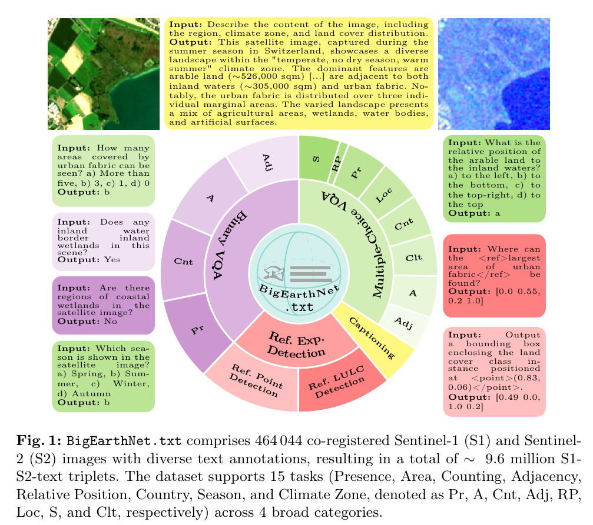
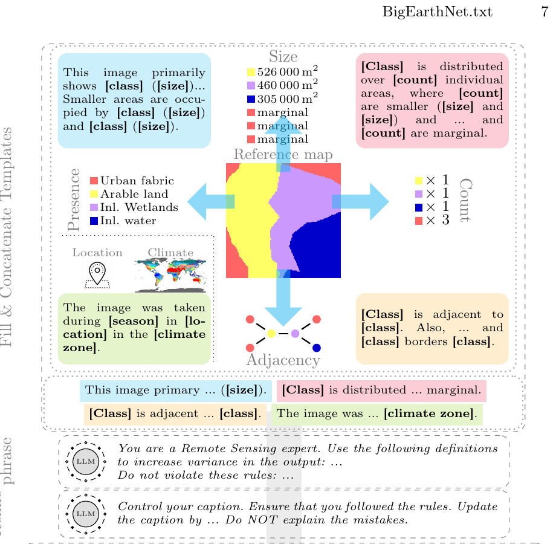
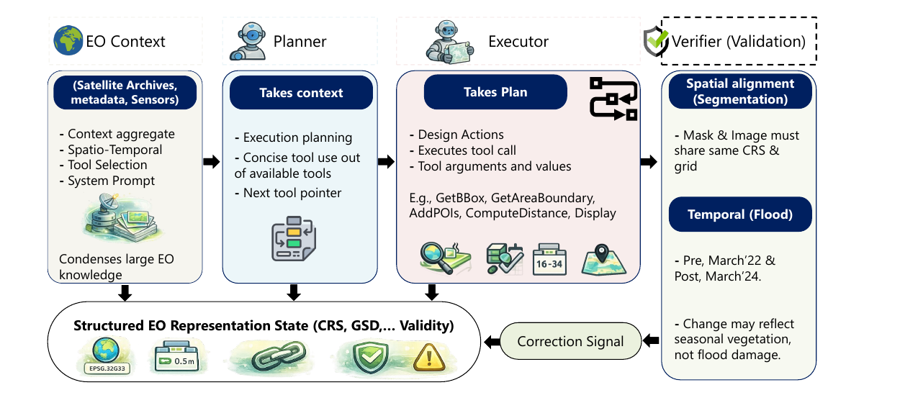
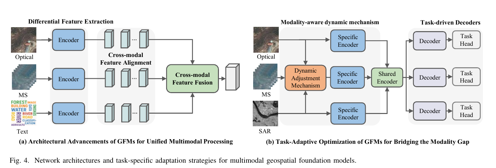

Beginner’s Guide to SatQuery AI: From “What is a Satellite Image?” to Multimodal VLMs and Agentic Remote Sensing
I read the five papers as a connected body of work rather than five isolated papers, and I also cross-checked the remote-sensing fundamentals against NASA/ESA material and the public benchmarks referenced by the papers.
The first misconception to destroy is this:
A satellite image is not simply a photograph taken from very far away.
That mental model works for ordinary RGB satellite pictures, but it breaks almost immediately once you encounter multispectral imagery, SAR, GeoTIFFs, sensor resolution, change detection, or multimodal AI.
A better mental model is:
A satellite is a measuring instrument. A satellite image is a geographically located grid of physical measurements. AI then learns patterns in those measurements.
And SatQuery AI adds one more layer:
Instead of asking one AI model to know everything, an agent understands the question, examines what data are available, chooses appropriate specialist tools/models, checks whether their operations are scientifically valid, and turns the resulting evidence into an answer.
That distinction is at the heart of all five papers. One review explicitly warns that fluent geographic language does not itself establish geographic competence: results need to be grounded in coordinates, scale, topology, sensor characteristics and executable geographic operations.
I’ll build everything from zero.
Part I — Before AI: what exactly are we observing?
1. What is remote sensing?
Imagine trying to determine whether a cup of tea is hot.
You could:
- touch it directly,
- look at steam coming from it,
- point an infrared thermometer at it.
The last two are examples of remote sensing because you are learning something without physically touching the target.
Satellite remote sensing follows the same idea.
A sensor hundreds of kilometres above Earth measures electromagnetic energy associated with Earth’s surface.
That energy might have:
- come from the Sun and reflected from Earth,
- been emitted by Earth,
- or been transmitted by the satellite itself and reflected back.
NASA distinguishes sensors broadly into passive and active instruments. Passive instruments receive naturally emitted or reflected energy; active instruments transmit energy and measure the return. (Earthdata GCMD)
So:
REMOTE SENSING
Passive Active
│ │
│ │
Sun provides Sensor transmits
energy energy
│ │
↓ ↓
Earth Earth
│ │
↓ ↓
Satellite Satellite
measures measures
reflection returnOptical satellite imagery is usually on the passive side.
SAR radar imagery is active.
We’ll soon see why this difference matters enormously.
2. What is electromagnetic radiation?
You’ve already interacted with electromagnetic radiation your entire life:
- radio waves,
- microwaves,
- infrared,
- visible light,
- ultraviolet,
- X-rays.
These are fundamentally the same family of phenomena but have different wavelengths.
NASA describes visible light as only a small part of the electromagnetic spectrum. (NASA Science)
Think about a piano.
The piano contains many notes.
Your eyes effectively hear only a tiny group of those notes.
Satellite sensors can “listen” to many frequencies your eyes cannot see.
Conceptually:
Long wavelength Short wavelength
Radio ── Microwave ── Infrared ── Visible ── UV ── X-ray
↑
your eyes see
only this regionThis turns out to be incredibly valuable.
Two materials that look similarly green to a human can reflect infrared light very differently.
That’s why satellite imaging is often much more than simply taking RGB photographs.
3. What does a pixel actually contain?
On your phone, you may think of an image pixel as:
Pixel = [Red, Green, Blue]For example:
[255, 0, 0] → red pixelBut that is only one type of imagery.
A satellite pixel may look more like:
Pixel = [
blue measurement,
green measurement,
red measurement,
red-edge measurement,
near-infrared measurement,
short-wave infrared measurement,
...
]Or for radar:
Pixel = [
VV backscatter,
VH backscatter
]The important idea is:
Each channel/band represents a measurement made in some specific part of the electromagnetic spectrum or measurement configuration.
So an image can be represented mathematically as a three-dimensional tensor:
\[ X \in \mathbb{R}^{H\times W\times C} \]
where:
- (H) = image height,
- (W) = image width,
- (C) = number of channels/bands.
A normal photograph has:
\[ C=3 \]
for RGB.
Sentinel-2 has 13 spectral bands, covering 443–2190 nm. ESA states that four bands are available at 10 m spatial resolution, six at 20 m and three at 60 m. (European Space Agency)
Already, you can see why:
normal image model
≠
remote-sensing model4. What does “band” mean?
Imagine putting coloured filters in front of a camera.
A red filter allows mainly red wavelengths through.
A green filter isolates another wavelength range.
Satellite bands are much more precise versions of this idea.
Each band measures energy within a particular wavelength interval.
For example:
Band 2 → blue-ish wavelengths
Band 3 → green-ish wavelengths
Band 4 → red-ish wavelengths
Band 8 → near infrared
...Sentinel-2 does this across 13 spectral channels. (European Space Agency)
And this gives us our first important remote-sensing concept:
Spectral signature
Different materials reflect different wavelengths differently.
Imagine:
Visible Near infrared
│ │
Healthy leaf ███ █████████
Concrete █████ ████
Water ████ ▏
Dry soil ████ █████That pattern of reflection across wavelengths is approximately the material’s spectral signature.
It is why multispectral/hyperspectral imagery can distinguish things ordinary RGB images struggle with.
The GFM survey specifically notes that multispectral imagery uses several narrow bands and can discriminate surfaces using their shape, structure and spectral response.
5. RGB optical imagery
Let’s start with the most familiar satellite sensor.
An RGB optical image records approximately the wavelengths humans see:
- red,
- green,
- blue.
The survey gives the visible range as roughly 400–700 nm and describes optical RGB as measuring surface reflectance in the visible solar spectrum.
You can think of it as:
SUN
│
│ sunlight
▼
GROUND
│
│ reflected light
▼
OPTICAL SATELLITE SENSORStrengths
RGB images are:
- intuitive for humans,
- easy to visualize,
- great for texture and shape,
- useful for roads, buildings, rivers and land-cover patterns.
Weakness
The sensor depends heavily on reflected light.
So:
cloud
↓
████████████████
Earth hidden underneathis a problem.
Night is another problem for passive reflected-light imaging.
This is one reason radar is so important.
6. Panchromatic imagery
You may encounter another term:
Panchromatic
Instead of dividing light into multiple narrow colour bands, a panchromatic sensor usually measures a relatively broad range as one grayscale channel.
Think:
RGB:
R ─────┐
G ─────┼─ separate channels
B ─────┘versus:
Panchromatic:
wide wavelength range
↓
one intensity valueOne reason panchromatic imagery is useful is that it can often be captured at higher spatial detail than multispectral channels for a given sensor design.
That’s also why pan-sharpening exists: combine the spatial detail of a panchromatic image with the colour/spectral information of lower-resolution multispectral imagery.
You don’t need pan-sharpening to understand SatQuery immediately, but the term is common in high-resolution EO systems.
7. Multispectral imagery
Now we’re entering the data SatQuery really cares about.
Intuition
Imagine having superhuman vision.
Instead of seeing only:
red
green
blueyou can also see:
near infrared
shortwave infrared
red edge
...That’s approximately what multispectral sensors give us.
Formal definition
The paper describes multispectral data as several narrow spectral bands imaging the same scene.
Sentinel-2 is a major example:
13 bands
with:
- 4 at 10 m,
- 6 at 20 m,
- 3 at 60 m.
Its swath is 290 km and the baseline two-satellite configuration has a five-day revisit time at the equator. (European Space Agency)
Why do those extra bands matter?
Suppose two fields look equally green.
RGB model:
field A → green
field B → green
"Probably similar."Multispectral model:
RED RED-EDGE NIR SWIR
field A ● ● ● ●
field B ● ○ ○ ●
"These are spectrally different."The additional information can help characterize vegetation, water, soil and land cover.
The BigEarthNet.txt paper explicitly explains that visible RGB may separate broad classes such as water and forest, while spectral information outside ordinary RGB can be necessary to distinguish more complex land-cover categories, such as different forest types.
That sentence is central to SatQuery.
8. Hyperspectral imagery
Multispectral:
several bandsHyperspectral:
dozens or hundreds of narrow,
often contiguous bandsImagine instead of asking:
“What colour is this?”
you record a very detailed curve:
Reflectance
^
│ /\
│ /\ / \
│ _____/ \____/ \____
└───────────────────────────> wavelengthThat curve can act almost like a material fingerprint.
The survey says hyperspectral sensing collects hundreds of contiguous narrow bands, creating dense spectral signatures at each pixel. This enables fine material discrimination for applications such as land-cover analysis, vegetation analysis and mineral exploration.
SatQuery’s defined scope does not require hyperspectral support, but understanding it helps you see that:
“Satellite image” is an extremely broad category.
9. What is SAR?
This is probably the least intuitive part for a beginner.
SAR means:
Synthetic Aperture Radar
Forget conventional photographs for a moment.
A SAR satellite emits microwave radar pulses toward Earth.
Then it listens to what comes back.
SATELLITE
│
│ microwave pulse
▼
~~~~~~~~ EARTH ~~~~~~~~
▲
│ returned echo
│
SATELLITEThis returned signal is called backscatter.
ESA describes Sentinel-1 as carrying a C-band Synthetic Aperture Radar that supplies all-weather, day-and-night imagery. (European Space Agency)
NASA similarly notes that SAR enables imaging during poor weather and both night and day. (Earthdata GCMD)
That’s a major operational advantage.
10. Why can radar see through clouds?
Cloud droplets are very troublesome for visible wavelengths.
Microwave wavelengths used by many radar systems are much longer.
As a result, many clouds interact much less strongly with these radar wavelengths than with visible light.
So:
OPTICAL
Satellite
↓
CLOUD ☁☁☁
✕
ground obscuredwhile approximately:
SAR
Satellite
↓ radar
CLOUD ☁☁☁
↓
GROUND
↑ echo
↑
SatelliteThis doesn’t mean radar is magically unaffected by every atmospheric situation, but it is dramatically less dependent on cloud-free daylight conditions than ordinary optical imaging.
This complementarity is exactly why SatQuery requires joint optical-SAR analysis.
11. SAR images don’t show “colour”
Here’s where people get confused.
In an optical image:
bright or coloured pixel ≈ reflected light in a wavelength.
In SAR:
brightness ≈ strength of radar backscatter after processing.
Different things affect that return.
NASA documentation notes that backscatter is affected by surface structure/roughness and dielectric properties such as moisture. A smooth surface can reflect most of the signal away from the radar, while complex structures can return more energy. (Earthdata)
So calm water often looks dark in radar imagery.
But this does not imply:
dark = waterin every situation.
Wind can roughen water.
Radar geometry matters.
Different targets can be dark for different reasons.
Different wavelengths and polarizations behave differently.
That is why a SAR image cannot be interpreted using simple RGB intuition.
The agentic-EO paper puts the distinction nicely: optical sensors measure reflected radiation affected by illumination and atmosphere, whereas SAR backscatter encodes properties including roughness and moisture.
12. What are VV, VH, HH and HV?
Radar waves have an electric-field orientation called polarization.
A radar can transmit and receive different orientations.
The common labels are:
HH
HV
VH
VVFor example:
VV = transmit vertical
receive vertical
VH = transmit vertical
receive horizontalDifferent polarization channels interact differently with vegetation, soil and structures.
NASA’s SAR material describes HH/VV as co-polarized measurements and HV/VH as cross-polarized measurements, noting that they can provide complementary information. (Earthdata)
You do not need to memorize radar scattering physics yet.
For SatQuery, remember:
A SAR channel is not equivalent to an RGB colour channel.
The model must know what sensor and polarization it is dealing with.
13. Why combine optical and SAR?
This is central to PS 26167.
Think of two doctors examining the same patient.
Doctor A has an X-ray.
Doctor B has a blood test.
Neither measurement is “better” universally.
They’re sensitive to different things.
Likewise:
| Optical/multispectral | SAR |
|---|---|
| reflected electromagnetic radiation | emitted radar → backscatter |
| strong spectral information | strong structural/scattering information |
| intuitive visually | harder for humans to interpret |
| affected by cloud/daylight | often usable through clouds/day/night |
| vegetation/material spectral clues | roughness/moisture/geometry clues |
NASA’s crop-mapping training summarizes the complementarity similarly: optical data relate strongly to vegetation’s chemical/reflective properties, while radar provides structural/moisture-sensitive information. (Earthdata Forum)
The multimodal GFM survey consequently describes multispectral and SAR information as complementary spectral and structural information.
This gives us:
OPTICAL SAR
│ │
│ spectral clues │ structural/radar clues
│ │
└──────────┬────────────┘
↓
FUSION MODEL
↓
stronger shared
interpretationThat’s the theory.
Actually making the fusion work is much harder—we’ll reach that later.
14. Four different kinds of “resolution”
This terminology trips up almost every beginner.
A. Spatial resolution
How much ground area corresponds approximately to one image sample/pixel.
Suppose a product is 10 m resolution.
The simplified interpretation is:
one pixel ≈ 10 m × 10 m ground footprintBut be careful: pixel spacing/GSD and true resolving power are related but not identical physical concepts. For beginner purposes they are often discussed together.
Higher spatial resolution means finer detail.
0.5 m → individual vehicles/building detail may be visible
10 m → fields/roads/urban blocks
250 m → regional phenomenaThe agentic EO paper emphasizes something deeper:
Scale isn’t merely preprocessing. It determines what phenomena can actually be observed and therefore what conclusions are scientifically valid.
That’s important.
You cannot upscale a 250 m pixel and suddenly discover a 2 m car.
B. Spectral resolution
How finely a sensor divides the electromagnetic spectrum.
Conceptually:
Low spectral resolution
████████████████████
High spectral resolution
██ ██ ██ ██ ██ ██ ██ ██More/narrower wavelength bands can separate materials more precisely.
C. Temporal resolution
How frequently a sensor can observe the same area.
Examples:
every day
every 5 days
every 12 days
...This matters for:
- crop growth,
- flood evolution,
- wildfires,
- urban expansion.
Sentinel-2’s baseline constellation revisit is five days at the equator. (European Space Agency)
D. Radiometric resolution
How finely a sensor distinguishes differences in measured energy.
A simplified example:
2-bit measurement:
4 possible levels
8-bit measurement:
256 possible levels
12-bit measurement:
4096 possible levelsMore levels can encode subtler intensity differences, although actual useful signal quality depends on far more than bit depth.
15. Raster vs vector data
You will encounter both constantly in GIS.
Raster
A grid.
Examples:
satellite image
elevation map
classification mask
temperature surfaceRepresentation:
┌───┬───┬───┬───┐
│ 4 │ 4 │ 3 │ 3 │
├───┼───┼───┼───┤
│ 4 │ 2 │ 2 │ 3 │
├───┼───┼───┼───┤
│ 1 │ 1 │ 2 │ 3 │
└───┴───┴───┴───┘Vector
Explicit geometry.
Examples:
point → tower
line → road
polygon → lake boundaryConceptually:
POINT: •
LINE: ─────
POLYGON: ┌────┐
│ │
└────┘SatQuery may receive raster satellite data and return vector-like evidence such as:
- boxes,
- polygons,
- regions.
16. Why GeoTIFF is different from JPEG
JPEG says approximately:
“Here are coloured pixels.”
GeoTIFF can additionally encode:
“These pixels correspond to this location on Earth using this coordinate system and this transform.”
A proper geospatial raster may contain:
pixels
bands
CRS
geographic transform
resolution
bounds
NoData values
metadataThat information makes operations such as:
Where exactly is this lake?
How many hectares changed?
Do these two images overlap?possible.
Without georeferencing, you may still analyze imagery visually, but many geographic conclusions become impossible or unreliable.
17. What is a CRS?
CRS means:
Coordinate Reference System
This sounds frightening but the underlying idea is simple.
Earth is curved.
Computer screens and maps are flat.
We therefore need rules that define how Earth locations are represented as coordinates.
Example:
Latitude / Longitude:
30.3165°, 78.0322°versus a projected system:
X = ...
Y = ...Different coordinate systems can represent the same physical location using very different numbers.
Therefore:
Raster A coordinates
+
Raster B coordinatescannot simply be overlaid unless their coordinate systems are compatible or transformed correctly.
This matters so much that the agentic remote-sensing paper repeatedly treats CRS as part of the state of the problem, not incidental metadata. Its formal EO state includes the current data, CRS, resolution/GSD, extent, temporal window, modality, uncertainty, provenance and tool history.
18. What does “co-registered” mean?
Imagine two transparent maps of the same neighbourhood.
On map A, the river is here:
~~~~~~~On map B, because the images don’t align properly, the same river appears shifted:
~~~~~~~If you compare them pixel-by-pixel, your system might think:
“The river moved!”
when actually the maps are simply misaligned.
Co-registration means aligning images so corresponding geographic locations correspond spatially.
For cross-modal imagery:
Optical pixel/location
│
└──── same ground location ──── SAR pixel/locationFor change detection:
T1 location(x, y)
│
└──── same ground location ──── T2 location(x, y)This is a prerequisite for meaningful paired analysis.
19. What is bi-temporal imagery?
Bi = two.
Temporal = time.
So:
Image at time T1
+
Image at time T2Example:
June 2024 June 2026
farmland new buildings
↓ ↓
[image 1] [image 2]
\ /
\ /
CHANGE ANALYSISThis is what SatQuery’s:
“Has built-up area increased?”
query requires.
20. Difference detection is not automatically change understanding
Suppose:
T1 = January
T2 = AugustA crop field may look radically different.
Did:
land use change?
Maybe not.
The crops may simply be at different seasonal stages.
The agentic EO paper emphasizes that satellite observations are often irregular, affected by cloud gaps, sensor changes and seasonal cycles. A change model must distinguish meaningful changes from seasonal variation, noise and incomplete observations.
This is a crucial difference:
Pixel difference
≠
Meaningful real-world changePart II — Now let’s build AI knowledge from zero
21. AI vs ML vs deep learning
These words are often used interchangeably, but that’s sloppy.
Think of nested circles:
┌──────────────────────────────┐
│ Artificial Intelligence │
│ │
│ ┌──────────────────────┐ │
│ │ Machine Learning │ │
│ │ │ │
│ │ ┌───────────────┐ │ │
│ │ │ Deep Learning │ │ │
│ │ └───────────────┘ │ │
│ └──────────────────────┘ │
└──────────────────────────────┘Artificial Intelligence
Broad idea:
machines performing tasks associated with intelligent behaviour.
Could include:
- search,
- rule systems,
- planning,
- machine learning.
Machine Learning
Instead of manually writing every rule:
if pixel is dark:
return "water"we show the computer examples and optimize a mathematical model to discover useful patterns.
Deep Learning
A branch of ML using multilayer neural networks that learn complex representations.
Modern:
- image models,
- LLMs,
- VLMs,
are primarily deep-learning systems.
22. The simplest useful ML model
Suppose we want to predict:
vegetation
or
not vegetationWe collect observations:
Input X Label y
spectral values → vegetation
spectral values → water
spectral values → vegetation
...A model implements some function:
\[ f_\theta(X)=\hat y \]
where:
- (X) = input,
- () = model parameters,
- (y) = prediction.
Training means finding parameters () that make predictions match known examples well.
23. What are parameters?
A parameter is a learned numerical value inside the model.
Think about:
\[ y = wx+b \]
Here:
- (w) = parameter,
- (b) = parameter.
A modern neural network may contain millions or billions of these numbers.
When people say:
“a 1B model”
they roughly mean around one billion learned parameters.
The BigEarthNet paper’s adapted InternVL has approximately 1.1 billion total parameters, but only 5.8 million are trainable during their adaptation procedure. We’ll eventually understand why.
24. Training versus inference
These are different phases.
Training
Model sees examples and changes its parameters.
input
↓
model
↓
prediction
↓
compare with truth
↓
error/loss
↓
adjust parameters
↓
repeatInference
Training has finished.
Now:
new unseen image
↓
trained model
↓
predictionSatQuery’s public web application mostly performs inference.
Fine-tuning happens beforehand.
25. What is a loss function?
Suppose truth is:
waterand model predicts:
forestThe model needs a numerical signal that says:
you’re wrong.
A loss function measures prediction error.
Conceptually:
\[ L(\theta)=\text{how wrong the model is} \]
Training tries to reduce:
\[ L \]
by changing:
\[ \theta \]
You can imagine descending a hill:
Loss
^
│ ●
│ /
│ ●
│ /
│ ●
│____●____________> parameters
minimum-ishThe common family of algorithms used to adjust parameters is gradient descent.
26. Epoch, batch and learning rate
These terms appear constantly in papers.
Epoch
One pass through the training dataset.
entire dataset once = 1 epochBatch
Instead of processing a million images simultaneously, training works with smaller groups.
batch 1 = samples 1–32
batch 2 = samples 33–64
...Learning rate
Controls how aggressively parameters change.
Too high:
jump over good solutionToo low:
training takes foreverThe BigEarthNet RS-InternVL experiment warms its learning rate from (10^{-6}) to (10^{-4}) during the first 1% of steps and then follows cosine decay.
You don’t need to understand cosine scheduling yet. Just recognize it as control over how large the training updates are.
27. Training, validation and test sets
One of the most important concepts in all of machine learning.
Suppose you have 100,000 examples.
You don’t want to train on every example and then ask:
“How well do you perform on those same examples?”
That’s like giving a student the exam paper before the exam.
Instead:
Dataset
│
├── Training set
│ model learns from this
│
├── Validation set
│ choose settings/check progress
│
└── Test set
final unbiased evaluationThis leads directly to another concept.
28. Overfitting
Imagine memorizing answers to 100 questions without understanding the topic.
When the exam contains the same questions:
100/100but new questions:
20/100That’s analogous to overfitting.
A model becomes excellent on training patterns but poor on new data.
What we really care about is:
generalization
Can the model perform on observations it didn’t memorize?
29. Domain shift
Now we get to one of the most important concepts for SatQuery.
Suppose you learn to identify cars from:
daytime street photosThen you’re evaluated on:
nighttime thermal imagesSame semantic concept:
car
but very different data distribution.
That’s domain shift.
Remote sensing has enormous domain-shift problems:
Sentinel → RISAT
Europe → India
10 m → 0.5 m
summer → winter
optical → SAR
one radar polarization → another
one incidence angle → anotherThe multimodal GFM survey identifies sensor heterogeneity, spatial/temporal resolution differences, spectral range, noise and sensor distribution differences as central causes of difficulty in cross-modal representation learning.
The agentic EO position paper goes even further: a model can operate in a perfectly valid CRS with correctly aligned imagery and still produce the wrong semantic result because its learned model is being used outside its training distribution.
That will be extremely important for your SatQuery solution.
30. Supervised learning
You provide labels.
image label
[forest image] → forest
[water image] → water
[urban image] → urbanThe model learns from explicit target answers.
Typical supervised remote-sensing tasks:
- classification,
- detection,
- segmentation,
- VQA.
31. Self-supervised learning
Remote-sensing labels are expensive.
But unlabeled satellite images are abundant.
So researchers invent tasks where data creates its own supervision.
Example:
Take:
[full image]hide parts:
[ visible ][MASK]
[MASK ][visible]ask model to reconstruct missing information.
The model learns useful representations even though no human said:
“this is agriculture.”
This family of ideas underlies many Earth-observation foundation models.
32. Classification
Question:
“What category does this entire image belong to?”
Input:
imageOutput:
urbanor:
forestOne output for the whole scene.
33. Object detection
Question:
“Where are the aircraft?”
Output:
aircraft 1: [x1, y1, x2, y2]
aircraft 2: [x1, y1, x2, y2]Typically visualized:
┌───────────────────────────┐
│ ┌──────┐ │
│ │plane │ │
│ └──────┘ │
│ │
└───────────────────────────┘Those rectangles are bounding boxes.
34. Semantic segmentation
Instead of saying:
"There is water somewhere here."segmentation labels individual pixels.
Example:
Input Mask
🌳🌳🏠💧 F F U W
🌳🏠🏠💧 → F U U W
🌳🌳💧💧 F F W Wwhere:
F = forest
U = urban
W = waterThis is much more useful when you need:
- area,
- boundaries,
- change maps.
35. Change detection
Input:
Image at T1
Image at T2Output:
changed/not changedoften per pixel.
More advanced systems identify:
forest → urban
water → dry land
agriculture → built-upThat is semantic change detection.
Part III — Neural networks and vision models
36. What is a neural network?
Don’t be intimidated by the biological analogy.
At its core, a neural network is a giant differentiable mathematical function made of many layers.
input
↓
layer
↓
layer
↓
layer
↓
outputAn individual unit roughly performs:
\[ z=w_1x_1+w_2x_2+\ldots+b \]
then applies a nonlinear function.
Stack millions of these operations and train the weights, and networks can learn complicated mappings.
37. Why don’t we manually tell the network what a building is?
Because “building” doesn’t have one universal pixel pattern.
Buildings vary in:
- colour,
- material,
- shape,
- orientation,
- sensor,
- shadow,
- resolution,
- geographical region.
Instead, a deep model learns increasingly abstract features.
Simplified:
early layers:
edges, corners, textures
middle:
roof-like structures
roads
repetitive shapes
later:
urban structure
building
airportThese learned features are often called representations.
38. What is an embedding?
One of the most important AI concepts.
An embedding is a numerical vector representing some piece of information.
For example:
"water"
→ [0.12, -0.84, 0.31, ...]An image:
[water-body image]
→ [0.15, -0.80, 0.27, ...]If a model learns a good joint space, semantically related things lie close together.
Conceptually:
embedding space
forest ● ● tree
\
● woodland
● airplane
● airport
● river
● lake
● waterThis becomes the bridge between:
vision
and
language39. CNNs
CNN means:
Convolutional Neural Network
Intuition
Imagine sliding a small detector across an image:
image
┌─────────────┐
│ [] │
│ │
│ │
└─────────────┘It asks:
Is there an edge here?
Is there a texture here?
Is there a corner here?and repeats that across the image.
CNNs are very good at learning local spatial patterns.
The multimodal GFM survey describes CNNs as exploiting local connectivity and hierarchical representation, supporting multi-scale analysis and fine boundary capture.
40. Transformers
Transformers originated in language processing but now dominate many visual foundation models.
Their key mechanism is:
attention
Instead of only examining nearby pixels, a model can learn:
which other parts of the input matter for understanding this part?
For a satellite scene:
pixel/patch here
│
├──────── road elsewhere
├──────── neighbouring buildings
└──────── river boundaryThe survey notes that transformers use self-attention for long-range and cross-modal dependencies, helping capture global correlations and semantics, though often at substantial computational cost.
41. Vision Transformer — ViT
A ViT turns an image into small patches.
Imagine:
original image
┌────┬────┬────┬────┐
│ P1 │ P2 │ P3 │ P4 │
├────┼────┼────┼────┤
│ P5 │ P6 │ P7 │ P8 │
├────┼────┼────┼────┤
│... │... │... │... │
└────┴────┴────┴────┘Each patch becomes a vector/token.
Then:
P1 → token
P2 → token
P3 → token
...and the transformer processes their relationships.
This is analogous to an LLM processing words/tokens.
That’s why vision and language transformers fit together so naturally.
Part IV — Language models
42. What is an LLM?
LLM means:
Large Language Model
A useful simplified description is:
a neural network trained to predict tokens based on preceding context.
If input is:
"The capital of India is"it learns a probability distribution such as:
Delhi 0.93
Mumbai 0.02
...Then repeats the process token by token.
The agentic geospatial survey formalizes an LLM exactly this way: as an autoregressive model predicting the next token conditioned on previous tokens.
This seemingly simple objective at huge scale gives rise to:
- writing,
- summarization,
- code generation,
- question answering,
- some reasoning capabilities.
43. Why can’t an LLM understand an image directly?
Text looks like:
[token1, token2, token3, ...]An image looks like:
height × width × channelsDifferent representation.
So we need a visual encoder.
44. Vision-Language Model — VLM
A simplified VLM:
IMAGE
↓
Vision Encoder
↓
Visual embeddings
↓
Projection/Connector
↓
Language-model-compatible tokens
+
QUESTION
↓
LLM
↓
ANSWERExample:
image: satellite scene
question:
"Is there a river visible?"
↓
"Yes."That is Visual Question Answering — VQA.
45. Why do we need remote-sensing VLMs?
A generic VLM learns primarily from conventional images:
cats
people
cars
rooms
web images
memes
documentsSatellite data is radically different:
top-down perspective
tiny objects
large geographic regions
arbitrary object rotation
multispectral channels
radar imagery
multi-temporal observations
geospatial metadataThe GFM survey says general-purpose foundation models face a substantial domain gap because remote-sensing imagery varies from sub-meter to tens-of-meters spatial resolution, contains spectral dimensions beyond RGB and frequently requires temporal reasoning.
So this idea:
Generic VLM
+
good prompt
=
remote sensing expertdoes not survive scrutiny.
And BigEarthNet.txt gives us experimental evidence for exactly this.
Part V — Vision-language tasks you must distinguish
46. Image captioning
Input:
imageOutput:
"The scene contains agricultural land, urban areas
and a water body..."Goal:
describe the image.
47. Visual Question Answering — VQA
Input:
image + questionOutput:
answerExample:
Q: Is there inland water?
A: YesThis is a mandatory SatQuery capability.
48. Multiple-choice VQA
Same idea, but answer comes from options.
Which season is represented?
A. Winter
B. Summer
C. Autumn
D. SpringBigEarthNet.txt explicitly includes both binary VQA and MCQ VQA.
49. Visual grounding
This is more important than it sounds.
Question:
“Where is the water body?”
A normal VLM may say:
"The water body is in the upper-right."A grounding model returns coordinates:
[x1, y1, x2, y2]or a region/mask.
┌───────────────────────────┐
│ ┌───┐ │
│ │~~~│ │
│ └───┘ │
│ │
└───────────────────────────┘This turns language into spatial evidence.
The geographic-science review highlights why this distinction matters: semantic caption/VQA success can coexist with incorrect object location, scale or topology.
That is why SatQuery should care enormously about grounding.
50. Image-text retrieval
Input:
"airport surrounded by agricultural fields"System searches imagery and retrieves matching scenes.
Or reverse:
image → relevant textThis isn’t the core mandatory SatQuery task but is an important VLM capability.
Part VI — Foundation models
51. What is a foundation model?
Traditional approach:
Model A → forests
Model B → buildings
Model C → water
Model D → roadsFoundation-model philosophy:
Large pretrained model
│
┌──────────────┼───────────────┐
↓ ↓ ↓
Forests Buildings WaterA foundation model is pretrained broadly enough that its representations can later be adapted to many downstream tasks.
The GFM survey defines them as large-scale pretrained models learning broadly useful representations that can be adapted to downstream domains/tasks.
52. Pretraining versus fine-tuning
Imagine becoming a doctor.
Pretraining
You first learn:
biology
chemistry
anatomy
general medicineFine-tuning
Then specialize:
cardiologySame idea:
large generic/pretrained model
↓
remote-sensing data
↓
fine-tuning
↓
remote-sensing-specialized modelThe GFM survey formally describes fine-tuning as updating some or all parameters of a pretrained model using task-specific data.
53. Why not fine-tune all billion parameters?
Because it’s expensive.
GPU memory.
Training time.
Storage.
And sometimes you don’t need to change everything.
This motivates:
PEFT — Parameter-Efficient Fine-Tuning
One famous PEFT method is LoRA.
54. LoRA
LoRA means:
Low-Rank Adaptation
You don’t need the linear algebra immediately.
The intuition is enough:
Instead of rewriting a giant textbook:
████████████████████████
████████████████████████
████████████████████████you attach a relatively small specialized set of notes:
████████████████████████
████████████████████████
████████████████████████
+
[small adapter]Most original model weights remain frozen.
Only small low-rank matrices are trained.
This can reduce trainable parameter count dramatically.
And BigEarthNet gives a beautiful real-world example.
Part VII — Multimodal learning
55. What does multimodal mean?
A modality is a distinct kind/form of information.
Examples:
text
image
audio
SAR
optical
multispectral
LiDARMultimodal model:
uses >1 modalitySatQuery is fundamentally multimodal:
natural language
+
optical imagery
+
SAR imagery
+
possibly time
+
geospatial metadata56. Why can’t we simply concatenate everything?
Suppose:
RGB value = 180
SAR backscatter = ...
NIR reflectance = ...These numbers don’t mean the same physical thing.
The paper calls this modality heterogeneity.
Different modalities have different:
- imaging physics,
- viewpoints,
- spatial resolution,
- temporal resolution,
- spectral range,
- noise.
So naïvely doing:
optical tensor
+
SAR tensor
=
donedoesn’t solve multimodal understanding.
57. Semantic gap
Suppose optical sees:
bright rectangular rooftopsSAR sees:
strong radar scattering structuresText says:
"built-up area"All three describe related reality using radically different representations.
The job of multimodal learning is to align them into shared semantics.
This mismatch is called a semantic gap.
58. Contrastive learning
One powerful solution is contrastive learning.
Suppose:
Optical image A
SAR image Aare measurements of the same place.
They are a positive pair.
Meanwhile:
Optical image A
SAR image Zfrom unrelated places can act as a negative pair.
Training encourages:
\[ d(A_\text{optical},A_\text{SAR}) \]
to become small while unrelated representations become more separated.
Intuition:
BEFORE
optical A ● ● SAR A
AFTER
optical A ●● SAR AThe multimodal GFM survey describes contrastive learning exactly in terms of aligning modalities using positive and negative samples, and cites CROMA’s use of co-registered multispectral and SAR pairs.
59. CLIP
CLIP applied a related idea to:
image
+
textExample positive pair:
[image of river]
"A river running through agricultural land"A shared embedding space can become:
image river ●
● text "river"This is enormously useful because language now acts like an open semantic interface.
60. Generative learning
Another route is to reconstruct or generate information.
For example:
masked image
↓
model
↓
reconstruct missing patchesor:
modality A
↓
model
↓
predict modality BThe GFM survey distinguishes contrastive learning—which emphasizes discriminative alignment—from generative learning, which learns joint structure through reconstruction/generation.
Both appear throughout geospatial foundation-model research.
Part VIII — Now we can finally understand BigEarthNet.txt
This is the paper most directly tied to your SIH problem statement.
61. Why was BigEarthNet.txt created?
Earlier remote-sensing image-text datasets had problems such as:
- mostly RGB imagery,
- limited sensor diversity,
- short descriptions,
- limited annotation/task diversity.
Yet Earth observation contains:
multispectral
SAR
geographic context
land-cover relationships
spatial informationBigEarthNet.txt was designed to make vision-language models learn richer multi-sensor Earth-observation semantics.
The authors explicitly argue that existing RS image-text resources were limited in co-registered multi-sensor imagery with >3 bands and annotation variety.
62. What is inside BigEarthNet.txt?

The headline numbers matter, so don’t lose them:
464,044
co-registered:
Sentinel-1 SAR
+
Sentinel-2 multispectralimage pairs.
Approximately 9.6 million
text annotations.
15 tasks
grouped into four broad families:
- captioning,
- binary VQA,
- multiple-choice VQA,
- referring-expression detection.
These are not synthetic numbers from me; they are the reported dataset statistics.
63. Where did the imagery come from?
The source was BigEarthNet v2.0.
That collection contains 549,488 Sentinel-1/Sentinel-2 pairs acquired across ten European countries with pixel-level land-use/land-cover reference information based on CORINE Land Cover 2018.
The authors removed image pairs affected by things such as:
- seasonal snow,
- clouds,
- cloud shadows,
- unclassified reference pixels.
That filtering yielded the final:
464,044 pairs.
64. What is LULC?
You’ll see this acronym constantly.
Land Use / Land Cover
Land cover
What physically covers the surface:
forest
water
grass
concrete
bare soilLand use
How humans use the land:
residential
industrial
agricultural
recreationalThey overlap but aren’t identical.
A grass surface could be:
park
pasture
golf coursesame-ish cover, different use.
65. How were BigEarthNet.txt captions created?

This section is particularly clever.
The authors didn’t simply ask an LLM:
“Look at this image and invent a caption.”
Instead they started with structured ground-truth information.
From the reference map they extracted:
- presence — which LULC classes exist,
- count — how many contiguous regions of each class,
- size — area per class/instance,
- adjacency — which classes border one another.
Then captions were created from templates.
Conceptually:
Reference map
↓
extract verified facts
↓
template:
"The image contains [CLASS] covering [AREA]..."
↓
fact-grounded captionThis is much safer than unconstrained image description generation.
66. Primary, secondary and marginal regions
The authors categorize land cover based on image coverage:
Primary >25%
Secondary 5–25%
Marginal <5%and round area values to the nearest 1,000 m² to reduce label noise.
Again, these details matter if you later use the dataset.
67. Why involve an LLM at all?
Template:
"Urban fabric is present. Water is present.
Urban fabric borders water."is factually controlled but linguistically boring.
A VLM trained only on one rigid sentence pattern might learn the template rather than language understanding.
So BigEarthNet.txt used a two-stage language augmentation process.
Stage 1 — paraphrase
Make the text linguistically richer.
Stage 2 — self-refinement
Compare the rewrite against the original factual template and remove unsupported information/restore omissions.
This is a smart design:
structured truth
↓
language variation
↓
truth checkrather than:
LLM imagination
↓
dataset68. But the generated captions were not perfect
This is one of the most important details in the paper.
The authors manually evaluated 3,209 randomly sampled augmented captions using four criteria:
- linguistic correctness,
- factual accuracy,
- completeness,
- absence of generation artifacts.
Average correctness across the criteria was:
93.76%
but only:
77.50%
of captions passed all four criteria simultaneously.
That teaches us a broader AI lesson:
A large generated dataset can be highly useful without every generated annotation being perfect.
It also explains why BigEarthNet.txt has a separate verified benchmark.
69. Caption dataset richness
Reported caption corpus statistics include approximately:
- 50 million words
- 2.1 million sentences
- average 107 words
- average 4.5 sentences
- 12,394 unique terms
- MTLD lexical-diversity score 64.69
The paper reports this as over 1.7× the lexical diversity of the largest compared >3-band RS image-text dataset.
You don’t need to obsess over MTLD itself.
The important thing is:
they were deliberately trying to create varied natural-language descriptions rather than repetitive labels.
70. How was the VQA data made?
BigEarthNet.txt includes binary questions related to:
- presence,
- count,
- size,
- adjacency.
But there is a subtle dataset-design problem.
Consider:
“Are there exactly three water regions?”
If the image contains no water at all, a model can answer:
Nowithout learning counting.
That’s a shortcut.
The authors deliberately construct some negative count/size questions so the queried class exists but the proposed quantity is wrong.
This is excellent dataset design.
It forces:
actual reasoninginstead of:
class-presence shortcut71. MCQ tasks
The multiple-choice questions extend beyond simple presence and include things such as:
- relative position,
- country,
- season,
- Köppen-Geiger climate zone.
Each question has:
1 correct answer
+
3 incorrect answers72. Referring-expression detection
Example:
“Where is the largest area of urban fabric?”
Model should return coordinates.
This connects language:
"largest urban fabric"to:
specific spatial regionThat’s exactly the sort of evidence SatQuery needs.
Approximately 80% of image pairs in the dataset contain at least one referring-expression annotation, and each image pair can contain up to 16 VQA pairs.
73. The manually verified BigEarthNet benchmark
For fair evaluation, the authors construct a curated benchmark containing:
1,082 image pairs
with:
15,029 annotations
broken into:
| Task | Verified annotations |
|---|---|
| Binary VQA | 6,927 |
| MCQ VQA | 5,550 |
| Captions | 970 |
| Referring-expression detection | 1,582 |
This smaller verified set is much more appropriate for trustworthy evaluation than assuming every automatically augmented caption is perfect.
Part IX — The experiment that matters enormously for SatQuery
74. What happened when existing VLMs were tested?
The BigEarthNet researchers evaluated both:
general computer-vision VLMsand:
remote-sensing-specific VLMson their verified benchmark.
Here’s the surprising part.
Many existing remote-sensing models did not decisively outperform the generic computer-vision VLMs.
For example, the benchmark table reports:
| Model | Caption BLEU-4 | Binary VQA | MCQ | Grounding mIoU |
|---|---|---|---|---|
| GeoChat 7B | 0.75 | 50.82 | 28.36 | 4.85 |
| EarthMind RGB 4B | 1.66 | 57.90 | 34.25 | 12.12 |
| EarthMind S1+S2 4B | 1.46 | 57.79 | 35.26 | 16.18 |
| Qwen 8B | 0.57 | 61.96 | 37.55 | 18.00 |
| GPT model evaluated | 0.30 | 60.39 | 34.93 | 31.73 |
| InternVL 1B | 0.45 | 54.11 | 26.76 | 5.76 |
These scores are percentages as reported by the paper for the stated metrics.
Don’t compare these numbers casually to another benchmark—they only mean something under this benchmark and evaluation setup.
75. More input channels did not automatically solve the problem
Look at:
EarthDial RGB:
Binary VQA = 58.38
EarthDial multispectral S2:
Binary VQA = 44.06And:
EarthMind RGB:
57.90
EarthMind S1 + S2:
57.79The exact models have many architectural differences, so don’t interpret this as “multispectral is bad.”
The correct lesson is:
Simply giving a model extra sensors does not guarantee that it knows how to use them.
Multimodal alignment has to be learned properly.
That is precisely what the next experiment demonstrates.
76. RS-InternVL
The researchers adapted InternVL3-1B.
Instead of discarding the existing model, they added specialist visual paths for:
Sentinel-1
Sentinel-2Conceptually:
RGB image
↓
original InternVL visual path
│
│
├───────────────────────────────┐
│
Sentinel-1 SAR │
↓ │
S1 ViT │
↓ │
projection │
│ │
├──────────────┐ │
│ │
Sentinel-2 │ │
multispectral │ │
↓ │ │
S2 ViT │ │
↓ │ │
projection │ │
│ │ │
└──────────────┴─────────────┘
↓
combined visual tokens
+
instruction
↓
LLM
↓
answerEach sensor gets a pretrained Vision Transformer.
The resulting patch embeddings are projected into the embedding space expected by InternVL’s language model.
77. What is that “projection layer”?
Imagine the SAR encoder speaks:
Frenchand the LLM understands:
EnglishA projection layer acts like a learned translator:
SAR feature space
↓
linear projection
↓
LLM-compatible feature spaceSame for multispectral data.
This is not translating literal language—it is mapping vectors from one coordinate space into another.
78. Frozen backbone
The researchers freeze all ViT backbones.
Meaning:
Don't change these:
██████████████████Train only:
sensor projections
+
LoRA adapters in LLMThis preserves pretrained knowledge and makes training cheaper.
79. RS-InternVL parameter efficiency
Total model:
1.1 billion parameters
Trainable:
5.8 million
LoRA settings:
rank = 8
alpha = 32
dropout = 0.1That means only a small fraction of the full model had to be modified.
This is why LoRA is so relevant for student teams.
80. Which Sentinel-2 bands were used?
The authors use Sentinel-2’s 10 m and 20 m bands.
They exclude the 60 m bands, explaining those are mainly used for cloud screening/atmospheric correction and contribute less to their target semantic understanding task.
Again:
this is a design choice for their experiment—not a universal statement that 60 m bands are never useful.
81. Compute used in the experiment
Their fine-tuning was performed for one epoch on combined training+validation data.
Reported compute:
approximately two days on four NVIDIA H200 GPUs in total.
This is important for your team.
You should not read:
“only 5.8M trainable parameters”
and conclude:
“we can reproduce the entire BigEarthNet training on my laptop.”
The dataset itself is enormous.
82. The result
This is probably the single most important table for your project.
| Model category | Caption BLEU-4 | Binary VQA | MCQ | Referring-expression mIoU |
|---|---|---|---|---|
| Best existing RS baseline in comparison | 1.66 | 58.38 | 35.26 | 16.18 |
| Best existing CV baseline in comparison | 0.96 | 61.96 | 37.55 | 31.73 |
| RS-InternVL | 34.04 | 73.29 | 51.49 | 65.84 |
Stop and interpret that carefully.
Not:
“InternVL is universally best.”
Not:
“these values will transfer to RISAT.”
What it proves within this experiment is:
A relatively small model explicitly adapted on appropriate multisensor remote-sensing image-text data can improve dramatically over unadapted models on the corresponding benchmark.
That is direct experimental support for SatQuery’s requirement that a generic VLM is insufficient.
Part X — How do we measure model quality?
83. Accuracy
For VQA:
\[ Accuracy=\frac{\text{correct answers}}{\text{total questions}} \]
If 80 answers out of 100 are correct:
accuracy = 80%Simple.
But accuracy can hide class imbalance.
84. Intersection over Union — IoU
Critical for spatial tasks.
Suppose:
ground truth box/mask
A
prediction
BIoU:
\[ IoU=\frac{|A\cap B|}{|A\cup B|} \]
Visually:
Truth:
┌──────────────┐
│ │
│ │
└──────────────┘
Prediction:
┌──────────────┐
│ │
│ │
└──────────────┘Their shared overlap is the numerator.
Everything covered by either is the denominator.
Perfect alignment:
\[ IoU=1 \]
No overlap:
\[ IoU=0 \]
85. mIoU
Mean Intersection over Union
Average IoU over many samples/classes.
BigEarthNet’s grounding result:
RS-InternVL mIoU = 65.84%is therefore telling us how well predicted spatial boxes/regions overlap ground truth—not merely whether a text answer sounds right.
86. Acc@0.5 for grounding
VRSBench uses metrics such as:
Acc@0.5
Acc@0.7Meaning roughly:
fraction of predictions whose IoU is at least that threshold.
The current VRSBench release contains:
- 29,614 images
- 29,614 human-verified detailed captions
- 52,472 object references
- 123,221 VQA pairs
and evaluates captioning, visual grounding and VQA. (GitHub)
This makes it highly relevant for SatQuery’s single-image baseline.
87. BLEU
BLEU was originally designed for machine translation.
Very roughly, it measures overlap of word sequences/n-grams between:
generated sentenceand:
reference sentenceBLEU-4 considers sequences up to four words.
Problem:
Reference:
"A river passes through agricultural land."Prediction:
"Farmland surrounds a flowing waterway."Meaning may be similar.
Exact wording is quite different.
So BLEU alone is imperfect for open-ended captioning.
That’s why papers often report several metrics.
88. METEOR, ROUGE, CIDEr and semantic metrics
You will encounter:
- BLEU,
- METEOR,
- ROUGE,
- CIDEr,
- BERTScore,
- LLM-based evaluators.
Each compares generated text with references differently.
You do not need to memorize all formulas right now.
The crucial lesson:
Text generation is harder to evaluate than classification because many different sentences can all be correct.
Part XI — Another major benchmark: RSVQA
The 2020 RSVQA paper attacked exactly this accessibility problem:
experts could analyze remote-sensing imagery, but ordinary users should be able to ask natural-language questions.
The authors built low- and high-resolution remote-sensing VQA datasets using information queried from OpenStreetMap. (arXiv)
BigEarthNet’s literature review reports:
- 77,232 low-resolution QA triplets
- 1,066,316 high-resolution QA triplets
for RSVQA.
Why is RSVQA useful to you?
Because it tests whether:
image understanding
+
language questioncan produce useful remote-sensing answers beyond the exact BigEarthNet dataset.
Part XII — Change detection meets language: CDVQA
89. Why normal VQA isn’t enough
Question:
“Is there a building?”
requires one image.
Question:
“Has the built-up area increased?”
requires:
T1
+
T2So a new task was created:
Change Detection Visual Question Answering — CDVQA
The original CDVQA work frames the problem as querying multitemporal aerial imagery using change-related natural-language questions. (arXiv)
90. CDVQA baseline architecture
The original architecture consists of four major stages:
T1 ──→ feature encoder ──┐
│
T2 ──→ feature encoder ──┤
↓
temporal fusion
│
Question ────────────────┤
↓
multimodal fusion
↓
answer prediction(arXiv)
Let’s decode the terminology.
Multi-temporal feature encoding
Turn T1 and T2 into learned representations.
Temporal fusion
Compare/combine the two times.
Multimodal fusion
Combine image-change representation with the language question.
Answer prediction
Return:
increased
decreased
unchangedor whatever answer vocabulary is used.
This decomposition is far safer conceptually than merely showing two images to a generic chatbot.
Part XIII — Why remote-sensing multimodal models are difficult
The survey identifies three major problems that you should learn by heart.
91. Modality heterogeneity
Optical and radar differ in:
- sensing physics,
- noise,
- resolution,
- geometry,
- spectral characteristics.
Meaning:
SAR ≠ weird grayscale RGBThe model must learn each modality appropriately.
92. Distribution shift
Training:
Europe
Sentinel
10 m
summerdeployment:
India
different satellite
sub-meter
monsoonThe statistical world has changed.
Even if:
class = "building"exists in both.
This is one of the biggest dangers in SatQuery.
93. Semantic gap
Vision ↔︎ language mismatch.
SAR ↔︎ optical mismatch.
Different sensors may observe different physical properties of the same ground object.
The model needs a shared semantic representation such that:
SAR pattern
optical roof
text "building"can become conceptually connected.
Part XIV — Examples of modern EO foundation models
You don’t need to use every model, but the names in these papers will make far more sense now.
94. CROMA
CROMA stands for:
Contrastive Radar-Optical Masked Autoencoder.
Its core idea combines:
radar
+
optical
+
contrastive learning
+
masked reconstructionThe GFM survey cites it as an example where co-registered multispectral and SAR observations are used for cross-modal representation alignment.
The agentic RS paper also lists CROMA among important EO foundation models.
Think of CROMA as:
a representation learner that tries to understand what radar and optical measurements have in common while preserving useful modality-specific information.
It is not inherently an LLM chatbot.
95. AnySat
AnySat takes a broader philosophy:
one Earth-observation representation model across many resolutions, scales and modalities.
The agentic remote-sensing paper explicitly cites AnySat among newer EO foundation models designed for broader multimodal/resolution settings.
This matters because SatQuery’s hidden sensor distribution may not look exactly like Sentinel imagery.
A model philosophy that treats:
resolution
modality
sensoras variable rather than fixed can be useful.
But remember:
architecture alone does not guarantee your hidden-test performance.
You need experiments.
Part XV — Now we can understand “Agentic AI”
This is the other half of your problem statement.
96. An LLM is not automatically an agent
A normal chatbot:
User
↓
LLM
↓
AnswerOne pass.
An agent:
User goal
↓
interpret
↓
choose action/tool
↓
execute tool
↓
observe result
↓
decide next action
↓
...
↓
answerThe geographic-science review defines an agent as a system that iteratively combines perception/retrieval, planning, tool/code execution, feedback and further action. It explicitly excludes simple one-shot prompting or isolated API calls.
97. Tool use
Suppose a user asks:
“How much forest was lost?”
The LLM shouldn’t mentally calculate pixels.
Instead:
LLM/Planner
↓
"Need change mask."
↓
Change Detection Model
↓
mask
↓
"Need physical area."
↓
GIS Area Tool
↓
number
↓
LLM explains resultTools might include:
- Rasterio,
- GDAL,
- GeoPandas,
- Shapely,
- segmentation models,
- object detectors,
- change models.
The geospatial-agent survey finds these categories repeatedly across agentic systems.
98. RAG
RAG means:
Retrieval-Augmented Generation
Suppose the model needs to answer:
“What does this land-cover category mean under CORINE nomenclature?”
Rather than relying on memorized knowledge:
LLM memorythe system searches an authoritative document/database:
question
↓
retriever
↓
relevant source
↓
LLM + source
↓
grounded answerThe agentic geospatial survey describes RAG as retrieving external evidence and conditioning generation on it, supporting domain grounding and reduced reliance on parametric memory.
But here’s a very important SatQuery distinction:
RAG cannot replace visual evidence.
Retrieving a paper explaining water detection does not tell you where water actually is in the uploaded image.
You still need perception models/GIS.
99. Memory
An agent may need to remember:
image A loaded
SAR modality confirmed
CRS = ...
T1 date = ...
change model already executed
result mask = ...Without state tracking, each step behaves like it has amnesia.
The geospatial-agent survey describes explicit memory as storing intermediate results, historical actions and task context beyond the immediate prompt.
But in Earth observation, normal conversational memory is not enough.
We need structured geospatial state.
Part XVI — The most important idea in the agentic EO paper
100. An EO agent is a state updater
This is a deeper definition than:
“an LLM that calls APIs.”
The position paper proposes that the state should include information such as:
\[ s_t=(x_t,c_t,r_t,e_t,\tau_t,m_t,u_t,p_t,h_t) \]
Don’t panic about the symbols.
They mean approximately:
| Symbol | Meaning |
|---|---|
| (x_t) | current image/mask/data |
| (c_t) | coordinate reference system |
| (r_t) | resolution/GSD |
| (e_t) | spatial extent |
| (_t) | time window |
| (m_t) | sensing modality |
| (u_t) | uncertainty/reliability |
| (p_t) | provenance |
| (h_t) | tool history |
This is brilliant for understanding SatQuery.
A tool isn’t just:
function()It transforms the current Earth-observation state.
101. Why tool order matters
Suppose you have two rasters in different coordinate systems.
Incorrect workflow:
compare pixels
↓
resample
↓
reproject laterCorrect workflow may require:
check metadata
↓
reproject consistently
↓
align grids
↓
compareOnce you resample/aggregate data incorrectly, information may be lost.
The position paper therefore argues that geospatial tools are stateful, order-dependent and sometimes partly irreversible.
This is one reason ordinary agent frameworks don’t transfer cleanly to EO.
102. A fantastic example from the paper
The paper includes an illustrative flood-area workflow.
It deliberately shows two agents.
Generic agent
Uses:
pre = 2024-01-05
post = 2024-08-20then performs problematic operations including:
- mismatched temporal window,
- resampling before proper alignment,
- CRS mismatch,
- wrong area conversion.
It eventually produces:
23.8 km²
Looks believable.
But the trace is scientifically invalid.
EO-native agent
Uses a better-matched event window:
pre = 2024-08-12
post = 2024-08-20then:
reproject to common CRS
→ align grid
→ preserve resolution metadata
→ compute flood change
→ calculate area from metadataand obtains the paper’s illustrative:
8.6 km².
Important:
Those numbers are an illustrative example created by the position paper, not measured flood results that I am presenting as real-world ground truth.
The lesson is more valuable than the numbers:
A plausible final answer can come from an invalid pipeline.
103. “The model answered correctly” is not enough
Suppose model guesses:
8.6 km²by accident.
Should it pass?
In ordinary QA evaluation:
correct number → yesFor scientific EO:
wrong images
wrong CRS
wrong pixel area
random guess
but right final numberis still unacceptable.
That’s why the agentic EO paper argues for evaluating the entire trajectory rather than only final-answer accuracy.
This philosophy matches SatQuery’s requested execution summary very well.
Part XVII — Planner, Executor and Verifier

The strongest architecture idea from the agentic papers is beautifully simple.
USER QUERY
↓
PLANNER
↓
EXECUTOR
↓
VERIFIER
│
invalid│ valid
┌───┘
↓
revise
↓
ANSWER104. Planner
Planner asks:
What does the user want?
What data are available?
Which operations are needed?
Which model/tool is appropriate?Example:
“Has built-up area increased?”
Planner sees:
2 temporally separated optical imagesand chooses:
temporal change workflow105. Executor
Executor performs actual operations.
Examples:
reproject
align
tile
run segmentation
run change model
calculate areaThe paper says the executor should invoke geospatial tools with explicit parameters such as:
- CRS,
- spatial resolution,
- extent,
- temporal window.
106. Verifier
This is the most important component.
Verifier asks:
Geometry
Same CRS?
Aligned grids?
Compatible resolution?Time
Dates sensible?
Seasonality considered?Physics
Are measurement/index values meaningful?Provenance
Where did this mask come from?
Which model?
Which parameters?Statistics
Confidence calibrated?
Domain shift?
Output suspicious?The position paper formalizes these five verifier families as geometric, temporal, physical/radiometric, provenance and statistical reliability checks.
This is much stronger than simply asking an LLM:
“Are you sure?”
107. Why LLM self-critique isn’t enough
Imagine:
LLM: "The CRS seems fine."But it never actually inspected the GeoTIFF.
Meaningless.
Instead:
assert raster_a.crs == raster_b.crsor use a real geometry transformation test.
The paper explicitly argues that EO verification should combine deterministic geospatial audits with probabilistic model checks rather than relying on language-model self-consistency.
That is a crucial architectural lesson.
Part XVIII — Not everything should be “AI”
This is another unusually good point from the papers.
Suppose you need:
reprojectionYou already have proven GIS algorithms.
Don’t ask:
LLM:
"Please imagine the new coordinates."Use:
GDAL / PROJ / RasterioLikewise:
calculate known spectral index
tile raster
mosaic imagery
convert coordinates
calculate polygon areaare deterministic operations.
The position paper explicitly says tasks such as:
- atmospheric correction,
- radiometric calibration,
- predefined reprojection,
- vegetation-index calculation,
- tiling,
- mosaicking,
- batch inference,
are usually execution-oriented rather than things that should themselves become agentic reasoning problems.
Agent intelligence belongs primarily in:
What should I do?
Which tool?
In which order?
Under what conditions?
Do I trust the output?Part XIX — What hallucination means in geospatial AI
Normal hallucination:
model invents a fact.
Geospatial hallucination can be more subtle.
For example:
"The lake is north-east of the village."Maybe both lake and village exist.
But the spatial relationship is wrong.
Or:
"Flood area = 20 km²"because area conversion ignored coordinate units.
The geographic-science review says the hierarchy of evidence progresses roughly from fluent language to correct spatial relation reasoning, executable tool use, and finally reproducible workflows that remain valid under changed regions, scales and data sources.
This is a powerful hierarchy:
Sounds smart
↓
Answers correctly
↓
Locates correctly
↓
Executes correctly
↓
Scientifically reproducibleYou want SatQuery near the bottom, not the top.
Part XX — Confidence is not “AI says 92%”
Suppose an LLM produces:
Confidence: 94%Where did that number come from?
Unless tied to measurable/calibrated quantities, it’s decoration.
A better system might combine:
model probability
spatial agreement
cross-model consistency
domain-shift signal
input qualityand calibrate the resulting confidence on validation data.
The agentic position paper specifically recommends associating learned-tool outputs with reliability estimates conditioned on sensor modality, scale, temporal regime and current EO state.
Part XXI — What is calibration?
Imagine a model makes 100 predictions all labelled:
90% confidentIf the confidence is well calibrated, roughly 90 of those predictions should be correct over many comparable examples.
If only 50 are correct:
90% confidencewas misleading.
This matters hugely when SatQuery outputs:
“Built-up area increased.”
The system should distinguish:
strong evidencefrom:
weak suggestionPart XXII — How all of this maps onto SatQuery AI
Now the entire problem statement should look much less mysterious.
Query 1
“Describe the land cover and major objects visible.”
Flow:
single image
↓
metadata/sensor validation
↓
RS-adapted VLM
↓
scene understanding
↓
grounded description108. Query 2 — grounding
“Highlight the water body referred to in the query.”
image
+
query
↓
remote-sensing grounding model
↓
bbox/mask
↓
overlay
↓
text explanationNot:
LLM says "upper left"The model should return actual evidence.
109. Query 3 — temporal reasoning
“What changed between these two dates?”
T1 T2
│ │
└──── validate ───┘
│
↓
spatial alignment check
↓
temporal compatibility
↓
change specialist
↓
change map/features
↓
question/description model
↓
text + spatial evidence110. Query 4 — cross-modal reasoning
“Use optical and SAR images together to identify built-up and water-covered regions.”
Optical
↓
optical encoder
│
│
├─────────────┐
↓
fusion
↑
┌─────────────┘
│
SAR encoder
↑
SARThen perhaps:
fused features
↓
segmentation/classification/grounding
↓
built-up mask
water mask
↓
answerThis is not equivalent to visually stacking the images.
111. Query 5 — quantitative change
“How much did the built-up area increase?”
This should add deterministic GIS computation:
T1 + T2
↓
change segmentation
↓
changed-built-up mask
↓
GeoTIFF transform / ground geometry
↓
GIS area computation
↓
physical area
↓
LLM explanationThe LLM does not guess the hectares.
The geometry tool computes them.
Part XXIII — A robust SatQuery internal architecture
After reading all five papers, I would teach the architecture like this:
┌─────────────────────────────────────────────────────┐
│ USER QUERY │
└────────────────────────┬────────────────────────────┘
│
↓
QUERY INTERPRETER
│
↓
┌─────────────────────────────────────────────────────┐
│ INPUT INSPECTOR │
│ │
│ file type │
│ number of images │
│ sensor/modality │
│ bands │
│ CRS │
│ GSD/resolution │
│ extent │
│ acquisition time │
│ co-registration │
└────────────────────────┬────────────────────────────┘
↓
STRUCTURED EO STATE
↓
PLANNER
│
┌─────────────────┼─────────────────┐
↓ ↓ ↓
SINGLE IMAGE MULTITEMPORAL OPTICAL-SAR
│ │ │
↓ ↓ ↓
VQA/GROUNDING CHANGE MODEL FUSION MODEL
│ │ │
└─────────────────┼─────────────────┘
↓
GIS TOOLS
↓
EVIDENCE
↓
VERIFIER
│
┌──────────┴──────────┐
│ │
INVALID VALID
│ │
↓ ↓
revise/reject ANSWER GENERATOR
│
┌───────────────┼───────────────┐
↓ ↓ ↓
TEXT MAP/MASK TRACE/REPORTThis synthesizes the architecture principles in the papers without claiming that this exact diagram is a published architecture.
Part XXIV — Why a single VLM is not enough
Let’s stress-test the obvious alternative:
Qwen/InternVL
+
all uploaded images
+
promptWhy can that fail?
1. Sensor physics
SAR ≠ RGB.
2. Geometry
LLM may not preserve CRS/grid validity.
3. Numeric analysis
Language generation isn’t a GIS calculator.
4. Change
Two images may differ due to season/registration rather than actual event.
5. Grounding
Correct sentence can accompany wrong location.
6. Domain shift
Training sensor may differ from deployment sensor.
7. Traceability
You need to know which evidence/model produced the result.
This is why the agentic EO paper’s central argument is that EO is not simply another generic tool-use domain. Early geospatial mistakes can silently propagate while leaving the final reasoning internally coherent.
Part XXV — The five papers viewed together
Now you can see how they fit.
Paper 1 — BigEarthNet.txt
Answers:
What data can teach a VLM multisensor remote-sensing semantics?
and experimentally demonstrates the value of domain adaptation.
Paper 2 — Multimodal GFM survey
Answers:
What kinds of sensors/models/training strategies exist, and why is cross-modal learning difficult?
It gives us:
- RGB,
- multispectral,
- SAR,
- hyperspectral,
- LiDAR,
- CNN/Transformer,
- contrastive/generative learning,
- PEFT,
- multimodal fusion,
- generalization problems.
Paper 3 — Agentic AI for geospatial data
Answers:
How can AI systems use planning, tools, retrieval and memory for geospatial tasks?
It surveys:
- planning,
- RAG,
- memory,
- GIS tools,
- multi-agent coordination.
This document explicitly labels itself a not-peer-reviewed Preprints.org version, so treat it as a broad literature synthesis rather than established experimental proof.
Paper 4 — Foundation Models and AI Agents in Geographic Science
Answers:
How do perception → reasoning → action → decisions fit together?
Its review examines 1,147 Web of Science records, with 151 representative studies selected for qualitative synthesis, and identifies spatial grounding, cross-sensor/cross-region generalization, hallucination and workflow verification as recurring limitations.
This is also explicitly a non-peer-reviewed Preprints.org version.
Paper 5 — Agentic AI for Remote Sensing
Answers the most important engineering question:
Why can’t we just attach GIS tools to an LLM and call it an EO agent?
Because Earth-observation operations alter geospatial state and must remain:
- spatially valid,
- temporally valid,
- physically valid,
- traceable.
It is best read as a position/design paper: its formulas and proposed verifier framework are design principles, not evidence that one production architecture has already solved all these problems.
Part XXVI — Terms from the papers that beginners usually misunderstand
| Term | Beginner translation |
|---|---|
| EO | Earth Observation |
| RS | Remote Sensing |
| LULC | Land Use/Land Cover |
| RGB | Red/Green/Blue optical bands |
| MS | Multispectral imagery |
| HS | Hyperspectral imagery |
| SAR | Active microwave radar imaging |
| GSD | Ground Sampling Distance |
| CRS | Coordinate Reference System |
| Raster | Grid of values/pixels |
| Vector | Points/lines/polygons |
| Co-registration | Spatially aligning two images |
| Bi-temporal | Two observations from different times |
| Modality | A type/form of data |
| Multimodal | Using multiple data types/sensors |
| AI | Broad field of intelligent computation |
| ML | Systems learning patterns from data |
| DL | Machine learning using deep neural networks |
| CNN | Image-oriented convolutional neural network |
| Transformer | Attention-based neural-network architecture |
| ViT | Vision Transformer |
| LLM | Large Language Model |
| VLM | Vision-Language Model |
| FM | Foundation Model |
| GFM | Geospatial Foundation Model |
| VQA | Visual Question Answering |
| Grounding | Mapping language to image regions |
| Segmentation | Predicting labels/regions per pixel |
| Embedding | Learned numeric representation |
| Attention | Mechanism for dynamically weighting relationships |
| Pretraining | Broad initial model training |
| Fine-tuning | Adapting pretrained model |
| PEFT | Parameter-efficient fine-tuning |
| LoRA | Low-rank parameter-efficient adaptation |
| Contrastive learning | Pull related representations together, push unrelated ones apart |
| Self-supervised | Learning supervisory signal from data itself |
| Domain shift | Deployment data differs from training data |
| Fusion | Combining information from multiple modalities |
| Agent | Model/system that iteratively chooses and executes actions |
| Tool calling | Agent invoking external functions/models |
| RAG | Retrieve external knowledge before generation |
| Provenance | Record of where data/results came from |
| Calibration | Making reported confidence correspond to real reliability |
| IoU | Spatial overlap quality |
| mIoU | Mean IoU across samples/classes |
Part XXVII — What you should learn first, in order
Do not attempt to read these papers linearly from equation 1 onward as a beginner.
You now know why that would be inefficient.
Follow this dependency graph:
REMOTE SENSING BASICS
│
├── pixels / raster
├── EM spectrum
├── RGB / multispectral / SAR
├── spatial resolution
├── CRS / GeoTIFF
└── temporal imagery
│
↓
AI / ML
│
├── dataset
├── train/val/test
├── neural networks
├── loss
└── generalization
│
↓
DEEP VISION
│
├── CNN
├── Transformer
├── ViT
├── detection
└── segmentation
│
↓
FOUNDATION MODELS
│
├── embeddings
├── pretraining
├── fine-tuning
├── LoRA
└── contrastive learning
│
↓
VISION + LANGUAGE
│
├── VLM
├── VQA
├── captioning
└── grounding
│
↓
MULTIMODAL REMOTE SENSING
│
├── optical + SAR
├── temporal fusion
├── domain shift
└── sensor adaptation
│
↓
AGENTIC EO
│
├── planner
├── executor
├── verifier
├── structured state
└── provenance
│
↓
SATQUERYThat is the learning path I would use.
Part XXVIII — Small practical exercises that make these concepts real
You don’t need to train a billion-parameter model immediately.
Exercise 1 — Understand an ordinary image
Load an RGB image and inspect:
from PIL import Image
import numpy as np
image = Image.open("image.jpg")
pixels = np.array(image)
print(pixels.shape)You might see:
(512, 512, 3)Now you know:
512 height
512 width
3 RGB channels112. Exercise 2 — Inspect a GeoTIFF
Once you’ve installed Rasterio:
import rasterio
with rasterio.open("satellite.tif") as src:
print("Size:", src.width, src.height)
print("Bands:", src.count)
print("CRS:", src.crs)
print("Resolution:", src.res)
print("Bounds:", src.bounds)Do this before trying any AI.
The point is to internalize:
the raster carries much more than pixels.
113. Exercise 3 — inspect bands individually
import rasterio
with rasterio.open("multispectral.tif") as src:
band1 = src.read(1)
band2 = src.read(2)
print(band1.shape)
print(band2.shape)Now:
multispectral imagestops being an abstract word.
It’s several physically meaningful measurement arrays.
114. Exercise 4 — build a simple segmentation understanding
Don’t immediately use an LLM.
Understand this concept:
image
↓
segmentation network
↓
maskIf mask value:
0 = background
1 = waterthen a prediction might look like:
0 0 0 0 0
0 0 1 1 0
0 1 1 1 0
0 0 1 0 0That’s spatial evidence.
115. Exercise 5 — calculate IoU manually
Prediction:
0 0 0
0 1 1
0 1 0Truth:
0 0 0
0 1 0
0 1 1Identify:
intersection
unionThen compute:
\[ IoU=\frac{intersection}{union} \]
Once you’ve done it manually once, grounding metrics become intuitive.
116. Exercise 6 — temporal change
Take two aligned images.
Compute something as primitive as:
difference = image_t2.astype(float) - image_t1.astype(float)Don’t treat this as a production change detector.
The goal is to see:
T1 vs T2
→ numerical differenceThen ask:
Why doesn’t numerical difference automatically equal semantic change?
You’ll immediately encounter:
- lighting,
- season,
- noise,
- registration,
- different sensor conditions.
Which brings you directly back to the research papers.
Part XXIX — The single most important conceptual architecture for your team
After working through all this, I would put this sentence on your whiteboard:
In SatQuery, the LLM should orchestrate and explain evidence—not manufacture physical evidence.
That leads to:
language model
│
├── interprets query
├── selects workflow
├── integrates structured results
└── explains them
specialist models
│
├── VQA
├── grounding
├── segmentation
├── change
└── cross-modal perception
GIS tools
│
├── coordinates
├── alignment
├── area
└── raster/vector operations
verifier
│
├── CRS
├── time
├── sensor
├── confidence
└── provenanceThis is far closer to where the research literature is heading than:
one massive VLM
+
hopeThe broader geographic-science review reaches essentially the same conclusion: the strongest evidence comes from reproducible geographic workflows, not merely fluent answers.
Part XXX — What you should understand before we touch SatQuery implementation
You do not need to become an ML researcher first.
But before designing models, you should be able to answer these without looking them up:
Satellite side
What does a pixel measure?
What is a band?
Why isn't SAR a photograph?
Why can radar work through cloud/night?
What is multispectral imagery?
What is spatial resolution?
What is GSD?
What is a CRS?
What is a GeoTIFF?
What is co-registration?
Why can seasonality look like change?AI side
What is training?
What is inference?
What is a parameter?
What is a loss?
What is overfitting?
What is domain shift?
What is an embedding?
What does a ViT do?
What does an LLM do?
What makes a VLM different?
What is fine-tuning?
What is LoRA?
What is contrastive learning?
What is grounding?
What is segmentation?Agent side
What is a tool?
What is state?
What does the planner decide?
What does the executor do?
What does the verifier validate?
Why isn't self-confidence enough?
What is provenance?
Why can the correct final answer still come from a wrong workflow?Once those are clear, the SatQuery problem statement changes from:
“What the hell are they asking us to build?”
into a relatively clean systems problem:
UNDERSTAND SENSOR
+
UNDERSTAND QUESTION
+
CHOOSE SPECIALIST
+
PROCESS DATA CORRECTLY
+
GENERATE EVIDENCE
+
VERIFY IT
+
EXPLAIN ITAnd that is the core idea tying all five research papers together.
The papers also expose the main unresolved research problem your team cannot hand-wave away: generalization across sensor, scale, region and acquisition conditions. BigEarthNet adaptation demonstrates that domain training can yield dramatic improvements, but the surveys warn that cross-sensor and cross-region transfer remains much less solved than basic semantic understanding.
For SatQuery, that distinction is critical: getting a great BigEarthNet score is not the same thing as proving your model will generalize to unseen ISRO imagery. That is where we need to be especially skeptical when we design the actual system.
Part XXXI — The part most beginner tutorials skip: raw satellite data is not automatically model-ready
Up to now, we built the vocabulary and the AI concepts. Now we can start understanding what actually happens between:
satellite fileand:
model predictionThis is where a lot of remote-sensing projects quietly become scientifically wrong.
A tempting architecture is:
GeoTIFF
↓
resize to 224 × 224
↓
VLM
↓
answerThat architecture may run. It may even produce visually convincing answers.
But it does not survive scrutiny.
The image may have:
- clouds,
- atmospheric distortion,
- uncalibrated radar intensity,
- different coordinate systems,
- different resolutions,
- misaligned pixels,
- different acquisition dates,
- invalid NoData pixels,
- completely different sensor statistics.
The agentic-EO paper’s entire argument is that these transformations and metadata belong to the analytical state itself; preprocessing mistakes can silently propagate while later steps continue to look reasonable.
So let’s understand preprocessing properly.
117. What is a satellite “product level”?
A satellite normally doesn’t send you a beautiful PNG.
The processing chain looks more like:
RAW SENSOR SIGNAL
↓
instrument processing
↓
geometric/radiometric processing
↓
atmospheric/terrain corrections
↓
analysis-ready-ish productDifferent missions use slightly different level definitions, so don’t assume:
Level-1means exactly the same thing for every satellite.
For Sentinel-2, two terms are especially useful.
Level-1C
Contains Top-Of-Atmosphere reflectance.
Think:
Sun
↓
atmosphere
↓
Earth
↑
atmosphere influences measurement
↑
satelliteThe value still includes effects from the atmosphere.
Level-2A
ESA’s Level-2A processing applies:
- scene classification,
- atmospheric correction,
to Level-1C and produces Bottom-Of-Atmosphere reflectance plus products such as aerosol, water-vapour and scene-classification maps. (STEP)
Conceptually:
Level-1C
"what reached the sensor"
↓ correction
Level-2A
"better estimate of surface reflectance"That distinction becomes important when comparing two dates.
118. What is reflectance?
Suppose the Sun sends:
100 units of energytoward a surface.
The surface reflects:
30 unitsA simplified reflectance idea would be:
\[ \rho \approx \frac{\text{reflected energy}}{\text{incoming energy}} \]
so here:
\[ \rho\approx0.3 \]
Real satellite radiometry is more complicated, but the intuition matters.
Reflectance is closer to a surface property than raw pixel brightness.
Why do we care?
Imagine two images:
Image A:
bright sunny day
Image B:
different atmosphere / illuminationRaw brightness differences can exist even if the ground did not change.
Therefore:
brightness difference
≠
surface change119. Atmospheric correction
Imagine photographing a mountain through smoke.
The mountain hasn’t changed.
But:
clear atmosphere hazy atmosphere
↓ ↓
sharp signal altered signalSatellite optical measurements pass through kilometres of atmosphere.
The atmosphere can:
- scatter light,
- absorb certain wavelengths,
- introduce haze,
- affect apparent brightness.
Atmospheric correction tries to estimate the underlying surface signal more faithfully.
ESA’s Sentinel-2 Level-2A system converts Top-Of-Atmosphere measurements toward Bottom-Of-Atmosphere reflectance and also estimates aerosol optical thickness and water vapour. (STEP)
This matters particularly for:
T1 vs T2comparisons.
Otherwise the model may learn:
atmospheric differenceinstead of:
land-cover difference120. Cloud masking
Clouds aren’t merely ugly white patches.
They are missing observations of the surface.
Suppose:
T1:
forest visible
T2:
cloudA stupid change detector could produce:
FOREST → WHITE REGION
"Major land-cover change!"That’s nonsense.
Correct conceptual workflow:
T1
T2
│
↓
cloud detection
│
↓
valid-pixel mask
│
↓
compare only valid observationsSentinel-2’s Level-2A processing includes a scene-classification product specifically supporting categories such as clouds and other surface/quality states. (lps25.esa.int)
For temporal SatQuery tasks, the model should know:
no observationis different from:
observed absenceThat distinction is extremely important.
121. NoData values
A raster sometimes contains locations where no valid measurement exists.
Those pixels may be stored as something like:
0
-9999
NaNdepending on the dataset.
Imagine:
real water value = 0
NoData value = 0If metadata are ignored, the model cannot distinguish them.
That’s why proper raster handling involves:
pixel values
+
validity mask
+
metadatarather than pixel values alone.
Part XXXII — SAR preprocessing is a different world
SAR is especially dangerous because it may look like an ordinary grayscale image even though it isn’t one.
A beginner sees:
[grayscale raster]and thinks:
“I’ll normalize it like a photograph.”
Bad assumption.
SAR measurements have radar-specific geometry and radiometry.
122. Radiometric calibration
A raw or partially processed SAR intensity value isn’t automatically comparable across acquisitions.
Calibration transforms the measurements into a quantity more meaningfully related to radar backscatter.
Conceptually:
sensor-dependent number
↓
radiometric calibration
↓
physically interpretable
backscatter quantityESA training material emphasizes that radiometric correction is necessary when pixel values are to meaningfully represent radar backscatter and be compared across acquisitions/sensors. (eo science for society)
You’ll often encounter quantities such as:
sigma nought
gamma nought
beta noughtwritten:
\[ \sigma^0,\gamma^0,\beta^0 \]
You don’t need to master the radar equations today.
For now:
They are calibrated radar-backscatter representations, not RGB intensities.
123. Speckle
Look at a SAR image and you’ll notice a grainy texture.
That isn’t necessarily bad image compression.
It’s largely related to coherent radar imaging and interference among many reflected radar waves.
This produces speckle.
Simplified appearance:
true area:
████████████████
████████████████
SAR-like observed texture:
█▓██░██▓█░██▓██
▓██░███▓██░██▓█Speckle complicates things because two nearby pixels representing similar surfaces can have noticeably different values.
One approach is speckle filtering.
But here’s the trade-off:
strong filtering
↓
less noise
+
potentially lost detailSo filtering isn’t free.
ESA material describes common SAR processing chains containing operations such as calibration, speckle filtering, orthorectification and terrain correction. (ESA Climate Office)
124. Terrain effects in SAR
SAR observes Earth from a side-looking geometry.
Mountains therefore introduce geometric distortions.
Imagine:
satellite
*
/
/
/
/\
/ \
/ \
mountainDifferent terrain slopes have different distances and orientations relative to the radar.
This produces effects such as:
foreshortening
layover
radar shadowWe’ll simplify those.
Foreshortening
A slope facing the radar can appear compressed.
Layover
The top of a tall object/mountain may be recorded before its base, effectively causing geometry to fold over itself.
Radar shadow
A steep terrain surface can block the radar from seeing what lies behind it.
These are not equivalent to optical shadows.
That’s why terrain correction is important.
125. Why “same location” does not automatically mean “same pixel”
Suppose:
Optical pixel (100, 250)and:
SAR pixel (100, 250)You cannot assume they represent exactly the same Earth location.
Their:
- CRS,
- geotransform,
- resolution,
- acquisition geometry,
may differ.
For multimodal reasoning, the correct question is:
Which ground location does each pixel represent?
not:
“Do their array indexes match?”
Part XXXIII — Resampling: the deceptively dangerous operation
Suppose you have:
Image A = 10 m pixels
Image B = 20 m pixelsand want pixel-wise fusion.
The grids differ.
So you may resample one.
126. Upsampling versus downsampling
Upsampling
Example:
20 m → 10 m gridYou create more samples.
But:
You do not create genuinely new spatial information.
Consider one 20 m cell:
┌────────────┐
│ 7 │
└────────────┘Upsample to four 10 m cells:
┌─────┬─────┐
│ 7 │ 7 │
├─────┼─────┤
│ 7 │ 7 │
└─────┴─────┘You now have four numbers.
But you did not suddenly measure four independent pieces of Earth.
Downsampling
Example:
10 m → 20 mSeveral original pixels are combined.
┌───┬───┐
│ 5 │ 7 │
├───┼───┤
│ 8 │ 4 │
└───┴───┘
↓
┌─────────┐
│ 6.0 │
└─────────┘Some fine information has been lost.
This is why the agentic-EO paper treats resampling as a state-transforming operation, not harmless formatting.
127. Interpolation methods
When new pixels are generated, you need rules.
Common methods include:
| Method | Intuition |
|---|---|
| Nearest neighbour | use closest original value |
| Bilinear | blend nearby pixels |
| Cubic | smoother higher-order interpolation |
Which is correct depends on what the raster represents.
For continuous reflectance:
bilinearmay be reasonable.
For categorical labels:
forest = 1
water = 2bilinear interpolation would produce something like:
1.47What is class 1.47?
Nothing.
For class masks you generally want categorical-safe resampling such as nearest neighbour.
This is an example of a rule that should live in a deterministic verifier/tool contract, not be reinvented by an LLM each time.
Part XXXIV — Tiling: why huge satellite images are cut into pieces
Satellite rasters can be enormous.
Suppose:
30,000 × 30,000 pixelsFor RGB alone:
\[ 30,000\times30,000\times3 \]
is:
\[ 2.7\text{ billion values} \]
before even considering model activations.
A VLM expecting:
448 × 448can’t simply ingest that full raster.
So remote-sensing pipelines often use tiles or patches.
large scene
┌────┬────┬────┬────┐
│ T1 │ T2 │ T3 │ T4 │
├────┼────┼────┼────┤
│ T5 │ T6 │ T7 │ T8 │
├────┼────┼────┼────┤
│ T9 │... │... │... │
└────┴────┴────┴────┘Each tile can be processed independently.
But this introduces new problems.
128. Boundary problems
Imagine a building lies across two tiles.
Tile A Tile B
┌────│─────┐
│building │
└────│─────┘Tile A sees half.
Tile B sees half.
Either may fail detection.
One solution is overlapping tiles:
Tile 1
────────────
Tile 2
────────────Then predictions from overlapping regions are merged.
Again:
tiling strategybecomes part of the system design.
129. Context versus detail
Suppose the question is:
“Is this airport located beside an urban settlement?”
A tiny tile might clearly see:
runwaybut not the surrounding city.
A huge tile sees:
airport + city contextbut individual structures become tiny.
This is the multi-scale problem.
The papers repeatedly stress that remote-sensing reasoning operates across different scales, and the agentic EO paper explicitly treats spatial scale as a decision variable because it determines which phenomena are observable.
So advanced SatQuery may require:
coarse view
↓
identify relevant region
↓
zoom / crop
↓
fine analysisThis is one place where an agent genuinely helps.
Part XXXV — Normalization: making numbers suitable for neural networks
Suppose one channel has values:
0–1another:
0–10,000another:
-35 to 5 dBBlindly stacking them produces very different numerical scales.
Neural networks generally behave better if inputs are normalized according to training assumptions.
A common abstract form is:
\[ x'=\frac{x-\mu}{\sigma} \]
where:
- () = mean,
- () = standard deviation.
But in remote sensing:
The normalization must match the representation the model was trained on.
If a pretrained SAR encoder expects calibrated log-scaled backscatter and you give it raw integer values, the fact that array shapes match is meaningless.
Part XXXVI — Three ways to fuse modalities

Now we can properly understand fusion.
Suppose SatQuery receives:
Sentinel-2 optical
+
Sentinel-1 SARThere are several broad design philosophies.
130. Early fusion
Combine data near the input.
Optical bands ─┐
├→ stacked tensor → shared encoder
SAR channels ──┘Example conceptually:
[R,G,B,NIR,SWIR,VV,VH]Advantage
Simple.
The model can learn cross-modal relationships immediately.
Problem
The sensors have very different physical meanings.
Their:
- noise,
- resolution,
- statistics,
are different.
A single generic encoder may struggle.
131. Late fusion
Process modalities separately first.
Optical
↓
Optical encoder
↓
optical features ─────┐
├→ fusion → prediction
SAR features ─────────┘
↑
SAR encoder
↑
SARThis allows each specialist encoder to learn the physics/statistics of its modality.
132. Intermediate fusion
This is somewhere between those extremes.
For example:
optical encoder blocks
↓
optical features
↘
cross-attention
↗
SAR features
↑
SAR encoder blocksFusion can happen at multiple feature levels.
The GFM survey’s central point is that heterogeneous sensors cannot simply be treated as interchangeable channels: differences in imaging physics, resolution and noise create modality and semantic gaps that must be explicitly handled.
133. Why separate modality encoders make intuitive sense
Imagine two experts:
Expert A:
optical scientist
Expert B:
radar scientistBoth examine the same field.
Instead of forcing one expert to interpret both unfamiliar measurements:
optical expert interprets optical
radar expert interprets radar
↓
combine conclusions/featuresThat is basically the intuition behind modality-specific branches such as the adapted InternVL architecture in BigEarthNet.txt.
The paper adds separate Sentinel-1 and Sentinel-2 vision branches, projects those representations into the language model’s embedding space, and combines them with the language instruction.
Part XXXVII — Missing modality: what if SAR isn’t provided?
This becomes important in a real application.
Suppose the system was trained on:
Optical + SARbut user uploads only:
OpticalA badly designed system may fail completely.
A robust multimodal system should have a defined policy such as:
Available:
optical ✓
SAR ✗
Allowed workflow:
optical-only VQA
Not allowed:
claims requiring SAR corroborationThis is one reason agent state needs to include:
modality availabilityThe EO paper explicitly treats sensing modality as part of structured state and feasibility checking.
Part XXXVIII — Zero-shot, few-shot and fine-tuned: terms you’ll see everywhere
These phrases describe how much task-specific learning a model gets.
Zero-shot
Model has not been explicitly trained on your target examples.
You simply ask:
"Classify this scene as urban, forest or water."and rely on existing knowledge.
Few-shot prompting
Give a few examples in context:
Example 1:
image → forest
Example 2:
image → urban
Now classify this:
image → ?The model weights may not change.
Few-shot training
Actually train/adapt the model using a small labelled dataset.
Fine-tuning
Train on a substantial task/domain dataset.
The GFM survey discusses fine-tuning, parameter-efficient methods, few-shot adaptation and prompt-based strategies as different ways of adapting pretrained models rather than treating them as one concept.
Part XXXIX — Prompt tuning is not ordinary prompting
This distinction often gets mangled.
Ordinary prompt:
"Identify flooded areas."You manually write words.
Prompt tuning can instead involve learned continuous vectors.
Conceptually:
[learned prompt vectors]
+
image features
↓
modelThose vectors are optimized during training.
They aren’t necessarily human-readable sentences.
134. Adapter
Another PEFT mechanism:
original network block
│
├──── small trainable module
│
↓
next blockInstead of retraining the full backbone, train the small adapter.
Conceptually:
General knowledge
+
small remote-sensing specialization135. Mixture of Experts — MoE
Suppose your system contains specialist subnetworks:
Expert 1 → optical
Expert 2 → SAR
Expert 3 → segmentation
Expert 4 → changeA gating mechanism decides which experts should be active.
input
↓
router/gate
├→ Expert 1
├→ Expert 3
└→ Expert 4
↓
combineThe GFM survey describes modality/task-aware expert routing as one way of achieving specialization without using all components equally for every example.
Don’t confuse this with an LLM multi-agent system.
They are different ideas.
Mixture of Experts
=
neural-network architecture
Multi-agent system
=
multiple reasoning/operational agentsPart XL — What exactly is an “encoder”?
This word appears constantly now.
An encoder transforms raw information into a useful latent representation.
raw image
↓
ENCODER
↓
feature representationFor example:
512 × 512 × 13 multispectral arraymay become something conceptually like:
256 feature tokens × 768 dimensionsThe actual sizes depend on architecture.
The key idea:
the model doesn’t reason directly over millions of raw pixel values forever; the encoder converts them into learned features.
136. Decoder
A decoder converts learned features into a target output.
Examples:
features
↓
segmentation decoder
↓
pixel maskor:
visual/text features
↓
language decoder
↓
sentenceTherefore:
ENCODER:
"What is represented here?"
DECODER:
"Turn that representation into the output we want."Not perfectly literal, but a good beginner model.
Part XLI — Training an agent is different from training an image classifier
Now we can revisit the most advanced paper.
For a classifier:
image → classTraining supervision might simply be:
correct class = forestFor an EO agent, desired behaviour could be:
inspect metadata
→ choose temporal images
→ reproject
→ align grids
→ choose change model
→ execute
→ verify mask
→ calculate area
→ answerThere isn’t just one correct token.
There is an entire trajectory.
The paper represents one as roughly:
\[ \tau=(s_0,a_0,s_1,a_1,\ldots,s_T) \]
where:
- (s) = state,
- (a) = action.
137. SFT for agents
SFT means:
Supervised Fine-Tuning
You give the agent examples of desirable behaviour.
Example conceptual demonstration:
State:
two GeoTIFFs,
different CRS
Correct action:
reproject to compatible CRS
Next:
align analysis grid
Next:
run change detectionThe paper argues SFT is particularly suitable for stabilizing things such as:
- structured tool calls,
- spatial extents,
- reprojection parameters,
- masks,
- reasoning/action formats.
In plain English:
SFT teaches the agent the grammar and habits of a good geospatial analyst.
Part XLII — Reinforcement Learning
Now let’s demystify RL.
Imagine a game.
Agent chooses an action:
move left
move right
jumpEnvironment responds.
Good outcome:
+rewardBad outcome:
-rewardThe agent learns a policy:
\[ \pi(a\mid s) \]
meaning approximately:
probability of choosing action (a) when in state (s).
138. Why RL could matter for EO agents
Suppose user asks:
“Estimate flood extent.”
The agent might choose between:
A. Optical only
B. SAR only
C. Optical + SAR
D. Acquire another dateThe best decision depends on:
- clouds,
- compute budget,
- data availability,
- required accuracy.
And an early choice may affect something much later.
That’s where long-horizon decision optimization becomes relevant.
The EO paper contrasts SFT with RL this way: SFT is suited to structured tool behaviour, while RL can optimize delayed decisions involving scale, modality, temporal retrieval and computational allocation.
139. Discount factor ()
RL papers often contain:
\[ \gamma \]
This determines how much the agent cares about future rewards.
Imagine:
() small
Agent thinks:
“Did this action look good immediately?”
() near 1
Agent thinks:
“Even if this step looked fine, did it damage the final analysis six steps later?”
The paper explicitly connects larger future weighting with delayed consequences such as accumulated uncertainty and geospatial misalignment.
Part XLIII — Why a generic “+1 if final answer is correct” reward is bad
Suppose agent performs:
wrong CRS
↓
bad alignment
↓
bad mask
↓
lucky numerical coincidence
↓
correct final answerReward:
+1The model may learn:
“Great workflow!”
This is exactly what the EO paper is warning against.
Instead reward may need multiple components:
\[ r= \lambda_{\text{geo}}q_{\text{geo}} + \lambda_{\text{phys}}q_{\text{phys}} - \lambda_{\text{cost}}c -\ldots \]
The paper proposes geospatial quality terms involving things such as:
CRS consistency
alignment
temporal validity
unit consistency
provenanceDon’t worry about the lambdas.
They just mean:
assign different importance weights to different criteria.
140. Hybrid training
The paper eventually gives the conceptual objective:
\[ \mathcal{L}_{hybrid} = \mathcal{L}_{SFT} + \eta\mathcal{L}_{RL} \]
Meaning:
learn from expert demonstrations
+
improve long-horizon decisions through RLThis is interesting research.
But for your SatQuery hackathon, don’t make the mistake:
“The paper mentions RL, therefore we need RL.”
You probably do not need to train an RL agent for your first working system.
A deterministic workflow planner with strong tool contracts and verification could be much more reliable.
The paper itself presents these as future-oriented design directions, not a requirement that every EO agent use RL.
Part XLIV — Data leakage: one of the easiest ways to fool yourself
This deserves its own section because many student ML projects accidentally commit it.
Imagine one huge satellite image:
████████████████████████
████████████████████████
████████████████████████You cut it into neighbouring tiles.
Then randomly split:
tile 1 → training
tile 2 right beside it → testingThose tiles may contain nearly identical:
- land cover,
- illumination,
- structures,
- geography.
Your test set isn’t truly independent.
The model can appear to generalize while mostly recognizing the same region.
141. Spatial leakage
Training:
north half of DehradunTesting:
neighbouring 256 × 256 patchThis is far easier than:
training → Uttarakhand
testing → Maharashtraor a completely unseen geography.
142. Temporal leakage
Imagine:
Training:
same field on 1 June
Test:
same field on 6 JuneA model can exploit persistent spatial appearance.
If you’re claiming general temporal reasoning, that’s dangerous.
The agentic EO paper explicitly argues that benchmarks need spatial/temporal split protocols that prevent leakage and shortcut exploitation.
143. Sensor leakage
Training and testing only on:
Sentinel-2then claiming:
“General remote-sensing model.”
That claim is too broad.
You demonstrated:
Sentinel-2 generalization under your splitnot universal sensor generalization.
Part XLV — Domain generalization: the real monster in SatQuery
Let’s break domain shift into separate axes.
| Shift | Training | Deployment |
|---|---|---|
| Geographic | Europe | India |
| Sensor | Sentinel | RISAT/Resourcesat/other |
| Spatial | 10 m | sub-metre |
| Spectral | Sentinel bands | different bands |
| Temporal | summer | monsoon |
| Atmospheric | clear | haze/cloud |
| Radar | one acquisition geometry | another |
| Label ontology | CORINE | another taxonomy |
A model may handle one shift and fail another.
The Foundation Models review therefore argues that evaluating only one benchmark is inadequate; it emphasizes cross-region, cross-sensor, computational and localization failure evaluation.
144. Why BigEarthNet.txt does not solve SatQuery by itself
This is worth making explicit.
BigEarthNet.txt is extremely relevant.
But:
BigEarthNet.txt
=
S1 + S2
European geography
CORINE labels
specific tasksThe source dataset originates from Sentinel-1/Sentinel-2 pairs from ten European countries.
Therefore this reasoning is invalid:
RS-InternVL performs well on BigEarthNet.txt
↓
therefore
↓
RS-InternVL will perform equally well
on unseen Indian satellite sensorsNo.
What the paper experimentally establishes is narrower:
domain-specific multisensor training dramatically improves performance on its benchmark.
That’s useful evidence.
But it is not universal transfer proof.
Part XLVI — Why benchmarks need multiple levels
Suppose SatQuery answers:
“Yes, water expanded.”
There are several independent questions:
1. Did it understand the question?
2. Did it choose the right images?
3. Were the images properly aligned?
4. Did the water model produce a good mask?
5. Was area computed correctly?
6. Was uncertainty reported?
7. Is the textual explanation faithful?A single:
accuracy = 87%can’t capture all of this.
145. Pipeline Integrity
The position paper proposes an idea called Pipeline Integrity.
Very roughly:
\[ PI(\tau) = \frac{\text{valid steps}}{\text{all steps}} \]
A workflow:
Step 1 ✓
Step 2 ✓
Step 3 ✗
Step 4 ✓
Step 5 ✓would not have perfect pipeline integrity even if its final answer accidentally looks correct.
The paper formalizes this using verifier scores over state transitions.
146. Trajectory Validity Score
Instead of saying every step is simply:
valid
invalidassign a quality score.
Example:
CRS handling 1.00
temporal alignment 0.95
radiometric validity 0.80
provenance 1.00
uncertainty handling 0.60Then aggregate them.
That allows:
partly questionable workflowinstead of forcing binary judgement.
The paper proposes this as TVS — Trajectory Validity Score.
147. Why early errors deserve special attention
Imagine:
Step 1:
wrong image selected
Step 2:
perfect reprojection
Step 3:
perfect segmentation
Step 4:
perfect area calculationSteps 2–4 are mathematically excellent.
Entire analysis is still useless.
This motivates the paper’s idea of Discounted Inconsistency Burden, where early errors can be weighted more heavily because they corrupt more of the downstream pipeline.
Very sensible.
148. Cost-aware efficiency
Suppose:
Model A
accuracy = 91%
runtime = 1 second
Model B
accuracy = 91.2%
runtime = 8 minutesModel B isn’t automatically preferable.
For large satellite archives, compute matters enormously.
The EO paper therefore suggests considering answer quality together with:
- runtime,
- memory,
- tool-call budget,
- API cost.
This matters directly for a hackathon demo.
A system that gives:
good answer in 5 secondsmay be operationally far better than one that provides a microscopic accuracy gain after several minutes.
Part XLVII — Reproducibility
Suppose SatQuery says:
“14.2 hectares of built-up land were added.”
A scientist should be able to ask:
Which images?
Which dates?
Which bands?
Which CRS?
Which preprocessing?
Which model?
Which model version?
Which threshold?
Which mask?
Which area equation?If your answer is:
“The AI figured it out.”
that’s not an acceptable scientific workflow.
This is provenance.
149. Provenance record
Conceptually:
Result
│
├─ Input image IDs
├─ Acquisition timestamps
├─ Sensor / bands
├─ Preprocessing operations
├─ Model name/version
├─ Model parameters/config
├─ Tool calls
├─ Intermediate outputs
└─ Final derived resultThe agentic paper argues that analytical trajectories should preserve tool identities, parameters, data sources and pre/post state transitions so they remain traceable and reproducible.
That is exactly the type of execution trace SatQuery should expose.
Part XLVIII — Explainability versus “show chain of thought”
These are not the same thing.
For SatQuery you don’t need:
all hidden internal language-model thoughtsWhat you need is auditable evidence.
Good:
Query interpreted as:
multitemporal water-change analysis
Inputs:
T1: 2026-06-12 optical
T2: 2026-07-18 optical
Operations:
cloud mask
→ reprojection
→ grid alignment
→ water segmentation
→ area calculation
Evidence:
change mask
Result:
+14.2 ha
Confidence:
moderate
Warning:
8% of AOI masked by cloudThat’s far more useful than:
“The model reasoned deeply and concluded 14.2 ha.”
The reviews similarly argue that explanations in geospatial systems must show not only what, but where and when, and should connect reasoning with spatial evidence.
Part XLIX — The four-stage framework now makes complete sense
One of your uploaded reviews organizes geographic AI into:
PERCEPTION
↓
REASONING
↓
ACTION
↓
DECISIONLet’s make that concrete.
PERCEPTION
Question:
“What is in the data?”
Examples:
forest
water
buildings
roads
flood maskModels:
VLM
segmentation
detector
foundation modelREASONING
Question:
“What do these observations mean together?”
Examples:
water increased
building is north of river
change is probably seasonalACTION
Question:
“What should I execute next?”
Examples:
retrieve another date
reproject image
run SAR model
calculate areaDECISION
Question:
“What useful conclusion should be presented?”
Examples:
Flood extent increased by X km²
with Y confidence.
Built-up growth occurred mainly
in the north-eastern AOI.The review’s major warning is that success at one stage does not guarantee success at the next. A VLM may describe imagery while getting geometry wrong; an LLM may generate executable code that is geographically invalid; an agent may complete a workflow while propagating hidden errors.
This is possibly the cleanest mental model for the entire SatQuery project.
Part L — A critical distinction: prediction system vs analytical system
Traditional ML:
input
↓
model
↓
predictionSatQuery should increasingly look like:
QUERY
↓
ANALYSIS PLAN
↓
OBSERVATION SELECTION
↓
PREPROCESSING
↓
SPECIALIST PREDICTION
↓
GIS COMPUTATION
↓
VERIFICATION
↓
EVIDENCE + ANSWERThat is the transition the agentic EO paper describes from predictive models toward decision-oriented models.
Part LI — The strongest case against going “full agentic”
Now we should challenge our own architecture.
Someone might say:
“If agents are the future, let’s create ten agents.”
For example:
Query Agent
Sensor Agent
Optical Agent
SAR Agent
Change Agent
GIS Agent
Verification Agent
Confidence Agent
Explanation Agent
Manager AgentSounds futuristic.
But most of that may be needless complexity.
The research itself says multi-agent systems are meaningful only when there is a real coordination strategy; chaining several LLM modules sequentially doesn’t magically make the system robust.
And the EO position paper explicitly says that routine operations such as reprojection, calibration, vegetation-index calculation, tiling and mosaicking should generally remain reliable deterministic operators rather than becoming standalone agents.
So a better first architecture is probably:
ONE ORCHESTRATOR
│
├── deterministic GIS tools
├── specialist vision models
├── metadata validator
└── evidence verifiernot:
LLM talking to LLM
talking to LLM
talking to LLMThat simpler design survives the critique much better.
Part LII — What your SatQuery system should never infer blindly
A robust system should be willing to say:
insufficient evidenceExamples:
| Situation | Wrong behaviour | Better behaviour |
|---|---|---|
| Cloud covers AOI | guess land cover | report insufficient optical evidence |
| T1/T2 misaligned | compute change | align/reject |
| Unknown sensor | assume Sentinel statistics | identify or request/derive metadata |
| Missing GSD | invent area | refuse physical area calculation |
| SAR model far OOD | confidently classify | lower confidence / seek corroboration |
| Seasonal mismatch | claim destruction | warn of temporal confound |
| Missing second date | run change analysis | explain temporal data are required |
This is an important design principle that doesn’t usually improve flashy demos—but substantially improves scientific credibility.
Part LIII — Your current knowledge map
At this point, you’ve moved far beyond merely knowing:
"VLM = image + language"You should now mentally see SatQuery as this:
USER
│
▼
NATURAL LANGUAGE
│
▼
QUERY INTERPRETER
│
▼
TASK REQUIREMENTS
│
┌────────────┴────────────┐
│ │
▼ ▼
DATA INSPECTOR EO KNOWLEDGE
│
│
├── modality
├── sensor
├── bands
├── CRS
├── resolution
├── timestamp
├── validity masks
└── provenance
│
▼
PLANNER
│
┌──────────────┼──────────────┐
│ │ │
▼ ▼ ▼
OPTICAL MODEL SAR MODEL TEMPORAL MODEL
│ │ │
└──────────────┼──────────────┘
│
▼
FUSION / RESULT
│
▼
GIS TOOLS
│
┌─────────┴─────────┐
│ │
▼ ▼
geometry statistics
area counts
distance trends
│ │
└─────────┬─────────┘
▼
VERIFIER
│
┌─────────────────┼──────────────────┐
│ │ │
geometry temporal physical
validation validation validation
│ │ │
└─────────────────┼──────────────────┘
│
provenance +
uncertainty
│
▼
FINAL RESPONSE
│
┌────────────┼────────────┐
▼ ▼ ▼
TEXT MAP TRACEAnd the papers collectively support why the system needs these layers: remote-sensing perception is multimodal, geospatial reasoning needs explicit spatial validity, and agentic execution must preserve scientifically valid state transitions.
The next major step is no longer more terminology. It is to go inside the actual model architectures—how CNNs, ViTs, attention, CLIP-style contrastive training, LLaVA/InternVL-style VLM connectors, SAR-optical encoders, segmentation heads and change-detection Siamese networks work mathematically and architecturally—and then connect those components into a concrete SatQuery training/inference design.
Part LIV — How Neural Networks Actually Learn
Now we enter the machinery underneath almost everything we’ve discussed.
So far we’ve been saying things like:
image
↓
encoder
↓
features
↓
model
↓
answerBut what actually happens inside that box?
Ultimately, almost everything comes down to four ideas:
NUMBERS
↓
MATHEMATICAL OPERATIONS
↓
COMPARE OUTPUT WITH CORRECT ANSWER
↓
ADJUST NUMBERS INSIDE MODELA neural network is not storing rules like:
IF pixel is green
AND shape looks like canopy
THEN forestInstead it contains millions or billions of numerical parameters.
Training is the process of finding useful values for those parameters.
150. First foundation: everything becomes numbers
Let’s start with something simple.
Suppose we have a tiny grayscale image:
┌─────┬─────┐
│ 20 │ 180 │
├─────┼─────┤
│ 40 │ 220 │
└─────┴─────┘The computer sees something like:
\[ X= \begin{bmatrix} 20 & 180\\ 40 & 220 \end{bmatrix} \]
This is a matrix.
A color image has multiple matrices.
For RGB:
Red channel
Green channel
Blue channelSo instead of:
\[ H\times W \]
we have:
\[ H\times W\times 3 \]
For Sentinel-2 with multiple spectral bands:
\[ H\times W\times C \]
where (C) could be 10, 12, 13, etc. depending on preprocessing and model design.
The general word for an n-dimensional array is:
Tensor
151. Scalar, vector, matrix, tensor
These terms appear constantly.
Scalar
One number:
\[ 7 \]
Examples:
temperature = 25.4
loss = 0.42
confidence = 0.83Vector
A list of numbers:
\[ [2,5,7] \]
Example:
feature vector =
[forest_score,
water_score,
urban_score]Matrix
Rows and columns:
\[ \begin{bmatrix} 1 & 2\\ 3 & 4 \end{bmatrix} \]
Tensor
General multidimensional structure.
Example image:
\[ 512\times512\times3 \]
Batch of images:
\[ 32\times512\times512\times3 \]
Sometimes PyTorch uses:
\[ [B,C,H,W] \]
instead:
B = batch size
C = channels
H = height
W = widthSo:
\[ [32,3,512,512] \]
means:
32 RGB images, each 512 × 512.
152. Remote-sensing tensors
Here’s where remote sensing becomes interesting.
An RGB photograph:
H × W × 3A multispectral scene:
H × W × 10A SAR image with two polarizations:
H × W × 2A bi-temporal multispectral pair:
T1: H × W × C
T2: H × W × CYou might stack them:
\[ H\times W\times 2C \]
or process them separately with two branches.
Later you’ll see why that architectural choice matters.
Part LV — What is a neural network parameter?
Suppose we want to build a tiny model.
Input:
vegetation signal = 0.8
SAR backscatter = 0.2Model has weights:
w₁ = 1.5
w₂ = -0.4It computes:
\[ z=x_1w_1+x_2w_2 \]
Substitute:
\[ z=(0.8)(1.5)+(0.2)(-0.4) \]
\[ z=1.2-0.08 \]
\[ z=1.12 \]
The weights:
\[ w_1,w_2 \]
are parameters.
The model learns them.
153. Weight
A weight controls how strongly some input influences a result.
Suppose:
\[ y=w_1x_1+w_2x_2 \]
If:
\[ w_1=10 \]
and:
\[ w_2=0.01 \]
then (x_1) has much more influence.
Very roughly:
large positive weight
→ strong positive influence
large negative weight
→ strong negative influence
weight near zero
→ little influenceReal networks are vastly more complicated, but this intuition survives.
154. Bias
Most neural layers also add a bias:
\[ z=Wx+b \]
Why?
Imagine:
\[ y=wx \]
If:
\[ x=0 \]
then:
\[ y=0 \]
always.
Adding bias:
\[ y=wx+b \]
allows:
\[ x=0,\qquad y=b \]
So the model can shift its learned function.
Think of bias as:
an adjustable baseline.
Part LVI — The basic neuron
A simplified artificial neuron does:
\[ z=w_1x_1+w_2x_2+\cdots+w_nx_n+b \]
Then usually:
\[ a=f(z) \]
where (f) is an activation function.
Diagram:
x₁ ──×w₁──┐
│
x₂ ──×w₂──┼──→ SUM + bias ─→ activation ─→ output
│
x₃ ──×w₃──┘In matrix notation:
\[ z=Wx+b \]
This equation will appear everywhere in deep learning.
155. Why matrix multiplication?
Suppose we have:
\[ x= \begin{bmatrix} x_1\\ x_2\\ x_3 \end{bmatrix} \]
and want four new features.
Instead of writing four separate equations:
\[ z_1=w_{11}x_1+w_{12}x_2+w_{13}x_3 \]
\[ z_2=w_{21}x_1+w_{22}x_2+w_{23}x_3 \]
etc., we put the weights into:
\[ W= \begin{bmatrix} w_{11}&w_{12}&w_{13}\\ w_{21}&w_{22}&w_{23}\\ w_{31}&w_{32}&w_{33}\\ w_{41}&w_{42}&w_{43} \end{bmatrix} \]
Then:
\[ z=Wx \]
performs all four calculations.
This is one reason neural networks map beautifully onto GPUs:
enormous amounts of neural-network computation are matrix operations.
Part LVII — Why linear layers alone aren’t enough
Imagine stacking layers:
\[ x\rightarrow W_1x\rightarrow W_2(W_1x) \]
We can combine them:
\[ W_2W_1x \]
into another matrix:
\[ W'x \]
Meaning:
100 linear layerswithout nonlinear activation would still effectively behave like:
one linear transformationThat severely limits what the network can learn.
So we introduce:
Non-linearity
156. Activation functions
One very common activation is ReLU:
\[ \text{ReLU}(x)=\max(0,x) \]
So:
x = -5 → 0
x = -1 → 0
x = 0 → 0
x = 2 → 2
x = 10 → 10Graphically:
output
|
| /
| /
| /
──┼─────/──────── input
|Simple.
But extremely important.
157. GELU
Transformers commonly use functions such as GELU.
You don’t need its exact formula yet.
Conceptually it behaves like a smoother nonlinear gate than ReLU.
You’ll see structures like:
Linear
↓
GELU
↓
Linearinside transformer MLP blocks.
Remember:
activation functions give networks the ability to model complicated nonlinear relationships.
Part LVIII — Layers
Instead of one neuron, we usually have many neurons together.
Example:
INPUT
x₁ ●
x₂ ●
x₃ ●
\
↓
HIDDEN LAYER
● ● ● ● ●
\|/|\|/
↓
OUTPUT
● ●Each connection has learned parameters.
A network with many layers is a:
Deep neural network
Hence:
deep learning.
158. What does “hidden layer” mean?
Not mysterious.
Input layer:
receives dataOutput layer:
produces answerEverything between them:
hidden layersExample:
image
↓
edge-like features
↓
texture features
↓
object/region features
↓
semantic representation
↓
classificationThis hierarchical interpretation is especially intuitive for CNNs.
Part LIX — Forward propagation
Suppose:
\[ x=2 \]
Weight:
\[ w=3 \]
Bias:
\[ b=1 \]
Then:
\[ z=wx+b \]
\[ z=(3)(2)+1 \]
\[ z=7 \]
After activation:
\[ a=f(7) \]
This process of taking input and computing all the way to output is called:
Forward pass
or
Forward propagation
Conceptually:
INPUT
↓
Layer 1
↓
Layer 2
↓
Layer 3
↓
PREDICTIONNo learning has occurred yet.
The model has simply produced a result using its current parameters.
Part LX — Prediction probabilities
Suppose we classify land cover into:
Forest
Water
UrbanThe model may output raw values:
\[ [2.1,-0.7,1.2] \]
These are often called:
Logits
They are not probabilities yet.
We can apply softmax:
\[ P_i=\frac{e^{z_i}}{\sum_j e^{z_j}} \]
The result might become:
Forest: 0.67
Water: 0.04
Urban: 0.29which sums to:
\[ 1.0 \]
The predicted class:
Forest159. Why logits instead of direct probabilities?
Neural networks usually produce unconstrained values:
\[ -\infty<z<+\infty \]
Softmax converts them into:
\[ 0\le P_i\le1 \]
and:
\[ \sum_iP_i=1 \]
Very convenient for mutually exclusive classification.
Part LXI — The model needs to know how wrong it was
Suppose true answer:
WaterModel predicts:
Forest 90%
Water 5%
Urban 5%Obviously terrible.
But we need a mathematical quantity expressing:
how terrible?
That is the:
Loss function
160. Loss
Think of loss as:
prediction error scoreGenerally:
low loss
→ good
high loss
→ badTraining tries to minimize:
\[ \mathcal L \]
161. Cross-entropy loss
For classification, a common loss is cross entropy.
For a correct class probability (p):
\[ \mathcal L=-\log(p) \]
Suppose correct answer is water.
Model says:
\[ P(\text{water})=0.9 \]
Then loss:
\[ -\log(0.9)\approx0.105 \]
Small.
Model says:
\[ P(\text{water})=0.01 \]
Then:
\[ -\log(0.01)\approx4.605 \]
Much larger.
So the model is punished strongly when it is very confident and very wrong.
Part LXII — Training example
Let’s simplify the network enormously.
We have:
Input:
vegetation signal x = 0.7
Correct output:
forest = 1Model:
\[ \hat y=wx \]
Initial weight:
\[ w=0.2 \]
Prediction:
\[ \hat y=0.2\times0.7 \]
\[ \hat y=0.14 \]
Correct answer:
\[ y=1 \]
Clearly bad.
Suppose we use squared error:
\[ \mathcal L=(y-\hat y)^2 \]
Then:
\[ \mathcal L=(1-0.14)^2 \]
\[ \mathcal L=0.7396 \]
Now the key question:
How should we change (w)?
Increase it?
Decrease it?
By how much?
That’s where calculus enters.
Part LXIII — Gradient
A gradient tells us:
how much the loss changes when a parameter changes.
Written:
\[ \frac{\partial\mathcal L}{\partial w} \]
Read:
partial derivative of loss with respect to weight (w).
Don’t let the notation intimidate you.
Conceptually:
If I move w slightly upward,
does loss increase or decrease?
And how strongly?162. Visual intuition
Imagine loss is terrain:
Loss
^
| *
| * *
| * *
| * *
|___*_______________*_____→ weight
↓
minimumTraining wants to descend into the valley.
Gradient tells you the slope.
163. Gradient descent
Update rule:
\[ w_{\text{new}} = w_{\text{old}} - \eta \frac{\partial \mathcal L}{\partial w} \]
where:
\[ \eta \]
is the learning rate.
The minus sign matters because gradient points uphill.
We want downhill.
So:
parameter
↓
compute gradient
↓
move opposite gradient
↓
hopefully lower lossPart LXIV — Learning rate
The learning rate controls how large each parameter update is.
Imagine walking down a mountain.
Tiny learning rate
.
.
.
.
.Safe but painfully slow.
Huge learning rate
valley
\ /
\/
→ leap →
overshootYou may bounce around and never converge.
Reasonable learning rate
Progressively approach a useful minimum.
Typical learning rates can be numbers such as:
1e-3
1e-4
1e-5but the correct value depends heavily on architecture, optimizer, batch size, fine-tuning setup, etc.
There is no universal magic learning rate.
Part LXV — Backpropagation
This sounds intimidating but the central idea is straightforward.
Suppose:
input
↓
Layer 1
↓
Layer 2
↓
Layer 3
↓
prediction
↓
lossWe want to know:
How much did every parameter
contribute to that loss?Backpropagation calculates gradients backward through the network.
FORWARD
input
↓
L1
↓
L2
↓
L3
↓
prediction
↓
loss
BACKWARD
loss
↑
gradient through L3
↑
gradient through L2
↑
gradient through L1That is backpropagation.
164. Chain rule
Backpropagation works because of the calculus chain rule.
Suppose:
\[ x\rightarrow z\rightarrow y\rightarrow\mathcal L \]
To understand how (x) affects loss:
\[ \frac{\partial\mathcal L}{\partial x} = \frac{\partial\mathcal L}{\partial y} \frac{\partial y}{\partial z} \frac{\partial z}{\partial x} \]
Meaning:
follow the chain of influence backward.
This is the mathematical heart of neural-network training.
Part LXVI — One complete training step
Now we can finally describe one training iteration.
1. Load batch
↓
2. Forward pass
↓
3. Calculate loss
↓
4. Backpropagation
↓
5. Compute gradients
↓
6. Optimizer updates parameters
↓
7. RepeatMore formally:
\[ X \overset{f_\theta}{\longrightarrow} \hat{Y} \]
where:
\[ \theta \]
represents all trainable parameters.
Calculate:
\[ \mathcal L(\hat Y,Y) \]
Then:
\[ \nabla_\theta\mathcal L \]
Then update:
\[ \theta \leftarrow \theta-\eta\nabla_\theta\mathcal L \]
This equation describes an enormous fraction of modern deep learning.
Part LXVII — What is an optimizer?
Gradient descent is the basic idea.
Real training often uses smarter update algorithms.
Common optimizers:
SGD
Adam
AdamWAdam keeps information about recent gradients and adapts parameter updates.
AdamW is extremely common in transformer training.
You don’t need its full formula right now.
Think:
backprop
↓
gradients
↓
optimizer decides
how to use gradients
↓
parameter updates165. Important distinction
Backpropagation does not update weights itself.
It computes:
gradientsThe optimizer uses them to update:
weightsSo:
Backpropagation
=
calculate gradients
Optimizer
=
use gradients to change parametersThis distinction matters.
Part LXVIII — Batch
Suppose your dataset contains:
100,000 imagesTraining all 100,000 simultaneously would require enormous memory.
Instead:
batch 1 → 32 images
batch 2 → 32 images
batch 3 → 32 images
...A batch size could be:
\[ B=32 \]
Each batch performs:
forward
loss
backward
update166. Why not train on one image at a time?
You can.
But gradients may be noisy.
Suppose one example says:
increase weight stronglyanother says:
decrease slightlyA batch averages information across examples.
This often produces more stable optimization and better GPU utilization.
Part LXIX — Epoch
One epoch means:
the model has gone through the entire training dataset once.
Dataset:
10,000 samplesBatch size:
100Then approximately:
\[ \frac{10,000}{100}=100 \]
training steps per epoch.
If training for:
20 epochsthe network sees the full dataset about 20 times.
Part LXX — Step / iteration
Terminology varies slightly, but commonly:
Batch
group of samples.
Step / iteration
one optimizer update.
Epoch
one full traversal through training data.
Example:
Dataset = 10,000
Batch = 100
Steps per epoch = 100
Epochs = 20
Total steps ≈ 2,000Part LXXI — Training vs inference
Very important distinction.
Training
input
↓
prediction
↓
compare with truth
↓
loss
↓
backprop
↓
update modelWeights change.
Inference
input
↓
model
↓
predictionNo gradient calculation.
No weight update.
The model is just being used.
Therefore:
training = learning
inference = using what was learnedPart LXXII — Why inference uses less memory
Training must keep information from the forward pass so gradients can later be calculated.
Conceptually:
training:
input
↓
activation 1 ── save
↓
activation 2 ── save
↓
activation 3 ── save
↓
prediction
↓
backprop uses saved valuesInference can discard much more intermediate information because no backward pass is needed.
That’s one reason:
model fits for inferencedoesn’t necessarily mean:
model fits for trainingon the same GPU.
Part LXXIII — Why GPUs are so useful
Neural networks perform enormous amounts of operations like:
\[ C=AB \]
for huge matrices.
CPUs are excellent general-purpose processors.
GPUs contain many computational units designed to perform large numbers of operations in parallel.
Imagine computing:
1 multiplication
2 multiplication
3 multiplication
...
1,000,000 multiplicationCPU:
fewer powerful workersGPU:
huge number of smaller workersThat’s massively simplified, but it’s the right intuition.
Deep learning workloads are extremely parallel.
Part LXXIV — CPU, GPU and VRAM
Don’t confuse:
RAMand:
VRAMRAM
System memory.
VRAM
GPU memory.
Training stores:
- model weights,
- gradients,
- optimizer states,
- activations,
- input tensors.
Those consume VRAM.
That’s why training a 1B-parameter model can need far more than merely:
1 billion parameters × parameter bytesbecause weights aren’t the only thing stored.
167. Parameter size example
Suppose a model has:
\[ 1,000,000,000 \]
parameters.
If each parameter is FP32:
\[ 4 \text{ bytes} \]
Then weights alone require:
\[ 4,000,000,000 \text{ bytes} \]
roughly:
\[ 4\text{ GB} \]
But training additionally requires:
gradients
optimizer states
activationsso memory can become many times larger.
This is why parameter-efficient fine-tuning is so important.
Part LXXV — Numerical precision
You’ll often see:
FP32
FP16
BF16
INT8
INT4These refer roughly to how numbers are represented.
FP32
32-bit floating point.
Accurate but memory-heavy.
FP16
16-bit floating point.
Less memory, faster on many GPUs.
BF16
Another 16-bit format particularly popular in modern deep learning.
INT8 / INT4
Low-bit quantized representations often used to reduce model size and inference memory.
168. Quantization
Imagine weight:
\[ 0.827143 \]
Full precision stores it accurately.
Quantized representation might approximate it:
\[ 0.82 \]
The exact process is more sophisticated.
General trade-off:
fewer bits
↓
less memory
faster computation sometimes
↓
potential accuracy lossModern quantization techniques can preserve surprisingly good performance.
Part LXXVI — Trainable versus frozen parameters
Now we reach something directly important for SatQuery.
Suppose model:
Vision Encoder
↓
Projector
↓
LLMA full fine-tune might update:
Vision Encoder ✓
Projector ✓
LLM ✓Potentially billions of parameters.
But we could freeze:
Vision Encoder 🔒meaning:
don’t update its parameters during training.
Then train only:
Projector ✓
LoRA ✓169. Why freeze anything?
Because pretrained models have already learned useful representations.
We don’t always need to retrain everything.
Advantages:
less GPU memory
less compute
faster training
lower risk of destroying pretrained knowledgeTrade-off:
less flexibilityIf the new domain is drastically different, too much freezing can prevent adequate adaptation.
Part LXXVII — Fine-tuning
Suppose a model learned from millions of ordinary photographs.
It understands patterns like:
edges
textures
objects
spatial relationshipsNow we want satellite imagery.
Instead of learning everything from scratch:
random model
↓
remote-sensing datasetwe use:
pretrained model
↓
remote-sensing fine-tuningThat’s transfer learning.
170. Why remote sensing needs adaptation
A generic model sees:
cars from street level
houses from ground level
trees from normal perspectiveRemote sensing sees:
cars from above
rooftops
crop geometry
SAR scattering
multispectral bands
huge spatial scalesThe multimodal GFM survey explicitly highlights this domain gap: remote-sensing data differ from natural imagery in spatial resolution, spectral dimensions, temporal structure and sensing modalities, which is why generic foundation models often require domain adaptation.
Part LXXVIII — Pretraining
Before fine-tuning, we usually have:
Pretraining
Training a model on a very large dataset to learn broadly useful representations.
Examples conceptually:
millions of images
↓
vision pretraining
↓
general visual encoderThen:
general encoder
↓
BigEarthNet / VRSBench / change data
↓
remote-sensing specialistThe advantage is enormous:
we don’t need to teach edge detection, textures, shapes and all basic representations from scratch.
Part LXXIX — Supervised learning
Suppose training examples look like:
image → "forest"
image → "urban"
image → "water"We know the correct output.
That’s:
Supervised learning
We minimize:
\[ \mathcal L(f_\theta(X),Y) \]
where (Y) contains ground truth.
171. Remote-sensing supervised examples
Classification:
image
→ land-cover labelDetection:
image
→ bounding boxesSegmentation:
image
→ pixel maskVQA:
image + question
→ answerChange detection:
T1 + T2
→ change maskGround truth determines the training objective.
Part LXXX — Self-supervised learning
But labelled satellite data are expensive.
Imagine annotating:
500,000 imagesmanually.
Painful.
Self-supervised learning creates training tasks using the data itself.
Example:
image
████████████
████▓▓██████
████▓▓██████
████████████
hide some patches
↓
ask model to reconstruct themThat’s a form of masked-image modeling.
No human needed to label:
"This pixel is forest."The image itself provides supervision.
172. Contrastive self-supervision
Suppose we have co-registered:
Optical image A
SAR image Afrom the same location.
Treat:
Optical A ↔ SAR Aas a positive pair.
And:
Optical A ↔ SAR Bfrom a different location as a negative pair.
Train:
same location
→ embeddings close
different locations
→ embeddings apartThis is one reason contrastive learning is attractive for optical-SAR representation learning. The multimodal GFM survey discusses contrastive learning specifically as a mechanism for aligning heterogeneous remote-sensing modalities in a shared representation space.
We’ll go deeply into this when we reach CLIP and CROMA.
Part LXXXI — Representation learning
One of the most important ideas in AI.
A model shouldn’t merely memorize:
pixel 127 = forestIt should build useful internal representations.
Imagine encoder output:
\[ z= [0.13,-1.22,0.71,\ldots] \]
Humans may not understand each dimension.
But collectively the vector may encode things such as:
vegetation characteristics
texture
geometry
context
material propertiesThis internal vector is often called:
Embedding
or:
Feature representation
173. Embedding space intuition
Imagine a 2D toy embedding:
🌲 forest
🌲
🌲
🏢 urban
🏢
🏢
💧 water
💧
💧Similar examples cluster.
A real embedding might have:
\[ 768 \]
or:
\[ 1024 \]
or thousands of dimensions.
We can’t visualize it directly, but the concept is similar.
Part LXXXII — Overfitting
Suppose training accuracy:
99.9%Test accuracy:
55%Model memorized training data instead of learning patterns that generalize.
That’s:
Overfitting
Conceptually:
TRAINING DATA
A B C D E
model memorizes:
A B C D E
NEW EXAMPLE F
model:
"uhhh..."174. Underfitting
Opposite problem.
Training accuracy:
55%Test accuracy:
53%Model may be:
- too weak,
- insufficiently trained,
- badly optimized,
- using poor features.
It hasn’t even learned the training distribution properly.
Part LXXXIII — Train, validation and test splits
Dataset:
100%split into:
Training
Validation
TestTraining
Used to update weights.
Validation
Used during development for:
- model selection,
- hyperparameter tuning,
- early stopping.
Test
Ideally touched only for final evaluation.
Why?
If you repeatedly tune based on the test set, the test set becomes part of your development process.
Your final evaluation becomes biased.
175. Remote-sensing caveat
Random image splitting is often dangerous because neighboring spatial patches may be extremely similar.
So:
random train/testmay accidentally create leakage.
For SatQuery, eventual evaluation should pay attention to:
geographic separation
sensor separation
temporal separationnot merely random samples.
This connects directly with the agentic EO paper’s emphasis on spatially and temporally valid evaluation rather than benchmark shortcuts.
Part LXXXIV — Hyperparameters vs parameters
Another distinction you’ll see everywhere.
Parameters
Learned by model:
weights
biases
LoRA matricesExamples:
\[ W,b \]
Hyperparameters
Chosen by us.
Examples:
learning rate
batch size
number of epochs
LoRA rank
weight decay
image resolution
number of layersTraining learns:
parametersExperiment design chooses:
hyperparametersPart LXXXV — Why a 1B model doesn’t mean one billion neurons
Important misconception.
When someone says:
1B parameter modelit means roughly:
\[ 10^9 \]
learned numerical values.
Not:
1 billion neuronsFor example a matrix:
\[ 4096\times4096 \]
already contains:
\[ 16,777,216 \]
parameters.
A few large matrices quickly produce billions.
Part LXXXVI — Now RS-InternVL makes more sense
Remember the BigEarthNet.txt architecture we discussed?
Very simplified:
Sentinel-1
↓
S1 ViT
↓
projection
↓
Sentinel-2
↓
S2 ViT
↓
projection
↓
RGB branch
↓
visual tokens
+
question tokens
↓
InternVL language model
↓
answerThe paper froze the vision backbones and trained modality-specific projections plus LoRA adaptation in the LLM, totaling only about 5.8 million trainable parameters out of roughly 1.1 billion total parameters.
Now this statement should mean something concrete.
It means approximately:
1,100,000,000 total parameters
but only
~5,800,000
receive gradients / optimizer updatesMost of the network is:
frozen 🔒176. Why this is clever
Instead of:
update 1.1 billion parametersthey essentially say:
Keep most pretrained visual knowledge and modify a relatively small set of components so the model can better understand remote-sensing sensor representations and language tasks.
The specific BigEarthNet.txt configuration reported:
LoRA rank = 8
alpha = 32
dropout = 0.1along with frozen ViT backbones and modality-specific projectors.
We haven’t explained LoRA mathematically yet.
Soon we will.
Part LXXXVII — The complete learning loop
You should now be able to read this:
\[ X \rightarrow f_\theta(X) \rightarrow \hat Y \rightarrow \mathcal L(\hat Y,Y) \rightarrow \nabla_\theta\mathcal L \rightarrow \theta' \]
as:
training data
↓
model with current parameters
↓
prediction
↓
compare prediction to truth
↓
calculate loss
↓
calculate gradients
↓
optimizer changes parameters
↓
slightly better modelRepeat this:
thousands
millions
sometimes billionsof optimization steps.
And eventually:
random-ish mathematical functionbecomes:
useful learned model177. What the model actually “learns”
This is subtle.
The model doesn’t generally learn explicit sentences like:
"water absorbs NIR"unless language/data causes those semantics to become encoded.
Instead its parameters settle into values that make:
certain input patternsproduce:
certain useful internal representationsand eventually:
desired outputsThis is why neural networks can be extremely effective while still being difficult to interpret.
Part LXXXVIII — One mental model I want you to keep
Imagine a neural network as an enormous sound mixer:
MODEL
Input ────┬── knob
├── knob
├── knob
├── knob
├── knob
├── knob
└── ... billions
↓
outputAt first the knobs are badly configured.
Training repeatedly says:
"You were wrong by this much."Backpropagation determines approximately:
which knobs contributed
and in what directionOptimizer moves them.
Repeat.
Eventually:
the configuration becomes useful.Obviously a neural network is mathematically much richer than a mixer, but this is an excellent intuition for parameter optimization.
Before moving on: the concepts you should now own
You don’t need to derive calculus manually yet, but these shouldn’t feel mysterious anymore:
| Term | Meaning |
|---|---|
| Tensor | multidimensional array of numbers |
| Parameter | learned numerical value |
| Weight | learned influence |
| Bias | learned offset |
| Layer | mathematical transformation |
| Activation | nonlinear transformation |
| Forward pass | input → prediction |
| Logit | raw model output score |
| Loss | how wrong prediction is |
| Gradient | direction/rate loss changes |
| Backpropagation | calculate gradients backward |
| Optimizer | updates parameters |
| Learning rate | update step size |
| Batch | samples processed together |
| Step | one optimizer update |
| Epoch | one pass through dataset |
| Training | learning parameters |
| Inference | using learned parameters |
| Embedding | learned feature representation |
| Pretraining | learn general representations first |
| Fine-tuning | adapt pretrained model |
| Frozen parameter | parameter not updated |
| Overfitting | memorizes training distribution too strongly |
| Hyperparameter | configuration chosen by us |
If these are clear, Transformers stop looking like black magic.
Next: CNNs — teaching a model to see
Now we’ll move from generic neural networks to actual computer vision.
And I don’t want to just say:
“CNNs use convolution filters.”
We’ll actually take a tiny image matrix and manually slide a kernel across it so you see exactly how:
\[ \text{image} * \text{kernel} = \text{feature map} \]
works.
Then we’ll build upward:
Pixels
↓
Convolution
↓
Feature Maps
↓
ReLU
↓
Pooling / Stride
↓
Multiple Channels
↓
Deep CNN
↓
ResNet
↓
Feature Pyramid
↓
Classification / Detection / SegmentationAnd after that comes the important transition:
CNN
↓
Transformer
↓
Vision Transformer
↓
CLIP
↓
VLM
↓
InternVL
↓
RS-InternVLThat’s where the architecture of SatQuery will start feeling much less mysterious.
Part LXXXIX — CNNs: How a Neural Network Learns to “See”
We now know how a generic neural network learns.
The next problem is:
How do we feed an image into a neural network without destroying its spatial structure?
Suppose we have a tiny image:
\[ X= \begin{bmatrix} 0&0&0&0&0\\ 0&1&1&1&0\\ 0&1&1&1&0\\ 0&1&1&1&0\\ 0&0&0&0&0 \end{bmatrix} \]
A normal fully connected neural network could flatten this:
\[ [0,0,0,0,0,0,1,1,1,\dots] \]
But flattening has an immediate problem.
The model no longer naturally understands:
pixel A is beside pixel B
pixel C is above pixel D
these pixels form an edge
these nearby pixels form a textureImages have spatial structure.
CNNs were designed to exploit exactly that.
Your uploaded multimodal-GFM survey describes CNNs as using local connectivity and hierarchical representations, which makes them suitable for multi-scale feature extraction and fine-boundary information. It contrasts that with Transformers, which use attention for longer-range dependencies.
Let’s understand what that actually means.
178. The core idea of a CNN
CNN stands for:
Convolutional Neural Network
Its most important operation is:
Convolution
Instead of connecting every image pixel directly to every neuron, we take a small filter and slide it across the image.
Conceptually:
IMAGE
┌───────────────────┐
│ . . . . . . . . │
│ . . . . . . . . │
│ . . . . . . . . │
│ . . . . . . . . │
└───────────────────┘
small filter
┌─────┐
│ │
└─────┘
slide →At each position:
- Look at a small local neighborhood.
- Multiply it with filter values.
- Sum everything.
- Produce one output value.
Do this across the image.
The result is a:
Feature map
Part XC — Let’s perform a convolution manually
This is the part worth understanding properly.
Take a (5) image:
\[ X= \begin{bmatrix} 1&1&1&0&0\\ 1&1&1&0&0\\ 1&1&1&0&0\\ 0&0&0&1&1\\ 0&0&0&1&1 \end{bmatrix} \]
And a (3) kernel:
\[ K= \begin{bmatrix} 1&0&-1\\ 1&0&-1\\ 1&0&-1 \end{bmatrix} \]
This kernel is useful for responding to a particular kind of vertical intensity transition.
Don’t memorize that yet.
Let’s calculate.
We start with the top-left (3) patch:
\[ P= \begin{bmatrix} 1&1&1\\ 1&1&1\\ 1&1&1 \end{bmatrix} \]
Multiply element-by-element:
\[ P\odot K = \begin{bmatrix} 1&0&-1\\ 1&0&-1\\ 1&0&-1 \end{bmatrix} \]
Then sum:
\[ 1+0-1+1+0-1+1+0-1=0 \]
So output:
\[ 0 \]
Why?
Because this patch is basically uniform.
There isn’t much left-versus-right contrast.
179. Move the filter one pixel right
Now patch:
\[ P= \begin{bmatrix} 1&1&0\\ 1&1&0\\ 1&1&0 \end{bmatrix} \]
Multiply:
\[ \begin{bmatrix} 1&1&0\\ 1&1&0\\ 1&1&0 \end{bmatrix} \odot \begin{bmatrix} 1&0&-1\\ 1&0&-1\\ 1&0&-1 \end{bmatrix} \]
gives:
\[ \begin{bmatrix} 1&0&0\\ 1&0&0\\ 1&0&0 \end{bmatrix} \]
Sum:
\[ 3 \]
Now the output is much larger.
Why?
The filter has encountered a strong spatial transition.
That’s the intuition behind an edge detector.
180. What did we just accomplish?
The input contained:
raw pixel intensitiesThe filter produced:
response to a visual patternSo:
\[ \text{pixels} \rightarrow \text{feature} \]
That’s the central idea.
Part XCI — But who chooses the kernels?
In classical image processing, humans might manually define:
edge detector
blur kernel
sharpening kernelCNNs changed the game because:
the filters themselves are learned.
Initially:
\[ K= \begin{bmatrix} 0.13&-0.51&0.08\\ 0.22&0.04&-0.17\\ 0.72&-0.10&0.31 \end{bmatrix} \]
might just be initialized numerically.
During training:
prediction
↓
loss
↓
backpropagation
↓
gradient for kernel weights
↓
kernel changesEventually some filters become useful for detecting patterns.
Nobody necessarily says:
“Kernel 17, please detect roof edges.”
The loss function rewards filters that help solve the final task.
181. A convolutional filter is trainable parameters
A (3) grayscale filter contains:
\[ 3\times3=9 \]
weights.
Possibly plus:
\[ 1 \]
bias.
So:
\[ 10 \]
trainable parameters.
The important trick is that the same 9 weights are reused across the whole image.
This is called:
Weight sharing
Part XCII — Why weight sharing is powerful
Suppose a road edge appears:
top-leftor:
bottom-rightIt is still an edge.
A convolution filter can detect the same pattern anywhere because it slides across all positions.
FILTER
↓
image:
┌───────────────────────┐
│ edge │
│ │
│ │
│ edge │
└───────────────────────┘Same weights.
Different locations.
This gives CNNs a useful property:
Translation equivariance
Roughly:
move a pattern in the image, and the corresponding feature response moves with it.
182. Why not use a fully connected network?
Imagine:
\[ 1000\times1000 \]
RGB image.
Number of input values:
\[ 1000\times1000\times3 = 3,000,000 \]
Suppose first dense layer has only:
\[ 1000 \]
neurons.
Number of weights:
\[ 3,000,000\times1000 = 3,000,000,000 \]
Three billion weights in the first layer alone.
Absurdly expensive.
A convolution filter:
\[ 3\times3\times3 \]
contains:
\[ 27 \]
weights.
And those 27 weights are reused everywhere.
That’s a huge reduction.
Part XCIII — Multiple filters
One filter isn’t enough.
An image contains many possible patterns.
So a convolutional layer may have:
64 filtersFilter 1 might respond strongly to:
vertical transitionsFilter 2:
horizontal transitionsFilter 3:
particular textureFilter 4:
another textureand so on.
The model learns them automatically.
183. Feature maps
Suppose input:
\[ H\times W \]
One filter produces one feature map:
\[ H'\times W' \]
If we use:
\[ 64 \]
filters, we get:
\[ H'\times W'\times64 \]
Conceptually:
input image
↓
┌──────── filter 1 → feature map 1
├──────── filter 2 → feature map 2
├──────── filter 3 → feature map 3
├──────── ...
└──────── filter 64 → feature map 64These aren’t RGB images anymore.
They’re internal learned representations.
Part XCIV — Convolution with RGB images
Earlier our input had one channel.
Real RGB input has:
\[ 3 \]
channels.
So a (3) convolution kernel must cover all input channels:
\[ 3\times3\times3 \]
Think:
kernel
┌─────────────┐
RED │ 3 × 3 │
GREEN │ 3 × 3 │
BLUE │ 3 × 3 │
└─────────────┘The responses across channels are summed to create one output feature map.
184. Multispectral convolution
Now SatQuery becomes interesting.
Suppose Sentinel-2 input uses:
\[ 10 \]
bands.
Then a basic convolution filter could have shape:
\[ 3\times3\times10 \]
It can learn interactions involving:
spatial neighborhood
+
spectral bandsFor example, not literally but conceptually:
vegetation pattern
=
red response
+
NIR response
+
local texture
+
surrounding contextThe model doesn’t need us to hand-code that exact relationship.
It can learn spectral-spatial features.
185. SAR CNN
Suppose SAR input has:
VV
VHchannels.
Then:
\[ X\in\mathbb R^{H\times W\times2} \]
A convolutional encoder can learn radar-specific patterns involving:
- backscatter texture,
- boundaries,
- structures,
- polarization relationships.
But this is also why blindly sharing the same earliest encoder between RGB and SAR can be problematic.
The modalities have very different distributions and physics.
Your survey explicitly discusses modality-specific feature extraction because optical, multispectral, SAR, hyperspectral and other inputs have different distributions. It describes multimodal architectures using specific encoders before cross-modal alignment/fusion.
That will matter enormously when we design SatQuery.
Part XCV — Kernel size
Common kernels:
\[ 3\times3 \]
\[ 5\times5 \]
\[ 7\times7 \]
A larger kernel sees a larger neighborhood.
Example:
3 × 3
xxx
xxx
xxxversus:
7 × 7
xxxxxxx
xxxxxxx
xxxxxxx
xxxxxxx
xxxxxxx
xxxxxxx
xxxxxxxBut larger kernels require more parameters and compute.
Modern CNNs therefore often stack multiple small kernels.
186. Why two 3×3 layers?
One (5) convolution sees 25 positions.
Two stacked (3) convolutions can approximately achieve a larger effective receptive field while introducing additional nonlinear transformations.
So instead of:
5 × 5 convarchitectures often prefer:
3 × 3
↓
activation
↓
3 × 3This became a common design pattern.
Part XCVI — Stride
Until now we’ve moved the filter:
1 pixel at a timeThat’s:
\[ \text{stride}=1 \]
If:
\[ \text{stride}=2 \]
we move two pixels each step.
position 1
↓
[###]
skip
position 2
↓
[###]Effect:
larger stride
↓
smaller output spatial dimensionsStride can therefore perform downsampling.
187. Example
Input:
\[ 7\times7 \]
Kernel:
\[ 3\times3 \]
Stride:
\[ 1 \]
No padding gives output:
\[ 5\times5 \]
With stride:
\[ 2 \]
output becomes smaller.
The general formula for one dimension is:
\[ O= \left\lfloor \frac{N+2P-K}{S} \right\rfloor+1 \]
where:
- (N) = input size,
- (K) = kernel size,
- (P) = padding,
- (S) = stride,
- (O) = output size.
You don’t need to memorize it yet.
Just understand what controls spatial size.
Part XCVII — Padding
Consider:
\[ 5\times5 \]
input and:
\[ 3\times3 \]
kernel.
Without padding, output shrinks to:
\[ 3\times3 \]
Why?
The filter can’t center itself on border pixels without going beyond the image.
So we can surround the image with values, often zeros.
0 0 0 0 0 0 0
0 x x x x x 0
0 x x x x x 0
0 x x x x x 0
0 x x x x x 0
0 x x x x x 0
0 0 0 0 0 0 0That’s:
Padding
For a (3) kernel with stride 1 and padding 1:
\[ 5\times5\rightarrow5\times5 \]
spatial size stays unchanged.
Part XCVIII — ReLU after convolution
Typical early CNN structure:
image
↓
convolution
↓
feature map
↓
ReLUSuppose convolution outputs:
\[ [-3,2,-1,5] \]
ReLU:
\[ [0,2,0,5] \]
This introduces nonlinearity.
So a CNN layer is not merely an edge detector.
It’s:
learned spatial transformation
+
nonlinear representationPart XCIX — Pooling
Older/common CNN architectures often use pooling to reduce spatial size.
Max pooling
Suppose:
\[ \begin{bmatrix} 1&8\\ 3&4 \end{bmatrix} \]
Max pool returns:
\[ 8 \]
For another block:
\[ \begin{bmatrix} 2&1\\ 9&3 \end{bmatrix} \]
returns:
\[ 9 \]
So:
4×4 feature map
↓
2×2 max pool
↓
2×2 feature map188. Why downsample?
Three reasons:
- reduce computation,
- increase effective context,
- build increasingly abstract features.
Think:
high resolution
many pixels
small local details
↓
lower resolution
larger semantic contextBut downsampling has a cost:
spatial precision is lost.
This becomes extremely important for segmentation and remote-sensing object detection.
Part C — Hierarchical features
This is one of the most important CNN ideas.
Early CNN layers may detect:
edges
corners
small texturesMiddle layers may detect combinations:
roof texture
road-like elongated structures
tree-canopy texture
field boundariesLater layers combine those into higher-level concepts:
building
road network
forest region
agricultural field
urban settlementVery simplified:
PIXELS
↓
EDGES
↓
TEXTURES
↓
LOCAL SHAPES
↓
OBJECT PARTS
↓
OBJECT / SCENE FEATURESThis is what the survey means by hierarchical representation when discussing CNNs.
189. Satellite imagery makes the hierarchy unusual
In ordinary photographs:
small feature → eye
larger feature → face
larger feature → personRemote sensing may look like:
small feature → roof edge
larger feature → building
larger feature → block
larger feature → neighborhood
larger feature → urban morphologyOr:
local spectral pattern
→ crop texture
→ agricultural field
→ landscape patternSo scale becomes extremely important.
Part CI — Receptive field
Suppose a neuron in the first convolution sees:
\[ 3\times3 \]
pixels.
That’s its local:
Receptive field
After multiple layers, a later neuron indirectly depends on a much larger area.
For example:
Layer 1
sees 3×3
Layer 2
combines Layer 1 features
therefore sees larger region
Layer 3
sees even larger effective regionEventually a feature may incorporate information from a substantial part of the image.
190. Why receptive field matters for remote sensing
Suppose the task is:
“Is this a river or a road?”
Locally, both might look like:
thin elongated structuresBut context resolves it:
river:
meanders
connects water bodies
follows terrain
road:
intersections
buildings nearby
structured networkSo tiny local receptive field:
insufficientLarge contextual receptive field:
much betterThis is one reason Transformers became attractive: they can explicitly model long-range relationships.
But let’s not jump there yet.
Part CII — CNN classification
Let’s construct the classic pipeline.
IMAGE
↓
Convolution
↓
ReLU
↓
Convolution
↓
ReLU
↓
Downsample
↓
Convolution
↓
...
↓
Global representation
↓
Linear classifier
↓
CLASSFor land-cover classification:
satellite patch
↓
CNN encoder
↓
feature vector
↓
classifier
↓
Forest: 0.82
Urban: 0.11
Water: 0.07This gives one label for the entire input.
Part CIII — Global Average Pooling
Suppose final feature tensor is:
\[ 7\times7\times512 \]
We want a single vector.
Global average pooling averages each feature map spatially.
So:
\[ 7\times7\times512 \]
becomes:
\[ 512 \]
features.
Conceptually:
Feature map 1 → average → number 1
Feature map 2 → average → number 2
...
Feature map 512 → average → number 512Then a classifier can operate on the 512-dimensional representation.
Part CIV — Classification isn’t enough for SatQuery
Question:
“Does this image contain buildings?”
Classification could answer:
yesBut SatQuery also needs:
“Where are those buildings?”
Now we need spatial output.
This leads to:
Object detection
and:
Segmentation
Part CV — Object Detection
Object detection answers:
WHAT?
+
WHERE?Example:
building
bounding box:
(x1,y1,x2,y2)Image:
┌────────────────────────┐
│ │
│ ┌───────┐ │
│ │house │ │
│ └───────┘ │
│ │
│ ┌─────┐ │
│ │car │ │
│ └─────┘ │
└────────────────────────┘Output:
building: [x1,y1,x2,y2]
vehicle: [x1,y1,x2,y2]191. Remote-sensing detection is harder
Why?
Because objects can be:
Extremely small
A vehicle may occupy:
10 × 5 pixelsor less depending on GSD.
Densely packed
Urban scenes may contain hundreds of buildings.
Arbitrarily rotated
Normal photograph:
car mostly horizontal-ishSatellite image:
↗
↘
↑
←
↙There is no canonical “upright” orientation.
Vast scale variation
You might detect:
vehicle
building
airplane
ship
stadium
airportwithin remote-sensing imagery.
That’s a huge size range.
Your uploaded EO-agent paper’s references even include work specifically on rotation-invariant CNNs for object detection in very-high-resolution optical remote-sensing images, reflecting this long-standing remote-sensing issue.
Part CVI — Axis-aligned vs oriented bounding boxes
Standard box:
┌───────────────┐
│ //// │
│ airplane │
│ //// │
└───────────────┘Lots of empty space.
An oriented bounding box can rotate:
╱──────╲
╱ plane ╲
╲ ╱
╲──────╱Representation may include:
\[ (x_c,y_c,w,h,\theta) \]
where:
\[ \theta \]
is orientation angle.
Remote-sensing detection often benefits from this.
Part CVII — Semantic segmentation
Now imagine the user asks:
“Show me all flooded pixels.”
A bounding box isn’t precise enough.
We want a label for every pixel.
That’s:
Semantic segmentation
Input:
satellite imageOutput:
pixel 1 → water
pixel 2 → water
pixel 3 → land
pixel 4 → land
...Visually:
IMAGE MASK
████▓▓▒▒ WWWLLL
████▓▓▒▒ model → WWWLLL
▓▓▒▒▒▒██ WLLLLLEach location receives a class.
192. Why segmentation is crucial for SatQuery
Suppose user asks:
“How much area is flooded?”
A VLM shouldn’t eyeball:
"approximately 2.4 km²"Instead:
image
↓
segmentation model
↓
flood mask
↓
count flood pixels
↓
use pixel area / geotransform
↓
physical areaThis follows our core principle:
Language explains the evidence. Geometry computes the measurement.
Part CVIII — Instance segmentation
Semantic segmentation says:
all building pixels = buildingBut doesn’t necessarily distinguish:
building 1
building 2
building 3Instance segmentation does.
Building A → mask A
Building B → mask B
Building C → mask CUseful for:
count buildings
measure each building
track damaged structuresPart CIX — Encoder–Decoder architecture
Segmentation creates an interesting problem.
CNN encoder repeatedly downsamples:
512×512
↓
256×256
↓
128×128
↓
64×64
↓
32×32Great for semantic understanding.
But final segmentation needs:
\[ 512\times512 \]
again.
So architecture becomes:
ENCODER DECODER
512×512
↓
256×256
↓
128×128
↓
64×64
↓
32×32
↓
semantic features
↓
64×64
↓
128×128
↓
256×256
↓
512×512Encoder:
compress + understandDecoder:
restore spatial predictionPart CX — U-Net
One of the most famous encoder-decoder designs is:
U-Net
Its shape roughly resembles a U:
Input
│
▼
[high resolution] ───────────────┐
↓ │
[medium resolution] ───────┐ │
↓ │ │
[low resolution] ───┐ │ │
↓ │ │ │
bottleneck │ │ │
↓ │ │ │
[upsample] ←─────────┘ │ │
↓ │ │
[upsample] ←────────────────┘ │
↓ │
[upsample] ←──────────────────────┘
↓
segmentation maskThose horizontal connections are:
Skip connections
193. Why skip connections in U-Net?
Deep encoder features know:
WHAT is presentbut lose exact boundaries.
Early features know:
WHERE edges/details arebut have weaker semantics.
So combine them.
deep semantic features
+
shallow spatial detail
↓
precise segmentationThat’s why U-Net-style structures became extremely influential for segmentation and change detection.
Your uploaded survey explicitly cites ResNet-based remote-sensing methods that compute hierarchical feature differences and then decode changes through a U-Net structure.
Part CXI — Residual Networks: ResNet
As CNNs got deeper, researchers discovered an optimization problem.
Suppose:
Layer 1
↓
Layer 2
↓
...
↓
Layer 100Very deep networks can become difficult to train.
ResNet introduced:
Residual connections
Instead of:
\[ y=F(x) \]
we use:
\[ y=F(x)+x \]
Diagram:
x ───────────────────────┐
│ │
↓ │
Conv │
↓ │
ReLU │
↓ │
Conv │
↓ │
F(x) │
│ │
└──────── + x ◄──────────┘
↓
yThe input gets a shortcut path.
194. Why does this help?
The layer doesn’t need to learn:
“completely replace (x).”
It can learn:
“what modification should I add to (x)?”
Hence:
\[ F(x) \]
is a residual.
This improves gradient flow and made very deep CNNs practical.
You’ll see names like:
ResNet-18
ResNet-34
ResNet-50
ResNet-101often used as visual backbones.
Part CXII — Feature pyramid
Remote sensing has enormous scale variation.
Imagine an image containing:
car
house
warehouse
airportOne feature-map resolution isn’t ideal for all of them.
So many systems build a:
Feature Pyramid
Conceptually:
high-resolution features
→ small objects
medium-resolution features
→ medium objects
low-resolution / semantic features
→ large objectsLike:
P2 128×128 → tiny objects
P3 64×64
P4 32×32
P5 16×16 → large semantic regionsA Feature Pyramid Network combines these scales.
The survey notes CNN-based feature-pyramid architectures as useful for cross-resolution semantic representation.
195. Why feature pyramids are highly relevant to satellites
Consider GSD:
\[ 0.5\text{ m/pixel} \]
A 5 m car:
\[ 10\text{ pixels long} \]
A 100 m building:
\[ 200\text{ pixels} \]
A 3 km airport:
\[ 6000\text{ pixels} \]
Same image domain.
Wildly different object scales.
So:
multi-scale processing isn’t a luxury in remote sensing.
Part CXIII — Change detection with CNNs
Now let’s connect CNNs to one of SatQuery’s mandatory tasks.
Input:
\[ I_{t_1} \]
and:
\[ I_{t_2} \]
Goal:
\[ \text{ChangeMask} \]
Basic approach:
T1 ──→ encoder ──→ features F1
│
├─ compare/fuse
│
T2 ──→ encoder ──→ features F2
↓
decoder
↓
change mask196. Siamese network
A common architecture is:
Siamese network
“Twin” branches use the same or related encoder weights.
shared encoder
┌───────────────┐
T1 ─────→ │ Encoder │ ─→ F1
T2 ─────→ │ Encoder │ ─→ F2
└───────────────┘Then compare:
\[ F_1 \]
and:
\[ F_2 \]
using:
difference
absolute difference
concatenation
attention
cross-correlationand generate change prediction.
197. Why not simply subtract pixels?
Naive:
\[ D=|I_{t_2}-I_{t_1}| \]
But differences might come from:
illumination
season
clouds
sensor noise
small registration errors
shadow
view angleA learned model instead tries to estimate:
semantic changerather than merely:
numerical changeThis distinction is crucial.
Part CXIV — Learned feature difference
Instead of:
\[ |I_2-I_1| \]
we can encode first:
\[ F_1=E(I_1) \]
\[ F_2=E(I_2) \]
then:
\[ D=|F_2-F_1| \]
Now we’re comparing learned representations.
Potentially:
building feature disappearedrather than:
pixel became 28 units darkerMuch more useful.
The survey specifically mentions CNN-based remote-sensing methods that compute hierarchical feature differences for long-term change modeling.
Part CXV — Bi-temporal change hierarchy
We might compare features at several levels:
T1 layer 1 ─────┐
├→ local change
T2 layer 1 ─────┘
T1 layer 2 ─────┐
├→ texture change
T2 layer 2 ─────┘
T1 layer 3 ─────┐
├→ semantic change
T2 layer 3 ─────┘Then combine them.
This helps detect:
small boundary changes
+
large semantic transformationsPart CXVI — Cross-modal CNN problem
Now imagine:
\[ T_1=\text{Optical} \]
and:
\[ T_2=\text{SAR} \]
Can we simply subtract?
Absolutely not.
bright optical pixeland:
bright SAR pixeldo not mean the same physical thing.
So a better architecture is:
Optical
↓
Optical encoder
↓
F_optical
\
→ shared semantic space → reasoning
/
F_SAR
↑
SAR encoder
↑
SARThis is called, broadly:
Differential / modality-specific feature extraction
The multimodal-GFM survey makes this one of its central architectural themes: heterogeneous modalities require modality-aware extraction, alignment and fusion rather than naive stacking.
Part CXVII — Convolution doesn’t inherently understand physical units
This deserves emphasis.
A CNN sees numerical tensors.
It doesn’t inherently know:
Band 8 = NIR
VV = radar polarization
pixel size = 10 m
acquisition date = August
CRS = EPSG:32643Unless that information is:
- encoded in input,
- learned through training,
- supplied separately,
- or handled by the surrounding system.
This is why SatQuery cannot simply be:
CNN/VLM
↓
answerThe model is only one component.
Part CXVIII — CNN strength: locality
CNN assumption:
Nearby pixels are strongly related.
This is often excellent.
Example:
building roofconsists of local:
- edges,
- textures,
- corners.
Vegetation:
- local spectral patterns,
- texture.
Road:
- connected local linear structure.
That’s why CNNs became extraordinarily successful.
198. CNN weakness: long-range relationships
Now imagine:
pixel region Ais in one corner and:
pixel region Bis very far away.
To relate them, a CNN generally needs several stacked layers before their receptive fields overlap.
Example question:
“Is the industrial area north-east of the river?”
That relationship may involve distant regions.
CNN:
local → local → local → progressively globalTransformer:
token A ↔ token B
direct attentionThat’s one major conceptual difference.
Your survey summarizes exactly this transition: CNNs exploit local connectivity, whereas Transformer architectures use self-attention to model long-range and cross-modal dependencies.
Part CXIX — Another weakness: fixed kernel geometry
Normal convolution samples a fixed grid:
x x x
x x x
x x xBut satellite objects can be:
curved river
diagonal road
rotated aircraft
irregular coastlineMore advanced variants such as:
Deformable convolution
allow sampling positions to adapt.
Conceptually:
standard:
x x x
x x x
x x x
deformable:
x x
x
x x
x
x xThe survey mentions InternImage as an example using deformable operators for adaptive spatial aggregation.
You do not need InternImage for SatQuery just because it’s mentioned.
The concept matters more than the specific model.
Part CXX — CNN versus remote-sensing scale
This is a subtle problem.
Consider two images:
Image A
\[ 0.5\text{ m/pixel} \]
Image B
\[ 10\text{ m/pixel} \]
A (3) filter covers:
For A:
\[ 1.5m\times1.5m \]
For B:
\[ 30m\times30m \]
Same neural-network kernel.
Completely different physical area.
So:
pixel-space scale is not the same as physical-world scale.
This is one reason cross-resolution generalization is hard.
199. Example
Suppose CNN learned:
building ≈ 20 × 20 pixelsTraining GSD:
\[ 0.5m \]
This corresponds to:
\[ 10m\times10m \]
Now deployment GSD:
\[ 5m \]
Same 10 m building becomes:
\[ 2\times2 \]
pixels.
The visual pattern fundamentally changes.
This is one of the major reasons you should worry about BigEarthNet → Cartosat/RISAT transfer.
Part CXXI — Why resizing doesn’t fully solve it
You might think:
Resize everything to (224).
But suppose:
Image A covers 2 km × 2 km
Image B covers 50 km × 50 kmBoth become:
\[ 224\times224 \]
Yet each model pixel represents completely different ground areas.
Thus:
same tensor size
≠
same physical scaleThis is something ordinary computer-vision pipelines can easily ignore.
Remote-sensing systems shouldn’t.
Part CXXII — CNNs for spectral dimensions
We’ve mostly discussed:
2D convolution
Kernel moves across:
\[ x,y \]
spatial dimensions.
But hyperspectral/multispectral architectures sometimes use:
3D convolution
Conceptually over:
\[ x,y,\lambda \]
where:
\[ \lambda \]
is spectral dimension.
So a kernel can jointly model:
spatial neighborhood
+
spectral neighborhoodThis can be useful when contiguous spectral bands have meaningful local spectral relationships.
But Sentinel-style multispectral bands aren’t uniformly contiguous like hyperspectral cubes, so architecture decisions must match sensor characteristics.
Part CXXIII — 1×1 convolution
This looks useless at first.
Kernel:
\[ 1\times1 \]
How could that learn spatial information?
It doesn’t directly mix neighboring pixels.
Instead it mixes channels.
Suppose one location has:
\[ [64\text{ channel features}] \]
A (1) convolution can transform:
\[ 64\rightarrow128 \]
or:
\[ 256\rightarrow64 \]
at every pixel.
Think:
same geographic position
features:
edge
texture
vegetation
water
roof
...
↓ 1×1 conv
new learned combinationVery useful for:
- channel compression,
- feature fusion,
- bottlenecks,
- segmentation heads.
Part CXXIV — Depthwise convolution
Normal convolution mixes:
space
+
channelsat once.
A depthwise convolution applies separate spatial filters to each channel.
Then a (1) convolution can mix channels.
This reduces computation.
You’ll encounter this in efficient architectures.
The general idea is:
spatial processing
↓
channel mixingperformed separately.
Part CXXV — Batch Normalization
CNNs commonly contain:
Conv
↓
BatchNorm
↓
ReLUBatch normalization roughly normalizes intermediate activations and learns adjustment parameters.
Conceptually:
wild activation distributions
↓
more controlled representationIt can make optimization easier.
Modern Transformer architectures instead rely heavily on:
LayerNorm
We’ll understand that later.
Part CXXVI — Dropout
Another training mechanism:
Dropout
During training, randomly deactivate some activations.
Example:
before:
● ● ● ● ● ●
during one step:
● × ● × ● ●Next batch:
× ● ● ● × ●This discourages the network from depending too heavily on individual units and can reduce overfitting.
Again, modern architectures use different regularization patterns, but the concept is useful.
Part CXXVII — Classification vs detection vs segmentation
Let’s make this permanently clear.
Given:
satellite image containing 12 buildingsClassification
Output:
"urban"or:
buildings present = yesObject detection
Output:
building 1 → box
building 2 → box
...
building 12 → boxSemantic segmentation
Output:
every building pixel → buildingbut buildings may be merged as same category.
Instance segmentation
Output:
building 1 → mask 1
building 2 → mask 2
...Grounding
Input also includes language:
“the large warehouse beside the road”
Output:
box/mask corresponding specifically
to that linguistic expressionAnd grounding is particularly important for SatQuery because it ties language to visual evidence.
Part CXXVIII — CNNs and grounding
A simple grounding system could operate:
IMAGE
↓
CNN / visual encoder
↓
visual feature map
\
→ multimodal fusion → bounding box
/
TEXT
↓
text encoder
↓
text embeddingFor:
“Where is the industrial area?”
the model must align:
language conceptwith:
spatial visual featuresThis is already beyond ordinary image classification.
And it leads directly toward vision-language models.
Part CXXIX — Why we still care about CNNs if Transformers dominate
You could ask:
“If ViTs and Transformers are newer, why are we spending so much time on CNNs?”
Because CNN concepts still appear everywhere:
- convolutional stems,
- feature pyramids,
- segmentation decoders,
- detection heads,
- hybrid models,
- U-Net structures,
- change detectors,
- efficient vision backbones.
And many specialist remote-sensing models remain CNN-based or hybrid.
Your uploaded survey explicitly describes the field’s evolution from early CNN backbones toward Transformers and increasingly hybrid architectures, rather than saying CNNs simply disappeared.
Part CXXX — The complete CNN pipeline
Let’s walk through a remote-sensing patch.
Input:
\[ 256\times256\times4 \]
Suppose RGB+NIR.
Layer 1
\[ 3\times3 \]
convolution with 64 filters.
Output:
\[ 256\times256\times64 \]
Interpretation:
basic spectral-spatial patternsDownsample
\[ 128\times128\times64 \]
Layer group 2
More convolutions.
Output:
\[ 128\times128\times128 \]
Features:
textures / local structuresDownsample
\[ 64\times64\times256 \]
Features:
larger spatial patternsDeep layer
\[ 32\times32\times512 \]
Features:
high-level semanticsThen depending on task:
Classification
global average pool
↓
linear layer
↓
land-cover classSegmentation
decoder
↓
upsample
↓
256×256 maskDetection
feature pyramid
↓
detection head
↓
boxes + classesPart CXXXI — What a “backbone” means
You’ll encounter this word constantly.
Backbone
is the main feature extractor.
Example:
Input
↓
ResNet-50 ← BACKBONE
↓
features
↓
task headThen different heads can use the same backbone.
┌→ classification head
│
backbone ────┼→ detection head
│
└→ segmentation headA foundation model is attractive partly because one powerful backbone can support many downstream tasks.
200. Head
A:
Task head
converts generic features into task-specific output.
Examples:
classification head
detection head
segmentation head
change headSo:
BACKBONE
=
general representation
HEAD
=
task-specific output mechanismThis distinction will return when we discuss foundation models.
Part CXXXII — Backbone versus encoder
These words overlap.
Often:
backbone ≈ main encoderBut context matters.
In a VLM:
vision encoder
projector
LLMthe vision encoder may itself be called the visual backbone.
In segmentation:
encoder
decoderthe encoder may be a ResNet backbone.
Don’t get hung up on rigid terminology.
Look at the architectural role.
Part CXXXIII — Why CNN output isn’t automatically language
Suppose CNN creates:
\[ F\in\mathbb R^{32\times32\times768} \]
Those are numerical visual features.
It cannot simply say:
“A large river crosses the northern agricultural region.”
Something must connect visual features to language.
That will eventually be:
visual encoder
↓
visual tokens/features
↓
projection / alignment
↓
language modelBut before we can understand that, we need the architecture that made modern VLMs possible:
Transformers
Part CXXXIV — The fundamental CNN limitation that motivates attention
Let’s use a satellite example.
Imagine:
┌────────────────────────────────────────┐
│ river │
│ ~~~~~~~~~~~~~ │
│ │
│ industrial │
│ buildings │
│ ███████ │
└────────────────────────────────────────┘Question:
“Are the industrial buildings east of the river?”
A CNN gradually expands context:
3×3
↓
7×7-ish
↓
15×15-ish
↓
larger
↓
eventually both regions interactA Transformer instead asks:
“For this image region, which other regions should I directly pay attention to?”
Conceptually:
river token ───────────────────┐
│
industrial token ◄─────────────┘Distance in the image doesn’t prevent direct interaction.
That brings us to:
Attention.
Part CXXXV — But first, one final CNN mental model
A CNN learns by repeatedly asking:
"What useful pattern exists in this local neighborhood?"Then deeper layers ask:
"What useful pattern exists among those earlier patterns?"So:
\[ \text{pixels} \]
become:
\[ \text{edges} \]
become:
\[ \text{textures} \]
become:
\[ \text{parts} \]
become:
\[ \text{objects/regions} \]
become:
\[ \text{semantic representations} \]
That’s CNN vision in one idea.
Where this fits in SatQuery
We can now identify places where CNN-style models may appear:
SATQUERY
Optical image ─→ visual encoder ──────────┐
│
SAR image ─────→ SAR encoder ─────────────┤
│
T1 image ──────→ change encoder ────┐ │
├─────┤
T2 image ──────→ change encoder ────┘ │
│
segmentation ──┤
detection ─────┤
grounding ─────┤
↓
evidenceBut there is an important correction:
We should not decide that all of these must be CNNs.
For our eventual SatQuery architecture, CNN, ViT and hybrid backbones should be treated as candidates according to task and benchmark evidence—not as ideology.
The survey itself reflects that progression: CNNs are strong at local/hierarchical feature extraction; Transformers bring long-range and cross-modal dependency modeling; hybrids attempt to exploit both.
Next — Transformers from absolute zero
Now we reach the architecture that unlocks the rest of our research papers.
We’ll go in this order:
Why sequence models needed something new
↓
Tokens
↓
Embeddings
↓
Query, Key, Value
↓
Dot products
↓
Attention scores
↓
Softmax
↓
Weighted value sum
↓
Self-attention
↓
Multi-head attention
↓
Positional encoding
↓
MLP
↓
Residual connections
↓
LayerNorm
↓
Transformer block
↓
Stack many blocksAnd we will manually calculate attention using three tiny tokens so this formula:
\[ \boxed{ \operatorname{Attention}(Q,K,V) = \operatorname{softmax} \left( \frac{QK^T}{\sqrt{d_k}} \right)V } \]
stops looking like some terrifying research-paper spell.
Then we’ll make the leap that matters for SatQuery:
WORDS → TOKENSbecomes:
IMAGE PATCHES → TOKENSand suddenly we have:
Vision Transformer (ViT)
Then:
ViT
↓
CLIP
↓
image-text alignment
↓
LLaVA / InternVL
↓
RS-InternVL
↓
BigEarthNet.txt architectureThat next section is where the models in your uploaded papers really start opening up.
Part CXXXVI — Transformers: Why They Were Invented
Before Transformers, sequence modelling commonly relied heavily on architectures such as:
RNN
LSTM
GRUImagine the sentence:
The satellite image acquired after the cyclone shows extensive flooding.
A recurrent model traditionally processes something approximately like:
The
↓
satellite
↓
image
↓
acquired
↓
after
↓
...Information propagates sequentially.
The 2017 Transformer paper proposed a radically different idea:
Instead of recurrence, allow different positions in a sequence to directly determine how much information they should exchange using attention.
The original Transformer was introduced for machine translation and removed recurrence and convolution from its core sequence architecture, relying instead on attention mechanisms. One important advantage was substantially greater parallelism during training. (NeurIPS Proceedings)
The conceptual jump is:
RNN:
A → B → C → D → Eversus:
Transformer:
A ↔ B
A ↔ C
A ↔ D
A ↔ E
B ↔ C
B ↔ D
...Not literally every architecture always computes unrestricted attention—we’ll see windowed and masked variants—but that’s the core idea.
201. What problem does attention solve?
Consider:
The river beside the industrial complex overflowed because it received unusually heavy rainfall.
What does:
"it"refer to?
Understanding the sentence may require connecting distant words.
Now imagine remote sensing:
“Has the industrial area east of the river expanded between the two observations?”
We need relationships between:
industrial region
river
east
T1
T2Some may correspond to widely separated image regions.
This is exactly where long-range relationships become valuable.
Your uploaded remote-sensing survey summarizes this distinction neatly:
CNN
→ strong local/hierarchical representation
Transformer
→ self-attention for long-range and
cross-modal dependenciesBut to understand why, we need to go all the way down to the math.
Part CXXXVII — First concept: Token
A Transformer doesn’t usually reason over an entire sentence as one giant object.
It receives a sequence of tokens.
Suppose:
“Flood water increased”
A simplified tokenization might look like:
Token 1 = Flood
Token 2 = water
Token 3 = increasedReal tokenizers may split words differently:
flood
water
increase
dor other subword fragments.
For now, a token means:
one unit in the sequence that the model processes.
202. Tokens are converted to vectors
A Transformer can’t mathematically process:
"water"as a string.
So each token becomes an embedding.
For example:
\[ \text{water} \rightarrow [0.21,-0.73,1.14,\ldots] \]
If embedding dimension is:
\[ d=768 \]
then each token becomes a vector containing 768 numbers.
So:
word/token
↓
embedding lookup
↓
vectorA four-token sentence becomes something like:
\[ X\in\mathbb{R}^{4\times768} \]
Part CXXXVIII — What is an embedding again?
Remember our earlier concept:
an embedding is a learned numerical representation.
Conceptually, useful embeddings may place related concepts closer together in learned representation space.
For example:
river
lake
oceanmay exhibit relationships different from:
road
building
airportBut do not think each embedding coordinate has a simple human label like:
dimension 51 = "water-ness"Usually it doesn’t.
Meaning is distributed across many dimensions.
Part CXXXIX — Now the heart of the Transformer
Every token generates three important vectors:
\[ Q \]
\[ K \]
\[ V \]
standing for:
Query
Key
Value
The original Transformer defines these using learned linear projections of the input representation. (NeurIPS Proceedings)
Suppose token representation is:
\[ x \]
Then:
\[ q=xW_Q \]
\[ k=xW_K \]
\[ v=xW_V \]
where:
\[ W_Q,W_K,W_V \]
are learned parameter matrices.
203. What the hell are Query, Key and Value?
This part confuses almost everyone initially.
Use this analogy, but remember it is only an intuition.
Query
“What information am I looking for?”
Key
“What kind of information do I contain / advertise?”
Value
“What information should I actually contribute if selected?”
So imagine token:
"flooding"constructing a query.
It compares that query against keys belonging to:
river
rainfall
building
flooding
roadSome keys match strongly.
Others weakly.
The attention mechanism then gathers the corresponding values.
Part CXL — Database analogy
Imagine a database:
KEY VALUE
river water-body information
road transport information
forest vegetation information
building structure informationYou submit a query.
The system compares:
QUERY ↔ KEYSto decide what information is relevant.
Then retrieves/composes:
VALUESAttention works mathematically differently from a literal database, but the analogy is helpful.
204. Important correction
Do NOT think:
Q = question
K = word
V = answerThat’s wrong.
Every token can produce its own:
Q
K
Vduring self-attention.
For three tokens:
Token A
├ Q_A
├ K_A
└ V_A
Token B
├ Q_B
├ K_B
└ V_B
Token C
├ Q_C
├ K_C
└ V_CPart CXLI — How do we measure relevance?
Suppose:
\[ q_A=[1,0] \]
and keys are:
\[ k_A=[1,0] \]
\[ k_B=[0,1] \]
\[ k_C=[1,1] \]
We calculate dot products.
For A with A:
\[ q_A\cdot k_A = (1)(1)+(0)(0) = 1 \]
For A with B:
\[ q_A\cdot k_B = (1)(0)+(0)(1) = 0 \]
For A with C:
\[ q_A\cdot k_C = (1)(1)+(0)(1) = 1 \]
So attention compatibility scores are:
\[ [1,0,1] \]
Higher means stronger match under these learned representations.
205. Why dot product?
For vectors pointing in similar directions, dot products tend to be larger.
Very roughly:
similar direction
→ large positive dot product
orthogonal-ish
→ near zero
opposing direction
→ negativeBecause Q and K projections are learned, the model can learn what “compatibility” should mean for the task.
It’s not using some fixed human semantic similarity function.
Part CXLII — The mysterious square root
The famous equation contains:
\[ \frac{QK^T}{\sqrt{d_k}} \]
Why divide by:
\[ \sqrt{d_k}? \]
As dimensionality grows, dot products can grow in magnitude. The original Transformer paper explains that large dot products can push softmax into regions with very small gradients, so the scores are scaled by:
\[ \sqrt{d_k} \]
before softmax. (NeurIPS Proceedings)
If:
\[ d_k=2 \]
then:
\[ \sqrt{d_k}=\sqrt2\approx1.414 \]
Our scores:
\[ [1,0,1] \]
become:
\[ [0.707,0,0.707] \]
Part CXLIII — Softmax turns scores into weights
Apply softmax:
\[ \operatorname{softmax}(z_i) = \frac{e^{z_i}}{\sum_j e^{z_j}} \]
For:
\[ [0.707,0,0.707] \]
we approximately get:
\[ [0.401,\;0.198,\;0.401] \]
Notice:
\[ 0.401+0.198+0.401=1 \]
So token A is effectively assigning approximately:
40.1% attention → token A
19.8% attention → token B
40.1% attention → token Cunder this tiny fabricated example.
Part CXLIV — Finally, use the Values
Suppose:
\[ v_A=[1,0] \]
\[ v_B=[0,1] \]
\[ v_C=[1,1] \]
Our attention weights:
\[ [0.401,0.198,0.401] \]
produce:
\[ 0.401v_A+ 0.198v_B+ 0.401v_C \]
Calculate:
\[ 0.401[1,0] + 0.198[0,1] + 0.401[1,1] \]
First dimension:
\[ 0.401+0+0.401=0.802 \]
Second:
\[ 0+0.198+0.401=0.599 \]
Output:
\[ [0.802,0.599] \]
So token A now contains a contextualized mixture of information from other tokens.
That is the key.
Part CXLV — The famous attention equation
Everything we just did is expressed compactly as:
\[ \boxed{ \operatorname{Attention}(Q,K,V) = \operatorname{softmax} \left( \frac{QK^T}{\sqrt{d_k}} \right)V } \]
This is the scaled dot-product attention equation introduced in the Transformer architecture. (NeurIPS Proceedings)
Now it should no longer look like magic.
Break it apart:
1.
\[ QK^T \]
Compare queries against keys.
2.
\[ \frac{QK^T}{\sqrt{d_k}} \]
Scale scores.
3.
\[ \operatorname{softmax}(...) \]
Convert scores to normalized attention weights.
4.
\[ (...)V \]
Use those weights to combine values.
So in English:
Determine which tokens are relevant, then combine their information proportionally.
Part CXLVI — Matrix view
If we have many tokens, we don’t perform all this one token at a time manually.
Put queries into matrix:
\[ Q \]
keys:
\[ K \]
values:
\[ V \]
Then:
\[ QK^T \]
calculates interactions across many token pairs simultaneously.
Example:
KEYS
K1 K2 K3
┌────────────
Query Q1 │ • • •
Query Q2 │ • • •
Query Q3 │ • • •This produces an:
Attention matrix
Each row tells us how one query distributes attention across keys.
Part CXLVII — Why Transformers parallelize well
A recurrent model traditionally processes:
token 1
↓
token 2
↓
token 3
↓
token 4with sequential dependencies.
Self-attention can calculate many pairwise interactions using large matrix operations.
QKᵀGPUs are exceptionally good at this kind of parallel tensor operation.
This parallelizability was one of the major motivations and advantages reported in Attention Is All You Need. (NeurIPS Proceedings)
Part CXLVIII — Self-attention
Why is it called:
Self-attention?
Because Q, K and V come from the same input sequence.
input sequence
│
├→ Q
├→ K
└→ VThen tokens attend to other tokens in that sequence.
For:
“The flooded river crossed the agricultural field.”
each token can contextualize itself using the others.
206. Context changes representation
Consider:
“river bank”
versus:
“bank loan”
The token:
bankshould mean different things.
Self-attention allows its representation to depend on surrounding tokens.
So after several Transformer layers:
initial embeddingbecomes:
context-dependent embeddingThat’s a major source of Transformer expressive power.
Part CXLIX — Multi-head attention
One attention mechanism might focus on one relationship.
But there can be many relationships simultaneously.
For a satellite query:
“Are the newly constructed buildings north of the river?”
Useful relationships include:
buildings ↔ constructed
buildings ↔ north
north ↔ river
newly ↔ temporal differenceSo Transformers use:
Multi-Head Attention
The original architecture projects Q, K and V multiple ways and performs attention in parallel across several heads before combining the results. (NeurIPS Proceedings)
207. Intuition
Imagine:
HEAD 1
→ geometry
HEAD 2
→ object relationships
HEAD 3
→ temporal cues
HEAD 4
→ semantic similarityImportant caveat:
Those aren’t guaranteed literal human-interpretable roles.
You should not assume:
Head 7 = "river detector"unless experiments actually demonstrate it.
The intuition is simply:
different learned projection spaces can capture different interaction patterns.
208. Mathematics
For head (i):
\[ \text{head}_i = \operatorname{Attention} ( QW_i^Q, KW_i^K, VW_i^V ) \]
Then concatenate:
\[ \operatorname{Concat} ( \text{head}_1,\ldots,\text{head}_h ) \]
and project again:
\[ \operatorname{MultiHead} = \operatorname{Concat}(\ldots)W^O \]
This is essentially the formulation in the original Transformer. (NeurIPS Proceedings)
Part CL — But Transformers lost something CNNs had naturally
CNN knows position implicitly through spatial neighborhoods.
A convolution sees:
left
right
above
belowthrough its grid operation.
But suppose we give a Transformer:
Token A
Token B
Token CWithout additional information, how does it know sequence order?
That’s why Transformers require some representation of:
Position
Part CLI — Positional encoding
We combine:
token embedding
+
position informationConceptually:
\[ z_i=x_i+p_i \]
where:
\[ x_i \]
is token representation,
and:
\[ p_i \]
contains positional information.
The original Transformer used sine/cosine positional encodings, although modern architectures use several alternatives. (NeurIPS Proceedings)
So:
"river" at position 2and:
"river" at position 15can carry different positional context.
Part CLII — Why position becomes even more important for satellite imagery
For an image:
north-west
north-east
centre
south-west
south-eastmatter physically.
And remote sensing has an additional issue:
pixel coordinates
≠ necessarily geographic coordinatesLater we’ll need to distinguish:
- patch position inside tensor;
- pixel coordinate;
- ground distance;
- CRS coordinates;
- latitude/longitude;
- scale/GSD.
A plain ViT positional encoding does not automatically give you all of that geospatial meaning.
This distinction is crucial for SatQuery.
Part CLIII — Residual connections return
A Transformer block doesn’t simply replace its input.
It commonly uses residual connections similar to ResNet.
Conceptually:
x
│
├───────────────┐
↓ │
Attention │
↓ │
+ ◄─────────────┘
↓Then another sublayer:
x
│
├───────────────┐
↓ │
MLP │
↓ │
+ ◄─────────────┘Residual connections were part of the original Transformer architecture. (NeurIPS Proceedings)
They help preserve information and support optimization in deep networks.
Part CLIV — Layer Normalization
Transformers typically employ:
LayerNorm
The original Transformer used layer normalization around its sublayers. (NeurIPS Proceedings)
You can think of LayerNorm as helping keep internal representation scales controlled.
A modern block might conceptually look like:
Input
↓
LayerNorm
↓
Self-Attention
↓
Residual Add
↓
LayerNorm
↓
MLP
↓
Residual AddExact ordering varies across architectures.
Part CLV — MLP inside the Transformer
A common misunderstanding is:
Transformer = only attention.
No.
Each Transformer block also has a feed-forward network / MLP.
Original form:
\[ \operatorname{FFN}(x) = \max(0,xW_1+b_1)W_2+b_2 \]
The original paper used ReLU in this position. (NeurIPS Proceedings)
Modern models often use other activations such as GELU or SwiGLU variants.
Conceptually:
ATTENTION
=
mix information across tokens
MLP
=
transform information within each token representationThat’s a useful mental model.
Part CLVI — One Transformer block
We can now construct one:
INPUT TOKENS
│
▼
LayerNorm
│
▼
Multi-Head Self-Attention
│
┌────┴────┐
│ residual│
└────┬────┘
▼
LayerNorm
│
▼
MLP
│
┌────┴────┐
│ residual│
└────┬────┘
▼
OUTPUT TOKENSStack many blocks:
Block 1
↓
Block 2
↓
Block 3
↓
...
↓
Block NAs representations move deeper, tokens repeatedly:
communicate
transform
communicate
transformPart CLVII — Encoder and Decoder
The original Transformer had two major sides:
ENCODER
+
DECODERfor sequence-to-sequence tasks such as translation. (NeurIPS Proceedings)
For example:
English
↓
ENCODER
↓
representation
↓
DECODER
↓
French209. Encoder-only model
Examples include architectures in the broad BERT-style family.
Purpose:
input sequence
↓
understand / encodeUseful for:
- classification,
- embeddings,
- representation learning.
210. Decoder-only model
Modern autoregressive LLMs commonly use decoder-style Transformers.
Conceptually:
"The flood covered the"
↓
predict:
"road"Then:
"The flood covered the road"
↓
predict next tokenetc.
Part CLVIII — Causal attention
A language generator must not cheat by looking at future tokens during training.
Suppose:
The flood covered the roadWhen predicting:
coveredit shouldn’t already see:
the roadSo attention uses a:
Causal mask
Conceptually:
Token 1 can see:
1
Token 2 can see:
1 2
Token 3 can see:
1 2 3
Token 4 can see:
1 2 3 4Matrix:
K1 K2 K3 K4
Q1 ✓ ✗ ✗ ✗
Q2 ✓ ✓ ✗ ✗
Q3 ✓ ✓ ✓ ✗
Q4 ✓ ✓ ✓ ✓The original Transformer decoder used masking to prevent positions from attending to subsequent positions. (NeurIPS Proceedings)
This becomes important when we reach VLMs because the LLM portion generally generates text autoregressively.
Part CLIX — Cross-attention
So far:
Q,K,Vcame from the same sequence.
That’s self-attention.
But we can also have:
queries from sequence A
keys/values from sequence BThat’s broadly:
Cross-attention
For example:
text queries
↓
attention
↑
image featuresConceptually:
“Which visual regions are relevant to this text representation?”
Cross-modal attention mechanisms become extremely important in multimodal systems.
Part CLX — Attention cost: the downside
Suppose there are:
\[ N \]
tokens.
Full self-attention creates an interaction matrix roughly:
\[ N\times N \]
So computation/memory associated with attention scales quadratically in sequence length in the standard formulation.
If:
\[ N=100 \]
then:
\[ 10,000 \]
pairwise scores.
If:
\[ N=10,000 \]
then:
\[ 100,000,000 \]
scores.
This becomes particularly serious for images because images can generate huge numbers of tokens.
The remote-sensing survey notes the computational and parameter cost of Transformer models as a deployment limitation, particularly for edge settings.
And this is exactly one reason architectures such as Swin Transformer restrict attention to local windows. (CVF Open Access)
Part CLXI — Now the revolutionary jump: How can a Transformer see an image?
This is where ViT enters.
Original Transformer:
word
word
word
wordBut an image is:
pixel pixel pixel pixel ...Could every pixel become a token?
For:
\[ 224\times224 \]
image:
\[ 50,176 \]
pixels.
Full attention over that many tokens would be expensive.
Instead the Vision Transformer paper proposed:
Split the image into patches. Treat the patches like tokens.
That is the central ViT idea. (OpenReview)
Part CLXII — Image patchification
Suppose image is:
\[ 224\times224 \]
Patch size:
\[ 16\times16 \]
Number of patches along each dimension:
\[ 224/16=14 \]
So total patches:
\[ 14\times14=196 \]
Instead of:
50,176 pixel tokenswe now have:
196 patch tokensThis is precisely why the original paper was titled:
An Image Is Worth 16×16 Words
211. Visualizing patches
Imagine:
IMAGE
┌────┬────┬────┬────┐
│ P1 │ P2 │ P3 │ P4 │
├────┼────┼────┼────┤
│ P5 │ P6 │ P7 │ P8 │
├────┼────┼────┼────┤
│ P9 │P10 │P11 │P12 │
└────┴────┴────┴────┘Turn into:
P1
P2
P3
...
P12A 2D image becomes a 1D token sequence.
Part CLXIII — Patch embedding
Suppose each RGB patch is:
\[ 16\times16\times3 \]
Number of values:
\[ 16\times16\times3 = 768 \]
Flatten:
\[ [\,768\text{ values}\,] \]
Then project it into model embedding dimension.
For example:
\[ 768\rightarrow768 \]
or another chosen dimension.
So:
16×16 RGB patch
↓
flatten / linear projection
↓
patch embeddingThe ViT paper describes this as flattening image patches and mapping them linearly to the Transformer embedding dimension. (OpenReview)
Part CLXIV — Add positional embeddings
Remember:
patch 1
patch 2
...Without position information, the Transformer would lose the original 2D arrangement.
So ViT adds positional embeddings.
patch embedding
+
position embedding
↓
Transformer tokenNow the model can distinguish:
top-left patchfrom:
bottom-right patchat least within its learned image-coordinate representation. (OpenReview)
Again:
this is image-space position, not automatically Earth coordinate/CRS awareness.
Part CLXV — [CLS] token
The original ViT also prepends a learnable token commonly referred to as:
[CLS]Conceptually:
[CLS]
P1
P2
P3
...
P196After Transformer processing, the [CLS] representation can be used for image classification. (OpenReview)
Think:
patch tokens
↓
exchange information
↓
CLS token gathers useful global representation
↓
classifierPart CLXVI — Complete basic ViT
Now we have:
IMAGE
↓
divide into patches
↓
flatten patches
↓
linear projection
↓
patch embeddings
+
positional embeddings
+
CLS token
↓
Transformer Block
↓
Transformer Block
↓
...
↓
Transformer Block
↓
CLS representation
↓
classification headThat’s fundamentally a:
Vision Transformer
The original ViT study showed that a pure Transformer applied to image-patch sequences can compete strongly with CNN approaches when pretrained at sufficient scale and transferred to downstream recognition tasks. (OpenReview)
Part CLXVII — CNN vs ViT
Now we can make a meaningful comparison.
CNN
Core operation:
small local kernelInductive bias:
locality
translation structure
hierarchical spatial processingViT
Core operation:
attention between patch tokensCapability:
direct long-range interactionThe price is that vanilla global self-attention can be computationally expensive at high image resolutions.
That’s one reason later architectures combined hierarchical/local concepts with Transformers.
Part CLXVIII — Swin Transformer
Swin asks:
Do we really need every patch to attend globally to every other patch in every layer?
Instead it uses:
Local windows
┌────────┬────────┐
│window A│window B│
│ │ │
├────────┼────────┤
│window C│window D│
│ │ │
└────────┴────────┘Attention is computed within windows.
Then subsequent layers shift the windows:
normal windows
↓
shifted windowsallowing information to cross window boundaries.
The ICCV 2021 paper introduced this hierarchical shifted-window approach to reduce computational burden while retaining cross-window interaction, giving computational complexity linear in image size for its windowed design. (CVF Open Access)
212. Why Swin feels CNN-like
It progressively builds hierarchical feature maps.
Conceptually:
high resolution
↓
lower resolution
↓
lower
↓
more semanticThat looks much more like a CNN feature pyramid than vanilla ViT.
This makes it especially useful as a backbone for:
classification
detection
segmentationrather than classification alone. (CVF Open Access)
Part CLXIX — Now remote sensing changes the game again
Natural-image ViT may receive:
RGBBut remote sensing may receive:
RGB
NIR
red-edge
SWIR
SAR
multiple resolutions
multiple timesNow a simple assumption like:
\[ X\in\mathbb R^{H\times W\times3} \]
doesn’t hold.
The CVPR 2024 SatMAE++ paper explicitly highlights two major remote-sensing difficulties:
- varying ground sample distance / scale;
- multispectral observations containing bands at different resolutions.
This directly validates something we’ve been discussing throughout SatQuery:
same tensor dimensions do not imply same physical scale.
Part CLXX — Example: one patch can mean wildly different physical areas
Suppose patch is:
\[ 16\times16 \]
pixels.
Sensor A
\[ 0.5m/\text{pixel} \]
Ground width:
\[ 16\times0.5=8m \]
Patch covers:
\[ 8m\times8m \]
Sensor B
\[ 10m/\text{pixel} \]
Ground width:
\[ 16\times10=160m \]
Patch covers:
\[ 160m\times160m \]
Same:
16×16 patchbut physically:
64 m²versus:
\[ 25,600m^2 \]
Huge difference.
This is why scale-aware remote-sensing representation learning exists.
Part CLXXI — Multispectral complication
Sentinel-2 doesn’t have every band at identical resolution.
Different bands are available at:
10 m
20 m
60 mresolutions.
The SatMAE++ work specifically discusses this multiscale issue and proposes remote-sensing-oriented Transformer pretraining that makes use of multiscale information instead of pretending all channels naturally share one scale. (CVF Open Access)
So:
stack all bands
resize blindly
send ViTis not automatically scientifically ideal.
Part CLXXII — Why this matters for SatQuery’s hidden sensors
Remember our bigger problem.
Training resources may heavily involve:
Sentinel-1
Sentinel-2while hidden evaluation includes:
Cartosat
RISATA ViT does not magically remove sensor domain shift.
Its learned patch representations still depend on:
- sensor characteristics;
- resolution;
- spectral response;
- radar statistics;
- training distribution.
So the architecture:
ViTsolves the representation mechanism.
It does NOT solve:
sensor generalizationby itself.
Part CLXXIII — Transformers for change detection
Remember our CNN change architecture?
T1 → encoder → F1
T2 → encoder → F2
compare
↓
change mapThe IEEE TGRS paper Remote Sensing Image Change Detection With Transformers argues that pure convolutional change-detection pipelines can struggle to relate long-range space-time concepts in high-resolution remote-sensing imagery, motivating Transformer-based modelling of contextual relationships across the two observations. (CiNii)
Conceptually:
T1 patches
↘
Transformer relationships
↗
T2 patchescan model:
what existed here?
what exists now?
how does this region relate to surrounding regions?Part CLXXIV — Attention does NOT mean “the model understands geography”
This is essential.
Suppose attention discovers:
Patch 42 ↔ Patch 118strong relationship.
That does not automatically mean the model understands:
42 is 1.8 km north-west
of 118or:
both are in EPSG:32643Attention captures learned relationships in representation space.
Geographic correctness still requires:
CRS
GSD
coordinates
geometry
time
sensor metadataThis is why SatQuery needs GIS state outside the VLM.
Part CLXXV — Attention is also not automatically an explanation
Another common mistake:
high attention score
=
proof that this caused the answerToo simplistic.
Attention tells us how one computational mechanism weighted representations.
It isn’t automatically a faithful causal explanation of the entire neural network.
For our system, evidence should instead come from outputs that have clear spatial meaning:
bounding boxes
masks
change regions
GIS measurements
model agreementnot merely colorful attention heatmaps.
Part CLXXVI — The Transformer mental model
Keep this:
A CNN repeatedly asks:
What useful pattern exists near me?
A self-attention layer asks something closer to:
Which other tokens are relevant to updating my representation?
For image Transformers:
Which other image patches matter for interpreting this patch?
For multimodal Transformers:
Which visual, textual, sensor or temporal tokens matter for interpreting this representation?
That final line is what will take us directly into SatQuery.
Part CLXXVII — Why Transformers enabled modern VLMs
Now imagine we have two sequences.
Text:
Where
is
the
river
?Visual:
Patch 1
Patch 2
Patch 3
...
Patch 196Both can be represented as:
TOKENSThat means we can eventually build:
TEXT TOKENS
+
IMAGE TOKENS
↓
Transformer-style multimodal reasoningAnd that’s the bridge from:
ViTto:
Vision-Language Models
Part CLXXVIII — But image and text embeddings don’t naturally match
Suppose ViT outputs:
\[ z_{\text{image}} \]
while text encoder outputs:
\[ z_{\text{text}} \]
They originate from completely different domains.
How do we make:
image of flooded farmlandnumerically compatible with:
"flooded agricultural land"?
That is where one of the next major architectures enters:
CLIP
The 2021 CLIP paper trained an image encoder and text encoder using 400 million image-text pairs, learning representations by predicting which text belongs with which image. It demonstrated strong zero-shot transfer across many downstream visual datasets. (Proceedings of Machine Learning Research)
This matters because CLIP provides one of the fundamental ideas underlying modern image-language alignment:
IMAGE
↓
image encoder
↓
embedding
↘
SAME SEMANTIC SPACE
↗
embedding
↑
text encoder
↑
TEXTPart CLXXIX — And now RS-InternVL is almost understandable
Remember this from BigEarthNet.txt:
Sentinel-1
↓
ViT
↓
patch embeddings
↓
projection
Sentinel-2
↓
ViT
↓
patch embeddings
↓
projection
RGB
↓
InternVL visual path
all visual tokens
+
instruction tokens
↓
LLM
↓
answerThe paper explicitly says that its sensor-specific pretrained ViTs produce patch embeddings, which are projected into the InternVL LLM embedding space; S1 and S2 projected tokens are then concatenated with RGB tokens and tokenized instructions before the LLM receives them.
Now almost every word there should mean something:
ViT
Turns sensor imagery into patch tokens.
Patch embedding
Numerical representation of a spatial image patch.
Projection
Maps those features into a representation space compatible with the language model.
Tokenized instruction
Question represented as language tokens.
LLM
Transformer decoder that generates the textual answer.
We’re getting extremely close to understanding the complete SatQuery VLM stack.
Part CLXXX — What you should now understand
You should be able to read:
\[ \operatorname{Attention}(Q,K,V) = \operatorname{softmax} \left( \frac{QK^T}{\sqrt{d_k}} \right)V \]
and translate it mentally to:
Q:
what information is relevant to me?
K:
how should another token be matched?
QKᵀ:
calculate compatibility
÷√dk:
control score magnitude
softmax:
turn scores into normalized weights
V:
actual information being combined
result:
context-aware token representationAnd you should understand the path:
IMAGE
↓
PATCHES
↓
PATCH EMBEDDINGS
↓
POSITION
↓
SELF-ATTENTION
↓
TRANSFORMER
↓
VISUAL REPRESENTATIONOur trustworthy-source checkpoint
So far, the important claims in this chapter came from:
| Topic | Primary source |
|---|---|
| Transformer & scaled dot-product attention | Vaswani et al., NeurIPS 2017 (NeurIPS Proceedings) |
| Vision Transformer / image patches | Dosovitskiy et al., ICLR 2021 (OpenReview) |
| Hierarchical/windowed vision Transformer | Liu et al., ICCV 2021 (CVF Open Access) |
| Transformer pretraining for multispectral remote sensing | Noman et al., CVPR 2024 (CVF Open Access) |
| Transformer remote-sensing change detection | Chen et al., IEEE TGRS 2022, DOI 10.1109/TGRS.2021.3095166 (DOI) |
| Multimodal remote-sensing context | your uploaded GFM survey |
| Actual SatQuery-relevant S1/S2 VLM architecture | uploaded BigEarthNet.txt paper |
I’ll continue using this hierarchy: accepted/peer-reviewed primary paper > official mission/agency docs > strong survey > preprint for genuinely new material, and I’ll explicitly tell you when something is only a proposal or preprint rather than established evidence.
Next — CLIP and Vision-Language Models from first principles
This is the right next chapter because we now know:
neural network
✓
CNN
✓
Transformer
✓
ViT
✓But we still haven’t solved the fundamental SatQuery question:
How does a model connect the visual representation of a satellite image to natural language?
Next we’ll build:
IMAGE ENCODER TEXT ENCODER
│ │
▼ ▼
image embedding text embedding
│ │
└────────────┬───────────────┘
▼
CONTRASTIVE LEARNING
↓
aligned semantic spaceWe’ll manually work through a tiny CLIP training batch and explain:
\[ \text{similarity} = \frac{z_i^\top z_t} {\|z_i\|\|z_t\|} \]
then:
positive image-text pair
→ pull together
wrong image-text pair
→ push apartAfter that:
CLIP → contrastive remote-sensing learning → CROMA → LLaVA → projectors → LLM visual tokens → instruction tuning → InternVL → RS-InternVL.
That is the chapter where “vision model + language model = VLM” stops being a vague statement and becomes an architecture you could actually implement.
Part CLXXXI — CLIP: How Images and Language Learn to “Mean” the Same Thing
We’ve reached an important problem.
Our ViT can convert:
satellite image
↓
visual featuresAnd a Transformer can convert:
"flooded agricultural field"
↓
text featuresBut these are two completely independent numerical worlds.
Imagine:
\[ z_\text{image} = [0.27,-1.1,0.5,\ldots] \]
and:
\[ z_\text{text} = [3.4,0.17,-0.9,\ldots] \]
Even if both represent:
flooded agricultural land
there is no reason the two vectors should naturally be related.
We therefore need to teach the model:
IMAGE MEANING
↕
TEXT MEANINGOne of the most influential solutions was:
CLIP
Contrastive Language–Image Pre-training
213. What CLIP actually tried to solve
Traditional image classifiers looked roughly like:
IMAGE
↓
ResNet
↓
fixed classifier
↓
dog / cat / car / plane / ...The problem is that the model’s vocabulary is essentially defined by the labels it was trained on.
Want another class?
You may need new labelled examples and another training stage.
CLIP instead asked:
Can natural language itself provide the supervision?
The original CLIP work trained on approximately 400 million image-text pairs collected from the internet, and learned by identifying which text belongs to which image rather than predicting a fixed class label.
So instead of:
image → class 72CLIP learns:
image ↔ natural-language descriptionThat is much more flexible.
Part CLXXXII — CLIP has TWO encoders
Basic architecture:
CLIP
IMAGE TEXT
│ │
▼ ▼
Image Encoder Text Encoder
ResNet / ViT Transformer
│ │
▼ ▼
image vector text vector
│ │
└──────── similarity ────────────┘Notice something important:
There isn’t necessarily one giant Transformer looking at image and text simultaneously.
Original CLIP is essentially a:
Dual-encoder architecture
One encoder for vision.
One encoder for text.
The outputs are mapped into the same embedding space.
214. Shared embedding space
Suppose:
Image 1 = flooded field
Image 2 = airplane
Image 3 = forestText:
Text 1 = "a flooded agricultural field"
Text 2 = "an airplane on a runway"
Text 3 = "dense forest vegetation"We want:
\[ I_1\approx T_1 \]
\[ I_2\approx T_2 \]
\[ I_3\approx T_3 \]
while:
\[ I_1\not\approx T_2 \]
etc.
Conceptually, after training:
embedding space
flooded image ●
● "flooded agricultural land"
plane image ●
● "airplane runway"
forest image ●
● "dense forest"Similar meanings become close.
Different meanings become farther apart.
Part CLXXXIII — Cosine similarity
How do we measure whether two embeddings point toward similar meanings?
CLIP uses cosine similarity after normalization.
\[ \operatorname{sim}(a,b) = \frac{a^\top b} {\|a\|\|b\|} \]
Don’t panic.
Break it down.
Dot product
\[ a^\top b \]
measures alignment between the vectors.
Norm
\[ \|a\| \]
means vector magnitude.
For:
\[ a=[3,4] \]
magnitude:
\[ \sqrt{3^2+4^2}=5 \]
Divide by magnitudes
Then cosine similarity becomes mainly about the direction, rather than how large the vectors are.
For normalized vectors:
\[ \|a\|=\|b\|=1 \]
so similarity simplifies effectively to their dot product.
215. Cosine similarity intuition
Roughly:
\[ 1 \]
means highly aligned.
\[ 0 \]
means roughly orthogonal.
\[ -1 \]
means opposite directions.
Real semantic embedding spaces are obviously more complicated than a 2D compass, but that is the geometric intuition.
Part CLXXXIV — Let’s manually train a tiny CLIP
Suppose batch contains three correct pairs:
I1 ↔ T1
I2 ↔ T2
I3 ↔ T3The model calculates every image-text combination.
That creates:
\[ 3\times3=9 \]
similarities.
Toy example:
| T1 Flood | T2 Airplane | T3 Forest | |
|---|---|---|---|
| I1 Flood | 0.91 | 0.10 | 0.31 |
| I2 Airplane | 0.03 | 0.88 | 0.06 |
| I3 Forest | 0.24 | 0.07 | 0.94 |
The diagonal:
0.91
0.88
0.94contains the correct pairs.
Everything off-diagonal is incorrect.
So training wants:
DIAGONAL
↑ similarity
OFF-DIAGONAL
↓ similarityThe original CLIP paper describes exactly this setup: with (N) correct image-text pairs in a batch, it considers the (NN) possible pairings, maximizes similarity for the (N) actual pairs, and minimizes it for the (N^2-N) incorrect pairings.
216. Positive and negative pairs
Therefore:
Positive pair
satellite image of flooded farmland
↕
"flooded agricultural area"Negative pair
satellite image of flooded farmland
↕
"aircraft parked beside terminal"Contrastive learning basically says:
pull correct pairs together and push incorrect pairs apart.
That’s why it is called:
Contrastive learning
Part CLXXXV — The CLIP loss
The actual CLIP training is more precise than simply:
distance(correct) ↓
distance(wrong) ↑CLIP builds its similarity matrix and applies a symmetric cross-entropy objective.
Why symmetric?
Because it asks both:
Given IMAGE:
which TEXT belongs to it?and:
Given TEXT:
which IMAGE belongs to it?The paper’s pseudocode is essentially:
\[ L_\text{image} = CE(S,\text{correct indices}) \]
\[ L_\text{text} = CE(S^T,\text{correct indices}) \]
then:
\[ L = \frac{L_\text{image}+L_\text{text}}{2} \]
where (S) is the image-text similarity matrix.
217. Temperature
CLIP also scales its similarities using a learned temperature-related parameter before softmax.
Conceptually:
similarities
↓
temperature scaling
↓
softmaxTemperature controls roughly how:
sharpor:
flatthe probability distribution becomes.
Imagine:
[0.51, 0.49]versus something much sharper like:
[0.98, 0.02]The original CLIP implementation learns this scaling instead of treating it purely as a fixed hyperparameter.
You don’t need to derive it yet.
Part CLXXXVI — What exactly gets trained?
CLIP contains roughly:
Image Encoder
+
Image Projection
Text Encoder
+
Text ProjectionDuring contrastive pretraining, gradients modify those components so that the image and language embeddings become compatible.
Formally:
\[ I_i=f_\theta(\text{image}_i) \]
\[ T_i=g_\phi(\text{text}_i) \]
where:
- () = image encoder parameters,
- () = text encoder parameters.
Training modifies both.
Part CLXXXVII — Why this is such a powerful idea
Suppose the model learned:
river
forest
bridge
airplane
agriculture
stadiumthrough natural-language supervision.
Now a new classification dataset contains:
airport
forest
harbor
agricultural landInstead of training another classifier, we can literally encode phrases such as:
"an aerial image of an airport"
"an aerial image of a forest"
"an aerial image of a harbor"
"an aerial image of agricultural land"Then compare the new image embedding against those text embeddings.
Whichever text is most similar becomes the prediction.
Part CLXXXVIII — Zero-shot classification
Example:
image encoder
satellite image ────────────────→ image embedding
│
│ similarity
┌───────────────────────┼─────────
│ │
▼ ▼
"a forest" → text encoder similarity = 0.82
"a harbor" → text encoder similarity = 0.17
"an airport" → text encoder similarity = 0.11Prediction:
forestNo classifier was specifically trained on this dataset.
That’s:
Zero-shot classification
CLIP explicitly constructs zero-shot classifiers from natural-language class descriptions in this manner.
Part CLXXXIX — Prompt wording actually matters
Compare:
"forest"with:
"a satellite image of dense forest"or:
"an aerial photograph of forest-covered terrain"Different text prompts can produce somewhat different text embeddings.
CLIP’s original study therefore experimented with prompt templates and ensembling multiple templates to improve zero-shot classification.
This is one reason:
prompt engineeringbecame relevant even before modern chat-based VLMs.
Part CXC — But CLIP is NOT ChatGPT with images
This distinction is essential.
Original CLIP can effectively answer:
Which text matches this image?or:
Which image matches this text?But CLIP does not naturally generate:
“The western portion contains cropland, while an expanded water body is visible near the southern boundary.”
There is no autoregressive language decoder producing arbitrary sentences.
So:
CLIP
=
alignment / retrieval / classification representation modelnot:
full conversational VLMThis matters because people often use the word VLM too broadly.
Part CXCI — CLIP already exposes a remote-sensing problem
Here is a particularly relevant result from the original CLIP paper.
On its zero-shot-versus-linear-probe comparison, CLIP lagged substantially on EuroSAT, a satellite-image dataset, with the figure reporting a −37.1 percentage-point difference in that particular comparison. It also showed a −11.9 point difference for RESISC45.
Do not interpret that as:
“CLIP is bad at remote sensing forever.”
The paper is from 2021, newer adapted models exist, and the comparison is specific to that experimental setup.
What it demonstrated very clearly is:
Natural-image vision-language alignment does not automatically transfer cleanly to remote-sensing imagery.
And that is exactly why things such as:
RemoteCLIP
GeoRSCLIP
RS-CLIP
BigEarthNet.txtexist.
Your uploaded multimodal-GFM survey makes the same broader point: remote-sensing imagery differs from ordinary natural images in sensing mechanism, scale, spectral dimensionality and modality distribution, producing a domain gap for general-purpose foundation models.
Part CXCII — Now replace IMAGE ↔︎ TEXT with SAR ↔︎ OPTICAL
This is where things become directly relevant to SatQuery.
Contrastive learning doesn’t require:
image ↔ textIt can align almost anything where meaningful positive pairs exist.
For example:
SAR image
↔
optical imageof the same location.
Now positive pair:
Sentinel-1 patch at location A
↕
Sentinel-2 patch at location ANegative:
Sentinel-1 location A
↕
Sentinel-2 location BThat’s part of the motivation behind:
CROMA
Contrastive Radar-Optical Masked Autoencoders
And unlike the BigEarthNet.txt paper, CROMA itself was accepted to NeurIPS 2023, so this is a peer-reviewed primary source. (NeurIPS Papers)
Part CXCIII — CROMA is NOT a language model
Important.
CROMA does:
SAR
+
Multispectral optical
↓
remote-sensing representation learningIt does NOT fundamentally do:
satellite image
+
question
↓
natural-language answerSo:
CROMA
≠
ChatbotIt is better thought of as a:
Remote-sensing foundation encoder
or representation model.
218. Why CROMA exists
Remote sensing has an unusual gift:
The same Earth location may be observed by multiple sensors.
For example:
Location A
Sentinel-2:
multispectral optical
Sentinel-1:
SARThese are radically different measurements.
But they describe the same ground area.
That gives us natural self-supervision.
No human has to manually label:
"these belong together"Geospatial alignment already tells us that.
CROMA explicitly leverages spatially and temporally aligned Sentinel-1 SAR and Sentinel-2 multispectral imagery for this reason.
Part CXCIV — CROMA architecture
CROMA has three major encoders.
Very simplified:
SAR
│
▼
Radar ViT
│
├──────────────→ radar representation
│
│
│
└─────┐
│
▼
Multimodal Encoder
▲
│
┌─────┘
│
│
Multispectral
│
▼
Optical ViT
│
└──────────────→ optical representationThe paper defines:
- a radar ViT,
- an optical ViT,
- a radar-optical multimodal Transformer.
The multimodal encoder uses cross-attention to combine the two modalities.
This should now be understandable because we already learned:
ViT
self-attention
cross-attention
patch embeddings219. Actual CROMA inputs
In the original CROMA paper:
Optical
Sentinel-2:
\[ 12\text{ channels} \]
Radar
Sentinel-1:
\[ 2\text{ channels} \]
specifically VV and VH backscatter in its dataset setup.
This is important for SatQuery later.
It means:
CROMA’s published pretrained representation is tied to particular Sentinel modalities.
It does not prove that the same pretrained encoder understands arbitrary RISAT imagery optimally.
We’ll come back to that.
Part CXCV — CROMA combines TWO self-supervised objectives
This is the clever part.
CROMA doesn’t only perform radar-optical contrastive learning.
It combines:
CONTRASTIVE LEARNING
+
MASKED AUTOENCODINGLet’s understand why.
220. Contrastive objective
Teach:
SAR location A
↔
Optical location Ato have compatible representations.
This helps learn:
shared semanticsdespite different sensing physics.
221. Masked autoencoding
Remember MAE?
Take input:
P1 P2 P3 P4
P5 P6 P7 P8
P9 ...Hide many patches:
P1 XX P3 XX
XX P6 XX P8
...Then ask the model:
reconstruct the missing information.
So CROMA also encourages the representation to preserve information useful for reconstruction.
Part CXCVI — Why use both?
Contrastive learning says:
Learn what radar and optical have in common.
Masked reconstruction says:
Don’t throw away useful information about each observation.
That’s an important distinction.
Imagine:
Optical:
vegetation spectral information
SAR:
surface geometry / backscatter informationIf we forced both modalities to become literally identical representations, we might lose useful modality-specific information.
So multimodal learning needs a balance:
SHARED SEMANTICS
+
MODALITY-SPECIFIC INFORMATIONCROMA’s paper argues that its contrastive and reconstruction objectives are complementary. (NeurIPS Papers)
Part CXCVII — CROMA’s multimodal encoder
Let’s make the cross-attention idea concrete.
Suppose radar gives:
R1 R2 R3 R4 ...optical gives:
O1 O2 O3 O4 ...where:
R1and:
O1correspond to roughly the same ground patch.
The multimodal Transformer can perform relationships such as:
radar patch 1
↓ query
optical patch 1 / neighboring optical patches
↓ keys + values
combined representationCROMA additionally introduced spatial biases for its self-attention and cross-attention mechanisms, explicitly incorporating relative patch distances.
You do NOT need to reproduce CROMA’s ALiBi modifications just because the paper uses them.
But you should understand why they exist:
position matters in Earth-observation imagery.
Part CXCVIII — CROMA training data
The published experiments pretrained CROMA on SSL4EO, described in the paper as one million paired Sentinel-1 GRD and Sentinel-2 L2A samples covering geographic and seasonal diversity.
This is substantial evidence that paired SAR-optical self-supervision can produce useful EO representations.
But now comes the scientifically important caveat.
Part CXCIX — CROMA’s own limitation
The CROMA authors explicitly identify a limitation:
their work focuses on static-in-time Sentinel-1 and Sentinel-2 data and leaves other sensors, higher resolutions and time-series data as future directions.
That is extremely relevant to your hackathon.
Because SatQuery eventually has to cope with hidden:
Cartosat optical
+
RISAT SARSo the correct conclusion is:
CROMA proves radar-optical
self-supervised fusion is powerful.Not:
CROMA is automatically the
perfect RISAT+Cartosat model.Those are very different claims.
Part CC — So far we still cannot have a conversation
At this point we have:
CLIP
IMAGE ↔ LANGUAGE
alignmentCROMA
SAR ↔ OPTICAL
representation alignment + fusionBut user wants:
“What changed in the northern agricultural area and what evidence supports it?”
We need:
IMAGE
+
QUESTION
↓
GENERATED ANSWERNow we need an LLM.
And this is where architectures like:
LLaVA
become important.
Part CCI — LLaVA: connecting a vision encoder to an LLM
LLaVA means:
Large Language and Vision Assistant
The original LLaVA paper was accepted at NeurIPS 2023. It is therefore a much stronger foundational reference than some random tutorial about multimodal chatbots. (NeurIPS Papers)
The surprisingly simple core architecture was approximately:
IMAGE
↓
CLIP Vision Encoder
↓
Visual Features
↓
Trainable Projection
↓
Visual Tokens
\
\
→ LLM → ANSWER
/
TEXT TOKENSThe original implementation used a pretrained CLIP ViT-L/14 visual encoder, a simple trainable linear projection, and Vicuna as the language model.
222. What problem does the projector solve?
Suppose vision encoder outputs features of dimensionality:
\[ d_v \]
Example conceptually:
\[ 1024 \]
But the LLM expects embeddings of:
\[ d_l \]
perhaps:
\[ 4096 \]
These spaces don’t match.
So introduce:
\[ W \]
such that:
\[ H_v=WZ_v \]
where:
- (Z_v) = visual features,
- (W) = learned projection,
- (H_v) = features compatible with LLM embedding dimension.
This exact idea appears in the original LLaVA formulation.
Part CCII — Projector analogy
Imagine:
Vision Encoder speaks French
LLM speaks JapaneseThe projector isn’t really translating human languages, but conceptually it’s an:
INTERFACE ADAPTERbetween the visual representation space and the LLM’s token embedding space.
So:
visual feature
↓
projection
↓
something LLM can consume like tokens223. Visual tokens
Suppose image encoder creates:
\[ 196 \]
patch representations.
After projection:
V1
V2
V3
...
V196These become visual tokens compatible with the LLM’s input representation.
Text:
“What objects are visible?”
becomes:
T1 T2 T3 T4 T5The LLM receives something conceptually like:
[V1 V2 V3 ... V196]
+
[T1 T2 T3 T4 T5]Then autoregressively generates:
A1
A2
A3
...Now the Transformer machinery we learned earlier becomes directly useful.
Part CCIII — This is a huge conceptual leap
CLIP:
image → vector
text → vector
compare themLLaVA-style model:
image → MANY visual tokens
\
\
→ LLM reasoning/generation
/
question → text tokensSo the language model can condition generation on detailed visual representations.
That’s what begins to give us:
captioning
VQA
conversation
reasoningPart CCIV — Visual instruction tuning
Simply connecting an image encoder to an LLM isn’t enough.
The LLM needs to learn:
when a user provides visual information and an instruction, how should I respond?
Examples:
IMAGE
Question:
"What is the animal doing?"
Answer:
"The dog is running through the grass."or:
IMAGE
Instruction:
"Describe this scene."
Answer:
...Training on these:
image + instruction → answerexamples is:
Visual instruction tuning
The original LLaVA paper built 158K language-image instruction-following samples covering conversations, detailed descriptions and complex reasoning, and trained the model to predict assistant answers autoregressively.
Part CCV — LLaVA’s two training stages
This is worth understanding because the same idea will reappear in SatQuery.
Stage 1 — Feature alignment
Original LLaVA froze:
Vision Encoder 🔒
LLM 🔒and trained:
Projection Layer ✓using image-text data.
Purpose:
teach visual features how to enter
the LLM's representation spaceThe LLaVA authors describe this approximately as training a compatible visual tokenizer for the frozen LLM.
Part CCVI — Stage 2: Instruction tuning
Then:
Vision Encoder 🔒
Projection ✓
LLM ✓in the original setup.
Train on:
image
+
instruction
+
desired assistant answerNow the model learns conversational behaviour.
So:
Stage 1
=
ALIGN
Stage 2
=
FOLLOW INSTRUCTIONSThis distinction will be extremely useful when planning SatQuery training.
Part CCVII — Alignment versus instruction following
These are often incorrectly collapsed into one concept.
Alignment training
Teach:
visual representations
↕
language representation spaceInstruction tuning
Teach:
Given this image
and this user's instruction,
produce this kind of answer.A model may have good image-text alignment but terrible conversational behaviour.
Or vice versa.
Part CCVIII — What does the language loss look like?
Suppose target answer:
“The scene contains extensive flooding.”
Tokens:
The
scene
contains
extensive
flooding
.LLM predicts sequentially:
\[ P(x_i|x_{<i},\text{image},\text{instruction}) \]
So training encourages:
given visual tokens
+
previous language tokenspredict:
next correct answer tokenThis is ordinary autoregressive language-model training, conditioned additionally on visual information. The original LLaVA paper explicitly formulates training this way.
Part CCIX — The danger appears immediately
Suppose vision encoder cannot reliably distinguish:
flooded fieldfrom:
ordinary dark agricultural fieldBut the LLM knows many fluent sentences about floods.
Then it can generate:
“Severe flooding is visible throughout the region.”
Beautiful English.
Wrong observation.
This is one of the deepest problems with VLMs:
Linguistic fluency ≠ visual correctness
And remote sensing makes it worse because interpretation may require:
non-RGB bands
SAR
metadata
time
geometric alignment
physical measurementThis is why SatQuery cannot merely be:
LLaVA + satellite screenshotPart CCX — Generic VLM versus remote-sensing VLM
Generic VLM:
RGB image
↓
generic visual encoder
↓
projector
↓
LLMRemote-sensing VLM may need:
RGB
multispectral
SAR
temporal imagery
metadata
↓
sensor-aware encoders
↓
alignment / fusion
↓
LLMYour BigEarthNet.txt paper identifies precisely this limitation: most CV VLMs are pretrained on RGB image-text data, while EO inputs may contain multispectral and SAR measurements with physical information unavailable in RGB.
Part CCXI — InternVL
Now let’s move one generation forward.
InternVL’s original CVPR 2024 work developed a large vision-language foundation model and progressively aligned its visual foundation component with language models using large-scale image-text data. The paper reports evaluation over a broad collection of visual and visual-language benchmarks and positions InternVL as both a vision representation model and a component for multimodal dialogue. (CVF Open Access)
You don’t need all InternVL internals yet.
For our learning path, understand:
strong visual backbone
↓
vision-language alignment
↓
connection to LLM
↓
multimodal dialogueBigEarthNet.txt later takes a smaller InternVL3-1B model and modifies it for S1/S2 input.
Part CCXII — Now the BigEarthNet.txt RS-InternVL architecture finally makes sense
This is one of the most important connections in everything we’ve studied.
The uploaded paper starts from:
InternVL3-1Band adds:
Sentinel-1 specialist branch
Sentinel-2 specialist branchwhile retaining the original InternVL components.
Very simplified:
RGB IMAGE
│
▼
Original InternVL Vision
│
▼
RGB tokens
│
│
├────────────────┐
│
SENTINEL-1 │
SAR │
│ │
▼ │
S1 pretrained ViT │
│ │
▼ │
S1 patch features │
│ │
▼ │
S1 projector │
│ │
▼ │
S1 visual tokens ────────────────────┤
│
├──► LLM
SENTINEL-2 │ │
multispectral │ ▼
│ │ ANSWER
▼ │
S2 pretrained ViT │
│ │
▼ │
S2 patch features │
│ │
▼ │
S2 projector │
│ │
▼ │
S2 visual tokens ────────────────────┤
│
QUESTION │
│ │
▼ │
text tokens ─────────────────────────┘That architecture is no longer mysterious.
We’ve learned every major building block.
224. S1 ViT
Input:
SAR tensorPatchify:
SAR patchesViT:
SAR patch representations225. S2 ViT
Input:
multispectral tensorPatchify:
multispectral patchesViT:
spectral-spatial representations226. Projection layers
Convert:
S1 ViT representationand:
S2 ViT representationinto the embedding dimensionality expected by the InternVL language component.
Very similar conceptual role to the projector we just learned from LLaVA.
Part CCXIII — Concatenation
The paper states that the projected:
S1 tokens
+
S2 tokensare concatenated with:
RGB tokens
+
instruction tokensbefore being passed to the LLM.
Conceptually:
\[ X= [ V_\text{RGB}; V_\text{S1}; V_\text{S2}; T_\text{instruction} ] \]
where:
\[ ; \]
means concatenate along the token sequence.
So the LLM receives a single long sequence containing different information sources.
Part CCXIV — Something subtle: concatenation is not automatically intelligent fusion
This is worth challenging.
Suppose we do:
RGB tokens
S1 tokens
S2 tokensand simply concatenate.
Have we guaranteed that the model understands:
S1 patch 23and:
S2 patch 23represent exactly the same place?
Not necessarily.
The architecture can learn relationships through training.
But spatial alignment, sensor identity and position representation still matter.
This is one place where CROMA and RS-InternVL reflect somewhat different strategies:
CROMA
Explicit multimodal cross-attention between radar and optical representations.
RS-InternVL
Sensor-specific branches whose projected visual tokens are given to an LLM for multimodal language tasks.
Neither architecture should be blindly declared universally superior.
They optimize for somewhat different goals.
Part CCXV — Why freeze the ViTs?
BigEarthNet.txt freezes all ViT backbones.
Meaning:
RGB ViT 🔒
S1 ViT 🔒
S2 ViT 🔒Only:
sensor projectors ✓
LLM LoRA adapters ✓are trained.
The paper reports:
\[ 5.8\text{ million} \]
trainable parameters out of approximately:
\[ 1.1\text{ billion} \]
total.
Now you should fully appreciate what that means.
Only about:
\[ \frac{5.8M}{1.1B}\approx0.53\% \]
of parameters are trainable.
Roughly half a percent.
Part CCXVI — Why can ~0.5% adaptation work?
Because you’re not teaching the system vision and language from scratch.
You’re starting with:
pretrained visual representations
+
pretrained LLMand asking:
How should these sensor features
be connected to this language model?
How should the LLM adapt to
remote-sensing instructions?This is the central philosophy of:
Parameter-efficient fine-tuning
And now we’re ready to understand LoRA properly in the next stage.
Part CCXVII — Actual BigEarthNet.txt results
On the paper’s manually verified benchmark split, the adapted RS-InternVL reported:
| Task | Best RS baseline listed | Best CV baseline listed | RS-InternVL |
|---|---|---|---|
| Captioning BLEU-4 | 1.66 | 0.96 | 34.04 |
| Binary VQA accuracy | 58.38 | 61.96 | 73.29 |
| MCQ accuracy | 35.26 | 37.55 | 51.49 |
| Referring-expression mIoU | 16.18 | 31.73 | 65.84 |
That is a very large improvement on this benchmark.
But there are two caveats you should mentally attach immediately.
227. Caveat #1 — Don’t generalize the numbers
This establishes:
RS-specific multi-sensor adaptation substantially improved performance on the BigEarthNet.txt benchmark.
It does NOT establish:
RS-InternVL will obtain those numbers on Cartosat/RISAT data.
BigEarthNet.txt is based on Sentinel-1 and Sentinel-2 image pairs from BigEarthNet, acquired over ten European countries.
Our SIH hidden sensor distribution is different.
That’s domain shift.
228. Caveat #2 — The paper trained separately for tasks
The BigEarthNet.txt experiment says it fine-tunes the adapted model separately for each task when reporting its per-task baselines.
That’s important.
It does not experimentally prove:
one single adapter
does all tasks equally wellTherefore if we eventually propose:
one unified multitask SatQuery adapterthat is our engineering hypothesis, not something experimentally demonstrated by the paper.
We’ll have to test it.
Part CCXVIII — CLIP, CROMA and LLaVA now form a very useful mental triangle
You can think about them like this:
CLIP
image ↔ language
ALIGNMENT
/ \
/ \
/ \
/ \
CROMA -------- LLaVA
radar ↔ optical vision → LLM
REPRESENTATION GENERATIONCLIP teaches:
How do two modalities occupy a shared semantic space?
CROMA teaches:
How do SAR and optical imagery learn complementary/shared representations without labels?
LLaVA teaches:
How do visual representations become inputs to an autoregressive LLM?
RS-InternVL essentially brings ideas from this larger family into:
multisensor EO
+
languagePart CCXIX — Do not confuse three different kinds of “multimodal”
This matters tremendously.
Type 1 — Image + text
RGB
+
languageExample:
CLIP / LLaVA.
Type 2 — Sensor + sensor
SAR
+
multispectralExample:
CROMA.
Type 3 — Sensor + sensor + language
SAR
+
multispectral
+
natural-language queryExample:
RS-InternVL-style system.
SatQuery needs Type 3.
And additionally:
TIMEfor change analysis.
Meaning SatQuery is really closer to:
\[ \boxed{ \text{sensor} \times \text{sensor} \times \text{time} \times \text{language} } \]
That’s significantly harder than ordinary VQA.
Part CCXX — What multimodal alignment really means
Let’s make this precise.
We might have:
\[ z_O \]
for optical.
\[ z_R \]
for radar.
\[ z_T \]
for text.
We want useful semantic relationships among them.
But we do not necessarily want:
\[ z_O=z_R=z_T \]
literally.
Because different modalities contain different information.
A healthier conceptual target is:
common semantic information
↓ aligned
modality-specific information
↓ preserved where usefulThe uploaded multimodal-GFM survey discusses this exact tension: different sensor physics produce low-level feature inconsistencies, so some methods separate modality-specific physical cues while aligning higher-level semantic representations.
That is a much more sophisticated concept than:
“Just stack the channels.”
Part CCXXI — Example: flood
Consider the same flooded area.
Optical may tell us
surface appearance
spectral reflectance
vegetation condition
visible water boundariesSAR may tell us
backscatter structure
roughness-related response
observations through cloudsText says
“Has flooding increased around the settlement?”
We don’t want:
SAR converted into fake RGBjust so everything looks visually identical.
We want:
optical expert representation
\
\
→ meaningful fused evidence
/
SAR expert representationthen:
question
↓
reason about those representationsThat’s the multimodal problem.
Part CCXXII — Representation models vs generative VLMs
Another distinction.
CROMA-like model:
input
↓
encoder
↓
feature representationOutput might be:
\[ [0.2,-0.8,\ldots] \]
Not human-readable.
LLaVA/InternVL-like model:
input
↓
visual encoder
↓
visual tokens
↓
LLM
↓
natural-language answerThe latter is much more convenient.
But here’s the danger:
Generative convenience can hide weak perception.
A representation model that produces excellent segmentation features may be scientifically more valuable than a chatbot that produces polished but inaccurate sentences.
Therefore SatQuery should combine:
specialist perception models
+
VLM interactioninstead of betting everything on free-form generation.
Part CCXXIII — The strongest argument against “just use RS-InternVL”
Now let’s challenge the obvious solution.
After seeing BigEarthNet.txt you might think:
“Okay. Just fine-tune RS-InternVL and SatQuery is solved.”
Not quite.
It is a very strong candidate for the multisensor language core, but SatQuery requires more.
Why?
1. Hidden sensor shift
Training:
Sentinel-1
Sentinel-2Hidden test:
RISAT
Cartosat-2S2. Bi-temporal reasoning
BigEarthNet.txt is not primarily a bi-temporal change dataset.
3. Numerical geospatial claims
VLM should not guess:
changed area = 8.7 km²4. Precise masks
Referring-expression detection gives spatial grounding, but change masks/segmentation are a different task.
5. Agent orchestration
SIH explicitly requires automatic task/tool selection and execution summaries.
6. Confidence
Raw language-model token probability is not automatically calibrated geospatial confidence.
So our architecture should eventually be closer to:
RS-InternVL / VLM CORE
│
natural-language interaction
│
▼
ORCHESTRATOR
│
┌───────────────┼─────────────────┐
│ │ │
▼ ▼ ▼
Optical/SAR Change Model Grounding
Fusion Encoder Specialist
│ │ │
└───────────────┼─────────────────┘
▼
GIS TOOLS
│
▼
VERIFIER
│
▼
EVIDENCE-GROUNDED ANSWERThis is much closer to what the evidence from the papers actually supports.
Part CCXXIV — Trustworthy-source checkpoint
The important technical claims in this chapter are grounded primarily in:
| Concept | Evidence quality | Source |
|---|---|---|
| CLIP architecture and contrastive training | Peer-reviewed | Radford et al., ICML 2021 |
| Radar-optical contrastive + MAE learning | Peer-reviewed | Fuller et al., CROMA, NeurIPS 2023 (NeurIPS Papers) |
| Vision encoder → projector → LLM | Peer-reviewed | Liu et al., LLaVA, NeurIPS 2023 |
| InternVL foundation architecture | Peer-reviewed | Chen et al., CVPR 2024 (CVF Open Access) |
| RS-InternVL multisensor extension | 2026 arXiv preprint | BigEarthNet.txt |
| Multimodal EO overview | Survey/preprint | uploaded Multimodal GFM survey |
That last distinction matters: RS-InternVL’s results are promising experimental evidence, but the uploaded BigEarthNet.txt version is an arXiv preprint, not something I will mislabel as a peer-reviewed established standard.
Next — LoRA, projectors and exactly what gets trained
We now understand:
Neural Networks ✓
CNN ✓
Transformer ✓
ViT ✓
Attention ✓
CLIP ✓
Contrastive learning ✓
CROMA ✓
LLaVA architecture ✓
InternVL concept ✓
RS-InternVL structure ✓The next missing piece is the phrase that keeps appearing everywhere:
LoRA
Because BigEarthNet.txt says:
rank = 8
alpha = 32
dropout = 0.1and that only 5.8M of ~1.1B parameters are trained.
Right now you understand what that accomplishes, but not how a rank-8 LoRA adapter mathematically modifies a Transformer matrix.
Next we’ll take an actual Transformer weight matrix:
\[ W\in\mathbb R^{4096\times4096} \]
show why full fine-tuning means modifying ~16.8 million numbers in just that one matrix, then replace the update with:
\[ \boxed{ W'=W+BA } \]
where:
\[ A\in\mathbb R^{r\times4096}, \qquad B\in\mathbb R^{4096\times r} \]
and with:
\[ r=8 \]
we’ll calculate exactly why the number of trainable parameters collapses.
After that we’ll finally be ready to discuss how we would actually train SatQuery rather than merely understand existing architectures.
Part CCXXV — LoRA: How Do You Fine-Tune a Billion-Parameter Model Without Training a Billion Parameters?
Now we can finally unpack one of the most important lines in the BigEarthNet.txt paper:
only the modality-specific projection layers and LLM LoRA adapters are trained, with rank 8, α = 32, dropout 0.1, giving 5.8M trainable parameters out of 1.1B total.
Until now, that was just a configuration.
After this chapter, you should understand exactly what:
\[ r=8,\qquad \alpha=32 \]
actually do.
For LoRA itself, our primary source is Hu et al., “LoRA: Low-Rank Adaptation of Large Language Models,” ICLR 2022. The paper freezes pretrained weights and represents their task-specific update using two much smaller low-rank matrices. (arXiv)
Part CCXXVI — First understand full fine-tuning
Imagine one Transformer weight matrix:
\[ W_0 \]
with dimensions:
\[ 4096\times4096 \]
How many parameters?
\[ 4096\times4096 = 16,777,216 \]
So just one matrix has roughly:
\[ 16.8\text{ million parameters} \]
A large Transformer contains many such matrices across many layers.
During full fine-tuning:
PRETRAINED MATRIX
W₀
↓ gradient
↓ optimizer
W₀ changes
↓
W₁Mathematically:
\[ W'=W_0+\Delta W \]
where:
\[ \Delta W \]
is the update learned for your new task.
With ordinary full fine-tuning, that update can potentially contain a separate learned adjustment for every element of (W_0).
For our (4096) example:
\[ \Delta W \]
also potentially contains:
\[ 16,777,216 \]
degrees of freedom.
229. Why full fine-tuning becomes expensive
Remember training memory?
We don’t merely store:
model weightsWe may also need:
gradients
optimizer state
activationsIf billions of parameters receive gradients, training memory becomes enormous.
And if you want separate customized models for:
captioning
VQA
grounding
change description
another domain
another customerfull fine-tuning can effectively give you a huge modified model for each adaptation.
This scaling problem motivated LoRA. The original paper explicitly frames full fine-tuning of very large pretrained models as increasingly impractical and reports large reductions in trainable parameters and training memory in its experiments. (OpenReview)
Part CCXXVII — The key LoRA hypothesis
LoRA asks:
Does the task-specific update really need all those dimensions?
Suppose:
\[ W_0\in\mathbb R^{4096\times4096} \]
Maybe adapting a pretrained model to our particular task doesn’t require learning an arbitrary (4096) change.
Perhaps the useful update lives in a much smaller subspace.
LoRA therefore approximates the update with:
\[ \boxed{\Delta W=BA} \]
where:
\[ A\in\mathbb R^{r\times4096} \]
and:
\[ B\in\mathbb R^{4096\times r} \]
with:
\[ r\ll4096 \]
The original LoRA paper calls this a low-rank decomposition of the update. The pretrained (W_0) remains frozen; only (A) and (B) are trainable. (arXiv)
230. What is “rank”?
We should understand this instead of treating:
rank = 8as magic configuration.
In linear algebra, matrix rank roughly tells us:
how many independent directions of transformation a matrix can represent.
Imagine a transformation needing hundreds or thousands of independent directions.
That’s high rank.
If most useful variation can be expressed through only a few directions:
direction 1
direction 2
direction 3
...
direction 8it can be represented with much lower rank.
So when:
\[ r=8 \]
LoRA is saying:
constrain this adaptation to pass through an 8-dimensional bottleneck.
Not:
the entire language model has eight dimensions.
Only the weight update being represented by that LoRA branch is rank-constrained.
Part CCXXVIII — Let’s calculate the parameter reduction
Take:
\[ W_0\in\mathbb R^{4096\times4096} \]
Full matrix:
\[ 16,777,216 \]
parameters.
Now use:
\[ r=8 \]
LoRA matrix (A):
\[ A\in\mathbb R^{8\times4096} \]
Number of parameters:
\[ 8\times4096=32,768 \]
LoRA matrix (B):
\[ B\in\mathbb R^{4096\times8} \]
Again:
\[ 4096\times8=32,768 \]
Total:
\[ 32,768+32,768 = 65,536 \]
Compare:
\[ 16,777,216 \]
versus:
\[ 65,536 \]
That’s:
\[ 256\times \]
fewer trainable numbers for that one matrix.
The LoRA branch contains only about:
\[ 0.39\% \]
as many parameters as the full matrix.
That’s the entire trick becoming visible.
Part CCXXIX — But how can two little matrices produce a big matrix?
Great question.
Look at the shapes:
\[ B: 4096\times8 \]
\[ A: 8\times4096 \]
Multiply:
\[ BA \]
The inner dimensions cancel:
\[ (4096\times8)(8\times4096) \]
giving:
\[ 4096\times4096 \]
So:
\[ BA \]
has exactly the same shape as:
\[ W_0 \]
Therefore:
\[ W_0+BA \]
is perfectly valid.
Visually:
FULL PRETRAINED MATRIX
W₀ : 4096 × 4096
🔒
│
│
▼
SMALL TRAINABLE ADAPTATION
A B
8 × 4096 4096 × 8
\ /
\ /
└─── B A ────┘
4096 × 4096
│
▼
W₀ + BAThe resulting update has full matrix dimensions, but its structure is constrained by the tiny intermediate rank (r).
Part CCXXX — The forward pass
Originally a linear layer performs:
\[ h=W_0x \]
LoRA changes it to:
\[ \boxed{ h=W_0x+BAx } \]
The original model still contributes:
\[ W_0x \]
while LoRA contributes:
\[ BAx \]
Think of it as:
┌── pretrained knowledge ──┐
│ │
input x ───────────► W₀ ──────────────────────┤
🔒 ├──► output
│
input x ─────────► A ─► B ────────────────────┤
✓ ✓ │
└── adaptation ───────────┘This exact decomposition is given in the original LoRA formulation. (arXiv)
Part CCXXXI — Why freeze (W_0)?
Suppose our pretrained LLM already knows:
English
reasoning patterns
instruction formats
world knowledge
general language generationWe don’t necessarily want to rewrite all of that merely to teach it:
remote-sensing VQA behaviourSo:
\[ W_0 \]
stays fixed.
LoRA learns:
\[ \Delta W \]
Conceptually:
PRETRAINED MODEL
"I already know language."
+
LoRA
"Here is how I should adjust
my behaviour for this domain."This is why LoRA is called:
Parameter-Efficient Fine-Tuning
or:
PEFT
Your uploaded multimodal-geospatial-foundation-model survey groups LoRA with adapters and prompt tuning as parameter-efficient alternatives to updating an entire pretrained foundation model.
Part CCXXXII — What gets gradients?
This is now extremely important.
With full fine-tuning:
W₀ ✓ gradientsWith LoRA:
W₀ 🔒
A ✓
B ✓During backpropagation:
\[ \frac{\partial\mathcal L}{\partial W_0} \]
is not used to update (W_0).
But we calculate useful gradients for:
\[ \frac{\partial\mathcal L}{\partial A} \]
and:
\[ \frac{\partial\mathcal L}{\partial B} \]
Then:
optimizer
↓
changes A
changes B
W₀ stays exactly frozenThe original LoRA paper explicitly describes (W_0) as frozen while (A) and (B) contain the trainable parameters. (arXiv)
Part CCXXXIII — Initialization
This is a neat detail.
If we randomly initialize:
\[ A \]
and:
\[ B \]
normally, then:
\[ BA \]
might immediately alter the pretrained model before training even begins.
Original LoRA instead initializes:
\[ A \]
with a random Gaussian distribution and:
\[ B=0 \]
so initially:
\[ BA=0 \]
Therefore at training step zero:
\[ W_0+BA=W_0 \]
The model begins exactly from the pretrained behaviour and gradually learns an adaptation. (arXiv)
That’s elegant.
Part CCXXXIV — Now α finally makes sense
LoRA usually doesn’t simply use:
\[ BA \]
directly.
The original formulation scales it:
\[ \boxed{ \Delta W = \frac{\alpha}{r}BA } \]
Therefore:
\[ h = W_0x + \frac{\alpha}{r}BAx \]
(arXiv)
Now look at the BigEarthNet.txt configuration:
\[ r=8 \]
\[ \alpha=32 \]
Therefore the conventional LoRA scaling factor is:
\[ \frac{\alpha}{r} = \frac{32}{8} = 4 \]
So its LoRA update branch is scaled by a factor associated with:
\[ 4 \]
under the standard LoRA formulation.
231. What does α actually control?
Do not think:
alpha = learning rateThey are distinct hyperparameters.
Learning rate controls:
how rapidly optimizer steps modify (A) and (B).
LoRA scaling controls:
how strongly the resulting low-rank branch contributes relative to the frozen base transformation.
The original authors note a relationship between this scaling and optimization behaviour, but () and the optimizer learning rate are not literally the same variable. (arXiv)
Part CCXXXV — What does rank do?
Imagine:
\[ r=1 \]
Very small adaptation capacity.
huge matrix
↓
1-dimensional bottleneck
↓
huge matrixAt:
\[ r=8 \]
you give it eight dimensions.
At:
\[ r=64 \]
more freedom.
Generally:
higher r
↓
more trainable parameters
↓
greater adaptation capacity
↓
more memory / computeBut:
higher rank does not automatically mean better performance.
The original LoRA experiments found surprisingly low-rank adaptations could work effectively in several tested settings and studied this empirically through the learned update subspaces. (arXiv)
So:
rank 8is not a universal magic value.
BigEarthNet.txt reports that configuration for its experiment.
For SatQuery, we should benchmark ranks rather than copy 8 because the paper did.
Part CCXXXVI — LoRA dropout
BigEarthNet.txt reports:
\[ \text{dropout}=0.1 \]
for its LoRA configuration.
A dropout probability of:
\[ 0.1 \]
means a regularization probability of 10% within the relevant adapter implementation during training.
The precise placement/implementation of “LoRA dropout” depends on the LoRA library/configuration, and the BigEarthNet.txt passage does not specify enough detail to justify inventing its exact internal implementation.
That’s an example where we should stop at what the paper supports rather than filling in missing details.
The important conceptual point is:
dropout
→ training regularizationnot:
dropout
→ rank reductionThey are unrelated concepts.
Part CCXXXVII — Where is LoRA actually inserted?
Remember our Transformer attention matrices?
\[ W_Q,\quad W_K,\quad W_V,\quad W_O \]
and the MLP matrices.
LoRA can theoretically be attached to different linear transformations.
For example:
INPUT
↓
Q projection
WQ + LoRA
K projection
WK + LoRA
V projection
WV + LoRA
Output projection
WO + LoRAThe original LoRA paper notes that LoRA can in principle be applied to different weight matrices and experimentally studied attention projections; its original experiments often focused on subsets such as query/value projections. (arXiv)
Modern implementations can target more modules.
So when someone says:
LoRA rank = 8that is not enough information to fully reproduce training.
You also need to know:
Which modules received LoRA?That matters.
Part CCXXXVIII — An important reproducibility gap in BigEarthNet.txt
The paper passage tells us:
LoRA rank = 8
alpha = 32
dropout = 0.1and:
LoRA adapters for the LLMBut from this passage alone, we should not invent:
LoRA was inserted only into Q and Vor:
LoRA was inserted into Q,K,V,O + MLPunless its code or another section explicitly says so.
That’s exactly the kind of detail we should verify before reproducing RS-InternVL.
Part CCXXXIX — Can LoRA be merged into the original matrix?
Yes.
Once training produces:
\[ BA \]
you can calculate:
\[ W'=W_0+\frac{\alpha}{r}BA \]
and store/use (W’).
Then inference can operate like an ordinary linear layer:
\[ h=W'x \]
without needing a separate LoRA path.
The original LoRA paper explicitly points out that the low-rank update can be merged into the base weights, avoiding additional inference latency from the adapter itself. (arXiv)
This also means you can conceptually keep:
BASE LLM
+
Adapter A
remote sensing
Adapter B
medical
Adapter C
codingand swap task adaptations without storing an entirely new full model for every task.
Part CCXL — Full fine-tuning vs LoRA
Now the difference should be obvious.
Full fine-tuning
\[ W'=W_0+\Delta W \]
and learn essentially all desired elements of:
\[ \Delta W \]
directly.
LoRA
\[ W'=W_0+\frac{\alpha}{r}BA \]
where:
\[ r\ll d \]
and only:
\[ A,B \]
are trained.
Conceptually:
FULL FINE-TUNING
████████████████████
████████████████████
████████████████████
modify huge parameter space
LoRA
████████████████████ ← frozen base
+
▌ tiny low-rank updatePart CCXLI — LoRA is NOT model compression
Another misconception.
Suppose original model has:
\[ 1.1B \]
parameters.
After LoRA training, inference still fundamentally depends on the pretrained:
\[ 1.1B \]
model.
LoRA means:
only a small number of parameters need to be trained/stored as adaptation.
It does not mean:
“the 1.1B model has magically become a 5.8M model.”
For BigEarthNet.txt:
TOTAL MODEL
≈ 1.1B
TRAINABLE
= 5.8MThe total model is still huge compared with 5.8M.
This distinction matters a lot when estimating deployment hardware.
Part CCXLII — Trainable parameters ≠ total VRAM
Likewise:
5.8M trainabledoesn’t mean:
VRAM requirement = memory for 5.8M numbersYou still need the frozen model in GPU memory during training/inference, plus:
- activations,
- visual encoders,
- input tensors,
- LoRA optimizer states,
- other intermediate representations.
LoRA reduces training burden significantly.
It does not make the giant base model disappear.
Part CCXLIII — Now let’s understand the other trained component: the projector
BigEarthNet.txt doesn’t only train LoRA.
It trains:
modality-specific linear projection layers.
Remember:
S1 ViT
↓
SAR features
S2 ViT
↓
multispectral featuresThe LLM expects tokens in its own embedding dimension.
Suppose, purely as an illustrative example:
\[ d_\text{ViT}=768 \]
while:
\[ d_\text{LLM}=2048 \]
Then we could learn:
\[ W_P \in \mathbb R^{2048\times768} \]
and calculate:
\[ z_\text{LLM}=W_Pz_\text{ViT}+b \]
Now the feature has:
\[ 2048 \]
dimensions.
232. But projection isn’t merely “resize the vector”
This is important.
A projector is trainable.
So it can learn:
Which combination of SAR visual features
is useful to express in LLM space?and separately:
Which combination of multispectral features
is useful to express in LLM space?That is why BigEarthNet.txt uses modality-specific projectors rather than necessarily forcing identical transformations on S1 and S2.
Conceptually:
SAR representation
↓
SAR-specific projector
↓
LLM-compatible SAR tokens
S2 representation
↓
S2-specific projector
↓
LLM-compatible S2 tokensPart CCXLIV — The whole RS-InternVL training picture
We can now draw it properly.
┌───────────────────┐
│ Original RGB ViT │
RGB ───────────────►│ FROZEN 🔒 │
└─────────┬─────────┘
│
RGB tokens
│
│
▼
SENTINEL-1
│
▼
┌───────────────────┐
│ S1 pretrained ViT │
│ FROZEN 🔒 │
└────────┬──────────┘
│
▼
S1 visual features
│
▼
┌───────────────────┐
│ S1 PROJECTOR ✓ │
└────────┬──────────┘
│
S1 tokens
│
├───────────────────────────┐
SENTINEL-2 │
│ │
▼ │
┌───────────────────┐ │
│ S2 pretrained ViT │ │
│ FROZEN 🔒 │ │
└────────┬──────────┘ │
│ │
▼ │
S2 visual features │
│ │
▼ │
┌───────────────────┐ │
│ S2 PROJECTOR ✓ │ │
└────────┬──────────┘ │
│ │
S2 tokens │
│ │
├──────────────────────────┤
│
QUESTION │
│ │
▼ │
text tokens ────────────────────────┤
▼
┌────────────────┐
│ LLM │
│ base weights 🔒│
│ LoRA ✓ │
└───────┬────────┘
│
▼
ANSWERThat is essentially the adaptation described in BigEarthNet.txt: frozen pretrained ViTs, modality-specific projection layers, and LLM LoRA parameters are the trainable parts.
Part CCXLV — Follow one training sample all the way through
Suppose training example contains:
S1 image
S2 image
Question:
"Is forest present in this region?"
Target answer:
"Yes"Step 1 — S1 encoder
\[ X_{S1}\rightarrow E_{S1}(X_{S1}) \]
Produces SAR patch features.
But:
S1 ViT 🔒No weight update.
Step 2 — S1 projector
\[ P_{S1}(E_{S1}(X_{S1})) \]
Produces LLM-compatible tokens.
Projector:
✓ trainableStep 3 — S2 encoder
\[ X_{S2}\rightarrow E_{S2}(X_{S2}) \]
Again:
S2 ViT 🔒Step 4 — S2 projector
\[ P_{S2}(E_{S2}(X_{S2})) \]
Trainable.
Step 5 — concatenate tokens
Conceptually:
\[ [ V_{RGB}; V_{S1}; V_{S2}; T_\text{question} ] \]
The paper explicitly describes concatenating projected S1/S2 tokens with RGB tokens and the tokenized instruction before passing them into the LLM.
Step 6 — LLM predicts
Maybe initially:
"No"but target is:
"Yes"So language loss is high.
Step 7 — Backpropagation
Gradient flows backwards.
But parameters have different permissions:
RGB ViT 🔒 don't update
S1 ViT 🔒 don't update
S2 ViT 🔒 don't update
S1 projector ✓ update
S2 projector ✓ update
LLM base 🔒 don't update
LLM LoRA A/B ✓ updateThis is the crucial picture.
Part CCXLVI — What does each trainable component learn?
This distinction is worth thinking about carefully.
S1 projector
Learns something approximately like:
How should these pretrained SAR features be represented for the LLM?
S2 projector
Learns:
How should these multispectral features be represented for the LLM?
LLM LoRA
Learns something more like:
How should language-model behaviour adapt when reasoning/generating over these remote-sensing visual tokens and tasks?
These descriptions are conceptual interpretations—not literal guaranteed internal semantics.
But they’re much closer to the architecture than thinking:
LoRA teaches SAR visionIt doesn’t directly retrain the frozen S1 vision backbone in this setup.
Part CCXLVII — This exposes a potential weakness
Now that you understand the architecture, you should immediately notice something.
Suppose:
S1 pretrained ViThas poor representation for a dramatically different sensor.
And we freeze it.
Then the projector and LLM LoRA have to work with:
bad / shifted visual featuresLoRA cannot magically recover information the frozen visual encoder never represented properly.
This is extremely important for SatQuery.
Training:
Sentinel-1
Sentinel-2Hidden domain:
RISAT
CartosatIf the sensor shift is severe enough:
freeze all visual encodersmay become too restrictive.
That is an engineering risk we should actually test rather than assuming BigEarthNet.txt’s configuration transfers universally.
233. A simple analogy
Imagine:
Vision Encoder
=
eyes
Projector
=
translator
LLM
=
analystIf the eyes cannot see the object:
translatorcannot recover it.
And:
analystcannot reason from information that never arrived.
So:
LoRA is not a substitute for sensor-appropriate perception.
That’s a big design lesson for SatQuery.
Part CCXLVIII — Why BigEarthNet.txt’s strategy still makes sense
Within its own experimental setup, the strategy is quite reasonable.
The S1/S2 encoders are not random generic visual encoders. The paper initializes them using BigEarthNet-pretrained ViTs and removes their classification heads.
So the architecture starts with:
S1 encoder
already trained for EO/S1 imagery
S2 encoder
already trained for EO/S2 imageryThen trains the interface to language.
That is much more sensible than:
generic ImageNet RGB encoder
→ feed SAR into it
→ hopeAnd the large improvements the authors report on their BigEarthNet.txt benchmark suggest that this adaptation is highly effective for that distribution.
Part CCXLIX — Full fine-tune vs projector-only vs LoRA
Now imagine three strategies.
Strategy A — Projector only
Vision 🔒
Projector ✓
LLM 🔒Very cheap.
But the language model itself cannot adapt.
Strategy B — Projector + LoRA
Vision 🔒
Projector ✓
LLM base 🔒
LLM LoRA ✓This is roughly the BigEarthNet.txt approach for its new sensor branches.
Much more adaptable while still parameter-efficient.
Strategy C — Full multimodal fine-tuning
Vision ✓
Projector ✓
LLM ✓Maximum freedom.
But:
much more GPU memory
more compute
greater training instability risk
greater risk of overfittingEspecially when task data are limited.
There’s no universal winner.
Part CCL — Why not always use LoRA?
This is another place where hype can mislead us.
LoRA works impressively well in many settings, but constraining:
\[ \Delta W \]
to low rank is still a constraint.
If the target domain requires extremely large representational changes, higher-rank adaptation or partial/full fine-tuning may outperform a tiny adapter.
The LoRA paper itself treats rank as an expressiveness/resource trade-off rather than claiming rank 8 is universally sufficient. (arXiv)
Therefore we should not conclude:
LoRA is always better than full fine-tuning.The correct claim is:
LoRA offers a highly parameter-efficient way of adapting a pretrained model and can preserve strong performance in many tested settings, but the appropriate adaptation strategy depends on task and domain shift.
Part CCLI — Why LoRA is especially attractive for SatQuery experimentation
Now we can make a proposed engineering inference, not a claim from the paper.
Imagine we want to test:
Adapter A
single-image VQA
Adapter B
grounding
Adapter C
change QA
Adapter D
optical-SAR reasoningInstead of four fully fine-tuned billion-parameter models, we could experimentally keep:
one common baseand train lightweight adapters.
That would allow rapid ablations:
rank 4
vs
rank 8
vs
rank 16
single multitask adapter
vs
task-specific adapters
LLM LoRA only
vs
projector + LoRA
vs
partial visual unfreezingThis is a SatQuery experiment plan, not something BigEarthNet.txt proves.
Recall that BigEarthNet.txt itself fine-tunes separately for each task.
So unified adapters must be benchmarked rather than assumed.
Part CCLII — An experiment we absolutely should run later
For the final project, one of our most informative ablations would be:
A.
Frozen visual encoders
+
projector
+
LLM LoRA
versus
B.
Partially unfrozen remote-sensing vision encoder
+
projector
+
LLM LoRA
versus
C.
sensor-specific adapter in vision encoder
+
projector
+
LLM LoRAAnd test each on:
same-sensor validation
+
cross-sensor validationWhy?
Because our most dangerous uncertainty is not:
Can LoRA understand English?It’s:
Can the perception stack survive Sentinel → Cartosat/RISAT domain shift?
That question should drive experiments.
Part CCLIII — Why 5.8M isn’t just LoRA
Another subtle point.
BigEarthNet.txt says:
“Only modality-specific projections and LoRA adapters for the LLM … are trained, resulting in 5.8M trainable parameters.”
Therefore:
\[ 5.8M \]
is not necessarily “LoRA parameter count alone.”
It includes the trainable:
S1 projection
+
S2 projection
+
LLM LoRA adaptersas described by the paper.
So saying:
“RS-InternVL has 5.8M LoRA parameters”
would be imprecise.
Better:
RS-InternVL has 5.8M total trainable parameters in this adaptation setup, including the modality projections and LLM LoRA adapters.
These details matter when reproducing papers.
Part CCLIV — What the BigEarthNet training schedule tells us
The same section reports:
\[ LR: 10^{-6}\rightarrow10^{-4} \]
during a warm-up over the first:
\[ 1\% \]
of training steps, followed by cosine decay.
It fine-tunes separately for each task, uses the combined training and validation sets for one epoch, and reports approximately two days of fine-tuning in total on four NVIDIA H200 GPUs.
Again, these are the paper’s experimental conditions.
Do not turn them into:
"SatQuery requires four H200s."It doesn’t establish that.
Our datasets, batch sizes, image resolution, quantization choices, number of tasks and training strategy can change compute dramatically.
Part CCLV — One diagram to lock LoRA into your head
Imagine a pretrained matrix:
┌──────────────────────────────┐
│ │
│ W₀ │
│ 4096 × 4096 │
│ │
│ FROZEN 🔒 │
│ │
└──────────────────────────────┘
16,777,216 parametersInstead of modifying all of it:
A
┌─────────────────────────────┐
│ 8 × 4096 │
└─────────────────────────────┘
32,768 parameters
B
┌───────┐
│ │
│ │
│4096×8 │
│ │
│ │
└───────┘
32,768 parametersMultiply:
\[ BA \]
to create:
\[ 4096\times4096 \]
structured update.
Then:
\[ \boxed{ W'=W_0+\frac{\alpha}{r}BA } \]
For BigEarthNet’s reported:
\[ r=8,\qquad\alpha=32 \]
the conventional scale becomes:
\[ 4 \]
while the original matrix stays frozen. (arXiv)
That’s LoRA.
Part CCLVI — The mental model you should keep
Think of:
PRETRAINED MODEL
=
massive established road networkFull fine-tuning:
rebuild roads throughout the cityLoRA:
keep existing city
+
add a small set of strategic
connections / detoursThe added structure can alter how information flows for the new task without rebuilding the whole system.
Again, analogy—not literal mathematics.
The math remains:
\[ \Delta W = \frac{\alpha}{r}BA \]
Trustworthy-source checkpoint
| Claim | Source |
|---|---|
| LoRA freezes pretrained (W_0) and learns low-rank (BA) | Hu et al., ICLR 2022 (arXiv) |
| (h=W_0x+BAx) formulation | Hu et al., ICLR 2022 (arXiv) |
| Standard (/r) scaling | Hu et al., ICLR 2022 (arXiv) |
| Gaussian (A), zero (B) initialization in original LoRA | Hu et al., ICLR 2022 (arXiv) |
| LoRA update can be merged for inference | Hu et al., ICLR 2022 (arXiv) |
| PEFT relevance in multimodal geospatial FMs | uploaded GFM survey |
| RS-InternVL rank 8, α32, dropout 0.1 | BigEarthNet.txt preprint |
| RS-InternVL frozen ViTs + trainable sensor projections + LLM LoRA | BigEarthNet.txt preprint |
| 5.8M trainable / 1.1B total | BigEarthNet.txt preprint |
The key distinction remains: the LoRA mechanism itself is grounded in the peer-reviewed ICLR 2022 paper; the exact RS-InternVL configuration comes from the uploaded BigEarthNet.txt 2026 preprint.
Next — How do we actually train a VLM dataset?
We’ve now understood almost every major model component:
Neural network
✓
CNN
✓
Transformer
✓
ViT
✓
Attention
✓
CLIP
✓
Contrastive learning
✓
CROMA
✓
LLaVA
✓
InternVL
✓
Projector
✓
LoRA
✓The next thing we should learn is no longer another model name.
We need to understand what actually goes into the training dataset and how those examples turn into gradients.
We’ll take one real conceptual BigEarthNet.txt VQA record:
S1 tensor
+
S2 tensor
+
instruction
+
target answerand follow it through:
\[ \text{dataset} \rightarrow \text{DataLoader} \rightarrow \text{batch} \rightarrow \text{image preprocessing} \rightarrow \text{tokenization} \rightarrow \text{visual tokens} \rightarrow \text{LLM} \rightarrow \text{logits} \rightarrow \text{cross-entropy loss} \rightarrow \text{backprop} \rightarrow \text{LoRA/projector update} \]
Then we’ll cover a crucial subject for your actual SatQuery build:
How datasets for different tasks require different supervision
because:
VQAdoes not train the same way as:
groundingwhich does not train the same way as:
segmentationwhich does not train the same way as:
change detectionwhich does not train the same way as:
optical–SAR representation learning.Once that is clear, we can finally build a real training matrix for SatQuery: dataset × task × model × loss × metric × adaptation strategy, instead of just saying “fine-tune on BigEarthNet.”
Part CCLVII — How Training Data Actually Becomes a Model Update
We now know the architecture.
What we haven’t properly answered is:
What exactly is inside one training sample, and how does that sample teach the model something?
This sounds simple, but it is one of the most important things to understand because different SatQuery tasks need fundamentally different supervision.
The uploaded BigEarthNet.txt paper unifies 15 tasks across four categories—captioning, binary VQA, multiple-choice VQA, and referring-expression detection—over 464,044 co-registered Sentinel-1/Sentinel-2 pairs and about 9.6 million text annotations. It also provides a manually verified 1,082-pair benchmark subset.
But this does not mean all 9.6 million annotations are interchangeable training records.
A caption teaches something different from a bounding box.
A binary answer teaches something different from a change mask.
Let’s build that from the ground up.
234. First: a dataset is not just a folder of images
A supervised training dataset is fundamentally a collection of mappings:
\[ X_i\rightarrow Y_i \]
where:
- (X_i) = input,
- (Y_i) = desired output / supervision.
For ordinary classification:
image
↓
labelExample:
field_001.tif
→
"agriculture"For SatQuery, inputs can be much richer:
\[ X= (\text{image},\text{question}) \]
or:
\[ X= (\text{S1},\text{S2},\text{question}) \]
or:
\[ X= (I_{t_1},I_{t_2}) \]
or even:
\[ X= (I_{t_1},I_{t_2},\text{question},\text{metadata}) \]
So the first thing to understand is:
The training objective is determined by what the target (Y) looks like.
Part CCLVIII — One BigEarthNet-style VQA sample
Imagine a conceptual example:
INPUTS
Sentinel-1 image
Sentinel-2 image
Question:
"Is forest present in the image?"
TARGET
"Yes"The record might logically look like:
{
S1: ...,
S2: ...,
instruction: "Is forest present?",
answer: "Yes"
}I am showing a conceptual representation here, not claiming this is the literal serialized file format used by BigEarthNet.txt.
The paper does establish that its dataset provides co-registered S1/S2 imagery with captioning, VQA, MCQ and referring-expression annotations.
Now let’s follow this through training.
Part CCLIX — Step 1: Dataset loader
A training program usually doesn’t manually do:
open image 1
train
open image 2
trainInstead there is some:
Dataset
↓
DataLoaderThe Dataset answers:
“Given index 17382, what training sample should I return?”
Conceptually:
dataset[17382]
→ S1 tensor
→ S2 tensor
→ question
→ answerThe DataLoader then assembles multiple examples into a batch.
235. Why batching gets awkward for satellite imagery
Suppose:
sample A:
512×512
sample B:
1024×1024
sample C:
700×900You can’t trivially stack those into one tensor.
You normally need things such as:
crop
resize
pad
tileBut remember our previous remote-sensing warning:
resizing is not scientifically neutral.
So image preparation is not merely a software inconvenience.
You must define:
- physical scale,
- band order,
- radiometric normalization,
- NoData handling,
- sensor-specific preprocessing,
- patch/tiling strategy.
The EO-agent paper argues that such state-transforming operations should remain explicit because incorrect resampling, alignment or scale handling can silently compromise downstream analysis.
Part CCLX — Step 2: Image preprocessing
Suppose S1 tensor is:
\[ X_{S1} \]
and S2 is:
\[ X_{S2} \]
They may first undergo:
band selection
normalization
crop/patch extraction
tensor conversionFor RS-InternVL specifically, the BigEarthNet.txt paper says the S2 branch uses the 10 m and 20 m bands and excludes the 60 m bands in its implementation.
Important:
That is a paper-specific design choice.
It is not:
“All remote-sensing models should always remove 60 m bands.”
Part CCLXI — Step 3: Question tokenization
Question:
“Is forest present in the image?”
doesn’t directly enter the Transformer as characters.
Tokenizer converts it into token IDs:
"Is" → 1512
"forest" → 7421
"present" → 3829
...Then embedding lookup converts IDs into vectors:
\[ T= [t_1,t_2,\ldots,t_n] \]
Those become:
text tokensPart CCLXII — Step 4: Images become visual tokens
RS-InternVL:
S1
↓
S1 ViT
↓
S1 patch features
↓
S1 projector
↓
S1 tokensLikewise:
S2
↓
S2 ViT
↓
S2 patch features
↓
S2 projector
↓
S2 tokensThe paper states that projected S1/S2 tokens are concatenated with RGB tokens and the tokenized instruction before entering the LLM.
So conceptually the LLM gets:
\[ [ V_{S1}, V_{S2}, V_{RGB}, T_{\text{question}} ] \]
Part CCLXIII — Step 5: The target answer also becomes tokens
Target:
“Yes”
might become:
[Yes_token]Longer answer:
“Forest occupies most of the central region.”
might become:
Forest
occupies
most
of
the
central
region
.The LLM’s job is to predict those answer tokens.
236. Teacher forcing
During training, autoregressive language models typically receive the previous correct target tokens when learning to predict the next one.
Suppose target:
“The area contains forest.”
Training resembles:
input:
<visual tokens> + question
predict:
"The"
then training context includes:
"The"
predict:
"area"
then:
"The area"
predict:
"contains"
...This is often called:
Teacher forcing
The LLaVA training formulation similarly trains the model autoregressively to predict assistant answer tokens conditioned on visual input and the instruction/conversation. (NeurIPS Papers)
Part CCLXIV — Logits for every token
Suppose vocabulary contains:
\[ 50,000 \]
possible tokens.
For the next token, the LLM may output:
\[ z\in\mathbb R^{50000} \]
These are logits.
Example toy version:
Yes → 5.2
No → 1.1
Forest → 0.8
Water → -0.7
...Softmax converts them into probabilities.
Maybe:
P("Yes") = 0.91
P("No") = 0.03
...If correct target is:
Yesgood.
If the model predicted:
Nostrongly, loss becomes larger.
Part CCLXV — Language cross-entropy loss
For a target answer sequence:
\[ y_1,y_2,\ldots,y_T \]
training minimizes something like:
\[ \mathcal L_{\text{LM}} = -\sum_{t=1}^{T} \log P(y_t\mid y_{<t},X) \]
where:
\[ X \]
contains image and instruction information.
In English:
At every answer position, increase the probability of the correct next token.
This is the core supervised training mechanism behind LLaVA-style visual instruction tuning. (NeurIPS Papers)
Part CCLXVI — Important: not every token necessarily contributes to the loss
Imagine training sequence:
USER:
<image>
Is forest present?
ASSISTANT:
Yes.Often we don’t want to train the model to predict:
USERor the user’s question.
We primarily want it to learn the assistant response.
So labels for prompt/input positions can be masked from the language loss.
Conceptually:
<image> IGNORE
question IGNORE
assistant IGNORE
"Yes" CALCULATE LOSS
"." CALCULATE LOSSExact masking behavior depends on implementation.
This is another detail we should inspect in actual training code rather than infer from a paper that doesn’t specify it.
Part CCLXVII — Backpropagation through the whole computational graph
Loss originates at:
answer predictionbut gradients propagate backward:
language loss
↑
LLM
↑
LoRA
↑
projectors
↑
visual featuresIn RS-InternVL:
S1 ViT 🔒
S2 ViT 🔒
RGB ViT 🔒are frozen.
So gradients can mathematically flow through their outputs as needed, but their weights are not updated.
Trainable components are:
S1 projector ✓
S2 projector ✓
LLM LoRA ✓as reported in the paper.
Part CCLXVIII — One training step
Now the complete loop:
S1 + S2 + question + target
│
▼
preprocessing
│
▼
visual encoding
│
▼
projection
│
▼
visual + text tokens
│
▼
LLM
│
▼
logits
│
▼
cross-entropy loss
│
▼
backpropagation
│
▼
gradients for LoRA +
projectors
│
▼
optimizer
│
▼
slightly updated modelRepeat across thousands or millions of records.
That’s visual instruction fine-tuning.
Part CCLXIX — But now comes the important part: different tasks require different supervision
Let’s compare.
VQA
Captioning
Grounding
Segmentation
Detection
Change Detection
Change VQA
Contrastive S1–S2 learningThese are not merely different prompts.
They can require fundamentally different target structures and loss functions.
Your uploaded GFM survey explicitly separates vision-language tasks such as captioning, grounding and VQA from pixel-level tasks such as segmentation and change detection.
Let’s understand each one.
Part CCLXX — Task 1: Binary VQA
Training example:
IMAGE:
S1 + S2
QUESTION:
"Is water present?"
ANSWER:
"Yes"Target type:
text / categorical answerSimplest generative training objective:
\[ \mathcal L_{\text{LM}} \]
over answer tokens.
Evaluation:
Accuracy
\[ \text{Accuracy} = \frac{\text{correct answers}} {\text{all questions}} \]
BigEarthNet.txt evaluates binary VQA using accuracy.
237. BigEarthNet binary VQA isn’t only presence
The paper’s binary VQA categories include concepts such as:
presence
area
counting
adjacencyas visible in its task evaluation tables.
This matters because:
“Is forest present?”
is a much easier capability than:
“Is cropland adjacent to forest?”
Those test different reasoning.
Part CCLXXI — Task 2: Multiple-choice VQA
Example:
QUESTION:
Which class occupies the largest area?
A. Water
B. Forest
C. Urban
D. Cropland
TARGET:
BThe VLM could generate:
"B"or:
"Forest"Again, language-token loss can train this.
Evaluation:
\[ \text{Accuracy} \]
BigEarthNet.txt uses accuracy for MCQ.
Part CCLXXII — Task 3: Image captioning
Training:
IMAGE
↓
TARGET CAPTIONExample:
“The image contains large agricultural regions with smaller forest patches along the eastern boundary.”
Target is not one class.
It’s an entire sequence:
\[ y_1,\ldots,y_T \]
Again:
\[ \mathcal L_{\text{LM}} = -\sum_t\log P(y_t|\ldots) \]
works naturally.
238. Captioning evaluation is much harder than accuracy
Two correct descriptions may use completely different words.
Reference:
“A forest surrounds agricultural fields.”
Prediction:
“Cropland is bordered by dense woodland.”
Semantically similar.
Exact string comparison says:
differentSo captioning uses metrics such as:
BLEU
ROUGE
METEOR
CIDEr
BERTScore
sentence-embedding similarity
LLM-based evaluationBigEarthNet.txt reports multiple captioning metrics including BLEU-4, ROUGE, METEOR, CIDEr, BERTScore, SBERT-Cosine and CLAIR.
That itself teaches an important lesson:
No single metric perfectly captures caption quality.
Part CCLXXIII — Why BLEU alone can mislead
Suppose reference:
“A river crosses agricultural land.”
Prediction:
“A waterway passes through cropland.”
Meaning:
very similarExact n-gram overlap:
not particularly highSo lexical metrics and semantic metrics measure different things.
This is why BigEarthNet.txt reports both n-gram and embedding/LLM-based metrics rather than relying on BLEU alone.
Part CCLXXIV — Task 4: Referring-expression grounding
Now input becomes:
IMAGE
TEXT:
"the large forest region in the north-west"Target:
BOUNDING BOXFor example:
\[ (x_1,y_1,x_2,y_2) \]
This is different.
The model isn’t merely asked:
What is in the image?
It must answer:
Where exactly is the thing described by the text?
239. Grounding supervision
Target might be:
{
expression:
"the agricultural area beside the lake",
bbox:
[121, 85, 310, 274]
}The model now needs both:
semantic understanding
+
geometric localizationBigEarthNet.txt includes referring-expression detection annotations and evaluates them using spatial overlap metrics.
Part CCLXXV — Intersection over Union
Suppose:
Ground-truth box = G
Prediction box = PThen:
\[ IoU = \frac{|P\cap G|} {|P\cup G|} \]
Imagine:
Prediction:
┌───────────────┐
│ │
│ ┌───────────┼────┐
│ │ overlap │ │
└───┼───────────┘ │
│ Ground Truth │
└────────────────┘If perfect:
\[ IoU=1 \]
No overlap:
\[ IoU=0 \]
240. mIoU
For many samples:
\[ mIoU = \frac{1}{N} \sum_{i=1}^{N}IoU_i \]
BigEarthNet.txt uses mIoU as its headline referring-expression detection metric and also reports accuracy at several IoU thresholds such as Acc@25, Acc@50, Acc@75 and Acc@90.
Part CCLXXVI — Grounding training loss is architecture-dependent
This is where we need to be careful with evidence.
The retrieved BigEarthNet.txt sections specify:
- referring-expression annotations,
- evaluation metrics,
- RS-InternVL fine-tuning setup,
but the passages we retrieved do not establish a special standalone bounding-box regression loss for RS-InternVL.
Therefore I should not invent:
“BigEarthNet.txt trains grounding with GIoU + L1.”
That would be unsupported.
However, in general object detection research, geometric losses are common.
For example, DETR — ECCV 2020 uses bipartite matching together with class prediction and bounding-box costs, including L1 and generalized IoU terms. (arXiv)
That is a trusted example of detector-style box supervision.
But it is not a statement about BigEarthNet.txt’s exact grounding loss.
This distinction is important.
Part CCLXXVII — Two possible grounding paradigms
Paradigm A — detector-style
visual/text features
↓
box predictor
↓
[x1,y1,x2,y2]Train with explicit geometric losses.
Paradigm B — generative VLM
Model outputs coordinates as text:
"<box>121,85,310,274</box>"Training can use language-token loss.
Then parse text into a box and compute IoU during evaluation.
Both approaches exist in multimodal research.
The correct implementation depends on the chosen model.
Part CCLXXVIII — Why grounding matters more than a pretty caption
Caption:
“Several agricultural regions are visible.”
Sounds good.
But user asks:
“Which one?”
If model cannot localize:
wherethen its answer is difficult to audit.
The geographic-science review emphasizes that semantic correctness does not necessarily establish spatial correctness; fine-grained geospatial systems need geometric evaluation as outputs approach coordinates, masks and topology.
This is exactly why I prefer grounding as SatQuery’s second single-image task rather than merely adding captioning.
Part CCLXXIX — Task 5: Semantic segmentation
Now target is no longer text or box.
Target is a:
Pixel mask
Input:
\[ X\in\mathbb R^{H\times W\times C} \]
Target:
\[ Y\in\{0,\ldots,K-1\}^{H\times W} \]
Every pixel has a class.
Example:
Input image
████████████
Ground truth
FFFFFWWWUUUU
F = forest
W = water
U = urban241. Segmentation model output
For every pixel, model may output probabilities:
\[ P(c|x,y) \]
Example one pixel:
Forest 0.10
Water 0.82
Urban 0.08Ground truth:
WaterCalculate loss.
Repeat over pixels.
Part CCLXXX — Pixel-wise cross entropy
One standard formulation:
\[ \mathcal L_{\text{seg}} = -\sum_{p} \log P(y_p) \]
where (p) indexes pixels.
In English:
For every valid pixel, reward the model for assigning high probability to its true class.
The original U-Net work is a foundational peer-reviewed segmentation reference built around an encoder-decoder network producing pixel-level class maps and trained end-to-end from annotated segmentation images. (arXiv)
Modern segmentation systems may combine cross-entropy with Dice, focal or other losses depending on class imbalance and task.
Part CCLXXXI — Why segmentation metric should also measure geometry
Suppose flood ground truth:
1000 pixelsPrediction:
1000 pixelsDoes that mean perfect?
No.
Predicted pixels could be on the wrong side of the image.
So:
same area
≠
same spatial maskThat’s why metrics such as:
\[ IoU \]
and:
\[ F1 \]
are useful.
Your uploaded GFM survey notes that change detection commonly uses precision, recall, F1 and mIoU, while segmentation evaluations frequently include mIoU/mF1.
Part CCLXXXII — Precision
Suppose predicted change mask contains:
\[ 100 \]
pixels.
But only:
\[ 80 \]
are actually changed.
Then:
\[ Precision = \frac{TP}{TP+FP} = \frac{80}{100} = 0.8 \]
Meaning:
When the model says “change,” how often is it right?
Part CCLXXXIII — Recall
Suppose there are actually:
\[ 120 \]
changed pixels.
You detect:
\[ 80 \]
Then:
\[ Recall = \frac{TP}{TP+FN} = \frac{80}{120} = 0.667 \]
Meaning:
Of all actual changes, how many did we find?
Part CCLXXXIV — F1
Balances precision and recall:
\[ F1 = 2\frac{PR}{P+R} \]
If precision is high but recall terrible:
problemIf recall high but precision terrible:
also problemThis is very relevant to disasters.
A flood detector that finds every flood pixel but labels half the city as flooded isn’t good.
Part CCLXXXV — Task 6: Change detection
Input:
\[ I_{t_1},I_{t_2} \]
Target:
\[ M_{\text{change}} \]
Example:
T1
↓
T2
↓
GROUND-TRUTH CHANGE MASKTraining asks:
Which pixels changed meaningfully between observations?
This is a pixel-level temporal task.
The uploaded GFM survey describes change detection as distinguishing genuine temporal change from things such as illumination, seasonal or sensor variation.
242. Binary change detection
Target per pixel:
\[ Y_p\in\{0,1\} \]
where:
0 = unchanged
1 = changedOutput:
\[ P(\text{change}|p) \]
Potential objective:
binary cross entropypossibly combined with spatial/class-imbalance losses.
Part CCLXXXVI — Semantic change detection
More informative target:
forest → urban
cropland → water
water → dry land
unchanged forest
...Now model must understand:
WHAT changednot merely:
DID something change?That’s harder.
And far more useful for natural-language explanations.
Part CCLXXXVII — Task 7: Change VQA
This is especially relevant to SatQuery.
Input:
T1
+
T2
+
questionTarget:
answerExample:
“Has the number of buildings increased?”
Target:
“Yes.”
or:
“The number of buildings increased.”
The original CDVQA paper introduced exactly this formulation: multi-temporal image-question-answer triplets and a model with multi-temporal feature encoding, temporal fusion, multimodal fusion and answer prediction, plus a change-enhancement component. (arXiv)
243. Change VQA vs change detection
Very important.
Change detection
T1 + T2
→
maskChange VQA
T1 + T2 + question
→
answerOne gives spatial evidence.
One gives language/semantic response.
For SatQuery, relying only on:
Change VQAwould be risky.
Better:
Change detector
↓
change representation/mask
↓
Change VQA / language layerThen language is grounded in actual temporal evidence.
This is an engineering recommendation, not a claim that CDVQA itself mandates this architecture.
Part CCLXXXVIII — Why “change first, language second” is safer
Imagine:
T1
T2
Question:
"How much urban expansion occurred?"Bad approach:
T1 screenshot + T2 screenshot
↓
LLM/VLM eyeballs them
↓
"approximately 15%"There is no trustworthy measurement.
Better:
T1
T2
↓
co-registration validation
↓
change/urban segmentation
↓
pixel masks
↓
GIS area calculation
↓
derived percentage
↓
language explanationThat follows the evidence-grounding principle we’ve been building.
Part CCLXXXIX — Task 8: Optical-SAR contrastive learning
Now supervision looks completely different again.
We don’t necessarily have:
label
question
answer
maskInstead we may know:
SAR A
and
Optical Aobserve the same place.
That geographic correspondence itself becomes supervision.
244. Positive pair
\[ (SAR_A,Optical_A) \]
Same place/time.
We want representations:
\[ z_{SAR_A} \]
and:
\[ z_{Opt_A} \]
to align semantically.
245. Negative pair
\[ (SAR_A,Optical_B) \]
different place.
Push them apart.
The peer-reviewed CROMA, NeurIPS 2023 explicitly combines radar-optical contrastive learning with masked reconstruction using spatially aligned SAR and multispectral imagery. (NeurIPS Papers)
Part CCXC — Contrastive loss looks nothing like VQA loss
VQA:
\[ \mathcal L_{\text{LM}} \]
asks:
predict the correct word/token.
Contrastive learning asks:
make positive embeddings similar and negative ones less similar.
Conceptually:
\[ \mathcal L_{\text{contrastive}} = -\log \frac {\exp(sim(z_R,z_O^+)/\tau)} {\sum_j\exp(sim(z_R,z_{O_j})/\tau)} \]
Don’t worry about memorizing it.
Read it as:
similarity with correct optical pair
↑
relative similarity with wrong pairs
↓Part CCXCI — Task 9: Masked reconstruction
CROMA also uses reconstruction-style self-supervision.
Input:
P1 P2 P3 P4
P5 P6 P7 P8Mask:
P1 XX P3 XX
XX P6 P7 XXModel sees visible patches.
Target:
the missing patchesLoss compares:
reconstructed pixels/featuresagainst:
original pixels/featuresCROMA’s peer-reviewed paper explicitly combines this reconstruction objective with radar-optical contrastive alignment and a multimodal fused encoder. (NeurIPS Papers)
This is self-supervised learning because no human label is required.
Part CCXCII — One dataset can provide multiple types of supervision
This is what makes BigEarthNet.txt particularly interesting.
One S1/S2 pair may support multiple derived annotations.
Conceptually:
S1 + S2
│
┌─────────┼──────────┐
│ │ │
▼ ▼ ▼
caption VQA grounding
│ │ │
▼ ▼ ▼
language answer box
sequence token(s) coordinatesThe paper explicitly spans 15 tasks within its four high-level categories.
That means the same imagery can teach multiple forms of reasoning.
But—
Part CCXCIII — Multi-task training is not automatically better
Suppose one batch contains:
captioning
VQA
grounding
MCQAll may use the same base model.
Could we train them jointly?
Yes, potentially.
But losses may behave differently.
Example:
\[ \mathcal L = \lambda_{VQA}\mathcal L_{VQA} + \lambda_{cap}\mathcal L_{cap} + \lambda_{ground}\mathcal L_{ground} \]
Now we must decide:
\[ \lambda_{VQA}, \lambda_{cap}, \lambda_{ground} \]
If one dataset has:
5 million caption samplesand only:
100,000 grounding samplescaptioning might dominate training.
The model could become excellent at:
talkingwhile remaining bad at:
localizingThis is a real multi-task optimization problem.
Part CCXCIV — This is why BigEarthNet.txt’s experimental setup matters
BigEarthNet.txt reports that RS-InternVL is:
fine-tuned separately for each task to provide per-task baselines.
That’s actually useful scientifically.
It prevents us from confusing:
how good is this task?with:
did another task's data interfere/help?So their result provides cleaner task-specific baselines.
246. But SatQuery eventually wants one system
Our user-facing system can’t reasonably require:
manually load VQA model
manually load grounding model
manually load captioning modelIt needs automatic orchestration.
There are two broad solutions.
Option A — One unified multitask VLM
one model
↓
caption
VQA
grounding
...Advantages:
- simple deployment,
- shared representations.
Risks:
- negative transfer,
- task imbalance,
- harder debugging.
Option B — Specialist models
VQA specialist
grounding specialist
change specialist
segmentation specialist
fusion specialistThen:
router/orchestratorselects the correct one.
This is closer to the evidence-grounded SatQuery architecture we’ve been discussing.
Part CCXCV — Labels are not all equally trustworthy
This is another topic beginners often miss.
Suppose target caption says:
“The image contains three forest patches.”
If annotation is wrong:
model is punished for being rightand rewarded for learning the bad annotation.
Training assumes:
\[ Y \]
is useful supervision.
But labels can contain:
human errors
automatic-generation errors
ambiguous definitions
misregistration
incorrect polygons
outdated mapsThis is called:
Label noise
Part CCXCVI — BigEarthNet.txt annotation quality is not 100%
This is a good example of why we shouldn’t say “large dataset = perfect dataset.”
BigEarthNet.txt uses structured data and language augmentation, and the paper reports a manual evaluation of its augmented caption quality rather than simply claiming generated text is error-free.
From the earlier paper analysis, the manual check over 3,209 random augmented captions reported an average correctness of 93.76% across four binary quality criteria, while 77.50% passed all four criteria simultaneously.
So:
very largedoes not imply:
perfectly cleanThat’s an important mindset for training.
Part CCXCVII — Annotation provenance matters
For a remote-sensing dataset, we should ask:
Where did the label come from?Possibilities:
human annotator
official map
OpenStreetMap
land-cover database
another model
LLM-generated description
automatic geometryEach carries different uncertainty.
A building mask manually traced from imagery is not equivalent to:
a building label copied from an old mapLikewise an LLM-generated caption is not equivalent to:
expert-verified textual observationThis becomes important when weighting evidence and deciding confidence.
Part CCXCVIII — Dataset leakage revisited
Imagine:
S1/S2 pair Aproduces:
caption 1
VQA 1
VQA 2
VQA 3
grounding 1If:
captiongoes into training,
but:
VQA for same exact imagegoes into test,
you may have leakage.
Why?
The model has already seen the image during training.
Even though the textual annotation differs.
For multimodal datasets, splitting should generally be done by the underlying scene/image pair, not independently by every annotation.
This is one of the reasons benchmark-split construction deserves careful attention.
Part CCXCIX — Spatial leakage is even worse
Suppose:
Patch Aand:
Patch Bare neighboring crops from one satellite scene.
Train:
ATest:
BThe landscapes may be almost identical.
Then test performance can exaggerate geographic generalization.
The agentic EO paper explicitly argues that evaluation protocols should define spatial/temporal splits and guard against leakage across regions or seasons.
Part CCC — Dataset imbalance
Suppose VQA dataset:
YES = 90%
NO = 10%A stupid model saying:
"Yes"every time obtains:
\[ 90\% \]
accuracy.
No image understanding whatsoever.
Therefore before celebrating accuracy, inspect:
class distribution
answer distribution
question distribution
geographic distribution
sensor distributionBigEarthNet.txt specifically designs some questions to reduce easy shortcuts—for example, its generated negative questions aren’t always trivial “class absent” cases. That kind of construction matters because benchmark design can otherwise reward language priors instead of image understanding.
Part CCCI — Shortcut learning
Imagine training questions:
"Is there water?"Answer:
No90% of time.
Model learns:
question contains "water"
→ say NoIt can ignore the image.
This is:
Shortcut learning
A VQA benchmark must test whether the model actually uses visual evidence.
One way to probe this:
Model with real image
vs
Model with blank/shuffled imageIf performance barely changes:
something is wrongThis type of ablation is something we should eventually run for SatQuery.
Part CCCII — The most useful table so far
Here is the training-task distinction you should keep:
| Task | Input | Target | Typical training signal | Important metric |
|---|---|---|---|---|
| Classification | image | class | classification CE | accuracy/F1 |
| Binary VQA | image + question | answer | language/classification CE | accuracy |
| MCQ VQA | image + question | option | language/classification CE | accuracy |
| Captioning | image | sentence | autoregressive LM CE | BLEU/CIDEr/semantic metrics |
| Grounding | image + phrase | box | coordinate language or geometric detector loss | IoU/mIoU |
| Detection | image | boxes + classes | class + box losses | mAP |
| Segmentation | image | pixel mask | pixel-level loss | mIoU/F1 |
| Change detection | T1 + T2 | change mask | pixel-level temporal loss | F1/mIoU |
| Change VQA | T1 + T2 + question | text answer | language/classification loss | accuracy |
| SAR-optical alignment | SAR + optical | matching relation | contrastive loss | downstream transfer/retrieval |
| Masked pretraining | masked imagery | original patches | reconstruction loss | downstream performance |
The categories match the task distinctions described in your multimodal-GFM survey, while specific training approaches such as visual instruction tuning, detector losses and contrastive radar-optical learning are grounded in LLaVA, DETR and CROMA respectively. (NeurIPS Papers)
Part CCCIII — Why “just combine all datasets and fine-tune” is a bad plan
Imagine:
BigEarthNet.txt
+
VRSBench
+
RSVQA
+
CDVQA
+
SpaceNetthen:
train()Sounds appealing.
But these datasets may differ in:
- image resolution,
- sensor modality,
- label ontology,
- question style,
- answer vocabulary,
- spatial coordinate format,
- task output,
- geographic distribution,
- data licensing,
- quality.
The model doesn’t magically understand these differences.
We need a training schema.
Part CCCIV — Canonical training schema
Eventually, I would normalize samples into something conceptually like:
Sample
│
├── input modality
│ ├── optical
│ ├── multispectral
│ ├── SAR
│ └── temporal pair
│
├── image identifiers
│
├── metadata
│ ├── sensor
│ ├── bands
│ ├── GSD
│ ├── timestamp
│ └── CRS
│
├── task
│ ├── VQA
│ ├── grounding
│ ├── caption
│ └── change
│
├── instruction
│
├── target
│ ├── text
│ ├── class
│ ├── bbox
│ └── mask
│
└── provenance
├── dataset
├── annotation source
└── confidence/qualityThis is a proposed SatQuery engineering schema, not something dictated by BigEarthNet.txt.
The benefit is that we know exactly what supervision each record carries.
Part CCCV — What should NOT be converted to language
This is a crucial design decision.
Suppose segmentation target is:
512×512 binary maskCould we convert it to:
“The flood is mostly in the southwest.”
Sure.
But then we lose:
pixel-accurate geometrySimilarly:
bounding boxshouldn’t only become:
“the object is toward the left.”
So don’t force every task into:
text → textjust because an LLM is convenient.
For SatQuery:
TEXTshould be one output channel.
Not the universal representation for everything.
Part CCCVI — Better idea: structured outputs + language
Specialist returns:
{
"label": "flood",
"mask": ...,
"confidence": 0.84,
"area_m2": ...,
"source": "change_specialist"
}Then VLM/LLM generates:
“Flooding expanded mainly in the southern portion of the area.”
Language is generated from structured evidence.
That’s much safer than forcing the model to hallucinate all structure inside prose.
This aligns with the geospatial review’s warning that fluent semantic outputs can still fail spatially and that geometric outputs need explicit evaluation.
Part CCCVII — The training pipeline should mirror the evidence pipeline
A powerful SatQuery principle emerges.
Don’t train:
input imagery
↓
pretty answeronly.
Train/evaluate:
input imagery
↓
PERCEPTION
↓
structured evidence
↓
REASONING
↓
answerFor temporal query:
T1 + T2
↓
change mask
↓
change attributes
↓
question answeringFor cross-modal query:
Optical
SAR
↓
sensor-specific features
↓
fusion
↓
evidence
↓
answerThis architecture gives us places to detect failures.
Part CCCVIII — Why this matters for debugging
Suppose final answer is wrong.
In monolithic VLM:
input
↓
wrong answer
WHY?
???In evidence pipeline:
1. Input validation ✓
2. Alignment ✓
3. Segmentation ✗
4. Area calculation ✓
5. Language ✓Now we know:
perception model failedinstead of blaming “AI.”
That’s one of the strongest arguments for the modular SatQuery design.
Trustworthy-source checkpoint
The foundation in this chapter comes from:
| Topic | Source quality | Source |
|---|---|---|
| BigEarthNet.txt tasks/data/training setup | 2026 arXiv preprint | uploaded BigEarthNet.txt |
| BigEarthNet benchmark metrics | same preprint | |
| Visual instruction/autoregressive VLM training | Peer-reviewed | LLaVA, NeurIPS 2023 (NeurIPS Papers) |
| Segmentation architecture | Peer-reviewed | U-Net, MICCAI 2015 (arXiv) |
| Detector box/class geometric supervision example | Peer-reviewed | DETR, ECCV 2020 (arXiv) |
| Change-VQA formulation | Original paper | CDVQA (arXiv) |
| SAR-optical contrastive + reconstruction learning | Peer-reviewed | CROMA, NeurIPS 2023 (NeurIPS Papers) |
| EO task/metric taxonomy | uploaded survey | |
| Need for geo-valid splits/benchmarking | 2026 position paper |
And where a source did not establish an exact implementation detail—such as the precise grounding loss used by RS-InternVL—I deliberately did not invent one.
Next — The datasets we should actually use for SatQuery
Now we’re ready for what is probably the most practically useful chapter yet.
Instead of abstract:
"Use BigEarthNet and some VQA data."we’ll build a proper:
Dataset × Task × Model × Supervision × Metric matrix
We’ll examine:
BigEarthNet.txt
VRSBench
RSVQA
CDVQA
CROMA/SSL4EO-style S1-S2 data
SpaceNet 6and answer for every dataset:
What exactly is in it?
What sensor does it use?
What resolution?
Which task can it train?
What should NOT be learned from it?
What target does each sample contain?
What loss makes sense?
Which metric evaluates it?
What domain gap exists versus
Cartosat-2S + RISAT?
Should SatQuery use it for:
pretraining,
fine-tuning,
evaluation,
or only architecture inspiration?Then we’ll construct an actual training sequence such as:
PHASE 0
sensor-specific representation foundation
↓
PHASE 1
BigEarthNet multisensor vision-language adaptation
↓
PHASE 2
single-image VQA + grounding
↓
PHASE 3
bi-temporal/change specialization
↓
PHASE 4
cross-sensor robustness
↓
PHASE 5
calibration + agent integrationCrucially, we won’t assume that this phase order is correct until we’ve compared it against what the datasets and papers actually support. That is the point where we move from learning ML into designing the real SatQuery training strategy.
Part CCCIX — The SatQuery Dataset Strategy: Which Dataset Teaches Which Capability?
Now we are entering the part that will determine whether SatQuery becomes a real remote-sensing system or just a collection of impressive model names.
There is one correction we need to establish before anything else:
There is no single public dataset that directly represents the complete SatQuery problem.
You need all of these simultaneously:
natural-language interaction
+
single-image understanding
+
precise grounding
+
multispectral imagery
+
SAR imagery
+
optical–SAR fusion
+
bi-temporal change understanding
+
cross-sensor generalization
+
high-resolution imagery
+
geospatial validityNo dataset we have examined supplies all of that.
So this would be a bad strategy:
download BigEarthNet.txt
↓
fine-tune model
↓
SatQuery solvedInstead, we should think of datasets like courses in a curriculum:
Dataset A
teaches multisensor semantics
Dataset B
teaches VQA + localization
Dataset C
teaches high-resolution questioning
Dataset D
teaches temporal change
Dataset E
teaches SAR/optical representations
Dataset F
teaches very-high-resolution SAR perceptionThen we decide what knowledge should be shared and what should remain in specialist models.
247. The biggest risk before we even examine the datasets
Your hidden evaluation distribution contains:
Cartosat-2S optical
+
RISAT SARYet most convenient public multimodal training resources use:
Sentinel-1
+
Sentinel-2That means SatQuery faces several simultaneous domain shifts:
| Dimension | Typical training data | Hidden target |
|---|---|---|
| Geography | Europe/global public data | Indian evaluation scenes |
| Optical sensor | Sentinel-2 / aerial RGB | Cartosat-2S |
| Radar sensor | Sentinel-1 / other public SAR | RISAT |
| Spatial scale | often ~10 m | potentially much finer |
| Spectral structure | Sentinel-2 MS | different optical configuration |
| Radar acquisition | S1 characteristics | RISAT characteristics |
| Language task | generated/benchmark questions | hidden ISRO questions |
This is not a minor inconvenience.
Your uploaded multimodal-GFM survey identifies sensor, region, spatial-resolution and distribution shifts as central obstacles to multimodal remote-sensing generalization.
And the agentic-EO paper makes the stronger point that even a model trained on remote sensing can fail when its visual priors are transferred across different sensing configurations and scales.
So while looking at every dataset below, keep asking:
What capability does this dataset teach—and what does it absolutely not prove?
Part CCCX — Dataset 1: BigEarthNet.txt
This is the most directly relevant dataset to the mandatory multisensor vision-language part of SatQuery.
Evidence status
2026 arXiv preprint, not something I would call a mature peer-reviewed standard yet.
But it is directly relevant and technically detailed.
The paper contains:
\[ 464,044 \]
co-registered:
Sentinel-1 SAR
+
Sentinel-2 multispectralimage pairs, together with approximately:
\[ 9.6\text{ million} \]
text annotations.
It supports 15 tasks across four broad categories:
Captioning
Binary VQA
Multiple-choice VQA
Referring-expression detection248. Where did those images come from?
The source is BigEarthNet v2.0.
The paper states that BigEarthNet v2.0 originally contains:
\[ 549,488 \]
Sentinel-1 / Sentinel-2 pairs collected over:
10 European countrieswith a pixel-level land-use/land-cover reference map derived from CORINE Land Cover.
BigEarthNet.txt removes pairs affected by things such as:
- seasonal snow,
- clouds,
- cloud shadows,
- unclassified reference pixels,
leaving:
\[ 464,044 \]
pairs.
This means the geographical distribution is important:
Europe
≠
India249. What information does BigEarthNet.txt teach?
It extracts structured attributes from land-cover maps, including:
class presence
number of contiguous regions
area / size
adjacencyand supplements them with context such as:
country
season
climate zoneThat makes it valuable for questions like:
“Are inland wetlands present?”
“Is arable land adjacent to inland water?”
“Which class occupies the largest area?”
“Where is the largest urban-fabric region?”
This is substantially richer than merely:
image → land-cover label250. The verified benchmark
The authors correctly recognized a problem:
Their language augmentation uses an LLM, so automatically generated captions might contain mistakes.
They therefore created a manually verified benchmark containing:
\[ 1,082 \]
image pairs and:
\[ 15,029 \]
annotations.
It includes:
- 6,927 binary VQA annotations,
- 5,550 MCQ annotations,
- 970 captions,
- 1,582 referring-expression annotations.
This distinction is important:
large automatically generated training set
≠
small carefully verified evaluation setThat’s actually a sensible pattern for SatQuery too.
251. What BigEarthNet.txt is excellent for
A. Multisensor language adaptation
S1 SAR
+
S2 multispectral
+
languageExactly the kind of bridge SatQuery needs.
B. Land-cover reasoning
Presence, adjacency, relative spatial relationships, counts, approximate areas.
C. Teaching a VLM that remote-sensing images are not just RGB photographs
The model explicitly receives sensor-specific representations.
D. Preliminary grounding
Bounding-box style referring expressions give us spatial supervision.
252. What BigEarthNet.txt does NOT teach
This is even more important.
It does not directly provide:
Proper bi-temporal change supervision
T1
+
T2
→
changeis not its primary task.
Cartosat perception
It is Sentinel-2 based.
RISAT perception
It is Sentinel-1 based.
Very-high-resolution object understanding
Its scale is nothing like many sub-meter aerial/Cartosat scenes.
Building/vehicle-level fine-detail understanding
Its LULC reasoning is primarily landscape level.
Therefore:
BigEarthNet.txt should be our multisensor VLM foundation, not the entire SatQuery training corpus.
Part CCCXI — Dataset 2: VRSBench
Now we move into high-resolution language and grounding.
This one has much stronger publication status:
NeurIPS 2024 — Datasets and Benchmarks Track
VRSBench contains:
\[ 29,614 \]
remote-sensing images.
For those images it supplies:
\[ 29,614 \]
human-verified detailed captions,
\[ 52,472 \]
object referring expressions,
and:
\[ 123,221 \]
visual question-answer pairs. (NeurIPS Papers)
This is a very useful dataset for SatQuery.
253. Why VRSBench is different
BigEarthNet.txt is heavily oriented toward:
land-cover semantics
multispectral
SAR
landscape-level relationshipsVRSBench focuses more strongly on:
objects
fine spatial relationships
grounding
high-resolution RGB imageryExample questions cover things like:
presence
quantity
color
shape
size
position
direction
scene
reasoningThe benchmark specifically evaluates:
image captioning
visual grounding
VQA(GitHub)
254. Human verification matters
VRSBench did not merely dump GPT-generated annotations.
Its construction used automated assistance followed by human verification for the original benchmark.
The official project states that GPT-4V was used to generate initial annotations and human annotators were then used to validate them. (GitHub)
That’s much stronger than treating automatically generated VQA as unquestioned ground truth.
255. Why VRSBench grounding is particularly valuable
Remember our SatQuery principle:
Text alone isn’t enough.
Suppose the user asks:
“Where is the harbor?”
A useful model should produce:
answer:
harbor detected
evidence:
[x1,y1,x2,y2]VRSBench directly trains and evaluates this capability.
The benchmark uses metrics such as:
Acc@IoU 0.5
Acc@IoU 0.7for grounding. (GitHub)
Meaning:
Does the predicted region overlap the ground-truth region sufficiently?
256. Published VRSBench baseline result worth understanding
After task-specific fine-tuning, the repository reports examples such as:
LLaVA-1.5 VQA overall = 76.4
GeoChat VQA overall = 76.0
Mini-Gemini = 77.8while an unfine-tuned GeoChat baseline was:
40.8on their VQA evaluation. (GitHub)
Don’t memorize those numbers.
The lesson is:
Remote-sensing-specific task fine-tuning matters enormously even when starting from a capable VLM.
257. VRSBench grounding remains difficult
Reported overall Acc@0.5 includes approximately:
LLaVA-1.5 = 41.6
GeoChat = 49.8on its grounding benchmark. (GitHub)
Notice how much lower that is than VQA accuracy.
That’s extremely instructive.
A model may be much better at saying:
“There is a harbor.”
than proving:
Exactly here is the harbor.
This supports the geospatial-review warning we’ve repeatedly encountered:
semantic correctness
≠
spatial correctness258. What VRSBench should teach SatQuery
Excellent for:
single-image VQA
object-level reasoning
visual grounding
spatial expressions
high-resolution imageryTherefore for the mandatory SatQuery requirement:
single-image VQA + either captioning or grounding
my preference remains:
VQA
+
GROUNDINGrather than:
VQA
+
CAPTIONINGbecause grounding gives us reusable visual evidence.
259. What VRSBench does NOT solve
Original VRSBench is not a multispectral-SAR benchmark like BigEarthNet.txt.
It primarily gives us high-resolution vision-language supervision.
So:
VRSBench
≠
optical-SAR fusion datasetand:
VRSBench
≠
temporal change datasetPart CCCXII — Important 2026 VRSBench update
The official repository now also mentions:
VRSBench-SAR
But there is a major caveat.
The repository explicitly says those SAR annotations were:
generated automatically by GPT-5.1 without human verification.
(GitHub)
Therefore I would treat it as:
possible weak-supervision datanot:
gold-standard evaluation setThat’s an example where newer is not automatically more trustworthy.
Part CCCXIII — Dataset 3: RSVQA
Now let’s go back to one of the foundational remote-sensing VQA datasets.
The original RSVQA work was published in:
IEEE Transactions on Geoscience and Remote Sensing
The authors created VQA examples from geospatial information stored in:
OpenStreetMap
The dataset therefore uses:
remote-sensing image
+
OSM-derived geographic information
↓
question + answerThe published work describes two datasets:
low resolution
high resolution(arXiv)
Part CCCXIV — RSVQA Low Resolution
Source imagery:
Sentinel-2
The authors selected nine Sentinel-2 tiles over:
the Netherlandsand retained visible RGB imagery at:
\[ 10m \]
resolution.
They divided them into:
\[ 772 \]
images of:
\[ 256\times256 \]
pixels.
Then constructed:
\[ 77,232 \]
question-answer pairs. (arXiv)
260. What does each LR patch cover?
The paper reports approximately:
\[ 6.55\,km^2 \]
per image.
So one image captures a reasonably large landscape.
That enables questions like:
urban/rural
object counts
presence
relative geographic relationshipsbut very small objects simply cannot be visually resolved.
The authors explicitly discuss this limitation. (arXiv)
Part CCCXV — RSVQA High Resolution
Now the scale completely changes.
Source:
USGS High Resolution Orthoimagery
Resolution:
\[ 15\text{ cm} \]
RGB aerial imagery.
The authors extracted:
\[ 10,659 \]
images of:
\[ 512\times512 \]
and constructed:
\[ 1,066,316 \]
question-answer pairs. (arXiv)
That’s a huge VQA corpus.
261. The very interesting RSVQA generalization test
The HR dataset’s second test set contains:
Philadelphiawhich is spatially unseen during training.
The paper also notes that this test set involves another sensor not seen during training. (arXiv)
That’s remarkably relevant to SatQuery.
It gives us an early example of evaluating:
cross-region
+
cross-sensorgeneralization rather than merely randomly splitting nearby imagery.
Part CCCXVI — Question types
RSVQA constructs questions around things such as:
count
presence
area
comparison
rural/urbanusing OSM geometry. (arXiv)
Example:
"How many residential buildings are present?"
"Is a road located next to the water?"
"Is this region urban or rural?"262. Why OSM supervision is clever
Instead of manually labeling millions of questions:
satellite footprint
↓
query OSM objects
↓
derive answerThis makes dataset generation scalable.
But there is also a problem.
Part CCCXVII — OSM is not perfect ground truth
The RSVQA paper itself discusses this.
OSM may have:
- missing objects,
- incorrectly registered objects,
- outdated information.
And the authors couldn’t always perfectly match the imagery acquisition time with the time at which an OSM object was mapped. (arXiv)
This gives us an extremely useful dataset lesson:
Automatically derived geospatial labels inherit the errors and temporal mismatch of their source database.
So don’t blindly call every OSM-derived answer “ground truth.”
Better term:
reference annotationwith known uncertainty.
263. What RSVQA should teach SatQuery
Primarily:
natural-language querying
spatial relations
counting
presence
high-resolution VQA
generalization testingIt is particularly useful as additional VQA diversification.
But since VRSBench gives more modern grounding + VQA annotations, RSVQA doesn’t need to become the primary VLM dataset.
Think:
VRSBench
=
primary high-resolution VLM adaptation
RSVQA
=
additional VQA diversity
+
generalization benchmarkPart CCCXVIII — Dataset 4: CDVQA
Now we enter the temporal part of SatQuery.
This is crucial because BigEarthNet.txt and VRSBench do not teach genuine bi-temporal reasoning sufficiently.
The work:
“Change Detection Meets Visual Question Answering”
was published in IEEE Transactions on Geoscience and Remote Sensing, 2022. (IEEE Xplore)
It introduced:
CDVQA
264. What is the input?
Instead of:
\[ I+Q \]
we now have:
\[ I_{t_1}+I_{t_2}+Q \]
Example:
BEFORE IMAGE
+
AFTER IMAGE
+
QUESTION
"Has the building area increased?"Output:
"Yes"265. Source imagery
CDVQA is built on the SECOND semantic change-detection dataset.
The public portion used contains:
\[ 2,968 \]
bi-temporal aerial-image pairs.
Each image:
\[ 512\times512 \]
Resolution approximately:
\[ 0.5m\text{ to }3m \]
with imagery from multiple Chinese cities including Shanghai, Hangzhou and Chengdu. (ResearchGate)
That’s much closer to high-resolution change reasoning than Sentinel-2.
266. Pixel-level semantic information
SECOND provides before/after semantic maps covering:
non-change
non-vegetated ground
buildings
playgrounds
water
low vegetation
treesThose semantic maps are used to automatically generate the VQA examples.
This is very important.
The questions are not simply invented from visual appearance.
They are derived from structured change masks.
Part CCCXIX — More than 122,000 QAs
Using those:
\[ 2,968 \]
image pairs, the CDVQA work generates:
\[ >122,000 \]
question-answer pairs. (ResearchGate)
Question categories include:
Did change occur?
Did a class increase/decrease?
What did something change into?
Which class changed most/least?
What is the change ratio?Now this is starting to resemble what an actual SatQuery user may ask.
Part CCCXX — CDVQA architecture
The original model separates:
multi-temporal feature encoding
↓
multi-temporal fusion
↓
multimodal fusion with question
↓
answer predictionThe paper also proposes a change-enhancing module to make the temporal representation more explicitly sensitive to change. (arXiv)
That’s a crucial architecture lesson:
First understand the difference between T1 and T2; then answer the language question.
267. Why CDVQA is not enough by itself
Remember:
question → answercan still hide spatial error.
Suppose:
“Did water increase?”
Model says:
YesBut where?
How much?
Which pixels support that claim?
Classic CDVQA does not inherently give the user a visual evidence mask for every VQA output.
So for SatQuery, I would not use:
CDVQA model
→ direct final answeralone.
I would use something closer to:
T1 + T2
↓
CHANGE REPRESENTATION
↓
change mask / semantic evidence
↓
change VQA
↓
text answerThat is our proposed engineering extension.
Part CCCXXI — CDVQA’s split is actually thoughtful
The paper splits train/validation/test data based on image pairs captured at different geographic positions rather than simply splitting QA records from identical images. (ResearchGate)
That’s good.
Otherwise:
T1/T2 pair appears in training
another question about same pair appears in testwould leak the visual scene.
This is exactly the sort of leakage we need to avoid.
Part CCCXXII — Dataset 5: SSL4EO-S12
Now we switch from:
supervised task learningto:
self-supervised representation learning
SSL4EO-S12 was published in IEEE Geoscience and Remote Sensing Magazine in 2023. (DLR Electronic Library)
This is not fundamentally a question-answer dataset.
It exists to teach a model how Earth-observation imagery is structured before task-specific fine-tuning.
268. What’s inside SSL4EO-S12?
The original dataset samples:
\[ 251,079 \]
locations around the world’s:
10,000 most populated citiesand acquires:
\[ 4 \]
seasonal observations per location.
It contains approximately:
\[ 1\text{ million} \]
triplets of:
Sentinel-1 GRD
Sentinel-2 L1C
Sentinel-2 L2AThat’s extremely useful.
269. Why four seasons?
Imagine one agricultural region.
Spring
Summer
Autumn
Wintermay look dramatically different.
A model trained on only one date could learn:
"summer appearance = farmland"instead of learning a more stable representation of the place.
Multi-seasonal data teaches invariance across legitimate temporal variability.
Part CCCXXIII — There are NO millions of manual labels
That’s the point.
Instead the model performs:
self-supervised learning
Examples:
MoCo
DINO
MAE
data2vecThe published SSL4EO-S12 work showed the dataset could support self-supervised pretraining and evaluated transfer to downstream tasks including:
- scene classification,
- semantic segmentation,
- change detection.
(Technical University of Munich)
Part CCCXXIV — This is where CROMA comes in
CROMA was published at:
NeurIPS 2023
Its key idea is:
SAR
+
multispectral
+
spatial correspondenceprovide natural self-supervision.
CROMA separately encodes SAR and multispectral imagery, performs cross-modal contrastive learning, and has another encoder that fuses the modalities while using masked reconstruction. (NeurIPS Papers)
Remember the conceptual objectives:
\[ \mathcal L = \mathcal L_{\text{contrastive}} + \mathcal L_{\text{reconstruction}} \]
approximately.
Meaning:
SAR A ↔ Optical A
should correspond
SAR A ↔ Optical B
should notwhile also:
recover information from masked observations270. Why SSL4EO/CROMA is valuable for SatQuery
Because user queries may require:
optical + SARand language supervision alone may not be enough to teach the model the underlying sensor correspondence.
Think of the training stages separately:
SELF-SUPERVISED
SAR ↔ OPTICAL
learn sensor representations
↓
VISION-LANGUAGE
sensor representations ↔ languageThis is much more defensible than expecting an LLM to learn radar physics from generated captions alone.
Part CCCXXV — Important update: SSL4EO-S12 v1.1
This is exactly why checking current primary sources matters.
In 2025, the maintainers released:
SSL4EO-S12 v1.1
and explicitly state that it updates the previous dataset to fix:
geospatial alignment inaccuracies
+
inefficient data structureIt retains roughly:
\[ 246k \]
time series and nearly:
\[ 1M \]
image patches, while adding additional metadata/modalities. (arXiv)
This means:
If we’re constructing a new training pipeline today, we should strongly prefer the corrected v1.1 data where compatible.
But—
if reproducing a published CROMA checkpoint exactly:
match the version/preprocessing
used by that checkpointrather than silently substituting data and then claiming exact reproduction.
That’s research hygiene.
Part CCCXXVI — Dataset 6: SpaceNet 6
Now we need to attack one of our biggest weaknesses:
very-high-resolution SAR
SpaceNet 6 was published through the CVPR 2020 Workshops and created specifically for:
Multi-Sensor All-Weather Mapping
It covers approximately:
\[ 120\,km^2 \]
over Rotterdam and contains more than:
\[ 48,000 \]
building footprints. (spacenet.ai)
271. What modalities?
The challenge contains:
high-resolution SAR
+
high-resolution electro-optical imageryat approximately:
\[ 0.5m \]
scale.
This is drastically finer than Sentinel-1/Sentinel-2.
272. Interesting challenge design
Training data provided:
SAR
+
EObut challenge testing used:
SAR onlyThat’s clever.
The model can use optical information during learning but must ultimately understand the SAR observation itself.
Conceptually:
TRAIN
optical
↘
model
↗
SAR
TEST
SAR
↓
modelThis is highly relevant to learning robust SAR representations.
Part CCCXXVII — Quad-polarized SAR
The SpaceNet 6 data include SAR intensity channels such as:
HH
HV
VH
VVfor the relevant high-resolution SAR products. (spacenet.ai)
That exposes the model to richer radar behavior than simple:
VV
VHSentinel-1 setups.
Again, though:
It does not make the model a RISAT expert automatically.
273. The sensor caveat
The expanded SpaceNet 6 SAR collection is an X-band, high-resolution airborne collection associated with Capella’s experimental acquisition setup, whereas the target RISAT configuration has different sensor characteristics. (spacenet.ai)
So:
SpaceNet 6should teach:
high-resolution SAR structures
building geometry
SAR texture diversity
optical/SAR transfernot:
RISAT calibration semanticsThat’s an essential distinction.
Part CCCXXVIII — Why SpaceNet 6 may still be extremely useful
BigEarthNet teaches:
landscape-level
medium-resolution
S1/S2SpaceNet 6 introduces:
building-level
sub-meter
SAR/opticalThese distributions are dramatically different.
Combining them gives the perception system experience at opposite ends of the scale spectrum.
That’s exactly the type of diversity we need for a hidden sensor whose resolution may differ radically from Sentinel training imagery.
Part CCCXXIX — An optional but very interesting dataset: QAG-360K
There is one newer resource whose task structure is almost tailor-made for SatQuery:
QAG-360K
from:
“Show Me What and Where has Changed?”
It introduces:
Change Detection Question Answering and Grounding
Input:
T1
+
T2
+
QUESTIONOutput:
TEXT ANSWER
+
VISUAL CHANGE MASKThe dataset reportedly contains more than:
\[ 360,000 \]
triplets spanning:
\[ 10 \]
land-cover categories and:
\[ 8 \]
question types. (arXiv)
This is almost exactly our desired evidence pattern:
WHAT changed?
+
WHERE did it change?274. Then why isn’t it at the top of the list?
Because evidence quality includes publication maturity and licensing.
As of the current official repository, the work is still cited as an:
arXiv preprintand the dataset/code carry non-commercial/research-use restrictions. (GitHub)
So I would classify it as:
VERY USEFUL RESEARCH REFERENCE
potential experimental dataset
not the sole foundation of our systemThe architecture idea is particularly valuable even if we eventually decide not to make the dataset a core dependency.
Part CCCXXX — Now the big dataset matrix
Here is the first serious map of our training ecosystem.
| Dataset | Main modality | Spatial regime | Language? | Temporal? | Spatial evidence? | Best SatQuery use |
|---|---|---|---|---|---|---|
| BigEarthNet.txt | S1 SAR + S2 MS | medium resolution | ✅ | ❌ bi-temporal | boxes | multisensor VLM adaptation |
| VRSBench | high-res RGB | high/VHR | ✅ | ❌ | boxes | VQA + grounding |
| RSVQA-LR | S2 RGB | 10 m | ✅ | ❌ | indirect/OSM | landscape VQA |
| RSVQA-HR | aerial RGB | 15 cm | ✅ | ❌ | indirect/OSM | high-res VQA/generalization |
| CDVQA | bi-temporal RGB | 0.5–3 m | ✅ | ✅ | source semantic maps | change VQA |
| SSL4EO-S12 | S1 + S2 | ~Sentinel scale | ❌ | multi-season | correspondence | self-supervised foundation |
| CROMA training | S1 + S2 | Sentinel scale | ❌ | aligned acquisitions | latent correspondence | optical-SAR representation |
| SpaceNet 6 | high-res SAR + EO | ~0.5 m | ❌ | limited revisits | building masks | VHR SAR robustness |
| QAG-360K | bi-temporal RGB | high resolution | ✅ | ✅ | masks | change answer + evidence |
Sources: BigEarthNet.txt ; VRSBench (NeurIPS Papers); RSVQA (arXiv); CDVQA (ResearchGate); SSL4EO-S12 (DLR Electronic Library); CROMA (NeurIPS Papers); SpaceNet 6 (spacenet.ai); QAG-360K (arXiv).
Part CCCXXXI — Now let’s map datasets to capabilities, not model names
This is a much better design exercise.
Capability A — Optical single-image understanding
Potential supervision:
VRSBench
RSVQA
BigEarthNet.txt S2Capability B — SAR single-image understanding
Potential supervision:
BigEarthNet.txt S1
SSL4EO-S12
SpaceNet 6plus cautiously:
VRSBench-SARas weak/generated supervision—not evaluation gold.
Capability C — Optical-SAR correspondence
Strongest candidates:
SSL4EO-S12
+
CROMA-style objective
+
BigEarthNet S1/S2 pairsCapability D — VQA
BigEarthNet.txt
VRSBench
RSVQACapability E — Text-guided grounding
VRSBench
BigEarthNet.txt referring expressionsCapability F — Change understanding
CDVQApotentially extended by:
QAG-360KCapability G — Change masks
The underlying semantic-change datasets are more important here than just QA text.
SECOND-derived supervision
QAG masks
other dedicated change datasetsCapability H — High-resolution SAR objects
SpaceNet 6Part CCCXXXII — The hidden-test gap matrix
Now let’s compare directly to what scares us most.
Legend:
● = relatively relevant
◐ = partially relevant
○ = weak/not represented| Dataset | Cartosat-like high-res optical | RISAT-like SAR | Optical-SAR | Temporal | Language | Grounding |
|---|---|---|---|---|---|---|
| BigEarthNet.txt | ○ | ◐ | ● | ○ | ● | ● |
| VRSBench | ● | ○ | ○ | ○ | ● | ● |
| RSVQA-HR | ● | ○ | ○ | ○ | ● | ○ |
| CDVQA | ● | ○ | ○ | ● | ● | ○/◐ |
| SSL4EO-S12 | ○ | ◐ | ● | ◐ | ○ | ○ |
| CROMA | ○ | ◐ | ● | ○ | ○ | ○ |
| SpaceNet 6 | ● | ●/◐ | ● | ○/◐ | ○ | masks |
| QAG-360K | ● | ○ | ○ | ● | ● | ● |
Important:
● does not mean “same sensor.”
For example SpaceNet 6 gives very useful high-resolution SAR exposure, but its SAR physics/configuration remain different from RISAT.
Part CCCXXXIII — The conclusion is surprising
Notice:
No single dataset receives strong marks everywhere.
That means a monolithic training strategy is questionable.
This:
ALL DATA
↓
ONE MODEL
↓
HOPEhas several problems.
Different datasets want the model to learn different things.
275. BigEarthNet wants landscape semantics
Example:
arable land
forest
wetlands
urban fabric276. VRSBench wants object semantics
Example:
vehicle
harbor
aircraft
building277. CDVQA wants temporal semantics
Example:
building increased
water decreased
vegetation changed278. CROMA wants modality invariance/complementarity
SAR representation
↕
optical representation279. SpaceNet wants fine geometric mapping
building footprintThese are not identical objectives.
Part CCCXXXIV — Why naïve dataset mixing can actually hurt
Suppose:
BigEarthNet image:
120×120-ish landscape contextand:
VRSBench image:
tiny high-resolution vehicles/buildingsand:
SpaceNet:
sub-meter SAR buildingsWe throw them into one model without indicating sensor or scale.
The network sees:
16×16 patchin every case.
But physically those patches may mean:
160 m × 160 m regionor:
8 m × 8 m regiondepending on GSD.
The tensor shape is identical.
The physical world isn’t.
That’s exactly why metadata-aware and sensor-aware design matters.
Part CCCXXXV — We need a canonical sample representation
I would eventually represent training data internally something like this:
Sample
│
├── observations
│ │
│ ├── image_1
│ │ ├── sensor
│ │ ├── modality
│ │ ├── bands/polarization
│ │ ├── timestamp
│ │ ├── GSD
│ │ ├── CRS
│ │ └── valid-mask
│ │
│ └── image_2 (optional)
│
├── alignment
│ ├── co-registered?
│ ├── overlap
│ └── common grid
│
├── task
│ ├── VQA
│ ├── grounding
│ ├── caption
│ ├── change
│ └── contrastive
│
├── instruction
│
├── target
│ ├── text
│ ├── class
│ ├── bbox
│ └── mask
│
└── provenance
├── source dataset
├── annotation source
├── verified?
└── quality levelThis is our proposed engineering schema.
The individual papers don’t prescribe it.
But it solves a real problem:
Don’t erase sensor and annotation provenance while merging datasets.
Part CCCXXXVI — Annotation confidence should travel with the data
This becomes important once we compare:
VRSBench original
GPT-assisted
+
human verifiedversus:
VRSBench-SAR extension
GPT-generated
+
not human verifiedversus:
RSVQA
OSM-derivedversus:
CDVQA
QA automatically derived
from semantic change mapsversus:
BigEarthNet.txt captions
reference-map templates
+
LLM paraphrasing
+
self refinementThose are not equivalent evidence qualities.
So I would not simply create:
target_textI would keep something conceptually like:
annotation_source:
expert
map-derived
human-verified
template-derived
LLM-generatedThis later helps with:
sampling weights
quality control
evaluation designPart CCCXXXVII — Training data and evaluation data should be treated differently
This is another crucial distinction.
For training:
quantitycan be extremely valuable.
Some label noise is tolerable.
For evaluation:
qualitymust be much stricter.
So:
TRAINING
millions of semi-automatic annotationscan be reasonable.
But:
TEST
carefully verified,
geographically separated,
sensor-separated examplesis essential.
BigEarthNet.txt itself follows a similar philosophy by pairing large-scale generated training annotations with a manually checked benchmark.
Part CCCXXXVIII — We need FOUR different validation sets
For SatQuery, one validation score won’t tell us enough.
I would eventually create:
Validation A — In-domain
same sensors
new imagesTests:
Did training work at all?
Validation B — Cross-region
same sensor
different geographyTests:
Did the model memorize geographic distribution?
Validation C — Cross-sensor
different sensor
similar taskTests:
Does perception survive sensor shift?
Validation D — Cross-scale
different GSDTests:
Does representation survive resolution change?
This aligns with the broader concern in the multimodal-GFM literature that cross-region and cross-sensor performance should be evaluated explicitly rather than inferred from in-domain benchmark scores.
Part CCCXXXIX — We should also have a no-image test
This is one of my favorite sanity checks for VQA.
Suppose full model gets:
\[ 80\% \]
accuracy.
Now remove/shuffle the images.
If it still gets:
\[ 77\% \]
something has gone terribly wrong.
The model is probably exploiting:
question templates
answer priors
dataset imbalanceinstead of looking at images.
So evaluate:
REAL IMAGE
vs
SHUFFLED IMAGE
vs
BLANK IMAGEA genuine visual model should collapse substantially when useful visual evidence disappears.
Part CCCXL — And a modality-drop test
Because SatQuery is multimodal.
For an optical-SAR question:
Full:
\[ P(O,S) \]
Optical only:
\[ P(O) \]
SAR only:
\[ P(S) \]
Then compare.
For example:
Full = correct
Optical = wrong
SAR = correctThat’s evidence that SAR mattered.
Or:
Full = same as optical
SAR = nonsenseMaybe the fusion model has learned to ignore radar completely.
That’s called:
modality collapse / modality dominance
in the broad multimodal sense.
The uploaded survey specifically warns that imbalanced modality distributions can cause models to favor dominant modalities and reduce generalization.
Part CCCXLI — This will matter for SatQuery confidence
Suppose answer:
“Flooded area is present.”
Results:
Optical model:
0.78 confidence
SAR model:
0.81 confidence
Fusion:
0.94 confidence
Spatial masks:
strong agreementThat’s very different from:
Optical:
0.92
SAR:
0.19
Fusion:
0.74
Masks:
major disagreementIn the second case the correct user-facing output might be:
Evidence is inconsistent across modalities.
rather than:
Flooding definitely occurred.
This is where our future modality contribution / agreement layer comes from.
Part CCCXLII — What I would NOT do
Now that we’ve actually studied the data, we can eliminate some tempting bad strategies.
❌ Strategy 1
Fine-tune generic LLaVA on VRSBench
and call it SatQuery.No SAR/MS/temporal understanding.
❌ Strategy 2
Train RS-InternVL on BigEarthNet.txt
and assume Cartosat/RISAT solved.Sensor and scale shift remain unresolved.
❌ Strategy 3
Train only CROMA.Excellent representation model.
No natural-language interaction.
❌ Strategy 4
Train only CDVQA.Temporal language capability but no SAR/optical multimodality or broad grounding system.
❌ Strategy 5
Throw every dataset into one dataloader.Ignores sensor, scale, objective and annotation-quality differences.
Part CCCXLIII — The architecture is starting to emerge from the datasets themselves
Notice we didn’t choose this arbitrarily.
The data naturally suggest:
SATQUERY CORE
│
┌───────────┼───────────┐
│ │ │
▼ ▼ ▼
VLM CORE CHANGE CORE GEO TOOLS
│ │
│ │
┌────┴────┐ │
│ │ │
▼ ▼ ▼
OPTICAL SAR masks /
ENCODER ENCODER measurements
│ │
└────┬────┘
▼
FUSIONbecause different datasets teach each subsystem.
Part CCCXLIV — Preliminary Dataset → Model assignment
Not final yet, but now evidence-backed enough to propose:
| Capability | Primary training source | Candidate model concept |
|---|---|---|
| Multisensor VQA | BigEarthNet.txt | RS-InternVL-style VLM |
| Single-image VQA | VRSBench + RSVQA | VLM adapter |
| Text grounding | VRSBench + BEN.txt | VLM/grounding specialist |
| S1/S2 representation | SSL4EO-S12 | CROMA/ViT |
| SAR-optical fusion | SSL4EO + BigEarthNet | CROMA / adapted fusion |
| Change VQA | CDVQA | temporal specialist |
| Change grounding | QAG-360K as experimental | VisTA-like concept |
| High-res SAR perception | SpaceNet 6 | segmentation/encoder adaptation |
| Geometry / area | GeoTIFF metadata + GIS | deterministic code |
| Agent routing | task records + curated traces | constrained orchestrator |
Again:
this table is our engineering synthesis, not something copied from one paper.
Part CCCXLV — The deeper training philosophy
I would divide model learning into three types.
Layer 1 — Learn the sensors
What does optical look like?
What does multispectral encode?
What does SAR encode?
How do corresponding sensors relate?Datasets:
SSL4EO
BigEarthNet
SpaceNetTraining:
self-supervised
contrastive
masked reconstruction
segmentationLayer 2 — Learn the tasks
How do I answer questions?
How do I ground language?
How do I detect change?Datasets:
BigEarthNet.txt
VRSBench
RSVQA
CDVQATraining:
instruction tuning
grounding
change detection
VQALayer 3 — Learn orchestration
Which model should I use?
Are the inputs valid?
Should I refuse?
Which modalities are available?
Which measurements must be computed?This is not primarily an image dataset problem.
This becomes:
tool schemas
workflow examples
validation rules
execution tracesThat’s our agent layer.
Part CCCXLVI — This separation protects us from a major mistake
Without it, we might ask an LLM:
“What is the flood area?”
and expect it to:
interpret SAR
understand optical
align imagery
segment flood
count pixels
convert pixels to m²
reason about CRS
produce answerinside one giant neural prediction.
Instead:
VLM:
understands intent
Sensor model:
extracts evidence
Change model:
finds changed pixels
GIS:
computes area
Verifier:
checks validity
LLM:
explains resultThat is a much stronger scientific design.
The agentic-EO paper explicitly argues that deterministic operations such as reprojection, calibration, index calculation, tiling and related geospatial processing should remain reliable tools inside the wider workflow instead of being turned into unnecessary “AI agents.”
Part CCCXLVII — The current source-confidence hierarchy
At this stage our most important dataset references rank approximately like this:
Strong peer-reviewed foundations
VRSBench
NeurIPS 2024
CROMA
NeurIPS 2023
SSL4EO-S12
IEEE GRSM 2023
RSVQA
IEEE TGRS 2020
CDVQA
IEEE TGRS 2022
SpaceNet 6
CVPR Workshops 2020Very relevant but newer/preprint evidence
BigEarthNet.txt
arXiv 2026
QAG-360K / VisTA
arXivThis doesn’t mean:
preprint = badIt means:
we label the strength of the evidence correctly.
Where we have reached
You now understand not just:
"What datasets exist?"but:
WHY each dataset exists
WHAT its annotations actually teach
WHAT its sensor distribution is
WHICH task it can supervise
WHAT type of evidence it contains
WHAT domain gap remains
WHY we shouldn't combine everything blindlyThat is enough foundation to make the next chapter much more concrete.
Next: the actual SatQuery training curriculum
Now we can finally answer the practical question:
If we had GPUs tomorrow, what exactly would we train first, second, third, and why?
Next we’ll build the complete training experiment sequence:
EXPERIMENT 0
establish frozen baselines
↓
EXPERIMENT 1
sensor representation baseline
↓
EXPERIMENT 2
replicate RS-InternVL
↓
EXPERIMENT 3
single-image VQA
↓
EXPERIMENT 4
grounding
↓
EXPERIMENT 5
bi-temporal change
↓
EXPERIMENT 6
SAR-optical fusion
↓
EXPERIMENT 7
high-resolution/cross-sensor adaptation
↓
EXPERIMENT 8
confidence calibration
↓
EXPERIMENT 9
agent orchestration
↓
FINAL SYSTEMFor each experiment we’ll specify:
\[ \boxed{ Dataset + Input + Model + Frozen components + Trainable components + Loss + Metric + Ablation + Failure criterion } \]
And we’ll address a very important question before spending compute:
Should we actually train a new model at all for every capability, or can existing pretrained models + small adapters/specialists already satisfy parts of SatQuery?
That is where we transition from research understanding into an implementable SIH plan.
Part CCCXLVIII — The Actual SatQuery Training Curriculum
We finally have enough background to stop saying things like:
“Fine-tune a VLM on satellite data.”
and instead specify exactly what gets trained, in what order, what evidence tells us it worked, and when we should stop and change direction.
One principle should govern this entire phase:
\[ \boxed{\text{Do not train complexity before proving the simpler component works.}} \]
The strongest counterargument to immediately building a giant unified SatQuery model is that when it fails, we won’t know whether the problem came from the sensor encoder, domain shift, fusion, language model, change detector, grounding head, preprocessing, or orchestration. The EO-agent position paper makes essentially the same broader argument: remote-sensing systems are sequences of state transformations, and correctness cannot be judged only from a plausible final output because early errors can silently propagate.
So our plan should proceed experimentally.
280. What is an experiment in ML?
Before the curriculum, three terms need to become permanent parts of your vocabulary.
A baseline is the simplest credible system against which an improvement is compared. If your fancy model gets 78% and a frozen pretrained model already gets 78%, your training didn’t accomplish much.
An ablation means deliberately removing one component to test whether it actually contributes. Suppose:
Optical + SAR model = 82%
Optical only = 82%
SAR only = 55%Then the supposed multimodal model may simply be ignoring SAR. Without the ablation, “multimodal architecture” would be a label rather than demonstrated capability.
A failure criterion is the condition under which we reject an approach instead of endlessly tuning it. I do not want to invent arbitrary values such as “if accuracy <75%, abandon the model.” Our criteria should be comparative: does adaptation reliably beat the relevant frozen baseline, does fusion beat its unimodal components, does cross-sensor performance remain useful relative to in-domain performance, and are improvements consistent across the metrics that matter?
This is particularly important because the multimodal-GFM literature identifies sensor heterogeneity, scale variation, distribution shift and modality dominance as unresolved generalization problems rather than solved implementation details.
281. The whole curriculum first
This is the experimental sequence I would use.
| Stage | Question being answered | Main evidence/model | What changes during training | Primary evaluation |
|---|---|---|---|---|
| E0 — Frozen baselines | What can existing models already do? | InternVL/EO encoders/specialists | Nothing | task score, latency, memory |
| E1 — Sensor representation | Do optical and SAR encoders understand EO before language? | CROMA / AnySat candidates | initially nothing; adapters only if needed | downstream probes, segmentation/classification, shift tests |
| E2 — Multisensor VLM | Can S1+S2 features support language tasks? | RS-InternVL replication | sensor projections + LLM LoRA | VQA, MCQ, grounding, caption metrics |
| E3 — Single-image evidence | Can language answers be spatially grounded? | VRSBench + adapted VLM | grounding/VQA adapter | VQA accuracy + IoU/Acc@IoU |
| E4 — Temporal specialist | Can the system detect real T1→T2 changes? | CDVQA + change model | temporal encoder/fusion/head | mask F1/IoU + change-QA accuracy |
| E5 — Optical–SAR fusion | Is fusion genuinely using both sensors? | CROMA/RS-InternVL fusion experiments | fusion/adapters | O-only vs S-only vs O+S |
| E6 — Sensor/scale shift | Does perception survive unseen sensing regimes? | AnySat/high-res SAR/optical proxies | sensor adapters or partial unfreezing | cross-sensor/cross-scale degradation |
| E7 — Confidence | Does 80% confidence actually mean ~80% correctness? | held-out calibration set | calibration parameters | ECE/NLL/reliability plots |
| E8 — Orchestration | Can the system select and execute the right workflow? | constrained controller | router/tool policy only | routing, parameter validity, failure handling |
| E9 — Integrated SatQuery | Does the entire pipeline remain scientifically valid? | all components | minimal final tuning | task + spatial + calibration + trajectory metrics |
Everything after E0 should have to justify itself against something from an earlier stage.
Part CCCXLIX — Experiment 0: Do not train anything
This is the experiment people skip because it doesn’t feel exciting.
We first run existing pretrained models as-is.
Why?
Because otherwise suppose we fine-tune for a week and obtain:
\[ 72\% \]
VQA accuracy.
Sounds nice.
But then we discover the frozen model already gave:
\[ 71.8\% \]
Our expensive adaptation achieved essentially nothing.
BigEarthNet.txt did this properly. The authors evaluated multiple existing CV and remote-sensing VLMs before introducing RS-InternVL, and their benchmark showed weak performance on the harder multisensor tasks. Only then did they demonstrate the benefit of multisensor adaptation. The paper’s adapted InternVL3-1B uses separate S1/S2 branches, frozen ViTs, modality projections and LLM LoRA, and reports substantial improvements on its own benchmark.
Our E0 therefore records not only accuracy but also:
VQA quality
grounding quality
change quality
latency
VRAM
throughput
failure casesThe point is not yet to win.
It is to establish the floor.
Part CCCL — We also need stupid baselines
This sounds insulting to the system, but stupid baselines are scientifically useful.
For binary VQA, compare against:
majority-answer predictorIf “Yes” occurs 70% of the time and our model gets 71%, we may not actually have useful visual understanding.
For change detection:
simple pixel differencecan act as a primitive baseline.
For fusion:
optical-only
SAR-onlymust always be compared with:
optical + SARFor language tasks:
question-onlyor shuffled-image performance can expose language shortcuts.
These aren’t intended for deployment.
They expose whether the sophisticated model is doing anything meaningful.
Part CCCLI — Experiment 1: Sensor representations before language
This is the first place I would resist the temptation to start with an LLM.
SatQuery’s hidden challenge is heavily about:
different sensors
different resolutions
different imaging physicsIf the visual representation is weak, no amount of elegant language tuning will recover missing information.
So E1 asks:
Can the visual encoders produce useful EO representations before we even introduce questions?
For SAR-optical representation learning, CROMA is one of our strongest trusted foundations. It is a NeurIPS 2023 peer-reviewed paper that separately encodes multispectral optical and SAR imagery, uses cross-modal contrastive learning on spatially/temporally aligned observations, and combines that with masked reconstruction and multimodal fusion. (NeurIPS Papers)
Conceptually:
SAR ─────────► SAR encoder ─────┐
│
├── semantic alignment
│
Optical ─────► optical encoder ─┘The contrastive objective teaches:
\[ SAR_A \leftrightarrow Optical_A \]
while discouraging:
\[ SAR_A \leftrightarrow Optical_B \]
for unrelated places.
The reconstruction objective prevents the model from learning only a thin common representation and encourages useful sensor information to remain available.
282. But I would not immediately retrain CROMA
Start with the published pretrained encoder if the preprocessing and license are suitable.
Run:
frozen encoder
↓
small linear probeon downstream tasks.
A linear probe means we freeze the encoder and train only a small classifier/head.
Why do this?
Because it asks:
Is the required information already encoded in the features?
If frozen features work well, retraining the entire visual foundation is probably unnecessary.
If they fail badly under our scale or sensor proxies, then adaptation becomes justified.
Part CCCLII — AnySat becomes strategically interesting here
We now have a newer, peer-reviewed option worth testing rather than assuming Sentinel-specific representation learning is enough.
AnySat, CVPR 2025, was explicitly designed around heterogeneous EO resolutions, scales and modalities. The paper trains a single self-supervised model using GeoPlex, containing five multimodal datasets and 11 distinct sensors, and evaluates transfer across classification, change detection and several segmentation/environmental tasks. (CVF Open Access)
That doesn’t prove:
AnySat understands Cartosat and RISAT.
It does provide stronger evidence for heterogeneous sensor/scale modeling than a model trained only around one fixed Sentinel configuration.
So E1 should compare something like:
CROMA representation
versus
AnySat representation
versus
simple task-specific encoderbefore we select the perception backbone.
This is the first decision point where I would not blindly follow BigEarthNet.txt.
Part CCCLIII — What we test at E1
Suppose we have a frozen optical encoder.
We test whether simple heads can recover:
land-cover information
objects
segmentation
change featuresThen for SAR:
building structures
water-related patterns
land-cover structureAnd for fused representations:
does O+S outperform O alone?
does O+S outperform S alone?If not, the multimodal encoder isn’t earning its complexity.
One useful internal measurement is:
\[ \Delta_{\text{fusion}} = Score(O,S)-\max(Score(O),Score(S)) \]
This formula is our diagnostic, not a standardized research metric.
If:
\[ \Delta_{\text{fusion}}\le0 \]
consistently across relevant tasks, then the fusion architecture isn’t demonstrating useful complementarity.
Part CCCLIV — Experiment 2: Replicate RS-InternVL before modifying it
Now we finally bring language back.
The BigEarthNet.txt architecture is directly relevant enough that I would first reproduce its behavior as closely as resources allow before inventing SatQuery-specific changes.
The paper uses:
InternVL3-1B
+
S1-specific ViT
+
S2-specific ViT
+
modality projectors
+
LLM LoRAAll ViT backbones are frozen. Only the modality-specific projectors and LLM LoRA adapters are trained. The reported LoRA configuration is:
\[ r=8,\qquad \alpha=32,\qquad dropout=0.1 \]
with 5.8M trainable parameters out of about 1.1B total. S1/S2 encoders are initialized from BigEarthNet-pretrained ViTs.
The paper also reports its precise schedule:
\[ LR:10^{-6}\rightarrow10^{-4} \]
over the first 1% of steps using linear warm-up, followed by cosine decay. It fine-tunes separately per task, combines training and validation data for one epoch, evaluates on the benchmark split, and reports roughly two days of total fine-tuning on four H200 GPUs.
Those are paper reproduction conditions, not requirements for our project.
283. Two different goals must not be mixed
There are really two versions of E2.
Scientific reproduction
Try to match the paper as closely as possible.
This asks:
Can our implementation reproduce the reported behavior?
We shouldn’t casually change:
band configuration
encoder initialization
LoRA placement
dataset split
preprocessingand still call it a reproduction.
SatQuery development
Once we know our implementation works, then alter:
task mixture
sensor branches
vision adapters
resolution handlingfor our needs.
Those are different experiments.
Without this separation, when our changed version performs badly we won’t know whether:
our new idea failedor:
our reproduction was already wrong.Part CCCLV — One important modification I would not make yet
Do not immediately create:
one giant multitask RS-InternVLBigEarthNet.txt reports separate task fine-tuning.
So first establish separate:
VQA adapter
grounding adapter
perhaps caption adapterThen test the hypothesis:
one shared multitask adapterversus:
task-specific adaptersThat becomes an ablation.
If one unified adapter matches specialists closely enough, excellent.
If it causes negative transfer, keep specialist adapters and let the orchestrator select them.
Architecture should follow evidence rather than aesthetics.
Part CCCLVI — Experiment 3: Single-image VQA and grounding
Now we need to close BigEarthNet’s biggest spatial gap: higher-resolution object-centric understanding.
This is where VRSBench becomes valuable.
The NeurIPS 2024 Datasets & Benchmarks paper contains:
\[ 29,614 \]
images,
\[ 29,614 \]
human-verified detailed captions,
\[ 52,472 \]
object references,
and:
\[ 123,221 \]
VQA pairs. (NeurIPS Proceedings)
For SatQuery I would emphasize:
VQA
+
groundingrather than prioritizing caption generation.
Why?
Because:
“There is an aircraft.”
is useful.
But:
“There is an aircraft, and here is its location.”
is auditable.
284. E3 should have two simultaneous metrics
The language result asks:
\[ \text{Did the model answer correctly?} \]
The grounding result asks:
\[ \text{Did it point to the correct region?} \]
This distinction is critical.
A model might have:
high VQA accuracy
low localization IoUThat tells us:
The model understands broad scene semantics but cannot reliably ground claims.
We should not hide that failure by reporting only VQA accuracy.
Part CCCLVII — High-resolution imagery introduces another problem: token budget
Suppose an input is:
\[ 4096\times4096 \]
and we simply resize it to:
\[ 448\times448. \]
Tiny buildings disappear.
So E3 must compare strategies such as:
single global resize
versus
multi-tile high-resolution inference
versus
coarse-to-fine region selectionThis is an engineering experiment rather than a VRSBench-prescribed procedure.
The key metric isn’t simply “which one looks sharper.”
We test:
small-object grounding
accuracy
runtime
GPU memorybecause high-resolution tokenization can become extremely expensive.
Part CCCLVIII — Coarse-to-fine is likely more sensible for SatQuery
Imagine the user asks:
“Where are the ships?”
Instead of feeding a 20,000 × 20,000 raster into one transformer:
overview
↓
candidate regions
↓
high-resolution crops
↓
grounding specialistThis preserves detail while controlling compute.
And importantly:
crop coordinatesmust remain linked to the original raster transform so predictions can be converted back into:
original pixel coordinates
and eventually
geographic coordinates.That is something the VLM itself should not be trusted to reconstruct from memory.
Part CCCLIX — Experiment 4: Build change perception before change language
This is the part where I’d push hardest against a monolithic VLM.
The peer-reviewed CDVQA paper introduced change-detection-based VQA over multitemporal aerial imagery and uses a framework with:
multitemporal feature encoding
↓
multitemporal fusion
↓
multimodal question fusion
↓
answer predictionplus a change-enhancement module. (IEEE Xplore)
That’s useful.
But our SatQuery needs more than the answer:
“Yes, buildings increased.”
We also want:
WHERE?
HOW MUCH?
WHAT PIXELS SUPPORT IT?So E4 should actually contain two linked models/functions:
T1 + T2
↓
CHANGE PERCEPTION
↓
change representation / mask
↓
LANGUAGE QUERY
↓
answer285. Why a change mask is so valuable
Suppose:
\[ M(x,y)=1 \]
for changed pixels.
Now we can calculate actual spatial quantities.
If projected pixels correspond to area (A_p):
\[ A_{\text{change}} = \sum_{x,y} M(x,y)\cdot A_p \]
Now the answer:
“Approximately X hectares changed.”
comes from:
mask
+
georeferencing
+
deterministic geometryinstead of an LLM guessing a percentage from two screenshots.
This is one of the most important SatQuery design decisions.
Part CCCLX — Change evaluation must be two-layered
A change model might answer VQA correctly while spatial localization is wrong.
So evaluate separately:
\[ Accuracy_{\text{QA}} \]
and:
\[ IoU_{\text{change}} \]
plus:
\[ Precision,\ Recall,\ F1 \]
for the actual change mask.
Then test whether language answers remain correct when the change detector fails.
Ideally they should not confidently override weak evidence.
That begins linking perception quality to answer confidence.
Part CCCLXI — One absolutely necessary negative control
Feed:
T1 + T1instead of:
T1 + T2.A sensible change detector should produce approximately:
no meaningful changeapart from numerical/model noise.
Then test:
T2 + T1for tasks where direction matters.
For questions such as:
“Did building area increase?”
swapping temporal order should reverse the semantic interpretation.
If the answer doesn’t change when appropriate:
the model may not understand temporal direction.That is a simple but powerful test.
Part CCCLXII — Experiment 5: Prove optical–SAR fusion is real
This one is mandatory conceptually because the problem statement explicitly wants complementary optical-SAR information extraction.
The incorrect experiment would be:
train fused model
get 83%
declare multimodal success.We need:
\[ P(O) \]
\[ P(S) \]
\[ P(O,S) \]
under identical test conditions.
CROMA provides strong peer-reviewed evidence that contrastive and reconstruction objectives can learn useful radar-optical representations from aligned multimodal data. (NeurIPS Papers)
But BigEarthNet.txt demonstrates something slightly different: sensor-specific features can be projected into an LLM and fine-tuned for text-based EO tasks.
So E5 should compare both conceptual strategies:
representation-level fusionversus:
VLM token-level fusionrather than assuming one is universally superior.
286. The most revealing multimodal ablation
For every multimodal test item:
Run A:
optical + SAR
Run B:
optical only
Run C:
SAR onlyThen classify cases.
Example:
A correct
B incorrect
C correctsuggests SAR contributed useful information.
Another:
A correct
B correct
C incorrectmay mean optical dominates but fusion doesn’t hurt.
More troubling:
A same as B
on almost every samplesuggests the model may simply ignore SAR.
And:
A worse than Bmeans fusion can actually be destructive.
That’s why multimodal doesn’t automatically mean better.
Part CCCLXIII — Missing modality should also be tested deliberately
Real systems encounter:
optical only
SAR only
bothA robust architecture should degrade gracefully.
Do not secretly insert:
all-zero SAR tensorand assume the model understands that means “SAR missing.”
There should be explicit:
modality availabilityinformation and a defined routing policy.
Otherwise zero values could be interpreted as actual measurement values.
Part CCCLXIV — Experiment 6: The one I consider most important for SIH — sensor shift
Now we reach the elephant in the room.
BigEarthNet.txt’s impressive benchmark results do not answer:
Will the model generalize from Sentinel-1/Sentinel-2 to Cartosat/RISAT?
The paper itself establishes strong in-benchmark gains after S1/S2 adaptation; it does not establish universal sensor transfer.
The multimodal survey explicitly identifies changes in sensor radiometry, spatial coverage, resolution, modality distribution and geography as major causes of distribution shift and modality bias.
This means E6 cannot be optional.
287. Cross-sensor evaluation before cross-sensor training
First do:
TRAIN:
source sensor
TEST:
unseen sensorwithout adaptation.
Why?
Because that tells us the real domain gap.
If we adapt immediately, we’ll never know how bad the shift originally was.
An internal diagnostic could be:
\[ D_{\text{shift}} = 1-\frac{Score_{\text{shifted}}}{Score_{\text{in-domain}}} \]
This is our diagnostic ratio, not an official benchmark metric.
Suppose:
\[ Score_{\text{in-domain}}=0.80 \]
and:
\[ Score_{\text{shifted}}=0.40. \]
Then:
\[ D_{\text{shift}}=0.5 \]
meaning performance dropped by half relative to its in-domain score.
That is much more informative than reporting only “40%.”
Part CCCLXV — Test scale separately from sensor
Sensor and resolution are confounded easily.
Suppose Sentinel model fails on high-resolution imagery.
Why?
Could be:
different sensoror:
different GSDor:
different geographyor all three.
So deliberately build separate tests:
same modality / altered scale
different sensor / similar scale
different region / same sensorwhere available.
This is the difference between:
“The model doesn’t generalize.”
and:
“The failure is primarily caused by spatial-scale mismatch.”
The latter lets us fix something.
Part CCCLXVI — AnySat becomes especially interesting here
AnySat’s peer-reviewed motivation is explicitly many:
resolutions
scales
modalitiesand it was trained across 11 sensors instead of a single fixed sensing configuration. (CVF Open Access)
Therefore I would test:
RS-InternVL sensor branchesagainst an experimental alternative where:
AnySat-like sensor-general featuresfeed a language projection.
Important:
This is our proposed architecture.
The AnySat paper does not say:
“Connect AnySat to InternVL for SatQuery.”
We are combining evidence from:
sensor-general representation research
+
vision-language projection research.That’s exactly how responsible architecture synthesis should be done.
Part CCCLXVII — What if frozen vision encoders fail badly under new sensors?
Now our earlier LoRA lesson matters.
Remember RS-InternVL freezes the ViTs.
If sensor shift damages visual representations:
bad visual representation
↓
excellent projector
↓
excellent LLM
↓
still bad evidenceSo E6 should compare increasingly expensive adaptation:
Frozen vision + projector + LLM LoRA
versus
Vision adapters + projector + LLM LoRA
versus
Partially unfrozen vision + projector + LLM LoRAWe don’t jump straight to full fine-tuning.
We escalate only if the cheaper adaptation fails.
Part CCCLXVIII — Experiment 7: Confidence is a model of its own
This part is frequently done badly.
Suppose softmax gives:
water = 0.94People display:
Confidence: 94%
But that is only justified if predictions with reported confidence around 94% are actually correct approximately 94% of the time.
That property is:
Calibration
The classic ICML 2017 paper by Guo et al. showed that modern neural networks can be poorly calibrated and studied post-hoc calibration methods; temperature scaling was surprisingly effective across many of their classification experiments. (Proceedings of Machine Learning Research)
This gives us a trusted foundation.
But we need an important caveat:
The Guo et al. result is about classifier calibration. It does not prove that a free-form VLM’s token probability is a reliable “satellite-analysis confidence.”
288. Reliability diagram intuition
Imagine predictions reported at:
confidence ≈ 0.8We collect 100 of them.
If approximately:
80 are correctgreat.
If only:
45 are correctthe model is overconfident.
If:
98 are correctit may be underconfident.
This is much more meaningful than showing the largest softmax value.
Part CCCLXIX — SatQuery probably needs several confidence signals
I would keep these separate:
model confidence
data validity
modality agreement
spatial evidence quality
domain-shift warningDo not invent a formula like:
\[ Confidence= 0.3M+0.2D+0.5E \]
because those weights would have no scientific basis.
Instead, first calibrate the specialist models on held-out data.
Then, if we eventually want one final confidence score, train or validate a meta-calibrator using actual correctness outcomes.
Until then the UI can honestly report:
Model confidence: high
Data quality: moderate
Optical/SAR agreement: low
Cross-sensor condition: out-of-domain warningwhich is much more defensible than fake precision:
Confidence = 83.74%Part CCCLXX — Experiment 8: Only now build the agent
I would not train or even heavily optimize the agent before the specialist models work.
Why?
Otherwise the orchestrator is learning to choose among unreliable tools.
The 2026 Agentic AI for Remote Sensing paper is a position paper rather than an experimental benchmark, so we should treat its claims as design arguments rather than established performance results. Its central argument is nevertheless highly relevant: EO agents must reason over structured geospatial state because reprojection, resampling, temporal selection and other operations alter the analysis state and can invalidate later steps.
The paper also explicitly distinguishes the evolution:
task-specific models
→
EO foundation models
→
EO VLMs
→
agentic EOand argues that the last stage adds sequential decision-making and tool orchestration rather than replacing perception models.
So the first SatQuery controller should be constrained, not “creative.”
289. Example: routing a query
User uploads:
one optical GeoTIFFand asks:
“What changed after the flood?”
Input validator knows:
number_of_images = 1Change workflow requires:
number_of_temporal_images = 2Result:
REJECT / REQUEST SECOND IMAGENot:
LLM improvises change from one image.Another:
optical image
+
SAR image
+
"What information is supported by both sensors?"Router chooses:
cross-modal workflowAnother:
T1 optical
+
T2 optical
+
"Where did built-up area increase?"Router selects:
temporal change
+
built-up/change specialist
+
spatial evidenceThis doesn’t require RL.
A schema-constrained rule/router is safer initially.
Part CCCLXXI — What the agent should learn versus what should remain deterministic
The agent can decide:
which workflow?
which specialist?
which time images?
which permitted tool?Deterministic code should handle things such as:
CRS transformation
pixel-area calculation
geometry intersection
mask area
format validation
band availability
coordinate conversionThe agentic-EO paper specifically argues that EO correctness depends on these explicit state transformations and external geospatial validity, rather than merely coherent reasoning text.
This is a foundational design decision for SatQuery:
\[ \boxed{\text{Use AI for uncertain decisions; use deterministic tools for deterministic mathematics.}} \]
Part CCCLXXII — Experiment 9: Evaluate the trajectory, not only the answer
Suppose SatQuery outputs the correct answer:
“Flooding increased by 8.4 km².”
But internally it:
selected wrong pre-event image
↓
used mismatched grids
↓
calculated wrong mask
↓
accidentally obtained similar areaFinal-answer accuracy says:
correct ✓Scientific workflow says:
invalid ✗This is exactly the problem the agentic-EO position paper emphasizes: validity must be assessed across intermediate geospatial state transitions, not only at the final answer.
Therefore final SatQuery evaluation needs both:
OUTCOME QUALITYand:
WORKFLOW QUALITY290. What workflow quality means
For an execution like:
query
↓
task classification
↓
input validation
↓
tool selection
↓
preprocessing
↓
specialist inference
↓
GIS computation
↓
verification
↓
answerwe can individually evaluate:
Was task classification correct?
Were required images selected?
Were parameters legal?
Did CRS remain valid?
Were temporal windows sensible?
Did the specialist output match ground truth?
Did the GIS calculation use the mask correctly?
Did the final text faithfully describe evidence?This is far more informative than one “overall accuracy.”
A recent geospatial-agent review makes a similar recommendation—evaluate tool selection, parameter validity, intermediate outputs, failure recovery, provenance and cost rather than merely task completion—but that particular review is explicitly not peer-reviewed, so I treat it as supporting design guidance rather than strong empirical evidence.
Part CCCLXXIII — The final integrated architecture that this training curriculum produces
Notice that we did not begin by drawing a fancy architecture.
The experiments gradually force one to emerge:
USER QUERY
│
▼
INPUT / TASK VALIDATOR
│
▼
ORCHESTRATOR
│
┌───────────────────┼─────────────────────┐
│ │ │
▼ ▼ ▼
SINGLE IMAGE CROSS-SENSOR TEMPORAL
SPECIALIST FUSION SPECIALIST
│ │ │
│ ┌────┴────┐ │
│ │ │ │
│ Optical SAR │
│ Encoder Encoder │
│ │ │ │
│ └────┬────┘ │
│ │ │
└───────────────────┼─────────────────────┘
│
▼
STRUCTURED EVIDENCE
│
┌────────────────┼────────────────┐
│ │ │
▼ ▼ ▼
BOXES MASKS CLASSES
│ │ │
└────────────────┼────────────────┘
▼
GIS TOOLS
│
area / distance /
intersection / coords
│
▼
VERIFIER
│
┌──────────────────┼──────────────────┐
│ │ │
▼ ▼ ▼
geometric temporal physical /
validity validity confidence
│ │ │
└──────────────────┼──────────────────┘
▼
EVIDENCE RECORD
│
▼
VLM / LLM
│
▼
NATURAL-LANGUAGE ANSWER
+
MAP EVIDENCE
+
CONFIDENCE
+
EXECUTION TRACEAnd now we know why each box exists.
Not because it looks enterprise-grade.
Because each one addresses a demonstrated failure mode or task requirement.
Part CCCLXXIV — What we are not training from scratch
This is another crucial practical conclusion.
There is little justification for us to train:
a new LLMfrom scratch.
Also probably not:
a new giant ViT foundation modelfrom scratch.
Peer-reviewed models such as CROMA and AnySat already provide strong EO representation foundations, while BigEarthNet.txt demonstrates that a relatively small InternVL model can be adapted to multisensor EO using only projections and LoRA rather than full retraining. (NeurIPS Papers)
Most of our compute should therefore go toward:
adapter training
specialist fine-tuning
sensor adaptation
change learning
grounding
calibrationrather than reinventing general vision and language.
That’s much more realistic for an SIH project.
Part CCCLXXV — What I would prioritize under limited GPU time
If compute becomes tight, I would not allocate equal effort everywhere.
The most dangerous unsolved problem is:
\[ \boxed{\text{cross-sensor perception}} \]
because excellent language models cannot fix a visual encoder that fails on the hidden sensor.
Next is:
\[ \boxed{\text{grounded temporal change}} \]
because change is mandatory and easy to hallucinate.
Then:
\[ \boxed{\text{multimodal evidence fusion}} \]
because the problem explicitly expects complementary SAR-optical extraction.
Generic language generation is comparatively less risky because capable pretrained LLM/VLM components already exist.
So the priority is essentially:
PERCEPTION
↓
GENERALIZATION
↓
EVIDENCE
↓
FUSION
↓
LANGUAGEnot the reverse.
Part CCCLXXVI — The strongest architecture hypothesis we have so far
At this stage, the evidence points toward something like:
\[ \boxed{ \text{sensor-aware specialists} + \text{shared VLM interface} + \text{deterministic GIS} + \text{constrained agent} + \text{verifier} } \]
rather than:
\[ \boxed{\text{one giant end-to-end chatbot}} \]
The former is less aesthetically “AI-magical,” but it is much easier to:
debug
evaluate
calibrate
audit
adaptand, crucially, harder for language fluency to hide scientific errors.
Source-strength checkpoint
The key pieces of this training curriculum come from evidence of different strengths. CROMA is peer-reviewed NeurIPS 2023 evidence for aligned radar-optical contrastive/reconstruction representation learning. (NeurIPS Papers) AnySat is peer-reviewed CVPR 2025 evidence that a single EO representation model can be designed explicitly for heterogeneous resolutions, scales, modalities and many sensors. (CVF Open Access) VRSBench is peer-reviewed NeurIPS 2024 benchmark evidence for remote-sensing VQA and grounding. (NeurIPS Proceedings) CDVQA is peer-reviewed IEEE TGRS evidence for multitemporal VQA with explicit temporal encoding and fusion. (IEEE Xplore) Guo et al. is peer-reviewed ICML 2017 evidence that neural-network confidence can be miscalibrated and that post-hoc calibration such as temperature scaling can help classification models. (Proceedings of Machine Learning Research)
BigEarthNet.txt, in contrast, is a highly relevant 2026 arXiv preprint. Its exact RS-InternVL training setup and benchmark results are source facts, but I am deliberately not treating them as peer-reviewed established standards. The 2026 Agentic AI for Remote Sensing work is likewise a position paper; its structured-state/verifier ideas are valuable design guidance, but not experimental proof that one particular agent architecture wins.
Next — we need to understand evaluation properly
We’ve now reached a point where architecture discussions without evaluation would start becoming dangerous.
The next chapter should go deep into:
\[ \boxed{\text{How do we know SatQuery is actually good?}} \]
We’ll unpack things that are often thrown around without understanding:
Accuracy
Precision
Recall
F1
IoU
mIoU
mAP
BLEU
CIDEr
BERTScore
ECE
NLL
ROC / PR curves
confusion matricesbut more importantly, we’ll learn which metric is appropriate for which SatQuery task and how metrics can lie.
For example, why:
\[ 99\%\text{ accuracy} \]
can describe a terrible change detector when only 1% of pixels actually changed; why a grounding model can answer VQA correctly while its IoU is nearly zero; why an excellent caption metric does not prove geographic correctness; why confidence and accuracy are different quantities; and why a hidden cross-sensor test can reveal far more than another in-domain percentage point.
After that we’ll be ready to design the exact SatQuery evaluation protocol and ablation table before touching the final codebase.
Part CCCLXXVII — Evaluation: How Do We Know SatQuery Is Actually Good?
This is one of the last major theory sections.
Until now we’ve been asking:
How do we build the model?
Evaluation asks the more dangerous question:
How do we prove that what we built actually works?
And remote sensing makes this harder than ordinary ML because a system can be:
- semantically correct but spatially wrong,
- spatially correct but poorly calibrated,
- accurate on Sentinel data but useless on another sensor,
- correct in its final answer despite an invalid GIS pipeline,
- good at VQA because of question shortcuts rather than imagery,
- excellent overall while completely failing the rare class we actually care about.
Your uploaded multimodal-GFM survey already uses different metrics for different kinds of EO tasks: precision, recall, F1 and mIoU for change detection; mIoU/mF1 for segmentation; overall accuracy for scene classification; and mAP for detection.
BigEarthNet.txt likewise does not evaluate every task with one universal score. Its headline metrics are BLEU-4 for captioning, accuracy for binary VQA and MCQ, and mIoU for referring-expression detection.
That’s our first rule:
\[ \boxed{\text{Different questions require different metrics.}} \]
291. Metric versus loss
Let’s permanently separate these.
Loss
Used during training.
Examples:
\[ \text{cross entropy} \]
\[ \text{Dice loss} \]
\[ \text{contrastive loss} \]
The optimizer tries to minimize it.
Metric
Used to evaluate how useful the model is.
Examples:
accuracy
F1
IoU
mAP
BLEU
ECEA model may train using:
cross-entropy lossbut be evaluated using:
F1 scoreThese don’t have to be the same quantity.
Part CCCLXXVIII — Start with the confusion matrix
Almost every classification metric becomes easier once this is clear.
Suppose we’re detecting:
Flood
For each example/pixel there are two possibilities:
Flood
Not FloodAnd the model predicts one of them.
That gives four cases.
| Reality | Prediction | Name |
|---|---|---|
| Flood | Flood | True Positive — TP |
| Not flood | Flood | False Positive — FP |
| Flood | Not flood | False Negative — FN |
| Not flood | Not flood | True Negative — TN |
Let’s understand them physically.
292. True Positive
Reality:
floodedModel:
floodedGood.
293. False Positive
Reality:
not floodedModel:
floodedThis is a:
False alarm
Perhaps a dark asphalt surface or radar shadow was mistaken for water.
294. False Negative
Reality:
floodedModel:
not floodedThe model missed real flooding.
295. True Negative
Reality:
not floodedModel:
not floodedCorrect rejection.
Part CCCLXXIX — Accuracy
Most intuitive metric:
\[ \boxed{ Accuracy= \frac{TP+TN} {TP+TN+FP+FN} } \]
Meaning:
What fraction of predictions were correct?
Suppose:
900 correct
100 wrongThen:
\[ Accuracy=90\% \]
Simple.
And for balanced tasks, often useful.
BigEarthNet.txt uses accuracy for its binary VQA and multiple-choice VQA benchmark categories.
But accuracy has a massive weakness.
Part CCCLXXX — The 99% accurate useless model
Imagine a change-detection image containing:
\[ 1,000,000 \]
pixels.
Only:
\[ 10,000 \]
pixels actually changed.
That’s:
\[ 1\% \]
changed.
Now build the dumbest possible model:
predict "unchanged"
for EVERY pixelIt gets:
\[ 990,000 \]
pixels correct.
Accuracy:
\[ \frac{990000}{1000000} = 99\% \]
Amazing?
No.
It detected:
\[ 0 \]
changed pixels.
For the actual task, it’s useless.
This is why the uploaded remote-sensing survey reports precision, recall, F1 and mIoU together for change detection rather than relying only on overall accuracy.
Part CCCLXXXI — Precision
Precision asks:
When the model says something is positive, how often is it right?
\[ \boxed{ Precision= \frac{TP}{TP+FP} } \]
Suppose model marks:
\[ 100 \]
regions as flooded.
Actually flooded:
\[ 80 \]
False alarms:
\[ 20 \]
Then:
\[ Precision= \frac{80}{100} = 0.80 \]
or:
\[ 80\% \]
296. High precision means
The model doesn’t cry wolf very often.
"Flood detected"usually means real flood.
Good when false alarms are expensive.
Part CCCLXXXII — Recall
Recall asks:
Of everything that was actually positive, how much did we find?
\[ \boxed{ Recall= \frac{TP}{TP+FN} } \]
Suppose there were:
\[ 120 \]
true flooded regions/pixels.
We detected:
\[ 80. \]
Then:
\[ Recall= \frac{80}{120} = 66.7\% \]
Meaning:
We found about two-thirds of the flood evidence and missed one-third.
297. High recall means
We miss relatively little.
For disaster response, missing actual affected regions can be very costly.
But maximizing recall alone has an obvious trick.
Predict:
EVERYTHING IS FLOODEDRecall becomes:
\[ 100\% \]
because every actual flood pixel is included.
But precision becomes horrible.
Therefore precision and recall must be considered together.
Part CCCLXXXIII — Precision–Recall trade-off
Suppose model outputs a flood probability.
0.96
0.83
0.72
0.61
0.53
...We choose a threshold.
Threshold = 0.9
Only extremely confident predictions count.
Likely:
precision ↑
recall ↓Threshold = 0.2
Many pixels count.
Likely:
recall ↑
precision ↓So metrics change depending on the threshold.
This is important because:
A neural network does not inherently hand us the perfect operating threshold.
The threshold should be selected using validation data and application requirements.
Part CCCLXXXIV — F1 score
We often want one number balancing precision and recall.
\[ \boxed{ F1= 2 \frac{Precision\times Recall} {Precision+Recall} } \]
Suppose:
\[ P=0.8 \]
\[ R=0.667 \]
Then:
\[ F1 \approx 0.727 \]
The harmonic mean penalizes cases where one metric is much lower than the other.
298. Example
Model A
\[ P=0.99 \]
\[ R=0.20 \]
It almost never raises a false alarm.
But misses 80% of positives.
F1 remains relatively poor.
Model B
\[ P=0.80 \]
\[ R=0.80 \]
Much more balanced.
\[ F1=0.80 \]
This is why F1 is especially useful for imbalanced segmentation/change tasks.
Part CCCLXXXV — F1 still doesn’t tell us where the pixels are
Suppose ground truth flood region:
████████
████████Prediction:
████████
████████Model predicted the same number of positive pixels.
But on completely wrong geography.
For spatial tasks, geometry matters.
Enter:
Intersection over Union
Part CCCLXXXVI — IoU
We covered it briefly earlier, but now let’s treat it as a proper evaluation metric.
Let:
\[ P \]
be predicted region.
Let:
\[ G \]
be ground-truth region.
Then:
\[ \boxed{ IoU= \frac{|P\cap G|} {|P\cup G|} } \]
Meaning:
overlapping area
-----------------
total area covered by either299. Perfect prediction
If:
\[ P=G \]
then:
\[ P\cap G=P\cup G \]
therefore:
\[ IoU=1 \]
or:
\[ 100\% \]
300. No overlap
\[ P\cap G=0 \]
so:
\[ IoU=0 \]
Part CCCLXXXVII — Small numerical IoU example
Ground truth contains:
\[ 100 \]
pixels.
Prediction contains:
\[ 120 \]
pixels.
Overlap:
\[ 80 \]
pixels.
Union:
\[ 100+120-80 = 140 \]
Therefore:
\[ IoU= \frac{80}{140} \approx0.571 \]
So:
\[ 57.1\% \]
IoU.
Even though the model got much of the region right, excess and missed areas are both penalized.
Part CCCLXXXVIII — IoU is useful for both boxes and masks
For bounding-box grounding:
predicted box
vs
reference boxFor segmentation:
predicted pixel mask
vs
reference pixel maskSame geometric concept.
BigEarthNet.txt evaluates referring-expression localization with mIoU and additionally reports Acc@25, Acc@50, Acc@75 and Acc@90—whether the predicted region overlaps the reference beyond progressively stricter thresholds.
That’s much more informative than simply:
correct / incorrectPart CCCLXXXIX — Acc@IoU threshold
Suppose:
\[ IoU=0.63 \]
Then prediction is:
correct at IoU ≥ 0.25 ✓
correct at IoU ≥ 0.50 ✓
correct at IoU ≥ 0.75 ✗This tells us localization precision at different standards.
A model may be good at roughly finding:
"the urban region"while still being poor at tight localization.
Part CCCXC — mIoU
If we have multiple examples/classes:
\[ \boxed{ mIoU= \frac{1}{N} \sum_{i=1}^{N}IoU_i } \]
Depending on benchmark convention, the averaging unit may be examples or classes.
Therefore when you see:
mIoU = 65.8always ask:
Averaged over what?
Metrics are only meaningful together with their definition.
BigEarthNet.txt reports 65.84% mIoU for RS-InternVL on its referring-expression benchmark, compared with much lower baseline results, but that number is specifically tied to its manually verified benchmark and its grounding task definition.
It is not:
“RS-InternVL has 65.84% spatial accuracy universally.”
Part CCCXCI — Dice coefficient
You’ll also encounter:
Dice score
For binary masks:
\[ \boxed{ Dice= \frac{2|P\cap G|} {|P|+|G|} } \]
Using:
\[ TP,FP,FN \]
it becomes:
\[ Dice= \frac{2TP} {2TP+FP+FN} \]
For binary segmentation, Dice is mathematically equivalent to the F1 score computed over pixels.
IoU and Dice are closely related:
\[ Dice= \frac{2IoU} {1+IoU} \]
and:
\[ IoU= \frac{Dice} {2-Dice} \]
So if a paper reports Dice instead of IoU, don’t assume it is a completely unrelated concept.
Part CCCXCII — Why segmentation needs class-wise metrics
Imagine land-cover classes:
Forest 60%
Agriculture 30%
Water 8%
Urban 2%A model might excel on forest/agriculture while completely failing urban regions.
Overall pixel accuracy could still look excellent.
So calculate:
IoU_forest
IoU_agriculture
IoU_water
IoU_urbanthen average:
\[ mIoU \]
Each class contributes to the average rather than allowing the huge forest class to dominate.
The uploaded multimodal-GFM survey explicitly identifies mIoU and mean F1 as important segmentation metrics across datasets with varying class definitions.
Part CCCXCIII — Object detection introduces another challenge
Suppose image contains:
12 buildingsModel predicts:
15 boxesSome:
correct class + good boxsome:
wrong classsome:
duplicate detectionssome:
false positivesNow simple accuracy doesn’t make much sense.
Detection commonly uses:
Average Precision — AP
and:
mean Average Precision — mAP
The multimodal-GFM survey uses mAP as a major metric for object detection because it combines classification and localization performance.
Part CCCXCIV — Precision–Recall curve
Imagine varying the model confidence threshold.
For every threshold, calculate:
\[ Precision \]
and:
\[ Recall \]
Plot:
Precision
^
1.0|*******
| ***
| ****
| ***
| **
0 +--------------------> Recall
0 1A strong detector tries to maintain:
high precisioneven as:
recall increases.301. Average Precision
AP summarizes the precision-recall curve into a single value.
Very roughly:
\[ AP \approx \text{area under the precision-recall curve} \]
Different benchmarks have slightly different interpolation/evaluation conventions.
So don’t compare:
AP = 70from benchmark A blindly against:
AP = 65from benchmark B.
You must check:
- IoU thresholds,
- class averaging,
- object sizes,
- interpolation protocol.
Part CCCXCV — mAP
Suppose classes:
Building
Ship
Vehicle
AircraftAP:
Building = .76
Ship = .64
Vehicle = .51
Aircraft = .82Then:
\[ mAP= \frac{.76+.64+.51+.82}{4} \]
\[ mAP=0.6825 \]
or:
\[ 68.25\% \]
Again:
mean across categories.
The COCO benchmark is a major peer-reviewed example of rigorous detection/instance-segmentation evaluation using precisely localized object annotations, though a SatQuery benchmark does not have to copy COCO’s protocol blindly. (Computational Vision | UC Irvine)
Part CCCXCVI — Why remote-sensing mAP can hide small-object failure
Suppose:
large buildings AP = 90
vehicles AP = 20Overall mAP may look moderate.
But if the user’s query is:
“Locate the vehicles near the runway.”
the system is practically bad.
Therefore SatQuery evaluation should stratify results by things such as:
object size
GSD
sensor
scene density
orientationnot merely one overall number.
That’s particularly important because remote-sensing imagery can contain extremely different object sizes within the same domain.
Part CCCXCVII — VQA accuracy
For constrained questions:
“Is forest present?”
Prediction:
YesReference:
Yeseasy.
For MCQ:
Beasy.
So accuracy works reasonably well.
\[ Accuracy= \frac{\text{correct answers}} {\text{total questions}} \]
BigEarthNet.txt uses exactly this for binary VQA and MCQ.
But VQA accuracy itself has several failure modes.
Part CCCXCVIII — VQA can succeed without looking at the image
Suppose dataset contains:
Question:
"Is snow visible?"
90% answer:
"No"A model can learn:
"snow visible?" → Nowithout understanding imagery.
Therefore we need controls.
Run:
Normal imagevs:
Blank imagevs:
Random image from another samplevs:
Correct image with question only alteredIf accuracy stays almost unchanged after destroying visual information:
The model is exploiting the dataset rather than doing visual reasoning.
This is not a standard SIH metric, but it is one of the most useful internal sanity tests we can build.
Part CCCXCIX — Answer accuracy does not prove grounding
Consider:
“Is there a runway?”
Model:
YesCorrect.
Now ask it to point at the runway.
Prediction:
wrong regionWe now have:
VQA ✓
Grounding ✗This matters enormously for SatQuery.
The uploaded GFM survey distinguishes VQA and visual grounding as different tasks; grounding requires localization of image regions from linguistic expressions rather than only semantic answering.
That’s exactly why our evaluation should never merge:
answer correctnessand:
spatial correctnessinto one vague “VLM accuracy.”
Part CD — Caption evaluation is weird
Suppose reference caption:
“Agricultural fields dominate the image, with a forest region in the east.”
Model:
“Most of the scene consists of cropland bordered by woodland on the eastern side.”
That’s arguably excellent.
But exact string accuracy:
0%because the sentences aren’t identical.
So captioning needs different metrics.
BigEarthNet.txt evaluates captions with a combination of:
n-gram based
BLEU
ROUGE
METEOR
CIDErembedding based
BERTScore
SBERT cosine similarityLLM-based
CLAIRNo single one is sufficient.
Part CDI — BLEU
BLEU was originally introduced for automatic machine-translation evaluation by Papineni et al. at ACL 2002. (ACL Anthology)
Its central idea involves:
n-gram overlapbetween generated and reference text, together with a brevity penalty.
For example:
Reference:
large agricultural fields are visible
Candidate:
agricultural fields are visible
Many words/n-grams overlap.
Good BLEU.
Another candidate:
extensive cropland occupies the scene
Semantic meaning may be excellent, but lexical overlap is small.
BLEU may score it lower.
302. What is an n-gram?
Unigram
One token:
forestBigram
Two-token sequence:
dense forestTrigram
dense forest region4-gram
dense forest region occupiesBLEU-4 evaluates overlap up through 4-grams.
BigEarthNet.txt uses BLEU-4 as its headline captioning metric in its main task comparison.
Part CDII — Why BLEU shouldn’t be our only SatQuery caption metric
Reference:
“A water body lies west of an urban area.”
Generated:
“The settlement is east of the lake.”
Semantically, this may encode nearly the same spatial relationship.
But word overlap can be poor.
Remote-sensing descriptions often have many legitimate paraphrases.
So BigEarthNet.txt’s choice to use multiple lexical, embedding and LLM-based metrics is more reasonable than reporting only BLEU.
Part CDIII — CIDEr
CIDEr was introduced specifically for evaluating image descriptions and aims to measure similarity to human consensus among reference descriptions. It was published at CVPR 2015. (CVF Open Access)
One conceptual difference from plain overlap is that it weights n-grams according to how informative they are across reference descriptions.
Think:
"the image contains"is common and not very informative.
Whereas:
"aircraft runway"may be much more distinguishing.
CIDEr tries to emphasize language that agrees with human descriptions in meaningful ways.
Part CDIV — BERTScore
BERTScore takes a different approach.
Rather than requiring exact token matches, it compares tokens through contextual embeddings from pretrained language models.
The ICLR 2020 BERTScore paper reports stronger correlation with human judgments than several existing metrics across evaluated generation systems and improved robustness to paraphrasing. (ML Anthology)
So:
croplandand:
agricultural fieldscan receive semantic similarity even though the strings differ.
That’s useful for SatQuery.
But—
Part CDV — Semantic similarity can still reward a scientifically wrong caption
Reference:
“Water increased in the eastern region.”
Prediction:
“Water decreased in the eastern region.”
Most words are identical.
Embedding similarity can remain high.
Scientific meaning:
oppositeThis is why natural-language metrics are not enough for EO.
We need to separately validate factual claims:
class
count
direction
area
change type
spatial relationagainst structured ground truth where possible.
That becomes an important SatQuery principle:
\[ \boxed{ \text{text similarity} \neq \text{scientific correctness} } \]
Part CDVI — This is why structured claims help
Instead of evaluating only:
“The southern water body expanded considerably.”
Extract/evaluate:
object = water
direction = south
change = increaseagainst structured labels.
And, if an area claim is made:
area_change_m2 = 12,400compare the actual number.
Then separately evaluate:
language qualityThis creates two layers:
FACTUAL / SPATIAL CORRECTNESS
+
LANGUAGE QUALITYMuch stronger than BLEU alone.
Part CDVII — Numerical error metrics
Suppose SatQuery estimates:
changed areaGround truth:
\[ A \]
Prediction:
\[ \hat A \]
We can use:
Absolute error
\[ |\hat A-A| \]
Mean Absolute Error — MAE
\[ \boxed{ MAE= \frac1N \sum_{i=1}^N |\hat y_i-y_i| } \]
303. Relative error
For quantities with wildly different scales:
\[ RelativeError= \frac{|\hat A-A|} {|A|} \]
Example:
Actual:
\[ 100\,km^2 \]
error:
\[ 1\,km^2 \]
is only:
\[ 1\% \]
Actual:
\[ 2\,km^2 \]
same 1 km² error is:
\[ 50\% \]
Much more serious.
Be careful near:
\[ A=0 \]
because relative error becomes undefined/unstable.
Part CDVIII — Change-detection evaluation
For SatQuery’s temporal specialist I would not accept just:
accuracyMinimum internal report:
Precision
Recall
F1
IoUplus per-class values for semantic change.
This aligns with the multimodal-GFM survey, which explicitly says change-detection performance is commonly evaluated using precision, recall, F1 and mIoU to reflect false alarms, detection completeness, the P–R balance, and spatial consistency.
Additionally, test:
T1 + T1which should indicate no meaningful change.
And test:
T1 + T2
versus
T2 + T1for direction-sensitive questions.
Metrics alone won’t catch every temporal shortcut.
Part CDIX — ROC curve
You may encounter:
ROC
It plots:
\[ TruePositiveRate \]
against:
\[ FalsePositiveRate \]
across classification thresholds.
True positive rate is recall:
\[ TPR= \frac{TP}{TP+FN} \]
False positive rate:
\[ FPR= \frac{FP}{FP+TN} \]
Then:
ROC-AUC
summarizes the curve.
Useful—but for extremely imbalanced positive events, precision-recall analysis is often more directly informative because the huge number of true negatives can make ROC behavior look deceptively strong.
For rare change/flood pixels, I would therefore prioritize:
Precision–Recall
F1
IoUover blindly celebrating ROC-AUC.
Part CDX — Now: confidence
Suppose SatQuery says:
“Water is present.”
and reports:
\[ Confidence=0.93 \]
What does that mean?
A lot of systems mistakenly assume:
The largest softmax probability equals trustworthy confidence.
Not necessarily.
The peer-reviewed ICML 2017 paper On Calibration of Modern Neural Networks showed that modern neural networks can be poorly calibrated and studied methods for correcting probability estimates. (Proceedings of Machine Learning Research)
So we need:
Calibration
304. What is calibration?
Imagine all predictions where the model says:
\[ 70\%\text{ confidence} \]
Collect 1,000 such predictions.
A perfectly calibrated model should be correct approximately:
\[ 700 \]
times.
Likewise:
90% confidence
→ roughly 90% correct
40% confidence
→ roughly 40% correctThat’s calibration.
Part CDXI — Accuracy versus calibration
Two models:
Model A
Accuracy:
\[ 80\% \]
and usually predicts:
~80% confidenceReasonably calibrated.
Model B
Accuracy:
\[ 80\% \]
but every prediction says:
99.9% confidenceSame accuracy.
Much worse calibration.
So:
\[ \boxed{ Accuracy\neq Calibration } \]
Part CDXII — Reliability diagram
Group predictions into confidence bins.
For example:
0.0–0.1
0.1–0.2
...
0.9–1.0For each bin compare:
average confidenceagainst:
actual accuracyPerfect calibration would approximately follow:
accuracy
^
1| /
| /
| /
| /
| /
| /
| /
| /
0+------------------> confidence
0 1Part CDXIII — Expected Calibration Error
One commonly used summary is:
ECE
Suppose bins:
\[ B_1,\ldots,B_M \]
Then:
\[ \boxed{ ECE= \sum_{m=1}^{M} \frac{|B_m|}{N} | acc(B_m)-conf(B_m) | } \]
In English:
For each confidence group, calculate how far reported confidence is from actual accuracy, then take a weighted average.
Smaller is better.
But ECE itself depends on binning choices, so it shouldn’t be treated as a perfect universal truth either.
Part CDXIV — Negative Log-Likelihood
Another calibration-related metric:
\[ \boxed{ NLL= -\frac1N \sum_i \log P(y_i) } \]
Remember cross entropy?
Very similar idea.
If the model assigns tiny probability to the correct answer:
punished heavilyNLL therefore cares not only whether the prediction was wrong, but how confidently wrong it was.
Part CDXV — Temperature scaling
Guo et al. found that a simple post-hoc method called temperature scaling was surprisingly effective on many of their classification experiments. (Proceedings of Machine Learning Research)
Suppose logits:
\[ z \]
Instead of:
\[ softmax(z) \]
use:
\[ \boxed{ softmax\left(\frac{z}{T}\right) } \]
where:
\[ T>0 \]
is learned on validation/calibration data.
The model’s decision order can remain unchanged while probabilities become less or more sharp.
If model is overconfident, often:
\[ T>1 \]
softens probabilities.
305. Very important caveat for SatQuery
Guo et al. studied classification calibration.
That does not establish that:
LLM token probabilityis a calibrated confidence measure for:
"Flooding expanded by 12 hectares."That statement may involve:
- segmentation uncertainty,
- sensor quality,
- alignment quality,
- measurement error,
- model domain shift,
- language generation.
Therefore SatQuery confidence has to be more structured.
Part CDXVI — SatQuery should not have one fake confidence source
Imagine result:
“Built-up area increased by 3.2 hectares.”
Possible uncertainties:
Perception
Was built-up segmentation reliable?
Temporal
Were T1/T2 properly aligned?
Geometric
Is pixel size / CRS trustworthy?
Domain
Is this sensor outside the model’s training distribution?
Multimodal
Do SAR and optical evidence agree?
Language
Did the generated answer faithfully represent structured results?
These are different failure modes.
So initially I would expose them separately.
For example:
Evidence confidence: high
Input validity: high
Optical/SAR agreement: moderate
Sensor domain status: out-of-domain
Geometric measurement: validrather than fabricating:
Final confidence = 87.43%until a validated aggregation method exists.
Part CDXVII — Domain generalization evaluation
This is probably more important to SatQuery than squeezing another 2% out of an in-domain benchmark.
Suppose:
\[ Accuracy_{\text{Sentinel}}=85\% \]
but:
\[ Accuracy_{\text{new sensor}}=45\%. \]
A leaderboard showing only:
85%completely hides our SIH risk.
The uploaded multimodal-GFM survey identifies domain generalization and robustness across changing geographic/sensor conditions as major unresolved issues.
So we need separate axes.
Part CDXVIII — Four generalization evaluations
1. In-domain
Same sensor family/distribution.
Question:
Did training work?
2. Cross-region
Same sensor, different geography.
Question:
Did the model memorize regional appearance?
3. Cross-sensor
Same conceptual task, different sensor.
Question:
Does the learned representation survive sensor physics/radiometry shift?
4. Cross-scale
Different GSD/resolution.
Question:
Does the model understand physical structures or only pixel-scale patterns?
For our project, the third and fourth are especially important.
Part CDXIX — Report degradation, not just destination score
Imagine:
Model A
In-domain:
\[ 90 \]
cross-sensor:
\[ 72 \]
Model B
In-domain:
\[ 80 \]
cross-sensor:
\[ 70 \]
Absolute cross-sensor scores:
A = 72
B = 70A still wins.
But relative robustness:
A loses 18 points
B loses 10 pointstells another story.
Therefore report both:
absolute performanceand:
performance degradationNo need to hide trade-offs behind one aggregate number.
Part CDXX — Multimodal evaluation
For optical + SAR, a fused score alone proves almost nothing.
Always run:
\[ O \]
\[ S \]
\[ O+S \]
under matched evaluation conditions.
Suppose:
| Model | Accuracy |
|---|---|
| Optical | 81 |
| SAR | 64 |
| Fusion | 82 |
Fusion technically improves:
\[ +1 \]
over optical.
Maybe worth it.
Maybe not, depending on compute/robustness.
306. Strong complementarity case
| Model | Score |
|---|---|
| Optical | 70 |
| SAR | 68 |
| Fusion | 84 |
Much stronger evidence that modalities contribute complementary information.
307. Modality collapse
| Model | Score |
|---|---|
| Optical | 83 |
| SAR | 59 |
| Fusion | 83 |
Potentially:
fusion model learned to ignore SAR.
You need additional per-sample/representation tests to prove it, but this is a warning sign.
The multimodal-GFM survey notes that modality imbalance can create bias toward dominant modalities and reduce generalization.
Part CDXXI — Modality-drop stress testing
At inference deliberately remove:
opticalor:
SARand observe behavior.
A sensible system should know:
SAR unavailablerather than treating missing values as real measurements.
Also test corrupted modality:
wrong SAR imagepaired with correct optical.
If the model confidently returns the same answer, perhaps it isn’t actually using SAR.
This type of stress test can reveal more than benchmark averages.
Part CDXXII — Spatial evidence agreement
Suppose optical specialist predicts flood mask:
\[ M_O \]
SAR specialist:
\[ M_S \]
We can calculate overlap:
\[ IoU(M_O,M_S) \]
But caution:
Low overlap doesn’t automatically mean one is wrong.
Different sensors can see different physical aspects.
Still, systematic disagreement is useful evidence for uncertainty or sensor-specific failure.
So we can track:
prediction agreementwithout pretending it is ground-truth accuracy.
Part CDXXIII — The agent itself needs evaluation
Now we reach something ordinary vision metrics can’t measure.
Suppose user asks:
“How much area changed?”
Final answer is correct.
But agent performed:
wrong CRS
↓
incorrect resampling
↓
bad mask
↓
wrong unit conversion
↓
two errors cancelled
↓
correct-looking answerFinal-answer accuracy says:
✓Scientific reliability says:
✗The 2026 Agentic AI for Remote Sensing paper explicitly argues that final-answer accuracy is insufficient for EO agent evaluation because invalid CRS handling, inconsistent resolution, incorrect time windows or unit conversion can compromise the pipeline even if the final answer happens to look correct.
Remember, this is a position paper, so its proposed metrics are conceptual research directions, not official SatQuery scoring rules.
Part CDXXIV — Pipeline Integrity
The paper proposes:
\[ \boxed{ PI(\tau)= \frac1T \sum_{t=0}^{T-1} \mathbf 1 [ V(s_t,a_t,s_{t+1})\ge\delta ] } \]
Don’t let the notation scare you.
\[ \tau \]
is the full trajectory.
At each step ask:
Was this state transition valid?
Examples:
correct CRS transformation? ✓
correct temporal order? ✓
valid sensor input? ✓
proper unit conversion? ✗If:
9 out of 10 stepspass validation:
\[ PI=0.9 \]
Conceptually.
Part CDXXV — Trajectory Validity Score
Binary:
valid / invalidmay be too crude.
So the position paper also proposes averaging continuous verifier scores:
\[ \boxed{ TVS(\tau) = \frac1T \sum_tV(s_t,a_t,s_{t+1}) } \]
Think:
transition 1 = .99
transition 2 = .94
transition 3 = .72
transition 4 = .30instead of just pass/fail.
Again:
conceptual evaluation proposal, not SIH’s official metric.
Part CDXXVI — Discounted Inconsistency Burden
Another interesting idea from that paper:
Earlier pipeline errors can be worse because they contaminate everything downstream.
Suppose:
Step 1:
wrong geographic extentthen:
Step 2–8:
all calculations operate on wrong regionThe paper proposes a discounted inconsistency measure that gives greater importance to earlier errors when the weighting factor is chosen accordingly.
The deeper lesson matters more than memorizing the formula:
\[ \boxed{ \text{early pipeline errors can propagate} } \]
Therefore evaluation should inspect intermediate states.
Part CDXXVII — Cost-aware evaluation
Imagine:
Model A
Accuracy:
\[ 90\% \]
Runtime:
3 secondsVRAM:
8 GBModel B
Accuracy:
\[ 91\% \]
Runtime:
90 secondsVRAM:
70 GBIs B automatically better?
For research leaderboard:
maybe.
For SIH deployment:
possibly not.
The agentic-EO position paper explicitly proposes incorporating runtime, memory, API/tool-call budget and related costs into trajectory-level efficiency evaluation.
The multimodal-GFM survey similarly notes that high-resolution multimodal models can be computationally expensive and argues that evaluation should consider deployment efficiency in addition to predictive performance.
Part CDXXVIII — SatQuery therefore has five evaluation layers
This is the cleanest way to think about the entire evaluation problem.
Layer 1 — Perception
Did the model correctly understand the imagery?
Metrics:
Accuracy
Precision
Recall
F1
IoU
mIoU
mAPLayer 2 — Language
Did it answer the question correctly and clearly?
Metrics:
VQA accuracy
MCQ accuracy
caption metrics
structured factual correctnessLayer 3 — Spatial/physical validity
Is evidence geographically correct?
Metrics/checks:
bbox IoU
mask IoU
coordinate error
area error
CRS validity
temporal alignmentLayer 4 — Confidence/robustness
Can we trust the probability and does performance survive shift?
Metrics:
ECE
NLL
cross-region performance
cross-sensor performance
cross-scale performance
modality-drop degradationLayer 5 — Agent/workflow
Did the system reach the answer through a valid process?
Metrics/checks:
router accuracy
tool-selection accuracy
invalid-input rejection
parameter validity
pipeline integrity
runtime
memory
execution reproducibilityThat’s far more representative of SatQuery than one:
overall score = 87%Part CDXXIX — A preliminary SatQuery evaluation matrix
This is our proposed internal framework, not an official ISRO scoring table.
| Capability | Primary metric | Secondary checks |
|---|---|---|
| Binary VQA | Accuracy | per-question-type accuracy, no-image baseline |
| MCQ | Accuracy | option bias, modality ablation |
| Grounding | mIoU | Acc@0.5 / stricter overlaps |
| Object detection | mAP | per-class AP, small/medium/large objects |
| Segmentation | mIoU | F1, precision, recall |
| Change detection | F1 + IoU | precision, recall, temporal-swap test |
| Change VQA | Accuracy | linked change-mask correctness |
| Captioning | semantic + lexical metrics | factual claim verification |
| Numerical area/count | MAE / relative error | valid CRS/units |
| Optical-SAR fusion | fused task metric | O-only/S-only ablation |
| Calibration | ECE/NLL | reliability diagram |
| Cross-sensor | task-specific metric | degradation vs in-domain |
| Router | routing accuracy | invalid-route rate |
| Input validator | acceptance/rejection accuracy | reason correctness |
| Agent workflow | pipeline validity | runtime/tool count/provenance |
This is the kind of table I’d want in our experimentation README eventually.
Part CDXXX — Never collapse this into one score too early
Suppose:
VQA = excellent
Grounding = poor
Change = moderate
Cross-sensor = terrible
Calibration = poor
Agent routing = excellentIf we invent arbitrary weights:
\[ Score = 0.2VQA+ 0.1Ground+ ... \]
we could hide the fact that the model is fundamentally unsafe on unseen sensors.
And, critically, the official SIH problem statement does not provide the exact evaluation/judging weights we’ve been looking for.
Therefore we must not invent them.
Instead:
report the dimensions separatelyuntil official weighting exists.
Part CDXXXI — A model leaderboard is not enough
Our experiment tracker should eventually contain something like:
| Model | In-domain | Cross-region | Cross-sensor | Grounding | Change | ECE | Latency |
|---|---|---|---|---|---|---|---|
| A | 82 | 76 | 40 | 61 | 70 | .18 | 2.1s |
| B | 80 | 75 | 66 | 60 | 69 | .07 | 2.8s |
| C | 85 | 78 | 55 | 70 | 73 | .12 | 8.4s |
Now the “best” model isn’t automatically obvious.
For SatQuery, Model B could be strategically more useful than A because of far better cross-sensor robustness.
This is exactly the kind of trade-off hidden by a single benchmark score.
Part CDXXXII — BigEarthNet.txt is a perfect example of why we need multiple metrics
The paper’s main benchmark gives RS-InternVL:
\[ 34.04 \]
BLEU-4 captioning,
\[ 73.29 \]
binary VQA,
\[ 51.49 \]
MCQ,
and:
\[ 65.84 \]
grounding mIoU.
Those numbers do not describe one universal ability.
They represent four very different capabilities.
And the paper goes even further for captioning, reporting BLEU, ROUGE, METEOR, CIDEr, BERTScore, SBERT cosine and CLAIR because caption quality itself cannot reasonably be represented by one lexical metric.
That is a good evaluation mindset for us.
Part CDXXXIII — The single most dangerous benchmark mistake
This:
train
↓
look at test score
↓
change model
↓
look at test score
↓
change hyperparameters
↓
look at test score
↓
...means:
You are indirectly training on the test set.
The test set stops being an honest unseen evaluation.
That’s why we need:
TRAINfor optimization,
VALIDATIONfor choices,
and:
TESTfor final evaluation.
Even more importantly for SatQuery:
CROSS-SENSOR TESTshould remain untouched until important architecture decisions are fixed.
Otherwise we can accidentally overfit our entire development process to the very distribution meant to measure generalization.
Part CDXXXIV — And split by scenes, not annotations
Suppose one satellite pair produces:
20 questions
5 captions
8 grounding expressionsBad split:
15 questions → training
remaining 5 questions → testThe model already saw the exact imagery.
That’s leakage.
Better:
entire scene/pair
→ one split onlyAnd ideally geographically nearby crops shouldn’t straddle train/test indiscriminately either.
Remote sensing makes spatial leakage particularly dangerous.
Part CDXXXV — The tests that I’d consider mandatory before calling SatQuery good
Not official SIH criteria—our internal scientific checklist.
Normal in-domain benchmark
Cross-region benchmark
Cross-sensor benchmark
Cross-scale benchmark
Optical-only
SAR-only
Optical+SAR
Blank-image VQA
Shuffled-image VQA
T1+T2 change
T1+T1 no-change
T2+T1 temporal reversal
Valid GeoTIFF
Missing CRS
Mismatched CRS
Mismatched location
Wrong number of images
Missing required spectral band
Unknown SAR polarization
High-confidence correct cases
High-confidence incorrect cases
Grounding correctness
Language correctness
GIS measurement correctness
Router correctness
Tool parameter correctness
Execution trace reproducibilityIf a system survives that set, I trust it far more than one that merely produces impressive demo screenshots.
Part CDXXXVI — The mental model to keep
When someone says:
“Our AI has 90% accuracy.”
Your immediate questions should now be:
90% on WHAT?
Which dataset?
Which sensor?
Which geography?
Which split?
Which class distribution?
Which metric exactly?
Was there leakage?
What happens cross-sensor?
What happens to rare classes?
Does it localize correctly?
Is confidence calibrated?
Does it use both modalities?
Does the underlying workflow remain geospatially valid?That’s how you start reading ML papers like a researcher rather than a spectator.
Trusted-source checkpoint
For this chapter, the remote-sensing-specific metric/task framing comes directly from your uploaded multimodal-GFM survey, which states that detection commonly uses mAP, change detection uses precision/recall/F1/mIoU, segmentation uses mIoU/mF1, and scene classification uses overall accuracy.
BigEarthNet.txt directly establishes its own benchmark choices: BLEU-4 for captioning, accuracy for binary VQA and MCQ, and mIoU for referring-expression detection, with additional caption metrics and grounding Acc@IoU thresholds.
For text metrics, BLEU comes from the ACL 2002 foundational paper, CIDEr from CVPR 2015, and BERTScore from ICLR 2020. (ACL Anthology)
For confidence calibration, the primary reference is Guo et al., ICML 2017, which demonstrates that modern neural networks can be poorly calibrated and reports strong results for post-hoc temperature scaling in its evaluated classification settings. (Proceedings of Machine Learning Research)
For trajectory evaluation, Pipeline Integrity, Trajectory Validity Score, Discounted Inconsistency Burden and cost-aware efficiency come from the uploaded 2026 position paper Agentic AI for Remote Sensing. They should therefore be treated as proposed research formulations, not established official SatQuery metrics.
Where we are now
We’ve essentially finished the major theoretical pieces:
Remote sensing fundamentals ✓
Optical / multispectral / SAR ✓
Geospatial data / CRS / GSD ✓
Preprocessing ✓
Machine learning basics ✓
CNN ✓
Transformer ✓
ViT ✓
Attention ✓
CLIP ✓
CROMA ✓
VLMs ✓
InternVL / RS-InternVL ✓
LoRA ✓
Training mechanics ✓
Task-specific supervision ✓
Datasets ✓
Training curriculum ✓
Evaluation ✓So we’re now roughly 90% through the learning/research guide.
Next: the exact SatQuery system architecture
The next continuation moves away from generic ML theory.
We’re going to take everything we’ve learned and freeze the ambiguity:
What exactly happens when a user uploads ONE optical image?
What happens for ONE SAR image?
What happens for optical + SAR?
What happens for T1 + T2?
What does the router see?
How do we identify modality?
What metadata gets validated?
Which model gets invoked?
What exactly comes back from every specialist?
How are masks/boxes stored?
How does GIS compute measurements?
How does confidence propagate?
What does the verifier reject?
What gets sent to the LLM?
What is returned to the UI?
What exactly goes into the execution trace?We’ll build each flow from upload → answer, then derive the model registry and internal data contracts.
That’s probably the most important section before the final implementation blueprint.
Part CDXXXVII — The Exact SatQuery System Architecture
We have enough pieces now to stop talking abstractly.
The central question becomes:
What exactly happens from the moment a user uploads satellite imagery and types a question until SatQuery returns an answer?
And one principle should now be fixed:
\[ \boxed{\text{SatQuery is not one model.}} \]
It is a controlled analytical system in which different components have different responsibilities.
The architecture below is partly source-grounded and partly our engineering synthesis. I will mark that distinction clearly.
The strongest source-derived architectural principle comes from the uploaded Agentic AI for Remote Sensing position paper: EO analysis should operate over an explicit geospatial state, and a planner/executor/verifier structure should preserve geometric, temporal, physical, provenance and statistical validity across tool calls.
The exact SatQuery architecture below is our implementation proposal, derived from that principle plus the VLM, multimodal and remote-sensing research we’ve studied.
309. The wrong architecture
The easiest thing to build would be:
Upload image
↓
Convert to PNG
↓
Send to VLM
↓
Question
↓
AnswerFor:
“What land cover is visible?”
this may sometimes work.
But now ask:
“How much forest was lost between these two dates?”
That simple architecture forces one model to somehow perform:
identify dates
↓
understand sensors
↓
check images overlap
↓
check CRS
↓
align grids
↓
detect forest
↓
detect change
↓
produce change mask
↓
calculate physical area
↓
convert units
↓
judge confidence
↓
write explanationwith no explicit verification.
This is precisely the kind of workflow the EO-agent paper warns about: reprojection, resampling, temporal selection and other operations change the geospatial state, and errors can silently propagate while the final answer remains linguistically plausible.
So our architecture must separate responsibilities.
Part CDXXXVIII — SatQuery has six fundamental layers
At the highest level:
USER
│
▼
┌────────────────────┐
│ 1. INPUT INSPECTOR │
└─────────┬──────────┘
│
▼
┌────────────────────┐
│ 2. QUERY / PLANNER │
└─────────┬──────────┘
│
▼
┌────────────────────┐
│ 3. SPECIALIST │
│ PERCEPTION │
└─────────┬──────────┘
│
▼
┌────────────────────┐
│ 4. GIS / SCIENTIFIC│
│ OPERATORS │
└─────────┬──────────┘
│
▼
┌────────────────────┐
│ 5. VERIFIER │
└─────────┬──────────┘
│
▼
┌────────────────────┐
│ 6. ANSWER / UI │
└────────────────────┘Each layer does something fundamentally different.
310. Layer 1 — Input Inspector
Its job is NOT:
“What does the image contain?”
Its job is:
What exactly did the user upload?
For every image we create a structured description.
Suppose:
scene_pre.tifInput Inspector extracts things such as:
File format
Raster dimensions
Number of bands
Band descriptions
Data type
NoData values
CRS
Affine transform
Bounds
Pixel/GSD information
Sensor name if metadata contains it
Acquisition timestamp if available
Polarization if SAR metadata contains itThis should primarily come from the file metadata, not a VLM looking at a visualization.
Part CDXXXIX — Why metadata must outrank visual guessing
Imagine a grayscale-looking image.
Could it be:
panchromatic opticalor:
SAR intensityor:
one multispectral band?
You cannot reliably infer that just from appearance.
Therefore:
metadata says SAR
↓
trust metadata
metadata unknown
↓
do not confidently invent sensor typeThe system may attempt weak heuristic classification, but it should remain:
modality = UNKNOWNuntil confidence/support is sufficient.
This becomes particularly important for the hidden evaluation because we should not hard-code:
SAR = Sentinel-1 VV/VHDifferent SAR sensors and polarizations exist.
Part CDXL — Structured EO state
The EO-agent paper formalizes this idea.
It describes an EO state containing:
\[ x_t \]
current data representation;
\[ c_t \]
CRS;
\[ r_t \]
resolution/GSD;
\[ e_t \]
spatial extent;
\[ \tau_t \]
time;
\[ m_t \]
modality;
\[ u_t \]
uncertainty;
while provenance and tool history are also maintained.
Conceptually:
\[ \boxed{ s_t= (x_t,c_t,r_t,e_t,\tau_t,m_t,u_t,p_t,h_t) } \]
where:
\[ p_t=\text{provenance} \]
and:
\[ h_t=\text{operation history}. \]
The paper sometimes uses a reduced notation omitting provenance/history from the tuple while retaining them as auxiliary metadata.
311. What that means in software
Our actual representation might conceptually be:
ObservationState
id
original_file
modality
sensor
bands
polarizations
width
height
crs
transform
bounds
gsd
acquisition_time
valid_data_mask
normalization_profile
uncertainty
provenance
transform_historyThis precise schema is our implementation proposal.
The source-derived principle is the explicit geospatial state itself.
Part CDXLI — Never destroy the original
Another rule:
RAW INPUTshould remain immutable.
Do not overwrite:
original.tifafter:
reproject
resample
normalize
cropInstead:
original
↓
derived_001
↓
derived_002and store provenance:
derived_002
came from derived_001
using operation X
with parameters YWhy?
Because EO transformations can be order-dependent and partially irreversible. The position paper specifically highlights resampling, reprojection and aggregation as state-changing operations whose mistakes can affect later analysis.
Part CDXLII — Pair validation
If there are two images, Input Inspector now asks something additional:
Can these images actually be analyzed together?
Suppose:
Image A
CRS = EPSG:32643
bounds = ...
Image B
CRS = EPSG:4326
bounds = ...Different CRS isn’t automatically invalid.
We may transform coordinates.
But we must determine:
Do their geographic extents overlap?312. Pair compatibility record
Our system should create something like:
PairCompatibility
same_location:
true / false / unknown
overlap_fraction:
...
crs_equal:
true / false
crs_transformable:
true / false
grid_aligned:
true / false
resolution_equal:
true / false
temporal_order:
image_A_before_B
modality_pair:
optical + SAR
registration_status:
verified / approximate / unknownAgain, this is our engineering schema.
The underlying scientific requirement is strongly supported by the EO-agent paper, which explicitly says change analysis requires aligned grids and compatible temporal support, while cross-modal analysis may need modality-aware preprocessing.
Part CDXLIII — Input validation happens BEFORE the LLM gets creative
Imagine the user uploads:
one imageand asks:
“What changed?”
We already know:
change requires temporal comparisonSo Input Inspector/Planner returns:
A second observation of the same area from another time is required.
We should not let the LLM improvise.
313. Another example
User uploads:
RGB imageand asks:
“Calculate NDVI.”
NDVI requires roughly:
\[ NDVI= \frac{NIR-Red}{NIR+Red} \]
No NIR band:
cannot compute NDVISo:
The uploaded image does not provide the required NIR band.
Not:
“Estimated NDVI is 0.61.”
The EO-agent paper explicitly uses required-modality/band availability as an example of a tool feasibility constraint: operations should not execute if the required data aren’t present.
This is an extremely important concept:
Feasibility before execution
Part CDXLIV — Hard constraints versus warnings
Not every metadata problem should cause total rejection.
Consider:
JPEG
no CRSQuestion:
“Is there an airplane in this image?”
Potentially answerable.
We can perform pixel-space vision.
But ask:
“What is the geographic area covered by this airplane apron?”
Now missing spatial metadata becomes critical.
So validation should distinguish:
Hard failure
Task scientifically impossible.
Degraded mode
Task possible, but some guarantees unavailable.
Warning
Data are usable, but quality is questionable.
314. Example
Input: JPEG
Task: visual VQA
Status:
ALLOWED
Warning:
No georeferencing available.
Pixel-space interpretation only.versus:
Input: JPEG
Task: area in hectares
Status:
REJECT
Reason:
Physical pixel area cannot be determined
from available metadata.This kind of behavior makes SatQuery trustworthy.
Part CDXLV — Layer 2: Query Interpreter
Now we finally process:
"What has changed in the eastern urban region?"We do not immediately generate an answer.
First convert user language into a task specification.
Example:
intent:
CHANGE_QUERY
target:
urban / built-up
requested_output:
description + spatial evidence
spatial_constraint:
east
requires:
2 temporal observations
preferred_evidence:
change mask
needs_numeric_measurement:
falseThis structure is our proposal.
315. Another query
“How much water area increased?”
Could become:
intent:
CHANGE_QUANTIFICATION
target:
water
requires:
T1 + T2
evidence:
water/change mask
calculation:
area_difference
output_unit:
derive/request defaultThe critical distinction:
language model decides WHAT needs to be donewhile:
GIS code performs the actual arithmetic.Part CDXLVI — Query intents for the first SatQuery version
I would keep the task taxonomy deliberately small.
Something like:
| Intent | Example |
|---|---|
SINGLE_VQA |
“Is there forest here?” |
GROUND_OBJECT |
“Where are the buildings?” |
DESCRIBE_SCENE |
“What is visible?” |
CROSS_MODAL_VQA |
“What information do both SAR and optical support?” |
CHANGE_VQA |
“Did urban area increase?” |
CHANGE_LOCALIZE |
“Where did flooding expand?” |
MEASURE |
“What area is flooded?” |
CHANGE_MEASURE |
“How many hectares changed?” |
METADATA_QUERY |
“What is the image resolution?” |
We do not need 100 arbitrary agent intents.
We need enough to cover the judged tasks reliably.
Part CDXLVII — Query classification is only half the router
The system must also know:
What inputs actually exist?because intent alone doesn’t determine the workflow.
For example:
“Where is the water?”
could apply to:
one optical imageor:
one SAR imageor:
optical + SARThe correct specialist may differ.
Therefore routing function conceptually becomes:
\[ \boxed{ Workflow= f( QueryIntent, InputState, AvailableModalities, Metadata, ModelRegistry ) } \]
Not merely:
\[ f(\text{text}) \]
Part CDXLVIII — Layer 3: Model Registry
The planner should NOT know every model through vague prompt knowledge.
Instead it accesses a structured registry.
Example:
model_id:
rs_vqa_v1
version:
1.2.0
supported_tasks:
SINGLE_VQA
CROSS_MODAL_VQA
supported_modalities:
optical
multispectral
SAR
sensor_training_domain:
Sentinel-1
Sentinel-2
resolution_domain:
...
required_bands:
...
output_type:
text_answer
optional_grounding
confidence_calibration:
calibration-v2
latency_class:
mediumThis exact schema is our proposal.
But it follows the broader research finding that tool/model selection should use structured metadata and domain constraints rather than treating every model as an interchangeable black box.
316. Grounding specialist registry entry
model_id:
grounding_vrsbench_v2
tasks:
GROUND_OBJECT
input:
RGB / optical visualization
output:
boxes
training_domain:
high-resolution aerial/RS imagery
metrics:
mIoU
Acc@0.5
calibrated:
yes/no317. Change specialist
model_id:
temporal_change_v1
tasks:
CHANGE_LOCALIZE
CHANGE_VQA
inputs:
T1
T2
requirements:
aligned grids
compatible spatial extent
output:
mask
change representation
training_domain:
...
known_limitations:
...This becomes useful later for domain-shift warnings.
Part CDXLIX — Why not let the LLM pick model names freely?
Because it might invent:
use "SuperSARFloodNet-v12"which does not exist.
Instead the planner sees:
ALLOWED TOOLS:
[
rs_vqa_v1,
grounding_v2,
change_v1,
area_calculator,
...
]and must choose from that finite set.
That is:
Constrained tool orchestration
Much safer than arbitrary natural-language planning.
Part CDL — Planner ≠ unrestricted AI agent
This is one of the most important architecture decisions.
We could build:
LLM
↓
"figure out anything"
↓
hundreds of arbitrary toolsI would not do that for the first SatQuery.
The EO-agent position paper argues that tool operations in EO are stateful, order-dependent and scientifically constrained.
So instead we use:
QUERY
↓
bounded planner
↓
known workflow template
↓
small permitted parameter spaceThe LLM has flexibility in:
which valid workflow?
which target class?
which specialist?
which requested output?but not in:
inventing arbitrary processing chains.Part CDLI — Workflow templates
Our system might support internal templates such as:
SINGLE_IMAGE_VQA
SINGLE_IMAGE_GROUND
CROSS_MODAL_REASON
TEMPORAL_CHANGE
TEMPORAL_CHANGE_MEASUREEach has enforced prerequisites.
Example:
TEMPORAL_CHANGE_MEASURE
requires:
image_count >= 2
requires:
temporal_order known
requires:
overlapping extent
requires:
aligned/alignable grids
requires:
geographic measurement metadataOnly when these pass do we execute.
Part CDLII — This is where “agentic” actually enters
A static pipeline might always do:
A → B → C → DOur system instead chooses:
Question A
→ VQA workflow
Question B
→ grounding workflow
Question C
→ change + area workflowand may respond to intermediate failure:
model confidence low
↓
invoke complementary modalityor:
grids incompatible
↓
execute allowed alignment operation
↓
verifySo it is still agentic in the meaningful sense:
plan
act
observe
validate
continueA geospatial-agent survey similarly distinguishes a true agent from merely generating reasoning text: planning must affect actual tool/action selection and subsequent observations must influence future actions. That survey is explicitly not peer-reviewed, so I treat it as supporting taxonomy rather than hard empirical evidence.
Part CDLIII — Layer 3A: Vision-Language Core
Now let’s position RS-InternVL properly.
BigEarthNet.txt adapts InternVL3-1B with separate S1/S2 ViT branches. Those branches produce patch embeddings, project them into the LLM embedding space, and concatenate S1/S2 tokens with RGB tokens and the instruction. The ViTs are frozen while the modality projections and LLM LoRA adapters are trained.
So something conceptually like:
QUESTION
│
▼
text tokens
│
│
OPTICAL ───────────────┤
│ │
▼ │
visual encoder │
│ │
▼ │
visual tokens ─────────┤
├──► VLM / LLM
SAR │
│ │
▼ │
SAR encoder │
│ │
▼ │
SAR tokens ────────────┘This is a strong candidate for the semantic interaction core.
But it is not the whole system.
Part CDLIV — What the VLM core should do
Good responsibilities:
scene semantics
VQA
language-conditioned interpretation
coarse cross-modal reasoning
task classification support
language explanationPossibly:
groundingif benchmarked well enough.
318. What the VLM should NOT do alone
Not trustworthy enough by itself for:
exact area computation
CRS conversion
pixel counting
precise change mask
registration
band-dependent index calculation
unit conversionThose belong to specialist/deterministic components.
This is our core design principle again:
\[ \boxed{ \text{The language model may explain evidence; it may not create physical evidence.} } \]
Part CDLV — Now let’s run actual workflows
This is the part that matters most.
FLOW A — One Optical / Multispectral Image
User uploads:
optical_scene.tifQuestion:
“Is there a large forest area here?”
Step A1 — Inspect
Extract:
modality = multispectral/optical
bands = ...
CRS = ...
GSD = ...
bounds = ...Step A2 — Query classification
intent = SINGLE_VQA
target = forestNo measurement requested.
Step A3 — Validate
One image is sufficient.
No temporal requirement.
No specific band-dependent formula.
Step A4 — Route
Possible route:
RS VLMor a classification specialist if evaluation says it is more reliable.
Step A5 — Perception
Output:
label:
forest_present = true
model_confidence:
...
visual_support:
optional regions/attention NOT yet proofIf spatial grounding is available:
grounding specialist
↓
forest box/maskStep A6 — Verify
Check:
model operates on this modality?
input resolution in reasonable range?
known domain shift?
grounding geometry valid?Step A7 — Answer
Example:
A large forested region is detected in the scene, primarily in the western portion.
UI shows:
answer
+
overlay
+
model/source
+
confidence
+
warning if domain shiftedFLOW B — One SAR Image
Input:
sar_scene.tifQuestion:
“Are built-up structures visible?”
319. First mistake we avoid
Do not:
SAR
↓
convert to grayscale PNG
↓
generic RGB VLMand pretend that is optimal SAR understanding.
The multimodal GFM survey emphasizes that SAR and optical imagery arise from fundamentally different imaging mechanisms, producing substantially different structures, textures and radiometric characteristics.
So SAR should use a sensor-appropriate encoder/specialist.
Step B1
Metadata:
modality = SAR
polarization = known/unknown
sensor = known/unknownStep B2
Question:
SINGLE_VQA
target = built_upStep B3
Model registry selects:
SAR-capable visual encoder/VLMrather than generic RGB-only model.
Step B4
Domain reliability check.
Suppose model trained mostly on:
Sentinel-1and input says:
RISATThe answer isn’t automatically rejected.
But state should contain:
domain_shift_warning = truebecause learned-tool reliability can degrade when geography, resolution, sensing modality or acquisition geometry changes. The EO-agent paper specifically highlights this as a distinct failure mode: even a geometrically valid workflow can still contain semantically wrong learned-model outputs under domain shift.
320. SAR answer should therefore look different
Bad:
Built-up area is definitely present. Confidence: 96%.
Better:
The SAR model identifies structures consistent with built-up terrain. Confidence is reduced because the input sensor differs from the model’s primary training distribution.
This is more honest and scientifically useful.
FLOW C — Co-registered Optical + SAR
This is one of SatQuery’s central workflows.
Inputs:
optical.tif
sar.tifQuestion:
“Is the settlement visible in both modalities?”
Step C1 — Validate pairing
We verify:
same geographic area?
overlap sufficient?
CRS compatible?
registration adequate?
timestamps appropriate?
modalities = optical + SAR?The SIH hidden inputs may already be pre-georeferenced/co-registered, but we should still verify rather than assume.
Step C2 — Sensor-specific preprocessing
Optical:
optical normalization
cloud/validity mask if available
band preparationSAR:
SAR-specific normalization/calibration assumptions
validity handling
possible speckle-aware preparationDo not force them through an identical preprocessing recipe.
Step C3 — Separate perception
This is important.
Run:
\[ O \]
and:
\[ S \]
separately first.
Conceptually:
Optical
↓
Optical model
↓
Evidence_O
SAR
↓
SAR model
↓
Evidence_SThen fusion:
Evidence_O
\
→ Fusion / multimodal VLM
/
Evidence_SWhy do this?
Because it lets us later ask:
What did optical contribute?
What did SAR contribute?
Do they agree?Part CDLVI — Fusion output shouldn’t erase modality identity
Bad internal representation:
answer = settlement presentBetter:
claim:
settlement_present
optical_support:
true
sar_support:
true
fusion_result:
true
agreement:
strongThis is our proposed modality evidence audit.
It is not directly prescribed by the papers.
But it follows from their repeated concern with complementary information and modality dominance.
321. Three-way inference
For important cross-modal questions, run:
\[ P(O) \]
\[ P(S) \]
\[ P(O,S) \]
We already discussed this as an evaluation ablation.
It can also become useful at inference.
Example:
Optical:
settlement = 0.88
SAR:
settlement = 0.81
Fusion:
settlement = 0.94Strong agreement.
Versus:
Optical:
0.91
SAR:
0.22
Fusion:
0.68Now the answer should include uncertainty/disagreement.
Part CDLVII — Do NOT invent sensor contribution percentages
We should not say:
SAR contributed 37%
Optical contributed 63%unless we have a validated attribution mechanism that really supports that statement.
For the MVP, labels such as:
SUPPORTED BY OPTICAL
SUPPORTED BY SAR
SUPPORTED BY BOTH
CONFLICTINGare much safer.
FLOW D — Bi-temporal Change
Inputs:
before.tif
after.tifQuestion:
“Where did built-up area increase?”
This is the most complex mandatory workflow.
Step D1 — Determine temporal order
Use metadata:
\[ t_1<t_2 \]
If acquisition dates unavailable:
ask user / use explicitly supplied orderingDo not infer “before” purely from filenames unless explicit product conventions guarantee it.
Step D2 — Validate spatial compatibility
Check:
overlapping region
CRS
GSD
grid alignment
pixel dimensions
transformA pair can cover the same region and still be:
pixel misalignedwhich can produce false changes.
Step D3 — Align only if needed
If hidden evaluation provides pre-coregistered pairs:
alignment verificationmay be enough.
If not aligned:
controlled registration/reprojection workflowis required.
The EO-agent paper strongly emphasizes this ordering because comparing unaligned states can produce plausible but scientifically invalid change outputs.
322. Very important: resampling ≠ creating information
Suppose:
T1 = 10 m
T2 = 1 mUpsampling T1 to:
1 mdoes not magically give T1 one-meter detail.
It simply produces a denser grid.
Therefore state must retain:
native_resolution
analysis_resolutionseparately.
Otherwise later reasoning may accidentally treat interpolated pixels as genuine high-resolution measurements.
Step D4 — Temporal perception
Run change specialist:
\[ F_1=E(I_{t_1}) \]
\[ F_2=E(I_{t_2}) \]
then:
\[ C=Change(F_1,F_2) \]
Output could include:
change mask
change class
change probabilityStep D5 — Ground the requested target
Question specifically asks:
built-up increaseSo generic:
"something changed"is insufficient.
We need:
new built-up maskor class transition:
non-built-up → built-upStep D6 — Return spatial evidence
Instead of immediately generating:
Urban development occurred.
specialist produces:
mask_id = change_032
change_type:
built_up_gain
geometry:
raster mask
pixel_count:
...
model_confidence:
...This becomes evidence.
FLOW E — Quantitative Change
Now modify question:
“How many hectares of built-up area were added?”
Most of the previous workflow stays identical.
But now after change mask:
mask
↓
GIS measurement323. Never ask the LLM to count pixels
Suppose:
\[ M(x,y) \]
is binary changed-area mask.
Then deterministic computation:
\[ N= \sum_{x,y}M(x,y) \]
counts positive pixels.
If appropriate projected pixel dimensions are:
\[ \Delta x \]
and:
\[ \Delta y \]
then pixel area:
\[ A_p=|\Delta x\Delta y| \]
and:
\[ A=N A_p \]
Then convert:
\[ 1\text{ ha}=10,000\,m^2 \]
This is arithmetic.
No neural network required.
324. Geographic CRS complication
If data are in a geographic coordinate system such as degrees:
pixel width = 0.0001°you must not casually square that and call it square meters.
Area calculation must use:
appropriate projected/equal-area geometryor another correct geodesic method.
This is exactly the type of hidden mistake an LLM-generated calculation can miss.
So area is a GIS operator with strict validation.
Part CDLVIII — Layer 4: GIS / Scientific Tool Layer
This layer handles deterministic operations such as:
read raster metadata
transform CRS
clip to AOI
align grids
calculate geometry intersection
calculate area
calculate distance
count pixels
convert units
calculate approved spectral indicesWhere possible, these should be normal tested software functions.
Not agents.
Not neural networks.
325. Why?
Because if the formula is deterministic:
\[ A=N\times A_p \]
there is no reason to ask a generative model:
“What do you think the area is?”
The language model’s role is:
select calculationnot:
invent calculation result.Part CDLIX — Tool calls need schemas
Bad agent call:
"calculate flood area somehow"Better:
compute_mask_area(
mask_id,
target_crs,
output_unit
)with validated types.
Another:
align_pair(
source_A,
source_B,
reference_grid,
resampling_method
)where:
resampling_methodis limited according to data type.
For categorical masks:
nearestrather than arbitrary bilinear interpolation.
326. Tool preconditions
The EO-agent paper formalizes feasible tool use with conditions involving:
CRS
extent
resolution
time
modality
provenanceand explicitly gives examples such as rejecting an index calculation when required bands are missing.
Our tool system should embody exactly that idea.
Every tool has:
preconditionsand:
postconditions.Part CDLX — Example tool specification
tool:
compute_ndvi
requires:
RED band
NIR band
input_type:
reflectance raster
output:
NDVI raster
expected_range:
approximately [-1,1]
provenance:
requiredIf:
NIR missingthe tool isn’t even eligible.
Part CDLXI — Layer 5: Verifier
This is arguably the most important piece missing from normal VLM applications.
The verifier asks:
Is the result scientifically defensible?
The EO-agent paper proposes five broad verifier types:
geometric
temporal
physical
provenance
statisticalLet’s turn those into SatQuery checks.
327. Geometric verifier
Checks:
CRS consistency
overlap
grid alignment
pixel size
mask dimensions
output coordinatesExample:
Change mask:
512 × 512
source image:
1024 × 1024Could still be valid if mapping information exists.
But if no transformation exists:
FAIL328. Temporal verifier
Checks:
T1 < T2
time windows sensible
images refer to comparable periods
no accidental duplicate observationIf user asks:
“Damage after cyclone”
but:
T1 taken after cyclone
T2 also after cyclonethe workflow cannot support the requested causal comparison.
329. Physical verifier
Checks things like:
valid index ranges
valid area units
known sensor requirements
no impossible derived quantityExample:
NDVI = 4.7strong warning/failure under normal definition.
330. Provenance verifier
Can we answer:
Which source image?
Which model?
Which version?
Which preprocessing?
Which mask?
Which parameters?If not:
not reproducible.331. Statistical verifier
Checks:
low model confidence
OOD/domain-shift signal
unexpected output distribution
modality disagreementThe EO-agent paper explicitly says deterministic geospatial audits need to be combined with probabilistic reliability checks; language-model self-critique alone is insufficient.
That’s a critical distinction.
Part CDLXII — One thing I would NOT copy blindly from the paper
The paper gives a conceptual combined verifier score:
\[ V = \lambda_{geom}v_{geom} + \lambda_{temp}v_{temp} + \lambda_{phys}v_{phys} + \lambda_{prov}v_{prov} + \lambda_{stat}v_{stat} \]
This is a research formulation.
We should not suddenly choose:
λgeom = 0.25
λtemp = 0.20
...with no validation.
For the hackathon MVP I prefer:
Geometry: PASS
Temporal: PASS
Physical: PASS
Provenance: PASS
Statistical reliability: WARNINGThis is more interpretable and doesn’t manufacture precision.
Later, validated weights could produce an aggregate.
Part CDLXIII — Evidence becomes a first-class object
Now we need a common structure for outputs from all specialists.
Our proposed contract:
Evidence
evidence_id
task
source_inputs
source_modalities
model
model_version
prediction
spatial_evidence
bbox
mask
polygon
point
optional
measurements
model_confidence
domain_status
verification
provenanceThe exact schema is ours.
But the need to keep spatial evidence, model/tool metadata and provenance attached is strongly supported by the geospatial-agent literature. The recent review argues that structured outputs need to preserve correspondence between imagery and boxes, categories, confidence, coordinates and tool metadata; note that review is not peer-reviewed.
332. Example evidence
Evidence ID:
ev_293
Task:
built_up_change
Inputs:
image_pre_01
image_post_01
Prediction:
built_up_gain
Mask:
mask_293.tif
Changed area:
31,420 m²
Model:
change_model_v3
Confidence:
calibrated 0.81
Domain:
sensor shift warning
Verification:
geometry PASS
temporal PASS
physical PASS
provenance PASS
statistical WARNINGNow an LLM can safely explain this.
Part CDLXIV — Why evidence IDs matter
Suppose user later asks:
“Show me exactly where.”
We don’t want to rerun arbitrary reasoning.
We can retrieve:
ev_293and display:
mask_293Likewise:
“How did you get 3.14 hectares?”
Trace:
mask_293
↓
31,420 m²
↓
÷10,000
↓
3.142 haAuditable.
Part CDLXV — Layer 6: Answer Composer
Only now do we let the language model form the final natural-language response.
Its inputs should be closer to:
USER QUESTION
+
STRUCTURED EVIDENCE
+
WARNINGS
+
MEASUREMENTSnot:
RAW SATELLITE IMAGE
+
"guess something"333. Example
Evidence:
change_type:
water_gain
area:
2.17 km²
location:
southern AOI
optical_support:
high
SAR_support:
high
domain_warning:
noneLLM can say:
Water extent increased by approximately 2.17 km², concentrated mainly in the southern part of the area of interest. Both optical and SAR analyses support this change.
This language is grounded in structured evidence.
334. What if evidence conflicts?
Optical:
flood = yes
SAR:
flood = no
Fusion:
uncertain
cloud_fraction:
highThen response should look like:
The evidence is inconclusive. The optical analysis suggests possible flooding, but the SAR result does not corroborate it, and the optical scene has substantial cloud contamination.
Not:
Severe flooding occurred.
That’s evidence-aware generation.
Part CDLXVI — Answer contract
The final API payload should be structured as well.
Conceptually:
SatQueryResponse
answer
task
confidence_status
evidence_refs
visual_overlays
measurements
warnings
execution_summaryThis lets the UI show different components properly.
Part CDLXVII — Execution trace
The problem statement expects an auditable execution summary.
Important distinction:
Execution trace is not the model’s private chain-of-thought.
We expose operational facts:
Task classified:
CHANGE_MEASURE
Inputs validated:
2 GeoTIFF images
Modalities:
optical / optical
Spatial overlap:
valid
Grid:
aligned
Model:
change_model_v3
Output:
built-up-change mask
GIS operation:
mask-area calculation
Result:
3.142 ha
Verifier:
geometry PASS
temporal PASS
physical PASS
Warnings:
noneThat’s enough for auditability.
No hidden reasoning monologue is needed.
335. Why this is better than “Thought 1… Thought 2…”
Because judges/users actually need:
what data?
what model?
what operation?
what parameters?
what result?
what warning?They do not need:
"I was thinking maybe..."Reproducibility is about operations and provenance, not revealing model thought text.
Part CDLXVIII — Model Registry + Tool Registry
We now have two related registries.
Model registry
Contains learned tools:
VQA model
grounding model
change model
SAR encoder
fusion modelScientific-tool registry
Contains deterministic operations:
metadata reader
reprojection
grid alignment
area calculation
band math
overlay
coordinate conversionThe planner can only call registered entries.
336. Why separate them?
Because their failure characteristics differ.
A deterministic operation:
CRS transformshould usually behave predictably given correct input.
A learned segmentation model:
forest maskcan fail because of:
domain shift
low confidence
sensor mismatchThe EO-agent paper makes exactly this distinction: learned tools encode statistical assumptions tied to training distributions, so even geo-valid workflows can fail semantically under deployment shift.
That should influence verification.
Part CDLXIX — The four core SatQuery workflows
We can now summarize them.
Workflow 1
ONE IMAGE
+
QUESTIONPipeline:
inspect
→ classify query
→ single-image specialist
→ optional grounding
→ verify
→ answerWorkflow 2
OPTICAL + SAR
+
QUESTIONPipeline:
inspect both
→ pair validation
→ modality-specific encoders
→ unimodal evidence
→ fusion
→ agreement check
→ verify
→ answerWorkflow 3
T1 + T2
+
CHANGE QUESTIONPipeline:
inspect
→ determine temporal order
→ validate overlap/alignment
→ temporal specialist
→ change mask/evidence
→ verify
→ answerWorkflow 4
T1 + T2
+
QUANTITATIVE CHANGE QUESTIONPipeline:
temporal workflow
→ verified change mask
→ deterministic GIS measurement
→ unit validation
→ answerThese four cover most of the core SIH functionality without building an uncontrolled general GIS agent.
Part CDLXX — What about optical + SAR + two dates?
Eventually you may have:
Optical T1
SAR T1
Optical T2
SAR T2That becomes:
Multisensor temporal fusion
Conceptually:
T1 T2
Optical ─┐ Optical ─┐
├→ fusion F1 ├→ fusion F2
SAR ─────┘ SAR ─────┘
F1 ↔ F2
↓
change modelThis is powerful.
But I would not make it an MVP dependency unless the official input format requires it.
It multiplies:
alignment
missing modality
temporal
sensor
computecomplexity.
Build the mandatory pair workflows reliably first.
Part CDLXXI — What does the router actually see?
Not raw images.
Something more like:
Query:
"How much water increased?"
Inputs:
2
Input 1:
optical
date T1
CRS valid
Input 2:
optical
date T2
CRS valid
Pair:
overlapping
grid compatible
Available workflows:
single_vqa
grounding
temporal_change
temporal_change_measureThen the router chooses:
temporal_change_measureThis significantly reduces hallucinated tool selection.
Part CDLXXII — Failure matrix
This is worth designing now.
| Situation | SatQuery behavior |
|---|---|
| “What changed?” + 1 image | request/reject second observation |
| Two non-overlapping scenes | reject comparison |
| Missing CRS + semantic VQA | allow with geospatial warning |
| Missing CRS + area request | reject physical measurement |
| NDVI request without NIR | reject |
| Unknown SAR polarization | avoid polarization-specific claim |
| Optical+SAR badly misaligned | refuse fused spatial conclusion |
| T1/T2 unknown order | request/resolve order |
| Model badly OOD | warn/reduce confidence/escalate |
| Very low confidence | explicitly report uncertainty |
| No detected change | say no significant supported change |
| Model disagreement | report disagreement |
| Invalid mask geometry | don’t calculate area |
| Tool failure | stop/retry allowed tool, don’t invent result |
This table is basically the system’s behavioral constitution.
Part CDLXXIII — “Unknown” must be a valid state
AI demos often act as if every field must contain an answer.
Bad design:
sensor:
Sentinel-2because “something has to go there.”
Good design:
sensor:
unknown
modality:
optical
bands:
3
confidence:
...Unknown information should remain unknown.
This is especially important with arbitrary TIFF inputs.
Part CDLXXIV — No fake bands
Suppose image has:
R
G
BUser asks:
“Analyze vegetation using NIR.”
Never create:
fake NIRfrom RGB and then present it as measured satellite data.
Could a model estimate NIR statistically?
Research models can perform spectral reconstruction.
But that’s a prediction, not an observation.
So if we ever support that:
estimated_NIRmust remain explicitly different from:
measured_NIR.For the hackathon, simply refuse unsupported spectral calculations.
Part CDLXXV — Spatial evidence should remain in the original coordinate frame
Suppose model works on:
448 × 448 tilebut source raster is:
10,000 × 10,000Prediction:
box = [20,40,180,230]Those coordinates are meaningless outside the crop unless we maintain:
crop → source transformSo each derived tile needs a mapping:
\[ T_{\text{tile}\rightarrow\text{source}} \]
Then original raster transform gives:
\[ T_{\text{source}\rightarrow\text{world}} \]
Thus:
model pixels
↓
source pixels
↓
geographic coordinatesThis is critical for visual grounding.
Part CDLXXVI — Tiling architecture
Very large images cannot always be processed directly.
So:
large raster
↓
tile index
↓
model inference per tile
↓
merge evidenceBut tile boundaries create problems.
Example:
building lies half in tile A
half in tile BSo use:
overlapand merge predictions.
The important architectural fact:
Tiling belongs to the perception/geometry system, not the LLM.
Part CDLXXVII — Multi-scale inference
Suppose user asks:
“Where is the airport?”
Global context helps.
Suppose user asks:
“Where are the aircraft?”
Fine resolution helps.
So the system can conceptually use:
overview
↓
identify candidate region
↓
high-resolution crops
↓
fine groundingThis:
coarse-to-fine
pipeline is particularly attractive for huge remote-sensing imagery.
It also reduces VLM token cost.
Part CDLXXVIII — Confidence propagation
We discussed not inventing one arbitrary formula.
Internally we can carry multiple confidence signals.
Example:
Data validity:
0/1 or categorical
Model confidence:
calibrated probability where available
Domain reliability:
in-domain / shifted / unknown
Modality agreement:
strong / moderate / conflicting
Geometric validity:
pass/fail
Temporal validity:
pass/failThen response policy decides:
high confidence
moderate confidence
low confidence
unsupportedusing validated thresholds.
Not hand-wavy percentages.
Part CDLXXIX — Quantitative answer hierarchy
For any numeric output, track its origin.
Example:
Answer:
3.142 hectares
Origin:
mask_293
↓
3142 positive pixels
↓
10 m² per analysis pixel
↓
31,420 m²
↓
3.142 haEvery number should have lineage.
That is what I mean by:
Evidence Engine
337. The “Evidence Engine” concept
SatQuery should internally think:
Question
↓
What evidence would answer this?
↓
Which tool/model can produce that evidence?
↓
Is the evidence valid?
↓
What deterministic calculations are required?
↓
How should it be explained?Not:
Question
↓
What sentence sounds right?That’s probably the single most important design philosophy in this entire guide.
Part CDLXXX — Final internal architecture
Now let’s put everything together.
┌──────────────────────────────────────────────────────────────┐
│ USER │
│ Images + natural-language query │
└──────────────────────────────┬───────────────────────────────┘
│
▼
┌──────────────────────────────────────────────────────────────┐
│ INGESTION / INSPECTOR │
│ │
│ format │ bands │ modality │ sensor │ CRS │ GSD │ time │
│ extent │ NoData │ polarization │ metadata │
└──────────────────────────────┬───────────────────────────────┘
│
▼
STRUCTURED EO STATE
│
▼
┌──────────────────────────────────────────────────────────────┐
│ PAIR / INPUT VALIDATOR │
│ │
│ overlap │ alignment │ modality compatibility │ time │
│ required bands │ task feasibility │
└──────────────────────────────┬───────────────────────────────┘
│
▼
┌──────────────────────────────────────────────────────────────┐
│ QUERY INTERPRETER │
│ │
│ intent │ target │ spatial constraint │ requested output │
│ measurement? │ evidence type │
└──────────────────────────────┬───────────────────────────────┘
│
▼
┌──────────────────────────────────────────────────────────────┐
│ CONSTRAINED ORCHESTRATOR │
│ │
│ MODEL + TOOL REGISTRY │
│ │
│ single-image │ grounding │ cross-modal │ temporal │ GIS │
└───────┬────────────────────┬──────────────────────┬──────────┘
│ │ │
▼ ▼ ▼
┌──────────────┐ ┌────────────────┐ ┌───────────────┐
│ OPTICAL / │ │ SAR SPECIALIST │ │ CHANGE │
│ VLM │ │ │ │ SPECIALIST │
└──────┬───────┘ └───────┬────────┘ └──────┬────────┘
│ │ │
└──────────────┬──────┴──────────────┬───────┘
│ │
▼ │
┌─────────────────┐ │
│ FUSION / │ │
│ RECONCILIATION │ │
└────────┬────────┘ │
│ │
└─────────┬───────────┘
▼
STRUCTURED EVIDENCE
│
┌───────────────┼──────────────┐
│ │ │
▼ ▼ ▼
boxes masks classes
│ │ │
└───────────────┼──────────────┘
│
▼
┌──────────────────────────────────────────────────────────────┐
│ GIS OPERATORS │
│ │
│ area │ count │ intersection │ coordinate conversion │ index │
└──────────────────────────────┬───────────────────────────────┘
│
▼
┌──────────────────────────────────────────────────────────────┐
│ VERIFIER │
│ │
│ geometry │ temporal │ physical │ provenance │ statistical │
└──────────────────────────────┬───────────────────────────────┘
│
PASS / WARN / FAIL
│
▼
┌──────────────────────────────────────────────────────────────┐
│ ANSWER COMPOSER │
│ │
│ User question + verified evidence + warnings │
└──────────────────────────────┬───────────────────────────────┘
│
▼
┌──────────────────────────────────────────────────────────────┐
│ USER RESULT │
│ │
│ answer │
│ confidence │
│ evidence overlay │
│ measurements │
│ warnings │
│ model/tool information │
│ execution summary │
└──────────────────────────────────────────────────────────────┘This is our proposed SatQuery architecture, not a diagram copied from a particular paper.
Part CDLXXXI — How it relates to the research
The architectural ideas have different evidence strength.
BigEarthNet.txt
Supports:
sensor-specific visual branches
+
projection into an LLM
+
multi-sensor VQA/groundingand experimentally demonstrates large benchmark gains after remote-sensing-specific multisensor adaptation.
Remember: this is a 2026 arXiv preprint.
Multimodal GFM survey
Supports the larger observation that optical and SAR require differentiated processing/alignment because their physical sensing mechanisms and representations differ substantially.
Agentic AI for Remote Sensing
Supports the conceptual architecture:
structured state
+
parameterized tools
+
planner
+
executor
+
verifierand explicitly argues for geometric, temporal, physical, provenance and statistical verification.
But it is a position paper, not a benchmark proving that this exact architecture wins.
Geographic-agent reviews
Support explicit state tracking, typed interfaces, parameter validation, provenance, uncertainty and functional specialization. But the reviews we’ve uploaded are explicitly not peer-reviewed, so I treat these as supporting synthesis rather than primary proof.
Part CDLXXXII — The key architectural decisions we have now locked
At this point I would consider the following decisions technically defensible:
1.
Do not build SatQuery as one giant end-to-end VLM.
Use specialists where geometry/temporal evidence matters.
2.
Preserve full geospatial state.
CRS, GSD, extent, time, modality and provenance cannot disappear when imagery enters AI preprocessing.
3.
Metadata-first sensor handling.
Do not infer physics purely from image appearance.
4.
Sensor-specific perception.
Optical and SAR should not blindly share identical earliest processing.
5.
Evidence before language.
Masks, boxes, classes and measurements should exist independently from prose.
6.
Numbers come from deterministic operations.
Area/count/distance/unit conversion should not be guessed by an LLM.
7.
Agent choices are constrained.
Model/tool registry rather than arbitrary code generation.
8.
Every tool has preconditions.
Missing band → reject relevant index.
Missing second date → reject change analysis.
9.
Every state-changing operation is recorded.
Reprojection, resampling, clipping and alignment remain auditable.
10.
Verification is external.
The LLM saying “looks correct” does not count as geospatial validation.
11.
Cross-modal disagreement becomes uncertainty.
Don’t hide disagreement behind a fused answer.
12.
Execution trace ≠ chain-of-thought.
Expose actions, models, parameters, evidence and warnings.
Part CDLXXXIII — What I would deliberately NOT build
This is equally important.
At least initially:
❌ 10 different LLM agents
❌ arbitrary Python code generation
❌ giant vector database just because "RAG"
❌ automatic web retrieval for ordinary image analysis
❌ Kubernetes
❌ Kafka
❌ complicated microservice mesh
❌ custom RL-trained planner
❌ autonomous image downloading
❌ fake multimodal reasoning through RGB conversion
❌ LLM-computed physical measurementsNone of these directly solves the core SIH risk.
The recent geographic review similarly argues that more conversational agents do not inherently create a stronger scientific workflow; specialization is useful when roles have genuinely distinct tools or validation responsibilities. Again, this review is not peer-reviewed.
Part CDLXXXIV — What the user should actually experience
Although the backend is complicated, the interface should remain simple.
User sees:
[ Upload imagery ]
Optical ✓
SAR ✓
Spatial alignment ✓
Metadata ✓Then asks:
“Where has the water expanded?”
SatQuery responds:
Water expansion is concentrated along the southern and south-eastern portions of the study area.
And shows:
[before] [after]
change overlay
██████
Evidence
Optical: supported
SAR: supported
Confidence:
High
Execution
Change detection → mask → verificationThe user shouldn’t need to know:
CRS reprojection function
transform matrices
ViT embedding dimensions
LoRAunless they open:
Technical detailsThat is exactly the value proposition:
professional geospatial analysis behind a natural-language interface.
Part CDLXXXV — Where we are now
We have finished almost all of the conceptual architecture.
The learning/research guide now covers:
Remote-sensing physics ✓
Satellite data ✓
Optical/MS/SAR ✓
GeoTIFF / CRS / GSD ✓
Preprocessing ✓
ML/deep learning ✓
CNN ✓
Transformers / ViT ✓
VLMs / CLIP ✓
Multisensor learning / CROMA ✓
InternVL / RS-InternVL ✓
LoRA ✓
Datasets ✓
Supervision ✓
Training ✓
Domain shift ✓
Evaluation ✓
Agentic EO ✓
Structured state ✓
Model/tool registry ✓
Evidence contract ✓
Verifier ✓
Single-image workflow ✓
SAR workflow ✓
Optical–SAR workflow ✓
Bi-temporal workflow ✓
Quantitative workflow ✓We’re around 94–95% done with the deep learning/research guide.
Next — The actual implementation blueprint
Now comes probably the most practical continuation.
We’re going to convert the architecture into actual software components.
Something like:
FRONTEND
React / Next
MapLibre / OpenLayers
│
▼
API
FastAPI
│
├──── ingestion service
├──── query orchestrator
├──── model service
├──── GIS service
└──── report service
│
┌────────────┴────────────┐
│ │
▼ ▼
PyTorch models Rasterio / GDAL
Transformers / PEFT GeoPandas / ShapelyBut we won’t simply dump a tech stack.
We’ll answer:
Where does the GeoTIFF physically go?
How do we inspect it?
How do we display enormous rasters in the browser?
How are tiles generated?
How do model workers consume images?
How do masks get returned?
How are masks visualized?
How are coordinates preserved through resizing?
How does the model registry work?
How should APIs look?
What should run on GPU versus CPU?
How do we cache model outputs?
How should execution traces be stored?
What database is actually necessary?
What does the frontend layout look like?
How do downloadable reports work?
What security issues exist with uploaded TIFFs?
How should the project folders be structured?
What can we realistically complete for SIH?After that, only one major piece remains:
The final MVP → competition-ready build roadmap and master SatQuery reference.
That will close the entire guide.
Part CDLXXXVI — SatQuery Implementation Blueprint
We now know what the system should do.
This section answers:
How do we actually build it as software?
The architecture below is an engineering proposal, not something copied from one paper. Where implementation choices depend on tooling, I’m grounding them in official documentation rather than random tutorials.
For example, Rasterio officially exposes CRS, affine transforms, bands and windowed raster reads; its window API is specifically intended to work with rasters larger than RAM. (Rasterio)
So we can now turn:
scientific architectureinto:
actual application architecture338. First: the final tech stack I would choose
For the SIH version, I would use:
FRONTEND
React
TypeScript
Vite
OpenLayers
Tailwind CSS
BACKEND
FastAPI
Python
GEO PROCESSING
GDAL
Rasterio
rio-tiler / TiTiler
Shapely
GeoPandas
pyproj
AI
PyTorch
Transformers
PEFT
timm where required
STORAGE
Local filesystem / object storage
SQLite initially
PostgreSQL later if needed
MODEL EXECUTION
Dedicated GPU worker
REPORTING
HTML template
→ PDF/export
DEPLOYMENT
Docker ComposeAnd notably:
NO Kubernetes
NO Kafka
NO vector database
NO giant microservice mesh
NO LangGraph requirement
NO 10-agent swarmfor the first competition-ready system.
Part CDLXXXVII — Why React + Vite instead of Next.js?
SatQuery is primarily:
interactive geospatial applicationnot:
SEO-heavy public website.Most work happens after login/upload:
map
imagery
overlays
queries
jobs
analysis resultsSo server-side rendering gives us little advantage.
A simple:
React + TypeScript + ViteSPA is easier to debug and deploy.
Backend responsibilities stay in:
FastAPIThis clean separation is useful.
Part CDLXXXVIII — Why OpenLayers?
Earlier I mentioned MapLibre as an option.
After looking more carefully at our actual requirements, I would choose OpenLayers for SatQuery.
Why?
Because SatQuery is not merely displaying:
Google-style basemap tilesWe need:
GeoTIFF imagery
custom projections
raster layers
band visualization
masks
polygons
before/after imageryOpenLayers has an official GeoTIFFSource that can read GeoTIFF sources, select bands, handle NoData and derive projection information from GeoTIFF metadata. (OpenLayers)
It also supports browser-side raster reprojection between common CRS families and can integrate Proj4 for additional projections. (OpenLayers)
So our UI could eventually show:
RGB
false color
SAR
change mask
detections
AOIsinside one map framework.
339. Does this mean the browser should directly load giant GeoTIFFs?
No.
OpenLayers can work with GeoTIFF sources.
But imagine user uploads:
8 GB GeoTIFFSending the whole thing to the browser is terrible.
Instead:
GeoTIFF
↓
backend raster service
↓
small map tiles
↓
browserThe browser only loads what is currently visible.
Part CDLXXXIX — The raster-serving architecture
This is the right pattern:
ORIGINAL GEOTIFF
│
▼
Rasterio / GDAL
│
visualization
│
▼
rio-tiler / TiTiler
│
▼
XYZ raster tiles
│
▼
OpenLayers maprio-tiler was specifically designed to produce slippy-map tiles from large raster sources, and it sits on top of Rasterio/GDAL. (Cogeotiff)
TiTiler’s documented dynamic-tiling pipeline opens raster metadata, reads only the portions needed for a tile, optionally rescales/reprojects/applies colormaps and then encodes a small PNG/JPEG/WebP tile for the browser. (Development Seed)
Exactly what we need.
Part CDXC — Why tiles matter
Suppose original image:
\[ 20,000\times20,000 \]
pixels.
That’s:
\[ 400,000,000 \]
pixels.
User’s browser viewport might only need something corresponding to:
1024 × 768 screen pixelsWhy transfer/process hundreds of millions of pixels?
Instead:
map zoom 8
→ load coarse overview tiles
zoom 16
→ load only nearby high-resolution tilesThat is how modern geospatial visualization remains responsive.
Part CDXCI — Cloud Optimized GeoTIFF
For uploaded GeoTIFFs we can create an internal derivative:
COG
Cloud Optimized GeoTIFF.
A COG remains a GeoTIFF, but its internal organization uses features such as:
tiling
+
overviewsso software can retrieve the needed chunks efficiently, including via HTTP range requests. (cogeo.org)
Conceptually:
original.tif
↓
validation
↓
analysis-original.tif ← untouched
↓
visualization.cog.tif340. Why not replace the original with the COG?
Because we established:
Original scientific input remains immutable.
Creating a COG may reorganize/compress the data.
Even if pixel values are preserved under appropriate settings, provenance should still distinguish:
USER ORIGINALfrom:
INTERNAL VISUALIZATION DERIVATIVESo:
original.tifis the analysis source of truth unless a specifically documented derived representation is required.
Part CDXCII — Rasterio becomes the Python-side core
Rasterio’s official API exposes:
dataset.crs
dataset.transform
dataset.width
dataset.height
dataset.count
dataset.dtypes
dataset.nodataand related raster metadata. Its docs emphasize that CRS + affine transform describe how raster pixels map to geographic coordinates. (Rasterio)
So:
Input Inspectoris mostly:
Rasterio/GDAL
+
our validation logic—not an AI model.
Part CDXCIII — Windowed reading is critical
Suppose:
image = 60,000 × 60,000We do NOT want:
raster.read()for the entire thing every time.
Rasterio supports:
Windowed reading
so we can request only:
rows 10,000–12,000
columns 8,000–10,000and receive that subset.
The official docs specifically note that windowed operations allow processing rasters larger than available RAM and support chunk-based processing. (Rasterio)
That gives us the foundation for model tiling.
Part CDXCIV — Tile coordinates must retain georeferencing
Suppose source raster has affine transform:
\[ T_s \]
We extract window:
x=5000
y=3000
width=1024
height=1024Rasterio can calculate the transform of that particular window. (Rasterio)
So each model crop gets:
pixel tensor
+
window offsets
+
window transformThis solves one of our most important problems.
341. Example
Model says:
aircraft box:
[100, 80, 310, 240]inside a crop.
We know crop begins at:
source pixel:
(5000,3000)Therefore source-image box becomes:
[5100,3080,5310,3240]Then apply source affine transform:
\[ T_s \]
to obtain geographic coordinates.
Thus:
MODEL BOX
↓
CROP PIXELS
↓
SOURCE PIXELS
↓
WORLD COORDINATESNo guessing.
Part CDXCV — Internal observation object
The backend should create one canonical metadata record for every upload.
Conceptually:
Observation
{
id
original_path
visualization_path
format
driver
width
height
bands
dtype
nodata
crs
transform
bounds
native_gsd
modality
sensor
polarization
acquisition_time
derived_assets[]
warnings[]
}Again:
this is our schema.
Not a research-paper format.
Part CDXCVI — File lifecycle
When user uploads a file:
UPLOAD
↓
quarantine
↓
file identification
↓
security validation
↓
metadata inspection
↓
scientific validation
↓
store original
↓
generate visual derivative
↓
register observationOnly then does the file become available for analysis.
Part CDXCVII — Why there should be a quarantine stage
GeoTIFF support normally relies on GDAL.
GDAL’s own security documentation explicitly warns that accepting untrusted datasets through web services creates an attack surface that can include:
arbitrary code execution
denial of service
unwanted network access
data theft/tamperingbecause GDAL supports many complex drivers and formats. (GDAL)
This is not theoretical paranoia.
The official GDAL recommendation includes:
- process untrusted data in restricted environments,
- restrict filesystem access,
- disable unnecessary drivers,
- constrain CPU and memory,
- avoid arbitrary command-line arguments,
- carefully check raster dimensions and band counts. (GDAL)
So file security belongs in the architecture from day one.
342. File extensions are not enough
A file called:
image.tifis not necessarily a normal TIFF.
GDAL explicitly warns that driver detection cannot safely rely solely on filename extensions; a different format such as VRT may be disguised with another extension. (GDAL)
Therefore:
extension == .tifis only an initial allow-list check.
Then inspect the actual driver.
For MVP:
allowed drivers:
GTiff
PNG
JPEGand whatever other formats the problem explicitly requires.
Part CDXCVIII — Be extremely careful with VRT
GDAL’s VRT format can reference other files and can include derived raster functionality. The official docs specifically discuss security implications and note that embedded Python pixel functions are restricted by default because executing them can introduce arbitrary-code risks. (GDAL)
For SatQuery’s upload endpoint:
VRT uploaded by usershould simply be:
REJECTEDfor the hackathon.
We don’t need it.
Part CDXCIX — Upload limits
We should enforce limits before expensive processing:
maximum file size
maximum raster width
maximum raster height
maximum band count
maximum uncompressed pixel countWhy pixel count as well as file size?
A highly compressed file might be:
20 MBbut expand to an absurd raster in memory.
GDAL’s own security guidance recommends sanity-checking dimensions and band counts after dataset identification. (GDAL)
Part D — Backend API
Now the user-facing application talks to:
FastAPI
Its job is:
HTTP
authentication
uploads
job creation
status
result retrieval
model orchestration interfaceFastAPI supports asynchronous endpoints for operations that actually benefit from waiting/concurrency. (FastAPI)
But there’s an important misunderstanding to avoid.
343. async does not make GPU inference magically parallel
This:
async endpointdoesn’t mean:
GPU model inference becomes asynchronous magicLarge neural inference is computational work.
So:
API serverand:
GPU workershould eventually be separated.
Part DI — Backend architecture
For MVP:
┌────────────────────┐
│ FastAPI API │
└──────────┬─────────┘
│
├── metadata / GIS CPU work
│
▼
Job dispatcher
│
▼
┌────────────────────┐
│ GPU Model Worker │
└────────────────────┘This allows the web API to remain responsive while a model is processing an image.
Part DII — Do we need Redis/Celery?
Not necessarily at first.
For one competition machine:
FastAPI
+
one GPU worker
+
simple persistent job queueis enough.
If deployment later becomes:
many users
many GPU workers
many serversthen adding:
Redis
Celery/RQ/etc.can make sense.
But don’t introduce distributed infrastructure before there’s a distributed problem.
344. Job states
Every analysis should have a job record:
QUEUED
VALIDATING
PREPROCESSING
RUNNING_MODEL
POSTPROCESSING
VERIFYING
COMPOSING
COMPLETED
FAILEDThe frontend polls or uses WebSocket/SSE updates.
This gives the user meaningful progress.
Part DIII — Example backend endpoints
Conceptually:
POST /api/observationsUpload imagery.
Returns:
observation_id
metadata
warningsThen:
POST /api/analyseswith:
query
observation_idsReturns:
job_idThen:
GET /api/jobs/{job_id}and:
GET /api/analyses/{analysis_id}for the result.
Raster display:
GET /tiles/{asset_id}/{z}/{x}/{y}.pngEvidence:
GET /api/evidence/{id}Export:
GET /api/reports/{analysis_id}We don’t need 70 endpoints.
Part DIV — Why not send raster arrays through JSON?
Imagine:
\[ 2048\times2048\times10 \]
float tensor.
Do not encode that into:
JSON arraysand send between services.
Huge overhead.
Use:
file references
shared filesystem
object storage pathsor binary tensor formats when necessary.
So model worker receives:
observation_id
window/AOI
taskand loads the necessary raster region itself.
Part DV — Model registry in software
Earlier we designed the concept.
Now create a config-backed registry:
models/
registry.yamlConceptually:
rs_vqa_v1:
backend: internvl
checkpoint: ...
device: cuda
tasks:
- single_vqa
- cross_modal_vqa
modalities:
- optical
- sar
- multispectral
calibration:
...
preprocessing:
profile_name
output_schema:
VQAEvidenceThe planner reads this.
It doesn’t embed model knowledge inside prompts.
345. Why model versions matter
Suppose:
change_model_v1gives one mask.
A week later:
change_model_v2gives another.
If execution trace only says:
model = change modelyou cannot reproduce the answer.
Store:
model_id
version
checkpoint hash
adapter version
preprocessing profile versionThis matters more than people think.
Part DVI — Model worker
The worker handles:
load model
cache model in VRAM
prepare input
run inference
convert raw model output
produce standardized evidenceImportant:
The model worker should not return free-form miscellaneous dictionaries for every model.
Every adapter maps into our shared evidence contract.
Part DVII — Standard model adapter interface
Conceptually every model implements:
validate_input()
prepare()
infer()
postprocess()
to_evidence()So InternVL could return:
TextEvidenceGrounding model:
BoxEvidenceChange model:
MaskEvidenceSegmentation model:
MaskEvidenceThe orchestrator doesn’t care about internal PyTorch details.
Part DVIII — This prevents vendor/model lock-in
Suppose we later replace:
Model Awith:
Model BIf both return:
GroundingEvidencethe rest of SatQuery remains unchanged.
That is important because the research landscape is moving extremely fast.
We should expect models to change.
The evidence contract should be stable.
Part DIX — What runs on GPU?
Primarily:
ViT/VLM inference
SAR encoder
fusion model
change model
segmentation model
grounding modelPotentially batched tensor preprocessing.
346. What stays on CPU?
Usually:
GeoTIFF inspection
CRS calculations
geometry
mask-area calculation
Rasterio window selection
tile bookkeeping
metadata queries
provenance
database work
report generationSome raster transforms may be computationally heavy, but there’s usually no reason to consume precious GPU VRAM for ordinary GIS operations.
Part DX — GPU model residency
Loading a 1B+ parameter model from disk for every query would be painfully slow.
Instead:
worker starts
↓
load common model(s)
↓
keep in GPU RAM
↓
process jobsIf there isn’t enough VRAM for every specialist simultaneously:
most-used model stays residentand:
less-used models loaded on demandor different workers manage different models.
Part DXI — Adapter swapping
This is another place LoRA becomes useful.
Suppose one base VLM has:
VQA LoRA
grounding LoRA
remote-sensing LoRADepending on implementation/model performance, adapters can potentially be switched rather than loading a completely separate full LLM.
But remember:
Whether task-specific adapters outperform one multitask adapter must be benchmarked.
Don’t design the infrastructure around an unproven assumption.
Part DXII — Raster preprocessing profiles
Do NOT put preprocessing code randomly inside every model.
Store named profiles:
s2_bigearthnet_v1
s1_croma_v1
rgb_vrsbench_v1
generic_optical_v1
generic_sar_v1A model registry points to one.
Each profile defines:
bands
normalization
resampling policy
tile size
expected dtype
channel order
NoData handlingThis becomes critical for reproducibility.
Part DXIII — Raw data versus visualization
Never confuse:
MODEL INPUTwith:
DISPLAY IMAGEFor multispectral imagery:
model input
=
native bandswhile UI might display:
RGB compositeFor SAR:
model input
=
calibrated/normalized radar channelswhile display may use:
contrast-stretched grayscaleThese should be separate assets.
347. Why this distinction matters
Suppose the UI creates an attractive:
8-bit PNGfor visualization.
Sending this PNG into the multispectral model throws away:
NIR
SWIR
radiometric precisionWe should never accidentally route:
thumbnail.pngto the scientific model.
Part DXIV — Asset types
One observation may therefore have:
original
analysis-ready derivative
visualization COG
thumbnail
RGB preview
false-color preview
validity maskEach needs:
asset_typeto prevent confusion.
Part DXV — Evidence storage
Suppose change model returns:
\[ 512\times512 \]
mask.
Do not store only:
PNG screenshotStore a georeferenced raster mask:
mask.tifor equivalent geospatial representation.
And optionally a PNG/tileset for UI rendering.
Why?
Because the scientific output is:
geospatial masknot merely its visualization.
Part DXVI — Vectorize when useful
Some masks can additionally be converted into polygons:
mask
↓
vectorization
↓
GeoJSON polygonAdvantages:
easy highlighting
clickable regions
area calculation
exportBut large fragmented masks can create enormous polygon sets.
So don’t always vectorize everything.
Part DXVII — Data storage for the hackathon
I would start extremely simply:
/data
/observations
/obs_x/
original.tif
visualization.tif
metadata.json
/analyses
/analysis_x/
evidence/
masks/
overlays/
report/
/modelsAnd SQLite stores:
observation metadata
analysis records
job status
evidence index
execution traces348. Why SQLite initially?
We are not building:
global multi-tenant SaaSduring SIH.
SQLite gives:
zero database server
transactions
structured queries
persistent recordswith low operational complexity.
If later multiple backend replicas need concurrent writes, migrate to:
PostgreSQLThe schema can remain mostly conceptually identical.
Part DXVIII — We do NOT need a vector database
RAG isn’t central to the image-analysis path.
A vector DB would be useful if we had:
large document corpus
mission manuals
scientific references
searchable reportsand wanted semantic retrieval.
But SatQuery’s mandatory workflow is mostly:
imagery
metadata
models
GISAdding:
Pinecone / Milvus / Weaviatedoesn’t solve any fundamental mandatory task.
So skip it unless we later introduce document-based EO assistance.
Part DXIX — Frontend layout
The interface should be:
Imagery first
not:
giant chatbot
with tiny image thumbnailA good desktop layout:
┌─────────────────────────────────────────────────────────────┐
│ SatQuery Dataset / Analysis name Export │
├─────────────┬───────────────────────────────┬───────────────┤
│ │ │ │
│ INPUTS │ │ QUERY │
│ │ │ │
│ Optical ✓ │ │ What changed? │
│ SAR ✓ │ MAP │ │
│ Date │ │ [Run] │
│ GSD │ │ │
│ CRS │ ├───────────────┤
│ │ │ ANSWER │
│ Layers │ │ │
│ │ │ Evidence │
│ │ │ Confidence │
├─────────────┴───────────────────────────────┴───────────────┤
│ Timeline / Execution / Technical details │
└─────────────────────────────────────────────────────────────┘The map should dominate.
Part DXX — Pair viewing modes
For temporal analysis:
T1 / T2we need multiple comparison modes.
Side by side
[ BEFORE ] [ AFTER ]Swipe
Before ◀ | ▶ AfterOpacity slider
T1 40%
T2 60%Flicker
rapid switching, useful for manual visual comparison.
Change overlay
T2
+
change maskPart DXXI — Optical/SAR viewing
Similarly:
Optical
SAR
Fusiontabs/layers.
The user should be able to toggle:
Optical
SAR
Grounding
Change
Model maskindependently.
This prevents the final fused view from hiding what each modality actually looks like.
Part DXXII — Evidence interaction
When answer says:
“New built-up regions are concentrated in the northeast.”
The phrase:
new built-up regionsshould ideally correspond to clickable evidence.
User clicks.
Map zooms to:
evidence regionThis makes language and imagery directly connected.
349. Evidence panel
Example:
Evidence
Built-up gain
────────────────
Area: 3.14 ha
Optical:
Supported
SAR:
Supported
Change model:
v1.4
Spatial confidence:
High
Domain:
Cross-sensor warning
[Zoom to evidence]
[Toggle mask]
[Technical details]That’s much more meaningful than simply:
Confidence: 91%Part DXXIII — Execution panel
Keep it simple by default:
1 Inputs validated ✓
2 Temporal pair verified ✓
3 Change model executed ✓
4 Area calculated ✓
5 Evidence verified ✓Expandable:
model:
change_v1.4
analysis grid:
...
resampling:
nearest
mask:
evidence_42Again:
operational trace, not hidden reasoning.
Part DXXIV — Report generation
User should be able to export analysis.
Report:
SatQuery Analysis Report
Query
Inputs
Input metadata
Answer
Evidence imagery
Spatial overlays
Measurements
Confidence/warnings
Models/tools used
Execution summaryGenerate as:
HTMLfirst.
Why?
Because the same structured result can render:
web view
+
print view
+
PDFwithout designing an entirely different reporting engine.
Part DXXV — Don’t let the LLM write the entire report from scratch
Use:
structured report templateand allow LLM only to fill:
human-readable explanationNumbers and metadata are directly inserted from the evidence objects.
For example:
Area:
{{ evidence.area_ha }}not:
LLM: "please remember the area"This prevents numerical drift.
Part DXXVI — Cache intelligently
Some operations are expensive but deterministic.
If user asks:
“Where is the water?”
then later:
“How much area does that water cover?”
We may already have:
water_mask_7Don’t rerun segmentation.
Use evidence cache.
Conceptually:
cache key:
model version
+
input hash
+
task
+
preprocessing version
+
parametersIf any of those change:
cache miss350. Why include model version?
Because:
same image
same question
different checkpointis not the same analysis.
Likewise:
different preprocessingcan change results.
So cache identity must preserve provenance.
Part DXXVII — Input hashing
When observation is uploaded calculate something like:
SHA-256of original file.
This helps identify:
duplicate uploadand ties provenance to exact bytes.
It doesn’t prove scientific quality.
It proves:
This analysis used exactly this file.
That’s useful.
Part DXXVIII — Model-result reproducibility
Store:
input hashes
model checkpoint hash
adapter hash
software version
preprocessing profile
parameters
random seed where relevantInference should generally be configured deterministically where feasible.
GPU kernels can still introduce nondeterminism depending on operations, but preserving configuration makes results much more reproducible.
Part DXXIX — API result schema
A final result might conceptually look like:
analysis_id
query
task
answer
observations[]
evidence[]
type
geometry
mask_asset
model
confidence
measurements[]
warnings[]
verification
execution[]The frontend should render this schema.
It should never have to parse:
long LLM proseto discover that the answer contains a mask ID.
Part DXXX — Error handling
The API should return structured failure reasons.
Not:
500 Internal Server Errorfor everything.
Examples:
MISSING_REQUIRED_MODALITY
MISSING_TEMPORAL_PAIR
NO_SPATIAL_OVERLAP
UNKNOWN_CRS
MISSING_REQUIRED_BAND
MODEL_INPUT_UNSUPPORTED
LOW_EVIDENCE_CONFIDENCE
INVALID_MASK_GEOMETRYThen UI translates these into clear messages.
Part DXXXI — What if model crashes?
Do not:
catch exception
→ ask LLM to answer anywayThe analysis fails.
Return:
MODEL_EXECUTION_FAILEDpossibly retry once if appropriate.
No evidence means no evidence-grounded answer.
Part DXXXII — Security architecture
For competition:
browser
↓
upload API
↓
quarantine
↓
isolated GDAL inspection
↓
safe storageThe GDAL process should not have access to:
model secrets
SSH keys
database admin credentials
home directoriesThe official GDAL security guidance explicitly recommends processing untrusted data under restricted accounts/filesystem access and limiting resource consumption. (GDAL)
351. Disable unnecessary network access
GDAL has virtual file systems capable of accessing remote resources. (GDAL)
For user uploads, we do not need a TIFF to trigger arbitrary outbound retrieval.
Therefore raster inspection workers should ideally have:
restricted outbound networkand unneeded GDAL network-capable drivers/features disabled.
This reduces SSRF-like and exfiltration surfaces.
Part DXXXIII — Never shell-concatenate user parameters
Bad:
gdalwarp {user_string} ...through an unrestricted shell.
GDAL’s security docs specifically warn against exposing arbitrary command-line/config arguments because some options can alter driver paths or enable dangerous behavior. (GDAL)
Prefer:
Python library callsor strictly constructed argument arrays from enumerated parameters.
Part DXXXIV — Resource limits
A malicious or malformed raster could attempt to consume enormous:
CPU
RAM
diskSo raster-processing subprocess/container limits:
memory
CPU time
max output size
timeoutshould be enforced.
This directly aligns with official GDAL mitigation guidance for services processing untrusted files. (GDAL)
Part DXXXV — What should Docker look like?
For local development/competition:
docker-compose.yml
frontend
api
workerPotentially:
databaseif using Postgres.
But simplest version:
frontend container
backend container
FastAPI
GDAL/Rasterio
GPU worker container
PyTorch
Transformers
models
shared /data volume
SQLiteThis is enough.
Part DXXXVI — Why separate GIS backend and GPU worker?
Dependencies get ugly.
GIS:
GDAL
PROJ
GEOS
RasterioML:
CUDA
PyTorch
Transformers
flash-attention maybeCombining everything into one monster environment can cause dependency headaches.
Two Python services can make development easier:
api/gisand:
ml-workerBoth communicate through job records/files.
For the earliest prototype they can still live in the same repository.
Part DXXXVII — Repository structure
I would organize the final project roughly like:
satquery/
│
├── apps/
│ ├── web/
│ │ ├── src/
│ │ └── ...
│ │
│ └── api/
│ ├── app/
│ │ ├── routes/
│ │ ├── schemas/
│ │ ├── services/
│ │ └── ...
│
├── satquery/
│ ├── ingestion/
│ ├── geo/
│ ├── orchestration/
│ ├── verification/
│ ├── evidence/
│ ├── registry/
│ └── reporting/
│
├── ml/
│ ├── adapters/
│ ├── inference/
│ ├── preprocessing/
│ ├── training/
│ ├── evaluation/
│ └── configs/
│
├── models/
│ └── registry.yaml
│
├── experiments/
│
├── tests/
│ ├── geo/
│ ├── routing/
│ ├── evidence/
│ └── integration/
│
├── data/
│
├── docker/
│
└── docs/Not necessarily these exact names.
The separation is what’s important.
352. Never put notebook logic directly into production
Research notebook:
experiment.ipynbis fine for:
dataset exploration
model testing
plots
ablationBut once the method works:
move reusable implementation
into Python modulesDon’t have production FastAPI execute notebook cells.
Part DXXXVIII — Training pipeline remains separate from inference
Training:
datasets
augmentations
loss
optimizer
epochs
checkpoints
evaluationProduction inference:
load approved checkpoint
preprocess
infer
postprocess
verifyDon’t bundle:
optimizer
training datasetsinto the deployed worker unnecessarily.
The production model should be immutable.
Part DXXXIX — Experiment configuration
Every training run should have config:
experiment_id
dataset versions
split
model
preprocessing
adapter strategy
learning rate
rank
batch size
epochs
seed
metricsOutputs:
checkpoint
metrics.json
config copy
environment infoThen you can actually answer:
“Which model generated this?”
instead of:
“I think it was the second notebook from Tuesday.”
Part DXL — Tests matter unusually much here
We need ordinary unit tests for:
pixel → world coordinate
world → pixel
area conversion
bbox mapping
tile offsets
CRS transforms
pair overlap
NDVI prerequisites
temporal orderingThese are perfect for deterministic testing.
And they are far easier to test than neural behavior.
353. Example coordinate test
Given known:
transformand:
pixel (100,200)we know expected:
world coordinateTest it exactly.
Then reverse:
world
→ pixelwithin numerical tolerance.
If this foundation is wrong, every grounding overlay could be shifted.
Part DXLI — Model tests
Models need a different style.
Create a fixed:
golden evaluation set
containing representative:
optical
SAR
pairs
change cases
no-change casesEvery new checkpoint is evaluated automatically.
Reject regressions.
Do not rely on:
“This result screenshot looks better.”Part DXLII — Agent/routing tests
These should mostly be deterministic examples.
Input:
1 optical image
question: "What changed?"Expected:
MISSING_TEMPORAL_PAIRInput:
RGB
question: "Compute NDVI"Expected:
MISSING_NIR_BANDInput:
optical + SAR
question: "Compare both modalities"Expected:
CROSS_MODAL workflowThese can become ordinary test cases.
Part DXLIII — Failure tests are part of the product
A lot of teams only demo successful images.
We should intentionally test:
corrupt TIFF
huge raster
unknown CRS
missing metadata
no overlap
all-cloud optical
blank image
constant SAR raster
wrong temporal order
unexpected band countA reliable response to an invalid input is itself a capability.
Part DXLIV — Do we need RAG?
Potentially later.
RAG could help answer:
“What does the Sentinel-2 B8 band represent?”
from official mission documents.
But it should not be in the critical image-analysis path.
Architecture:
question
├─ imagery question → EO analysis
└─ knowledge question → documentation retrievalDo not allow retrieved text to replace observed evidence.
Part DXLV — What about web search?
Also optional and separate.
If user asks:
“Compare this flood to the official disaster bulletin.”
Then external retrieval may be useful.
But:
“Is this area flooded?”
should be answered from imagery/evidence, not Google snippets.
Again:
external knowledge
≠
visual evidence.Part DXLVI — Compute expectations
We should separate:
training computefrom:
demo inference compute.BigEarthNet.txt reports significant training hardware for its own experiments, but that does not imply our inference setup requires H200-class GPUs.
A small ~1B VLM with quantization/efficient inference may be practical on far more modest GPUs, depending on:
image token count
precision
batch size
model architecture
specialists loadedWe will benchmark instead of promising a specific GPU before measuring.
Part DXLVII — Performance budget
For every request collect:
upload time
metadata inspection time
tile generation time
model preprocessing time
model inference time
GIS postprocess time
verification time
LLM response time
peak CPU RAM
peak VRAMThis lets us know what actually needs optimization.
Do not optimize blind.
354. Example
Suppose request takes:
13 secondsBreakdown:
ingestion 0.4 s
preprocessing 1.5 s
change model 7.9 s
polygonization 2.8 s
answer .4 sOptimizing LLM response from:
0.4 → 0.2 secondsdoes almost nothing.
Optimize:
change model / polygonizationinstead.
Part DXLVIII — Avoid unnecessary polygonization
This is a practical example.
If user only needs:
mask overlayand:
areawe can calculate both directly from raster mask.
No need to convert millions of tiny regions into GeoJSON polygons.
Only vectorize when:
clickable regions
export polygons
topological analysisis required.
Part DXLIX — Browser performance
Don’t send:
500,000 GeoJSON polygonsinto React.
Use:
raster overlay tilesfor dense masks.
Use vector layers for:
boxes
points
selected polygons
AOIsThis keeps interaction smooth.
Part DL — UI state is not scientific state
React state might contain:
selected tab
opacity
current zoomThat’s display state.
Backend evidence stores:
mask geometry
model
measurement
CRSThat’s scientific state.
Do not mix them.
Changing:
overlay opacityshould never alter the underlying analysis evidence.
Part DLI — The complete runtime flow
Now put the software pieces together.
USER
│
│ upload GeoTIFF
▼
WEB APP
│
▼
FASTAPI
│
├─ quarantine
│
├─ identify raster
│
├─ inspect metadata
│
├─ register observation
│
└─ generate visual asset
│
▼
OPENLAYERS
displays imagery
│
│ user asks query
▼
FASTAPI
│
▼
QUERY INTERPRETER
│
▼
VALIDATOR
│
▼
ORCHESTRATOR
│
├───────────────┐
│ │
▼ ▼
GPU WORKER GIS
│ │
▼ │
MODEL EVIDENCE │
│ │
└──────┬────────┘
▼
VERIFIER
│
▼
STRUCTURED RESULT
│
▼
ANSWER COMPOSER
│
▼
FASTAPI
│
▼
WEB APP
│
├─ answer
├─ overlay
├─ evidence
├─ warnings
└─ execution traceThat is the full end-to-end runtime.
Part DLII — What should be built first?
Not:
all models firstand not:
beautiful frontend firstBuild one vertical slice.
Example:
Upload GeoTIFF
↓
inspect metadata
↓
display raster
↓
ask one simple question
↓
run one VQA model
↓
return answer
↓
store execution traceThen extend.
This lets us prove the architecture early.
355. Vertical slice 2
Add:
groundingNow:
question
↓
box
↓
map overlayIf coordinate transforms are wrong, we’ll find out immediately.
356. Vertical slice 3
Add:
T1 + T2Then:
change mask
↓
map overlay357. Vertical slice 4
Add:
GIS areaNow we finally have:
question
↓
evidence
↓
measurement
↓
answerAt that point we already possess the essence of SatQuery.
Part DLIII — The MVP should prove these five things
A credible first integrated demo should prove:
1. GeoTIFF-aware ingestion
Not just PNG upload.
2. Natural-language task routing
Query changes workflow automatically.
3. At least one adapted EO/VLM capability
Not generic RGB ChatGPT-style demo.
4. Spatial evidence
Box or mask shown on imagery.
5. Auditable execution
Models/tools/params/warnings visible.
Then expand the mandatory modalities/tasks.
Part DLIV — Trusted tooling checkpoint
For the implementation choices in this chapter, the foundation comes primarily from official tool documentation rather than blogs.
Rasterio officially supports geospatial raster reading/writing, CRS and affine transforms, and windowed reads that allow processing rasters larger than system RAM. (Rasterio)
rio-tiler is designed on top of Rasterio/GDAL for reading large raster sources and generating web-map tiles, while TiTiler documents dynamic on-demand tile creation with rescaling, reprojection, band operations and visual encoding. (Cogeotiff)
OpenLayers officially provides a GeoTIFF source with band selection, NoData handling and projection support, and documents browser-side raster reprojection. (OpenLayers)
Cloud Optimized GeoTIFFs use tiling, overviews and HTTP range requests to permit efficient partial access to very large raster data. (cogeo.org)
And GDAL’s own security documentation explicitly warns that web services processing untrusted geospatial datasets should restrict filesystem/network access, limit resource use, control drivers and avoid arbitrary command/config arguments. (GDAL)
So these aren’t arbitrary framework choices.
They map directly onto the requirements we’ve identified.
Part DLV — The architecture I would now lock for SatQuery
At this stage, unless experiments prove a component inappropriate, I would commit to:
Frontend:
React + TypeScript + Vite
OpenLayers
Raster visualization:
rio-tiler / TiTiler
COG derivatives
Backend:
FastAPI
Geospatial:
GDAL
Rasterio
pyproj
Shapely
GeoPandas
AI:
PyTorch
Transformers
PEFT
sensor-specific specialists
Storage:
filesystem/object store
SQLite → Postgres only if required
Processing:
CPU GIS layer
separate GPU inference worker
Orchestration:
custom constrained workflow engine
Evidence:
typed masks / boxes / measurements
Verification:
explicit geometry/time/physics/provenance checks
Reports:
structured HTML → PDF
Deployment:
Docker ComposeThe particularly important decision here is:
custom constrained workflow engine
rather than bringing in an agent framework because it has the word “agent” in the name.
Our controller logic is small enough that normal Python state machines / typed workflow functions will be easier to test and audit.
Part DLVI — What remains
We are now at roughly 97–98% of the full guide.
Only the final major section remains:
SatQuery Master Build Roadmap
There we’ll stop teaching individual concepts and consolidate everything into one execution plan:
PHASE 0
research freeze + benchmark setup
PHASE 1
GeoTIFF platform foundation
PHASE 2
single-image VQA baseline
PHASE 3
grounding
PHASE 4
BigEarthNet multisensor adaptation
PHASE 5
SAR-optical fusion
PHASE 6
change specialist
PHASE 7
cross-sensor robustness
PHASE 8
confidence + verification
PHASE 9
agent integration
PHASE 10
UI/demo/reporting
PHASE 11
ablation/evaluation
PHASE 12
SIH submission hardeningFor every phase I’ll specify:
exact goal
deliverable
dataset
model
what needs training
what does not need training
success condition
failure condition
dependency
priorityThen I’ll end the entire research guide with one SatQuery master reference sheet containing:
- final architecture,
- dataset × task matrix,
- model × purpose matrix,
- evaluation matrix,
- failure rules,
- mandatory-vs-optional features,
- research risks,
- and the short explanation you could give to an SIH judge.
That next continuation effectively completes the full beginner-to-builder guide.
Part DLVII — SatQuery Master Build Roadmap
This is the final major section of the guide.
Everything before this point answered:
What do remote sensing, AI, VLMs, multimodal learning, agents, training and evaluation actually mean?
Now we answer:
If we started building SatQuery tomorrow, what should we actually do—in what order—and how do we know each stage is ready?
One distinction first:
Source-derived facts vs our architecture
The uploaded papers establish several important facts.
BigEarthNet.txt contains 464,044 co-registered Sentinel-1/Sentinel-2 pairs and ~9.6M text annotations, spanning 15 tasks across captioning, binary VQA, MCQ VQA and referring-expression detection. Its RS-InternVL experiment freezes the ViTs and trains modality projections plus LLM LoRA, totaling 5.8M trainable parameters out of ~1.1B.
The multimodal-GFM survey stresses that remote sensing has unusual challenges from different sensing physics, resolutions, temporal structure, radiometry and modality distributions. It specifically warns that naïve multimodal integration can introduce modality bias and poor cross-domain generalization.
The Agentic AI for Remote Sensing paper is explicitly a position paper. Its central design argument is that EO agents should operate over structured geospatial state, with planner/executor/verifier stages and external checks for geometry, time, physical validity, provenance and statistical reliability.
Everything below that says:
“We should build…”
is our engineering synthesis based on those findings and the SIH requirements—not something directly prescribed by one paper.
358. The roadmap at a glance
I would build SatQuery in this order:
PHASE 0
Freeze requirements + benchmarks
↓
PHASE 1
GeoTIFF / GIS platform
↓
PHASE 2
Single-image VQA baseline
↓
PHASE 3
Spatial grounding
↓
PHASE 4
Multisensor RS-VLM adaptation
↓
PHASE 5
Optical–SAR fusion verification
↓
PHASE 6
Bi-temporal change specialist
↓
PHASE 7
Cross-sensor / high-resolution robustness
↓
PHASE 8
Confidence + verification
↓
PHASE 9
Agentic orchestration
↓
PHASE 10
Full UI + reports
↓
PHASE 11
Ablations + red-team testing
↓
PHASE 12
Competition hardeningNotice:
The agent comes near the end, not the beginning.
That’s intentional.
PHASE 0 — Freeze the problem before writing the main system
Goal
Define exactly what SatQuery must and must not do.
Otherwise teams make the classic mistake:
read problem statement
↓
start coding
↓
keep adding cool AI features
↓
realize mandatory feature is incompleteMandatory capability matrix
Before development, create one table:
| Requirement | Input | Expected output | Evidence required |
|---|---|---|---|
| Single-image VQA | Optical/MS/SAR | Answer | optional spatial support |
| Grounding | Image + text | bbox/mask | geometry |
| Optical-SAR analysis | Co-registered pair | combined answer | modality-specific evidence |
| Bi-temporal analysis | T1 + T2 | change answer | change region |
| Agent routing | Query + input state | workflow | execution trace |
| Confidence | output | uncertainty | calibration/validity |
| Downloadable result | analysis | report/data | provenance |
The exact official scoring weights are not available in the materials we’ve seen, so don’t invent them.
Deliverables
Create:
docs/
requirements.md
task-matrix.md
evaluation-plan.md
failure-policy.mdBefore major model work.
PHASE 1 — Build the geospatial platform first
This phase contains almost no fancy AI.
And that’s good.
Goal
SatQuery should correctly ingest and understand:
GeoTIFF
TIFF
approved PNG/JPEG benchmarksand preserve:
CRS
GSD
transform
bounds
bands
NoData
sensor metadata
acquisition time
polarization where available359. Why Phase 1 comes first
Suppose you develop an amazing change detector.
But:
image A:
10 m grid
image B:
1 m gridand you compare them incorrectly.
Your model output is scientifically unreliable no matter how impressive the neural network is.
The EO-agent position paper explicitly frames EO operations as state transformations and warns that reprojection, resampling and other operations can silently alter later analysis.
Build these components
RasterInspector
ObservationState
PairValidator
TileManager
CoordinateMapper
RasterVisualizerRasterInspector
Extract:
driver
width / height
band count
dtype
nodata
crs
transform
bounds
pixel size
band names
metadataObservationState
Our canonical internal record:
ObservationState
{
id
asset
modality
sensor
bands
polarizations
crs
transform
bounds
native_resolution
acquisition_time
nodata
validity
provenance
}360. PairValidator
Given two rasters:
A
Bdetermine:
Do they overlap?
Are CRS compatible?
Are grids aligned?
Are resolutions compatible?
Are timestamps appropriate?
Are modalities expected?This component eventually protects both:
optical + SARand:
T1 + T2workflows.
Success condition
You should be able to upload arbitrary valid GeoTIFFs and display something like:
Image A
Sensor: Sentinel-2
Modality: multispectral
Dimensions: 10980 × 10980
CRS: EPSG:32643
Pixel size: 10 m
Bands: ...
Acquisition: ...without using an LLM to invent metadata.
Failure criterion
If coordinates, overlays or derived windows do not map back to the original raster correctly:
Do not proceed to grounding/change development yet.
A wrong coordinate pipeline poisons everything later.
PHASE 2 — Single-image VQA baseline
Now introduce a VLM.
Goal
Answer straightforward questions such as:
“Is water present?”
“What dominant land-cover type is visible?”
“Are buildings present?”
361. Start with an existing model
Do not train a VLM from scratch.
Establish:
Frozen VLM baselinethen:
remote-sensing adapted baselineand compare.
BigEarthNet.txt itself demonstrates why this matters: existing general CV and RS VLMs struggled with the richer multisensor benchmark, while remote-sensing-specific fine-tuning of adapted InternVL produced substantial gains.
Training source
Primary candidates:
VRSBench
RSVQA
BigEarthNet.txtdepending on task and available modalities.
What gets trained?
Initial strategy:
vision backbone frozen
LLM base frozen
projection/adapters trainable
LoRA trainablewhere supported.
Evaluation
At minimum:
overall accuracy
per-question-type accuracy
question-only baseline
blank-image baseline
shuffled-image baseline362. Why the blank-image test matters
Suppose:
normal imagery accuracy = 78%
blank-image accuracy = 74%That’s terrible news.
The model may mostly be learning:
question templates
answer priorsinstead of imagery.
We want a substantial dependence on real visual evidence.
Success condition
RS-specific adaptation must clearly outperform:
majority baseline
question-only baseline
generic/frozen VLMon held-out scenes.
PHASE 3 — Add spatial grounding
This phase transforms SatQuery from:
chatbotinto:
evidence-grounded assistantGoal
Question:
“Where is the airport?”
Output:
Airport is in the southwest.
+
bounding box / mask363. Why grounding is strategically better than captioning
The problem permits captioning or grounding alongside VQA.
I would prioritize grounding.
Because a grounding system can support:
answer evidence
map overlays
region selection
follow-up queries
object measurement
change localizationwhile a caption mostly provides more prose.
BigEarthNet.txt itself treats referring-expression detection as a distinct task and shows examples where textual references map to bounding boxes.
Training
Primary:
VRSBench
BigEarthNet.txt referring expressionsPotential target:
bboxor:
maskdepending on architecture.
Critical technical requirement
Every prediction must preserve:
model crop coordinates
↓
original raster pixel coordinates
↓
world coordinatesIf this transform is broken, the grounding model may be visually correct but geographically wrong.
Evaluation
IoU
mIoU
Acc@0.5
stricter IoU thresholdsplus:
small-object
large-object
different GSDbreakdowns.
PHASE 4 — Replicate multisensor RS-InternVL-style adaptation
This is the first major SatQuery-specific model milestone.
Goal
Build a VLM that can receive:
multispectral
+
SAR
+
natural-language queryinstead of merely RGB.
364. Why start by reproducing instead of redesigning
BigEarthNet.txt already gives us a concrete multisensor architecture:
S1
↓
S1 ViT
↓
projection
↓
S1 tokens
S2
↓
S2 ViT
↓
projection
↓
S2 tokens
RGB tokens
+
question tokens
+
sensor tokens
↓
LLMIt freezes ViT backbones and trains modality-specific projections plus LLM LoRA.
Reported configuration:
\[ r=8 \]
\[ \alpha=32 \]
\[ dropout=0.1 \]
with:
\[ 5.8M \]
trainable parameters out of:
\[ 1.1B. \]
We should first reproduce the principle as faithfully as resources permit.
Then modify it.
365. Why reproduction matters
Suppose we immediately:
replace S1 ViT
change S2 bands
use multitask adapter
change prompt schema
change tiling
use different LoRA modulesand performance is bad.
Which change broke it?
Impossible to know.
Reproduction gives a reference point.
Phase 4 experiments
A
S2 onlyB
S1 onlyC
S1 + S2D
generic VLMversus:
RS-adapted VLME
task-specific adaptersversus:
multitask adapterThe paper itself fine-tunes separately per task, so a unified adapter is our hypothesis, not a proven improvement.
PHASE 5 — Prove that optical-SAR fusion actually helps
This phase is easy to fake unintentionally.
Goal
Not:
“The system accepts two files.”
But:
The second modality materially contributes to at least some correct decisions.
366. Mandatory three-way comparison
For every multimodal benchmark:
\[ P(O) \]
\[ P(S) \]
\[ P(O,S) \]
where:
- (O) = optical,
- (S) = SAR.
Example
Suppose:
Optical only 72
SAR only 68
Fusion 84Great.
But:
Optical only 82
SAR only 51
Fusion 82strongly suggests SAR may be ignored.
The multimodal survey specifically warns that modality imbalance can cause models to favor dominant modalities.
367. Modality contribution audit
For each answer, store:
Optical:
supported / unsupported / uncertain
SAR:
supported / unsupported / uncertain
Fusion:
supported / uncertain / conflictDo not invent:
Optical contributed 63.8%
SAR contributed 36.2%without validated attribution.
Stress tests
Test:
correct O + correct S
correct O + wrong S
wrong O + correct S
O only
S onlyIf the output never changes when SAR changes:
Your multimodal model may not actually use SAR.
PHASE 6 — Build the bi-temporal change specialist
This is another core mandatory capability.
Goal
Given:
\[ I_{t_1} \]
and:
\[ I_{t_2} \]
produce:
change representation
+
change mask
+
language-compatible structured information368. Don’t make change purely generative
Avoid:
T1 screenshot
+
T2 screenshot
+
VLM
↓
"Approximately 35% changed."Instead:
T1
T2
↓
temporal encoder
↓
change model
↓
mask
↓
GIS calculation
↓
structured result
↓
language explanationTraining sources
Primary:
CDVQA
SECOND-derived dataPotential supplemental research:
QAG-360K / VisTA-style grounded changeif licensing/use conditions fit.
Model concept
Could be:
Siamese / shared encoderor:
Transformer temporal fusionor:
specialized change architectureThe specific architecture must be benchmarked.
369. Mandatory tests
Test A
\[ T_1+T_2 \]
normal.
Test B
\[ T_1+T_1 \]
should produce little/no meaningful change.
Test C
\[ T_2+T_1 \]
for direction-sensitive questions.
Test D
misregistered pairs.
Should produce:
alignment failure / warningrather than hallucinating enormous change.
Evaluation
Precision
Recall
F1
IoU/mIoU
Change VQA accuracyand ideally:
area errorwhen ground-truth area is available.
PHASE 7 — Cross-sensor and high-resolution robustness
This is probably the most strategically important technical phase.
Because the hidden evaluation involves:
Cartosat-2S
+
RISATwhile much public training data use:
Sentinel-2
+
Sentinel-1.370. First measure the damage
Before adaptation:
train source sensor
↓
test different sensorRecord degradation.
Do not adapt immediately.
Otherwise you never learn how serious the original domain shift was.
Separate shift dimensions
Test separately where possible:
geographic shift
sensor shift
resolution shift
seasonal shift
spectral/polarization shiftThe multimodal-GFM survey explicitly identifies modality heterogeneity and distribution differences caused by sensor, spatial coverage, revisit rate and radiometric response as major challenges for generalization.
371. Adaptation ladder
Do not jump to full fine-tuning.
Try in this order:
Level 0
frozen encoderLevel 1
new projectorLevel 2
sensor adapterLevel 3
LoRA / PEFT on vision layersLevel 4
partial visual unfreezingLevel 5
full fine-tuningStop when the simpler method gives adequate robustness.
372. Why this matters
A frozen Sentinel-specific vision backbone may simply fail to represent an unseen sensor sufficiently.
Then:
great projector
+
great LLMcannot recover information that never entered the representation.
This was one of the most important consequences of understanding LoRA earlier:
\[ \boxed{\text{Language adaptation cannot repair missing perception.}} \]
PHASE 8 — Confidence and verification
Now the models work.
Next question:
Can we trust them?
Goal
Each result should carry separate validity information.
Do not begin with:
confidence = 86.37%Instead:
Perception confidence:
HIGH
Geometric validity:
PASS
Temporal validity:
PASS
Physical validity:
PASS
Domain status:
SHIFTED
Modality agreement:
MODERATE
Provenance:
COMPLETE373. Verifier design
The Agentic EO position paper proposes verifier categories for:
- geometric validity,
- temporal validity,
- physical/radiometric validity,
- provenance,
- statistical reliability.
This is an excellent conceptual structure for SatQuery.
But the paper’s weighted aggregate verifier equation is a research proposal.
We should not invent weights.
For MVP:
PASS / WARN / FAILis safer.
Geometric checks
CRS compatibility
grid compatibility
extent
mask dimensions
coordinate mappingTemporal
correct order
appropriate dates
duplicate observation detection
seasonality warningPhysical
band availability
valid ranges
units
derived quantity sanityProvenance
input
tool
model
version
parameter
derivative historyStatistical
calibrated confidence
OOD warning
modality disagreementPHASE 9 — Add the agentic orchestrator
Only now.
Goal
User says what they want.
SatQuery automatically chooses:
task
required data
specialist
scientific tool
verification
output374. Do not start with RL
The Agentic EO paper discusses SFT/RL for tool behavior and delayed trajectory rewards, but it presents these as research directions—not requirements for a working EO system.
For SIH:
bounded planner
+
typed tool calls
+
deterministic validationwill probably be much more reliable.
Task schema
Planner outputs something like:
{
intent: CHANGE_MEASURE,
target: "water",
required_modalities: [...],
required_evidence: "change_mask",
measurement: "area",
workflow: "temporal_change_measure"
}Model registry
The agent does not invent models.
It sees:
rs_vqa
grounding
sar_specialist
change_detector
fusion_modelwith their:
tasks
modalities
sensor domain
input requirements
output schema
performance metadataThis general approach is also reflected in geospatial-agent work where agents reason over structured model/tool metadata rather than just names; note that the uploaded agent survey containing such examples is explicitly not peer-reviewed.
375. Scientific-tool registry
Separate from learned models:
inspect_raster
reproject
align_pair
clip
compute_mask_area
count_instances
transform_coordinates
compute_indexEach with:
preconditions
arguments
output
postconditionsExample
compute_ndvirequires:
red
nirIf NIR missing:
tool unavailableNot:
LLM improvises.PHASE 10 — Build the full UI
Now the backend is scientifically meaningful.
The UI should expose it elegantly.
376. Primary screen
┌───────────────┬───────────────────────────┬────────────────┐
│ INPUT / │ │ QUERY │
│ LAYERS │ │ │
│ │ MAP │ result │
│ Optical │ │ confidence │
│ SAR │ │ warnings │
│ Change │ │ evidence │
│ Metadata │ │ │
├───────────────┴───────────────────────────┴────────────────┤
│ Evidence │ Execution Trace │ Technical │ Export │
└────────────────────────────────────────────────────────────┘The map should remain central.
Not the chat box.
377. Important UI modes
For temporal data:
Before | After
Swipe
Opacity
Flicker
Change maskFor multisensor:
Optical
SAR
Fusion
Evidence378. Evidence should be clickable
Answer:
Built-up expansion is concentrated in the northeast.
User clicks:
built-up expansionMap:
zoom to evidence
show maskThat’s the interaction that makes SatQuery feel genuinely grounded.
379. Execution trace
Show:
Task:
CHANGE_MEASURE
Input validation:
PASS
Model:
change-v3
Evidence:
mask_123
Operation:
mask area
Verifier:
PASS / PASS / WARN...
Warnings:
cross-sensor domain shiftNot internal chain-of-thought.
PHASE 11 — Ablation and red-team phase
Before competition, try to break SatQuery.
Not just demo it.
Mandatory ablations
VQA
real image
blank image
shuffled imageOptical-SAR
O
S
O+STemporal
T1+T2
T1+T1
T2+T1Adaptation
frozen
LoRA
vision adapter
partial vision unfreezeTask strategy
multitask adapter
task-specific adapter380. Mandatory failure cases
Test:
corrupt TIFF
unknown sensor
missing CRS
missing NIR
missing second date
non-overlapping pair
wrong temporal order
huge raster
all-NoData raster
constant-value raster
cloudy optical scene
unknown SAR polarization
misaligned pair
out-of-domain sensor
low-confidence model outputSatQuery’s response to invalid data is part of product quality.
PHASE 12 — Competition hardening
Now stop adding features.
This phase is about reliability.
Freeze model versions
No:
let's swap to another model
the night before judgingunless absolutely necessary.
Freeze:
model checkpoint
adapter
preprocessing
tool versions
routing rulesCreate golden test cases
Maybe:
20 single-image cases
20 grounding
20 SAR
20 optical-SAR
20 change
20 invalid-inputNumbers are illustrative; the real size depends on available verified data.
Every deployment must pass them.
381. Build a demo script
Do not leave demo flow to chance.
Prepare examples that demonstrate:
Case 1
single image
→ natural-language VQACase 2
grounding
→ show actual bboxCase 3
optical + SAR
→ modality comparisonCase 4
T1 + T2
→ change maskCase 5
change mask
→ hectaresCase 6
invalid input
→ correct refusalThe last case can be surprisingly impressive because it demonstrates reliability rather than just capability.
Part DLVIII — Priorities if time is limited
Suppose SIH deadline is near.
I would rank work as:
P0 — Must work
GeoTIFF ingestion
single-image VQA
grounding or captioning
bi-temporal analysis
optical-SAR analysis
automatic routing
evidence
execution summaryP1 — Strong differentiators
cross-sensor robustness
modality agreement
calibrated confidence
map overlays
verification
downloadable reportP2 — Useful but nonessential
multiple specialized adapters
advanced coarse-to-fine inference
rich modality attribution
advanced COG pipeline
extensive RAGP3 — Do not prioritize for hackathon
RL planner
multi-agent swarm
Kubernetes
distributed training platform
complex RAG graph
custom LLM pretraining
fully autonomous web EO retrievalPart DLIX — The final model stack
Assuming experiments support it, the final conceptual stack might become:
SATQUERY
┌─────────────┐
│ Orchestrator│
└──────┬──────┘
│
┌───────────────┼────────────────┐
│ │ │
▼ ▼ ▼
RS-VLM Grounding Temporal
Core Specialist Specialist
│ │ │
├─────┐ │ │
▼ ▼ │ │
Optical SAR │ │
Encoder Encoder │ │
│ │ │ │
└──┬──┘ │ │
▼ │ │
Fusion │ │
│ │ │
└────────────┼────────────────┘
▼
Structured Evidence
│
▼
GIS Tools
│
▼
Verifier
│
▼
LLM/Text
│
▼
Answer + EvidencePart DLX — Dataset × component master table
| Dataset/resource | What it should teach | What it should NOT be assumed to teach |
|---|---|---|
| BigEarthNet.txt | multisensor S1/S2 VLM, LULC VQA, grounding | Cartosat/RISAT generalization; temporal change |
| BigEarthNet / SSL4EO-style data | EO representation, S1/S2 alignment | language generation |
| VRSBench | high-res VQA, grounding | SAR/MS physics |
| RSVQA | VQA diversity, counting/presence/spatial QA | exact grounding |
| CDVQA/SECOND | bi-temporal semantics, change QA | optical-SAR fusion |
| CROMA-style training | SAR-optical representation alignment | conversational output |
| SpaceNet-like SAR/EO | fine-resolution geometry/SAR robustness | RISAT equivalence |
| QAG/grounded-change research | text + change-region coupling | established universal benchmark |
BigEarthNet.txt is especially strong in annotation diversity—15 tasks across its four main categories—and its dataset directly addresses the shortage of co-registered >3-band multisensor image-text data.
Part DLXI — Model × role master table
| Component | Role | Should generate prose? |
|---|---|---|
| Optical encoder | spectral/spatial perception | ❌ |
| SAR encoder | radar perception | ❌ |
| Fusion module | cross-sensor representation | ❌ |
| Grounding model | spatial region | ❌/structured |
| Change model | temporal change | ❌ |
| Segmentation model | masks | ❌ |
| GIS tools | geometry/numbers | ❌ |
| VLM | semantic QA | ✅ |
| LLM answer composer | explanation | ✅ |
| Planner | workflow selection | structured |
| Verifier | validity judgment | structured |
That separation is central.
Part DLXII — Evidence contract
This is probably the most important software interface.
Every analytical model should ultimately return something structurally like:
Evidence {
id
task
prediction
source_observations[]
source_modalities[]
spatial:
bbox?
mask?
polygon?
measurements[]
model:
id
version
confidence
domain_status
verification
provenance
}Then the LLM is allowed to explain that.
382. The core rule
Put this on the project wall:
\[ \boxed{ \text{THE LANGUAGE MODEL MAY EXPLAIN EVIDENCE.} } \]
\[ \boxed{ \text{IT MAY NOT INVENT EVIDENCE.} } \]
If a result has no evidence for:
areathe LLM cannot invent an area.
If no NIR exists:
no NDVIIf only one time exists:
no change claimIf coordinates are missing:
no geographic measurementPart DLXIII — Verification master table
| Verifier | Checks |
|---|---|
| Geometry | CRS, extent, grids, pixel size, alignment |
| Temporal | ordering, windows, duplicates, season |
| Physical | bands, units, ranges, sensor constraints |
| Provenance | source, models, tools, parameters |
| Statistical | calibration, OOD, disagreement |
This taxonomy closely follows the verifier decomposition proposed in the Agentic EO position paper.
For SatQuery, I would initially expose each category separately instead of creating an unsupported weighted scalar.
Part DLXIV — Evaluation master table
| Capability | Main metric | Crucial extra test |
|---|---|---|
| VQA | accuracy | blank/shuffled image |
| MCQ | accuracy | answer-position bias |
| Grounding | mIoU | small-object breakdown |
| Segmentation | mIoU/F1 | rare classes |
| Change | F1/IoU | T1+T1 |
| Change VQA | accuracy | linked mask correctness |
| Detection | mAP | object scale |
| Numeric answer | MAE/relative error | units/CRS |
| Fusion | task metric | O vs S vs O+S |
| Confidence | ECE/NLL | reliability diagram |
| Cross-sensor | task metric | degradation from source |
| Router | routing accuracy | invalid requests |
| Workflow | validity | intermediate-state audits |
The multimodal-GFM survey likewise emphasizes that different EO tasks require different metrics and that no universal architecture/model dominates every task.
Part DLXV — Failure policy master reference
User requests change with one image
REQUEST SECOND IMAGEUser asks NDVI without NIR
REFUSE CALCULATIONPair doesn’t overlap geographically
REJECT COMPARISONImage has no CRS but question is semantic
ALLOW PIXEL-SPACE ANALYSIS
+
WARNImage has no CRS and asks hectares
REFUSE PHYSICAL AREASAR polarization unknown
ALLOW GENERAL SAR MODEL IF SUPPORTED
+
NO POLARIZATION-SPECIFIC CLAIMCross-sensor OOD
ALLOW IF MODEL SUPPORTS GENERIC MODALITY
+
DISPLAY DOMAIN WARNINGOptical and SAR disagree strongly
REPORT CONFLICTModel gives low confidence
QUALIFY / ABSTAINNo significant change
SAY NO SUPPORTED CHANGEnot:
invent something interestingPart DLXVI — What makes SatQuery different from a normal VLM demo
Normal satellite chatbot:
image
+
question
↓
VLM
↓
textSatQuery:
geospatial state
+
question
↓
task planning
↓
sensor-specific perception
↓
structured evidence
↓
GIS computation
↓
validation
↓
natural-language explanationThat distinction should form the core of the project pitch.
Part DLXVII — What to say to judges
If a judge asks:
“So is this basically ChatGPT for satellite images?”
A strong concise answer is:
No. SatQuery is a sensor-aware, evidence-grounded remote-sensing analysis system. The language interface only decides what analysis is needed and explains verified results. Optical, multispectral, SAR and temporal imagery are handled by appropriate specialist models; spatial measurements come from GIS tools rather than language-model guesses. Every result can be tied to visual evidence, confidence, model/tool provenance and an execution summary.
That’s much stronger than:
“We use an LLM agent with multiple models.”
383. If they ask why optical and SAR both matter
Answer:
They measure different physical properties. Optical/multispectral data provide spectral and contextual information, while SAR provides microwave backscatter information and can operate day or night and through cloud cover. SatQuery processes them separately and then fuses the evidence rather than treating SAR as another RGB image.
The multimodal-GFM survey specifically emphasizes complementary spectral and structural information and the challenges introduced by different imaging physics.
384. If they ask why not use one giant VLM
Answer:
Because fluent language is not enough for scientific reliability. A VLM may answer correctly while spatial localization, temporal alignment or measurements are wrong. We therefore use a VLM for semantic interaction, specialist models for perception, deterministic GIS for measurements, and independent validation for geospatial correctness.
The Agentic EO position paper’s central argument is essentially that EO correctness must be assessed through external geospatial, temporal and physical validity rather than internal reasoning coherence alone.
385. If they ask about confidence
Answer:
We don’t equate raw LLM probability with scientific confidence. We track model confidence, input validity, domain shift, spatial validation and cross-modality agreement separately, and calibrate specialist probabilities on held-out data where possible.
That is much more defensible than claiming:
98% confidencewithout calibration.
386. If they ask about hallucination
Answer:
The language model cannot create measurements or spatial evidence. Quantitative claims come from masks, metadata and GIS calculations. If the required evidence is unavailable—for example a missing NIR band or missing second date—the system refuses that analysis instead of hallucinating a result.
That is a particularly strong differentiator.
Part DLXVIII — The most important research risks remaining
Even after this whole architecture, several things remain genuinely uncertain.
Risk 1 — Cartosat/RISAT domain shift
Severity
Critical
Public Sentinel adaptation does not prove hidden-sensor performance.
Mitigation
sensor adapters
cross-sensor evaluation
high-resolution proxy data
partial vision adaptationRisk 2 — Fine-grained SAR understanding
Severity
High
SAR imagery is difficult, acquisition-dependent and physically different from optical data.
Mitigation
SAR-specific encoder
metadata-aware processing
multiple SAR training domains
avoid unsupported physical interpretationRisk 3 — Grounded change
Severity
High
Language answer may be easier than producing correct change geometry.
Mitigation
change mask first
language secondRisk 4 — Multimodal collapse
Severity
High
Fusion model may ignore one modality.
Mitigation
O
S
O+Sablation.
Risk 5 — Scale variation
Severity
High
Same patch size can correspond to radically different physical areas.
Mitigation
metadata
GSD-aware preprocessing
multi-scale inference
cross-scale evaluationRisk 6 — Confidence
Severity
Medium-high
Neural confidence can be poorly calibrated.
Mitigation
held-out calibration
separate validity signals
abstentionRisk 7 — Agent routing
Severity
Medium
Much easier to test than perception.
Mitigation
bounded intents
typed tools
unit testsPart DLXIX — What success should look like at the end
A finished SatQuery interaction:
User uploads
pre_flood.tif
post_flood.tifInspector says
Optical pair
CRS valid
same area
grid aligned
temporal order validUser asks
“Where did water increase and by how much?”
Planner generates
CHANGE_MEASURE
target = water
evidence = change mask
measurement = areaChange specialist produces
water gain maskGIS calculates
positive pixels
→ projected area
→ hectaresVerifier checks
geometry PASS
temporal PASS
physical PASS
provenance PASS
statistics PASS/WARNAnswer
Water extent increased primarily along the southern floodplain. The detected gain covers approximately 3.14 hectares.
UI displays
before / after
water-gain overlay
area
confidence
warnings
execution summaryAnd clicking:
3.14 hareveals:
mask
pixel count
analysis CRS
calculationThat is the finished product.
Part DLXX — Final mental model
After this entire guide, I want one thing stuck in your head.
SatQuery is not:
Satellite
↓
AI
↓
AnswerIt’s:
REMOTE-SENSING OBSERVATIONS
│
▼
UNDERSTAND SENSOR
│
▼
UNDERSTAND QUERY
│
▼
VALIDATE FEASIBILITY
│
▼
SELECT SPECIALIST
│
▼
PROCESS CORRECTLY
│
▼
PRODUCE EVIDENCE
│
▼
COMPUTE GIS QUANTITIES
│
▼
VERIFY
│
▼
EXPLAINOr in one compact formula:
\[ \boxed{ \text{SatQuery} = \text{Perception} + \text{Geospatial State} + \text{Evidence} + \text{Tools} + \text{Verification} + \text{Language} } \]
Part DLXXI — Final source-strength summary
The strongest directly relevant source in your uploaded material for the multisensor VLM side is BigEarthNet.txt. It introduces 464,044 co-registered S1/S2 pairs and ~9.6M text annotations and experimentally demonstrates that multisensor adaptation of InternVL3-1B substantially improves its benchmark performance. It is, however, a 2026 arXiv preprint, so those findings should not be overstated as universal sensor generalization.
The uploaded Survey of Multimodal Geospatial Foundation Models provides the broader multimodal framework: RS differs from natural imagery in scale, spectra, temporal structure and sensing mechanism, while modality heterogeneity and distribution shift remain important open challenges.
The uploaded Agentic AI for Remote Sensing work is explicitly a position paper. It does not claim to introduce a winning architecture or benchmark; rather, it argues for EO-native agents based on structured geospatial state, state-transforming tools, verifier-guided execution and trajectory-level accountability. That is the conceptual foundation behind our constrained planner/executor/verifier architecture.
The two Preprints.org reviews we examined earlier are explicitly not peer-reviewed, so they are useful for taxonomy and identifying recent systems, but I have deliberately not treated them as the strongest proof for our major architectural choices.
The beginner-to-builder guide is now complete
We’ve now gone all the way from:
"What even is a satellite band?"through:
electromagnetic spectrum
optical imagery
multispectral
SAR
GeoTIFF
CRS
GSDthen:
AI
machine learning
neural networks
CNN
Transformers
ViT
attention
CLIP
contrastive learning
CROMA
VLM
InternVL
LoRAthen:
training
datasets
losses
metrics
domain shift
evaluationthen:
agentic EO
structured state
specialists
evidence
verificationand finally:
software architecture
training roadmap
evaluation strategy
SIH build planSo at this point the research/learning guide itself is effectively 100% complete.
The next logical step is no longer another teaching chapter. It is to turn this into the actual project work: freeze the SatQuery technical specification, inspect the current codebase if one exists, and build Phase 0 → Phase 1 → the first working vertical slice.
Sources
- https://gcmd.earthdata.nasa.gov/KeywordViewer/scheme/instruments/b2140059-b3ca-415c-b0a7-3e142783ffe8/?gtm_keyword=Instruments
- https://science.nasa.gov/ems/01_intro/
- https://www.esa.int/Applications/Observing_the_Earth/Copernicus/Sentinel-2/Facts_and_figures
- https://www.esa.int/Applications/Observing_the_Earth/Copernicus/Sentinel-2/Instrument
- https://www.esa.int/Applications/Observing_the_Earth/Copernicus/Sentinel-1/Introducing_the_Sentinel-1_mission
- https://gcmd.earthdata.nasa.gov/KeywordViewer/scheme/instruments/a37282d4-322c-4dd0-8edc-36099b9b586c/
- https://earthdata.nasa.gov/s3fs-public/2024-10/ASF_SAR_ALOS_PALSAR_00150_alos_userhb_en.pdf
- https://forum.earthdata.nasa.gov/viewtopic.php?t=4021
- https://github.com/lx709/VRSBench
- https://arxiv.org/abs/2003.07333
- https://arxiv.org/abs/2112.06343
- https://step.esa.int/thirdparties/sen2cor/2.10.0/docs/S2-PDGS-MPC-L2A-PDD-V14.9-v4.9.pdf?utm_source=chatgpt.com
- https://lps25.esa.int/lps25-presentations/poster/Sentinel-2%20L2A%20ARD%20Cloud%20masking%20Operational%20Performance%2C%20Foreseen%20Improvement%20and%20Perspectives.pdf?utm_source=chatgpt.com
- https://eo4society.esa.int/wp-content/uploads/2020/06/2018_TAT-6_RUS_Forestry.pdf?utm_source=chatgpt.com
- https://climate.esa.int/documents/2444/CCI_HRLC_Ph1-D2.1_PVASR_v3.1.pdf?utm_source=chatgpt.com
- https://proceedings.neurips.cc/paper_files/paper/2017/hash/3f5ee243547dee91fbd053c1c4a845aa-Abstract.html?utm_source=chatgpt.com
- https://proceedings.neurips.cc/paper/7181-attention-is-all-you-need.pdf?utm_source=chatgpt.com
- https://openaccess.thecvf.com/content/ICCV2021/html/Liu_Swin_Transformer_Hierarchical_Vision_Transformer_Using_Shifted_Windows_ICCV_2021_paper.html?utm_source=chatgpt.com
- https://openreview.net/pdf?id=YicbFdNTTy&utm_source=chatgpt.com
- https://openaccess.thecvf.com/content/CVPR2024/html/Noman_Rethinking_Transformers_Pre-training_for_Multi-Spectral_Satellite_Imagery_CVPR_2024_paper.html?utm_source=chatgpt.com
- https://openaccess.thecvf.com/content/CVPR2024/papers/Noman_Rethinking_Transformers_Pre-training_for_Multi-Spectral_Satellite_Imagery_CVPR_2024_paper.pdf?utm_source=chatgpt.com
- https://cir.nii.ac.jp/crid/1360588384972426880?utm_source=chatgpt.com
- https://proceedings.mlr.press/v139/radford21a?utm_source=chatgpt.com
- https://doi.org/10.1109/TGRS.2021.3095166?utm_source=chatgpt.com
- https://proceedings.mlr.press/v139/radford21a
- https://papers.neurips.cc/paper_files/paper/2023/hash/11822e84689e631615199db3b75cd0e4-Abstract-Conference.html
- https://papers.neurips.cc/paper_files/paper/2023/hash/6dcf277ea32ce3288914faf369fe6de0-Abstract-Conference.html
- https://openaccess.thecvf.com/content/CVPR2024/html/Chen_InternVL_Scaling_up_Vision_Foundation_Models_and_Aligning_for_Generic_CVPR_2024_paper.html?utm_source=chatgpt.com
- https://arxiv.org/abs/2106.09685
- https://openreview.net/pdf?id=nZeVKeeFYf9&utm_source=chatgpt.com
- https://papers.neurips.cc/paper_files/paper/2023/hash/6dcf277ea32ce3288914faf369fe6de0-Abstract-Conference.html?utm_source=chatgpt.com
- https://papers.neurips.cc/paper_files/paper/2023/file/6dcf277ea32ce3288914faf369fe6de0-Paper-Conference.pdf?utm_source=chatgpt.com
- https://arxiv.org/abs/2005.12872?utm_source=chatgpt.com
- https://arxiv.org/abs/1505.04597?utm_source=chatgpt.com
- https://arxiv.org/abs/2112.06343?utm_source=chatgpt.com
- https://papers.neurips.cc/paper_files/paper/2023/hash/11822e84689e631615199db3b75cd0e4-Abstract-Conference.html?utm_source=chatgpt.com
- https://papers.nips.cc/paper_files/paper/2024/hash/05b7f821234f66b78f99e7803fffa78a-Abstract-Datasets_and_Benchmarks_Track.html?utm_source=chatgpt.com
- https://github.com/lx709/VRSBench?utm_source=chatgpt.com
- https://arxiv.org/abs/2003.07333
- https://ieeexplore.ieee.org/document/9901476/?utm_source=chatgpt.com
- https://www.researchgate.net/publication/363812759_Change_Detection_Meets_Visual_Question_Answering?utm_source=chatgpt.com
- https://arxiv.org/abs/2112.06343?utm_source=chatgpt.com
- https://elib.dlr.de/199502/?utm_source=chatgpt.com
- https://elib.dlr.de/199502/2/2211.07044.pdf?utm_source=chatgpt.com
- https://portal.fis.tum.de/en/publications/ssl4eo-s12-a-large-scale-multimodal-multitemporal-dataset-for-sel-2/?utm_source=chatgpt.com
- https://papers.nips.cc/paper_files/paper/2023/hash/11822e84689e631615199db3b75cd0e4-Abstract-Conference.html?utm_source=chatgpt.com
- https://arxiv.org/abs/2503.00168?utm_source=chatgpt.com
- https://spacenet.ai/sn6-challenge/?utm_source=chatgpt.com
- https://spacenet.ai/rotterdam/?utm_source=chatgpt.com
- https://arxiv.org/abs/2410.23828?utm_source=chatgpt.com
- https://github.com/like413/vista?utm_source=chatgpt.com
- https://papers.neurips.cc/paper_files/paper/2023/hash/11822e84689e631615199db3b75cd0e4-Abstract-Conference.html?utm_source=chatgpt.com
- https://openaccess.thecvf.com/content/CVPR2025/html/Astruc_AnySat_One_Earth_Observation_Model_for_Many_Resolutions_Scales_and_CVPR_2025_paper.html?utm_source=chatgpt.com
- https://proceedings.neurips.cc/paper_files/paper/2024/file/05b7f821234f66b78f99e7803fffa78a-Paper-Datasets_and_Benchmarks_Track.pdf?utm_source=chatgpt.com
- https://ieeexplore.ieee.org/document/9901476/?utm_source=chatgpt.com
- https://proceedings.mlr.press/v70/guo17a.html?utm_source=chatgpt.com
- https://vision.ics.uci.edu/papers/microsoft-coco-common-objects-in-context-2014/?utm_source=chatgpt.com
- https://aclanthology.org/P02-1040/?utm_source=chatgpt.com
- https://openaccess.thecvf.com/content_cvpr_2015/html/Vedantam_CIDEr_Consensus-Based_Image_2015_CVPR_paper.html?utm_source=chatgpt.com
- https://mlanthology.org/iclr/2020/zhang2020iclr-bertscore/?utm_source=chatgpt.com
- https://proceedings.mlr.press/v70/guo17a.html?utm_source=chatgpt.com
- https://rasterio.readthedocs.io/en/latest/topics/windowed-rw.html?utm_source=chatgpt.com
- https://openlayers.org/en/latest/apidoc/module-ol_source_GeoTIFF-GeoTIFFSource.html?utm_source=chatgpt.com
- https://openlayers.org/en/latest/examples/geotiff-reprojection.html?utm_source=chatgpt.com
- https://cogeotiff.github.io/rio-tiler/latest/?utm_source=chatgpt.com
- https://developmentseed.org/titiler/user_guide/dynamic_tiling/?utm_source=chatgpt.com
- https://cogeo.org/in-depth.html?utm_source=chatgpt.com
- https://rasterio.readthedocs.io/en/stable/quickstart.html?utm_source=chatgpt.com
- https://gdal.org/en/stable/user/security.html?utm_source=chatgpt.com
- https://gdal.org/en/stable/drivers/raster/vrt.html?utm_source=chatgpt.com
- https://fastapi.tiangolo.com/async/?utm_source=chatgpt.com
- https://gdal.org/en/stable/user/virtual_file_systems.html?utm_source=chatgpt.com